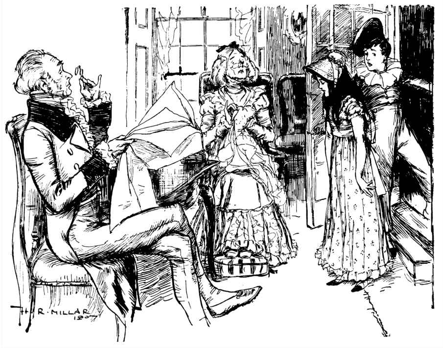
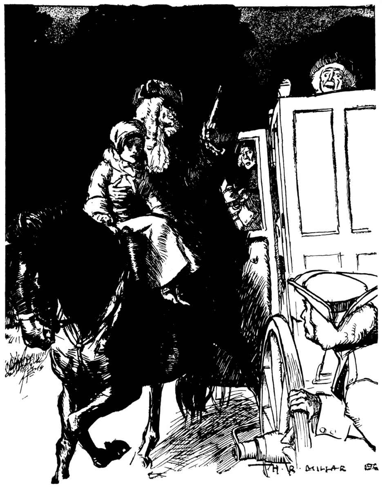
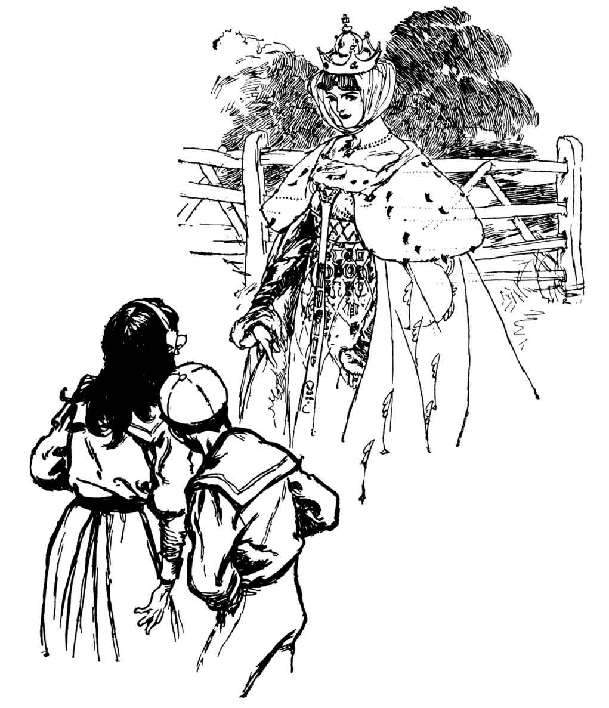

| アーデン城の宝物 | |
| E・ネズビット | |
| (2014) | |
この本は縦書きでレイアウトされています。
また、ご覧になる環境により、表示の差が認められることがあります。
本作品を電子書籍版に収録するにあたり、一部の漢字が簡略体で表記されている場合があります。
東京創元社
アーデン城の宝物
Ｅ・ネズビット
井辻朱美／永島憲江 訳
THE HOUSE OF ARDEN
E. Nesbit
1908
アーデン城の宝物
登場人物
ジェームズ・アーデン卿
アーデン一族の長
エドレッド・アーデン
アーデン卿のいとこの孫息子
エルフリダ
エドレッドの姉
イーディスおばさん
エドレッドとエルフリダのおば。ふたりの面倒をみている
ビールじいさん
アーデン城の近くに住む老人
モルディワープ
不思議な白いモグラ
ミセス・ハニーセット
アーデン屋敷の世話係
ベティ・ラヴェル
魔女
ベティ（ベット）
二百年前のアーデン一族の娘
エドワード・タルボット
二百年前の准男爵
リチャード（ディック）
三百年前のアーデン一族の少年
パラドス
三百年前のアーデン家の家庭教師
ウォルター・ローリー卿
三百年前のロンドン塔の囚人
第一章 アーデン卿
むかし、立派なご大 家 がありました。畑や土地を持ち、財産や宝石もふんだんにあり、小作人もいれば、召使もたくさんいて、兵士も雇 っていました。ご領主は、領地のはずれまで馬で三日もかけて旅をし、そこでヘンリー王にお目どおりしました。王さまはやっぱり三日かけて、ご領主といっしょに馬でやってこられ、このご領主のお城の客用寝室にある豪 華 なベッドでおやすみになりました。のちにこのご大家の子孫は、一族郎党をあげて、あのクロムウェル （１） に反抗しました。いちばん末の若さまは、イギリスの名 誉 を守るため、外国での戦いにおもむき、傾 きかけてはいても由緒あるほまれ高いアーデン家の名を、いくたびもかがやかせました。かつてサクソン人がイギリスを支配していた時代にも、アーデンの一族は生きのびていました。
アーデンの家はずっと代々たえることなく続きましたが、その数は減ってゆき、勢力も失われました。領地も手ばなし、召使も兵士もいなくなってしまいました。お城の屋根はなくなりました。ガラスのぽっかりとぬけ落ちた窓は、見知らぬひとびとのものとなった土地を、呆然と見つめています。雨風で灰色になった城 壁 のすぐ外の土地まで、ほかのひとの手にわたってしまいました。アーデン一族の男性は、いまではたったふたりしか残っていません。老人と男の子です。
老人はアーデン卿といって、アーデン一族の長 でしたが、ひとりさびしく小さな家に住んでいました。アーデン卿の家は、時間がたつにつれて崩れ落ちていったお城の石と、クロムウェル時代に大砲で打ち落とされた、城壁の石とで作られていました。男の子はエドレッド・アーデンという名前です。強い風が吹く崖の上にあるきれいな町の家に住んでいました。
エドレッドの家は、明るくて出窓がついていて、緑色のバルコニーはきらきらした海に向いていました。こぎれいな三段の階段と、いつも触っているせいでくすんで、すべすべした真 鍮 のドアノッカーがついています。かわいらしくて、すてきな家でした......お客さんにとってはね。エドレッド・アーデンは、イーディスおばさんといっしょに住んでいましたが、おばさんは、部屋を貸していました。自分の家の部屋をひとに貸すというのは、お金を稼ぐあらゆる手段のなかでも、とりわけいやなものですから、そうする前にほかのもっとまともな方法を試すことをおすすめします。
海辺にやってきて部屋を借りるようなひとたちは、どちらかというと、ホテルに滞在するひとたちよりも、満足させるのがたいへんです。こういうひとたちは、常にサービスしてもらいたがるし、変な時間にたくさん食事をとろうとします。呼び出しベルを一日中鳴らしっぱなしにするわ、服のあちこちにつけた浜辺の砂を建物に持ちこむわ、たいへんなものです。砂はカーペットやソファの上だけではなく、家中のあらゆるものにふりかかります。ぬれた長い海 藻 が、かわいいバラ模様の新しい壁紙にひっつき、洗面台にはいつもイソギンチャクや貝がいっぱい入っています。おまけにこういうひとたちは、さわがしいのです。こっちがどんなにひどい頭痛で苦しんでいようが、いつもだれかさんの靴が階段を行ったり来たりしています。お勘 定 のときだって、どんなにお安くしても、いつだって高いと思われてしまいます。ですから、できるなら部屋を貸すなんてしないほうがよいでしょう。
けれども――イーディスおばさんには、そうするしかありませんでした。それは、こういうわけでした。
エドレッドとそのお姉さんは、そのころは学校に行っていました（エドレッドにお姉さんがいたことをお話ししていましたっけ？ お姉さんの名前は、エルフリダといいます）。イーディスおばさんは学校のそばに住んでいたので、ふたりとよく会っていました。イーディスおばさんは、結婚式用の服の準備をしているところでした。おばさんの結婚のお相手は、南アメリカでひと旗あげてもどってくる予定でした。子どもたちのお父さんは、南アメリカから財産を持って帰ってくるはずでした。つまりお父さんとイーディスおばさんの結婚相手は、仕事のパートナーどうしだったのです。子どもたちとおばさんは、お父さんとジムおじさん（こういうふうに、もう呼んでいたのです）が帰ってきたら、もうすぐみんないっしょに、田舎で幸せに暮らせるんだね、と会うたびに話し合っていたものです。
ところが、そんなとき、ある知らせが届きました。お父さんとジムおじさんが山賊につかまって捕 虜 となって、お金がぜんぶなくなって、崖の上の家しか残らなくなったというのです。そこで、イーディスおばさんは、子どもたちをロンドンのぜいたくな学校から連れ出すと、みんなで崖の上の家で暮らすようにしました。お金もありませんでしたし、ほかに方法もなかったので、部屋を貸すことにしました。イーディスおばさんはしっかり者でしたので、うまくやってのけました。そこに今度は、お父さんとジムおじさんが死んでしまった、という知らせがきました。それでしばらくのあいだ、崖の家は火が消えたようにさびしくなってしまったのでした。
これが、二年前におきたことです。エドレッドとエルフリダは、部屋を借りるお客さんにどうしても慣れることができないし、そのひとたちをきらってもいました。最初のうちふたりは、お客さんの子どもたちと仲良くしようとしました。けれども、向こうのほうが、エドレッドとエルフリダのことをばかにしていることに気づいたのです。下宿屋の子どもというのは、ばかにされることがよくあったのです。そういうふるまいが、正しいとすればの話なのですが。ペッカムから来たレジナルド・ポッツ坊ちゃんあたりが、散歩道にいるふたりに向かってあかんべえをして、みんなのいる前で「へーん、下宿屋だって！」と言うこともあります。それを聞いたふたりが、どういうふうに思うかなんて、レジナルド坊ちゃんにはちっともわかりませんでした。
下宿屋にお客さんがいるとき――部屋は快適だったので、一度来たお客さんはまたやってくることが多かったのです――エドレッドとエルフリダとおばさんは、家のいちばんてっぺんと、いちばん下に住まなくてはなりませんでした。つまり、屋根裏部屋と地下室です。
下宿屋にお客さんがいないときは、風を通すために、みんなで順ぐりにぜんぶの部屋を使っていました。その中でも地下にある広い応接間が、とりわけふたりのお気に入りでした。そこにはアーデン一族の古い家具が置いてあって、壁にはアーデン一族のひとびとの古い肖 像 画 ばかり飾ってあります。地下の応接間の、古くてぴかぴかの樫 のテーブルや机には、それぞれに由緒ある話がありました。けれどもお客さんが使う部屋には、そういった話なんかない、新しい家具のたぐいが置かれていました。
エドレッドとエルフリダは、毎日学校に通って、作文、算数、地理、歴史、書き取り、それにほかの役にたちそうなことを学んでいました。そしてふたりは、どの教科も同じくらい大きらいでした。つまり、どれも同じくらい苦手だったのです。
課題のうちで、ただひとつのお気に入りは、家でする宿題でした。それも、イーディスおばさんに時間があって手伝ってもらえると、地理は冒険に、歴史は物語に、そして算数ですら、きゅうに何かしら意味を持つようになりました。
「いつも、おばさんが教えてくれればいいのになあ」エドレッドは手をインクで真っ黒にしながら、中国の輸出品の話が、初めておもしろいと思いました。
「本の中の言葉を勉強するって、すごーく、つまらないんだもん」
「できれば、わたしもそうしてあげたいけれど」イーディスおばさんは言いました。「だけど、二万九千十七個ものことを、一度にぜんぶこなすなんてできないのよ。それに――」呼び出しベルが、けたたましく鳴りました。「これでお茶の時間から数えると、七回もベルが鳴っているじゃない」おばさんは立ち上がると、台所に向かいました。「また、ベルが鳴ってるわ。お手伝いのイライザもかわいそうに。玄関先に出るのはいいけれど、来たひとたちの頼みまで聞いてやることはないのよ。ちっともいいことないわ。そうすれば、あのひとたちだって、帰りがけにイライザにチップをわたさなくてもすむでしょうし」
「あのひとたちが帰ってくれると、とーっても、うれしいんだけどな」エルフリダが言いました。
「そうね。馬車がお客さんの荷物を山ほどのせて駅に向かってゆくのを見ると、ほっとするわ......お金も払ってもらえるんだし......でもね、また新しい荷物がやってくるのを見るのも、うれしいものなのよ、おちびさんたち！ うちの船が帰ってきたら、馬車がやってこない無人島に住みましょうね。わたしたちの住む洞 窟 には、お客さんなんかとらないことにして」
「ぼくが大きくなったら、海をわたっておばさんの船を見つけて、家に持って帰ってきてあげるよ。蒸気タグボートの船長になってさ、自分で操縦するんだ」
「それなら、わたしが船長だわ」
「なんでだよ、ぼくが船長だ」
「操縦していたら、船長にはなれないもの」
「いいや、なれるさ」
「なれません！」
「なれる！」
「そう、それならご勝手に！ そっちが、そんなことしているあいだに――できっこないってわかってるけど――わたしは庭を掘って、金鉱を見つけるわ。あんたがもどってくるころには、イーディスおばさんは大金持ちになっているから、あんたのボロ船なんか、もういらないのよ」
「つぎは、書き取りをするわよ！ 〝気難し屋〟って書けるかしら？」イーディスおばさんが言いました。
「どっちのことを言っているの？」エドレッドは、むっとした顔で言いました。
「ふたりともよ」おばさんは、できるだけいかめしくしてみせました。
みなさんは子どもだったとき、自分の船が帰ってくるなんていう夢をみたことはありませんか。船が持って帰るたくさんのお金を、自分の好きなように使えるという夢です。わたしのお気に入りの夢は、千ポンドのお金と「むだなことに使うように」と書いた速達が届くことでした。もしも百万ポンド、または千ポンドでも百ポンドでもよいのですが、そんなお金が手に入ったら、だれだって、お気に入りのひとたちに、それぞれどんなプレゼントをしようか考えたり、もらったひとがあなたの気前のよさにびっくりするさまを思い浮かべたりして、何時間もわくわくして過ごしますよね。夢のような大金を、自分のためだけに使おうと思うひとは、ほとんどいないと思います。もちろん、自分のために、まずは、オートバイや、サッカーボールや、バット、本物の髪の植わった人形、本物の陶磁器でできたティーセット、大きな箱に入ったいろんなチョコレート、『宝島 （２） 』の本、ユーイング夫人 （３） の書いた本をぜんぶ買うでしょうね。けれども、こういったものを手にいれたあとは、ほかのひとに何か買ってあげようと思うようになります。こんなことを考えるのは、とても楽しいものです。ですが、こういう夢がほんとうになったとき、つまり百ポンドなり千ポンドなりが手に入ったときには、もとの計画をたいてい忘れてしまい、かわりに株や、不動産や、太い葉巻や、毛皮のコートなどに使ってしまうのです。もしもまた若くなれたら、わたしは腰をすえて、自分の船が帰ってきたときにどんなことをしたいかを、リストに書き出します。そして、もしも船がほんとうに帰ってきたら、そのリストを読んで、それから――いま、応接間では八回目のベルが鳴りました。玄関でもベルが鳴っています。二階、それに三階のベルも鳴っています。お手伝いのイライザは、四つの呼び出しにいっぺんに応えようとしていますが、そんなのは無理な話です。
玄関のベルは、郵便配達人が鳴らしていました。手紙を三通、持ってきたのです。一通目は、トイレの貯水タンクの修理費用の請求書でした。エドレッドがつい最近、タンクに火をつけたのです。内側に水が入っている木は燃えないだろうという考えを、確かめようとしたのでした。けれども、これが大きなあやまちだったことは、黒こげになったタンクが証明してくれました。二通目は、いつものお値段の半額で、ある牧師さまを泊めてくれないかとたずねるものでした。なぜならこの牧師さまには大家族がいましたが、全員がはしかにかかってしまったからです。そして三通目こそが、まさに問題の手紙でした。この物語のはじまりであり、物語の背骨であり、ふたりの冒険の理由となった手紙でした。
エドレッドは、郵便配達人から手紙を受け取ると、イーディスおばさんが手紙を読むあいだ、そばに立って待っていました。エドレッドは、切手を収集していたのです。けれども、値打ちものの切手が貼ってあるかどうかは、うす暗いガス灯の明かりではわかりません。
三通目の手紙を読むと、イーディスおばさんは、奇妙な行動をとりはじめました。おばさんは、まず一度読んでから、目をこすりました。それから立ち上がって、シャンデリアの下へと移動しました。そのシャンデリアは、ついているかどうかわからない程度の明るさで、どうしたって新しいガス灯をつける必要がありました。おばさんは、もう一度その手紙を読み返しました。そうして、三度目を読み終えると「あらあ！」と声に出しました。
「おばさん、どうしたの？」エルフリダは、心配そうにたずねました。「税金のこと？」以前に税金の問題がおきたときのことを、エルフリダは忘れていませんでした（ぴんとこないひとは、親戚のうちでいちばん親切で、いちばん質素に暮らしているひとにきいてみるといいでしょう。もしそのひとが知らないようでしたら、洗濯の女のひとにきいてみましょう）。
「いいえ、税金の問題なんかではないのよ。まったく反対のことだわ」
わたしには、税金の問題とは反対（または逆）のことが何かなんて、子どもたち以上にわかりません。けれども、それがなんだかいいものだということはわかります。ふたりもそうだったので、「なんて書いてあったの？」ときく前に、「おばさん、よかったね！」と何度もくり返しました。
「はっきりとはしていないんだけれど――うちの船が、帰ってくるみたいなのよ。でも船といっても、ほんとに小さい船だから、あまり期待はしないでちょうだいね。だけど、まず明日、わたしがロンドンへ行かなきゃならないようなの。ほんとにうちの船なのかどうか確かめて、もしもそうだったら、どの船なのかも確かめなくちゃいけないわ。どうやら、〈ブレイク号〉がもどってくるようなんだけど。それで、ふたりとも、おとなしくしていてくれるわよね？」
「えーと、はい、そうします」と、ふたりは答えました。
「戸に仕かけをして、肉屋さんの上にものを落っことさないこと。パジャマで屋根にあがらないこと。ゴミ箱の中で〈インディアンごっこ〉をしないこと。お客さん用のベッドのシーツを折りたたんで、足がのばせないようにしないこと。いいですか？」イーディスおばさんは、ふたりがひまつぶしについ最近していた遊びを、早口で並べたてました。
「絶対に、もうしません。できるだけ、新しいことや楽しいことを、考えないようにしようと思います」と、エドレッドは、自己犠牲の精神を発揮しました。
「八時半の列車に乗らなきゃ。何かあなたたちに――楽しい遊びを思いついてあげられたらいいのだけど」おばさんはこうしめくくりました。おばさんはやさしいので「いたずらを一日させない方法」とは言わなかったのです。ほんとは、そう思っていたのですけれどもね。「エドレッド、あなたのお誕生日に、何かすてきなものを持って帰るわね。だから、やさしいハモンドおばさまのところへ、一日行っているのはどうかしら？」
「うへえ、いやだ！」エドレッドは言ったとたんにひらめきました。「エルフとぼくだけで――ピクニックに行っちゃだめかな？ 原っぱで、お誕生日を過ごしにさ。ぼくの誕生日は明後日 だけど、かまわないでしょ？ 去年の夏は、ぼくらがまだ小さすぎるって言ってたけど、いまのぼくは二インチ（約五センチ） も背がのびたし、エルフは三インチものびたよ。だから、ぼくらがまだ大きくなってないって言われてから、ふたりぶんあわせると、五インチも大きくなってるよ」
「ほらね、算数は役にたつって、これでわかったでしょう？ わかりました。いいでしょう。ただし、古い服を着て、道から見えるところにいるのよ。そうね、明日は一日、お休みにしていいわ。さあ、寝なさい。あらあら、またベルが鳴ってる！ イライザも気の毒に！」
お客さんのクラップハム家の男の子が、ちょうど二階の寝室にあがっていこうとしていたとき、地下室と家のほかのところを区切る布仕切りから、エドレッドとエルフリダが入ってきました。男の子は、階段の手すりから、ふたりの子どもたちに向かってあかんべえをして「ちびのお手伝いさん！」と言いました。男の子は、ふたりに追いつかれずに階段をのぼりきれると思っていましたが、エルフリダの長い腕を計算に入れていませんでした。彼女の腕が手すりのあいだをさっとぬけて、男の子の足をとらえ、エドレッドが来るまでつかまえていました。ふたりの少年は、階段の上まで取っ組み合いながらのぼってから、上から下までいっしょに転げおちました。おたがいの体がこんがらがったふたりは、それぞれの身内によって引き離されたのでした。この小さな事件のほかは、寝るまで何もおこりませんでした。
つぎの日の朝、イーディスおばさんは、八時半の列車で出かけました。ふたりの学校カバンは、本のかわりにパンでいっぱいになりました。教科書のかわりにサンドイッチがつめられ、インク染 みだらけの筆箱のかわりに、立派なペパーミントクリームがふた箱収まりました。これは、ひと箱一シリングもしますが、あせっていたおばさんがよく見もしないで、駅へ見送りにきたふたりに買ってくれたのでした。
いつだって洗いたてのような赤レンガの歩道を、ふたりはゆっくりとのぼり、丘の頂上までやってきました。そこで立ちどまると、おたがいに顔を見合わせました。
「悪いわけないと思うな」とエドレッド。
「だめ、とは言われなかったものね」とエルフリダ。
「わかってる。大人が〝考えておく〟って言うときは、絶対にそれは無理なんだ」
「わたしも気がついてたわよ。おばさんは、わたしたちをあそこへ連れていくってことを、いつも〝考えておく〟って言ってたこと」
「そうだよね。ぼくらは、ずるをして、こそこそしたりするわけじゃない」ずるをして、こそこそするだろうなんて、だれも言っていないのに、エドレッドは言いはりました。
「おばさんがもどってきたら、ちゃんと話すんだからさ」
「そうよね」エドレッドが、おばさんにだまったままにしやしないかと、疑っていたエルフリダは、ちょっと安心しました。
「だいたい、このぼくたちのお城なんだよ。ぼくらのご先祖さまの発祥の地に、なんとしても行ってみなくちゃ。『古城めぐり』って本にも、そういうふうに書いてあったよ。まあ言ってみれば、これは巡礼だよ。このカバンは巡礼のずだ袋になるし、姉さんの一ペニーで、半ペニーの杖を二本買おうよ。やりたかったら、靴の中に豆なんかを入れてもいいよね」エドレッドは、気前のよいことを言いました。
「そういったものをとりに、引っ返さないといけないじゃない。そんな変てこなことやって意味があるのかしら。それに、靴の中の豆って、痛そうだし」エルフリダは乗り気ではありません。「それに、わたしはお小づかいをそんな――」エルフリダは、弟のしかめ面を見て、口をつぐみました。「いいわ、それなら使っていいわよ。今度あんたが一ペニーもらったとき、半分くれるならね。そうしたら、ちゃんと公平になるもの」
「ぼくは、いつだって、不公平なんてしないよ。〈巡礼ごっこ〉は、やめにしようか」エドレッドは、よそよそしく言いました。
「でも、わたしはやってみたいわ」とエルフリダが言っても、エドレッドはがんこでした。「いいさ、ただ歩くだけにしよう」
ふたりはむっつりして、ひたすら歩きつづけました。
やがて、町らしさは、靴下にあいた穴のふちの部分のように、だんだんうすくなってゆきました。つまり、家どうしのあいだがあいてゆき、どの家にも大きな庭がついているようになったのです。そんな家のある玄関先に、お手伝いさんがひとりいました。お手伝いさんは、マットのほこりをはらいながら歌っていました。マットのほこりはらいなんて、町のお手伝いさんはめったにしないものです。
幸 あれ！ と恋人に言おう
あなたを愛しているから
ふたりが離れているあいだ
わたしの幸運をあなたに送る
「これって、なんだか運がいい感じじゃない」エルフリダは、うきうきしています。
「ぼくらは、あのひとの恋人なんかじゃないよ」
「そうだけど、わたしたち、歌を聞いたでしょう。でもって、相手はここにいないんだから、どっちにしろ幸運を受け取れないじゃない？ あら、案内板だわ。どのくらい遠くまで来たのかしらね？ とーっても、つかれてきちゃったわ」
「巡礼者になってたらよかったのに。巡礼っていうのはね、どんなにたくさん豆を靴の中に入れていたって、つかれることなんてないんだよ」
「じゃあ、これから巡礼になる」
「無理だよ。もう遅すぎる。杖屋さんから、もう何マイルも何マイルも、離れちゃったんだから」
「いいわ。じゃあ、もう行かない。あんた今朝、ベッドのまちがったほうから下りたんだわ。この午前中、ずーっと、できるだけやさしくしてきたけど、もうおしまいよ。ほら、あとはお好きにしてください」
「わかった」エドレッドは、こわばった声で言いました。「姉さんは家に帰りたければ、そうしたら？ どうせ女の子だもんね」
「あなたのような男の子でいるくらいなら、女の子でいるほうがましです」
「それって、どういう意味さ。ぜひとも、知りたいんだけど？」
エルフリダは立ちどまると、目をぎゅっとつむりました。
「やめ、やめ、やめ、やめ！ わたしはおこらない、おこらない、おこらない！ 休戦よ。おしまい、やめやめ！」
「やめるって、何を？」
「つまんないことでけんかすることよ」エルフリダは目を開くと、早足で歩きはじめました。
「わたしたち、いつもこうなっちゃうのね。けんかがくせになっているって、おばさんが言ってたわ。もしも男の子が、女の子よりずーっとましなんだとしたら、けんかなんて、好きなときにやめられるんじゃない？」
「男の子が、けんかをやめるのがきらいだったら？」エドレッドは、ブーツで真っ白いほこりをけり上げました。
「ええっと、わたしがはじめに、ごめんね、と言うわ。それでいいですか？」
「ぼくが先に、そう言おうかなって、ちょうど思っていたとこさ」エドレッドはむっとしたように言いました。「ねえ、ここに案内板があるよ。なんて書いてあるか、見てみよう」エドレッドは、ちょっとおだやかな口調で言いました。
案内板には、たいへんあっさりと、ふたりが一と四分の三マイル（約二・八キロメートル） 歩いてきたと書いてありました。そして、とても意地悪なことに、アーデン城まであと八マイル（約十二・八キロメートル） だと付け加えてあります。けれども、アーデンハースト駅までは四分の一マイル（約四百メートル） 、とも書いてありました。
「列車で行こうか」エドレッドはえらそうに言いました。
「お金がないじゃない」エルフリダはひどく落ちこんでいます。
「えっへん、ほら、見てごらんよ。このぼくはね、けちじゃないんだよ。新しいフロリン銀貨を持ってきているんだぞ」
「エドレッド！ あんたって、えらいわ」エルフリダは、大いに反省しました。
「ふん！」勝ちほこった気持ちとけんそんの気持ちが入りまじって、エドレッドの耳は赤くなりました。「まあね。行こうよ」
こうして巡礼ふたりは、列車からアーデン城を初めて目にすることになりました。お城は、崖の上に堂々とした姿で建っていました。よその国から攻めこまれないよう、その場所に建てられ、まわりの領地を守ってきたのです。けれども、いまでは、むかしの栄光は影も形もありません。雑草や野花でおおわれた大きな城壁と、床と天井が崩れ落ちたまるい形の塔と、フクロウが巣を作っている屋根のない部屋とがあるだけでした。そのうえ、イバラや緑のシダがびっしりと生い茂っていました。
ふたりの子どもは、崖の道を通って城に向かいました。ヒバリがうす青い空で狂ったようにさえずり、ミツバチがいそがしく働くマメ畑からは、たいそう甘いにおいがただよってきます――その甘いにおいは、崖の下で波にあらわれては浮き沈みする、茶色い海草のにおいと混じりあいました。
「ここで、お昼にしましょうか」小さな丘のてっぺんにたどりつくと、エルフリダが言いました。そこからは、お城を見下ろすことができます。サンドイッチをふたかじりするごとに、ペパーミントクリームをひとなめ。それが決まりです。もぐもぐしているあいだじゅう、ふたりはずっとお城を見下ろしていました。そうすると、お城のことが、もっともっと好きになってきました。
「あれが本物のお城で、わたしたちがそこに住んでいたら、いいと思わない？」
お腹いっぱい食べてから、エルフリダは言いました。まだペパーミントクリームは残っていましたが、ふたりはお昼を終えました。
「お城は本物さ。あそこにあるじゃないか」
「そうだけど、つまり、あそこに煙突や暖炉や、かんぬきつきのドアや、ガラス窓があって、住める家だったらいいな、ってことよ」
「ぼくら、あの中に入れると思う？」
「城壁をよじのぼらなくちゃいけないかもね」そのつもりになって、エルフリダは、六十フィート（約十メートル） の高さはある巨大な城壁を見ました。そこには、出入り口も、割れ目もありません。
「あそこの畑、おじいさんがよこぎっているよね。ちがう、そっちじゃないよ。あっちの畑だよ。あのおじいさんにきいてみようよ」
エドレッドとエルフリダは、カバンを短い芝草の上（その半分は野生のタイムでした）に置くと、下へおりることにしました。けれども、下まではなかなかたどりつけません。ふたりが追いつく前に、おじいさんは小麦畑を通り、畑の垣を乗りこえて、背の高い生垣の小道へと姿を消していきました。ふたりは畑の垣をこえて小道に入り、おじいさんが自分の家の庭木戸を背中でカチャリといわせて閉めたとき、追いつきました。おじいさんは、クルマバソウ、アネモネ、水仙、それにあらゆる色どりのチューリップの花 壇 のあいだを通るレンガの小道をあがってゆくところでした。
おじいさんはこっちに背中を向けています。ひとの背中に向かってお行儀よく声をかけるのは、とても難しいことです。ですから、エドレッドが「おーい！」、エルフリダが「もしもーし！」と言ったのも、しかたのないことですね。
おじいさんがふり返ると、セーラー服を着た小柄な姿がふたり、庭木戸のところにいました。ふたりは、年とってしわだらけの顔、雪のように白い髪、銀白色のマトンチョップ形のほおひげなどを見ました。日焼けした顔には、明るい青い目がかがやいています。きれいにひげを剃った口もとには、小さくはありますが、やさしげな笑みが浮かんでいました。
「おやおや、おまえさんがたは、なんのご用だね？」
「わたしたち、知りたいことがあるんです――」と、エルフリダ。
「お城のことなんです」と、エドレッド。「あのお城に入って、中を見ることができますか？」
「わしは、お城の鍵束を持っておるよ」おじいさんは家のドアのほうへと手をのばして、釘にかかっている鍵束をとりあげました。
「お城には、だれも住んでなんかいませんよね？」と、エルフリダが言うと、
「いまはな」庭を通ってこちらにもどってきながら、おじいさんは答えました。
「先 のアーデン卿が、二週間前の火曜日に亡くなってのう。新しいアーデン卿が来るまで、あそこは閉鎖されるんじゃよ」
「このぼくが、新しいアーデン卿だったらいいのになあ！」エドレッドは、おじいさんのあとをついて小道を歩きながら言いました。
「ええっと、おまえさんは、いくつになるのかね？」おじいさんがたずねました。
「もうちょっとで十歳になります。明日がぼくの誕生日なんです。おじいさんはおいくつですか？」
「八十歳になるところじゃよ。人生いろいろ見てきたもんじゃ。もしも、おまえさんがアーデンの若だんななら、ほかのだれにもできんことを、やれる見こみがあるんじゃがな――おまえさんの、いまのその年でな」
「見こみって、何ですか？」
「なんだ、あの言い伝えを知らんのかね？ このあたりのもんなら、だれでも知っとると思ったがな」
「どんな言い伝えですか？」
「おしゃべりと歩くことをいっぺんにすると、わしの息は、切れてしまうんでな」おじいさんはこう言って立ちどまりました。「ともかく、あれは詩じゃなかったな」おじいさんは、深く息を吸いこみました。
アーデン卿いまだ十 にならざるが
九つはすでにすぎしとき
宵 の口にアーデン卿を
アーデン塚に立たしめよ
呪文をとなえるわざあらば
宝みつかり幸あらん
「うわあ！」ふたりは大声を出しました。「それで、アーデン塚はどこなんですか？」エドレッドがたずねました。
「あそこじゃよ」おじいさんは、ふたりがお昼を食べた丘を指さしました。
エルフリダは、もっと立ち入ってきいてみました。「どんな宝物なのかしら？」
けれども、この質問には答えてもらえませんでした。
「わしは、話をするときは、すわらにゃならんのじゃ。ここで話をするか、それとも、お城の中でするかね？」
ここですぐ話を聞くか、お城まで行くか、というふたつの考えがぶつかりあい、強いほうが勝ちました。
「お城の中で」
そこで、みなはお城へ行くことになりました。おじいさんは、お城の教会のアーチの倒れた柱の上にすわって、待っていました。エドレッドとエルフリダは、草ぼうぼうのお堀をのぼりおりしたり、荒れはてた部屋をのぞきこんだり、崩れた柱 廊 をたどったり、どうにかのぼれるただひとつの階段を使って塔にあがったりしたあとでおじいさんのそばにやってくると、白いヒナギクでいっぱいの草地にすわりこみました。「ねえ、お話しして」
「えーとな、アーデン家の一族が、いつも立派なご領主さまじゃったことは、知っておろう。ウィリアム征服王 （４） とかいったか、だれでもいいが、その前の時代から、アーデン家のひとはずっとここにおったんじゃよ」
「一〇六六年」と、エドレッドはつぶやきました。
「そんでな、えらいひとでもそうでないひとでも同じじゃが、アーデン家のひとにも、いいときと悪いときがあった。一度、外国でやっかいな戦争かなんかがあったとき、たくさんのお金や宝石や銀器が隠された。宝物というのは、それのことじゃ。そんで、宝物を隠した男は殺された――まあ、生き残るのが難しい時代だったんじゃな――だれもその宝物が、どこに隠されたかは知らんかった」
「それから、宝物は見つかっていないの？」
「いまその話をしておるんじゃよ？ むかし、ひとりの魔女が住んでおった。アーデン家の者は、この魔女のところに行って、どうやったら宝物が見つかるかをたずねた。魔女はときどき発作をおこした。いまでいう、ヒストリーいやヒステリーの発作だな。その発作のあいだしか、意味のあることは言わんかった。その発作のあいだに、詩の形でお告げをしておったそうな。魔女から聞き出せるのはそれだけじゃった。けんど魔女は、宝物を見つけるための呪文が何かは、言おうとせんかった。この魔女が死ぬ間際じゃが、そのころのアーデンの奥方が、よく面倒をみてやったらしくてな、最後の息を吐き出す前に、魔女はこの奥方に呪文を教えたんじゃ」
おじいさんは息が切れて、話すのをやめました。
「それで、呪文はなんていうんですか？」子どもたちは、おじいさんよりもずっと息が苦しくなりました。
「だれも知らん」
「だけど、宝物はどこにあるの？」
「だれも知らん。けんど、向こうにある、お城の図書室の本に書いてあるって、聞いたことがあるのう。でも、むだじゃった。アーデン卿になった者は、みんな十歳をとうに過ぎておったからな」
エドレッドは、わたしたちが想像できないほど、奇妙な感覚に襲われていました。手は熱く乾いて、それから冷たく湿ってきました。
「ぼくが思うに、それって、アーデン卿の称号をついでいないといけませんか？ ぼくがもしも、ただのジョン・アーデンとかジェームズ・アーデンとか、エドレッド・アーデンとかなら、だめでしょうか。ぼくの名前は、エドレッド・アーデンといいます。ぼく、その言い伝えを試してみたいんです」
おじいさんはかがみこんで、エドレッドの腕をつかんで引きよせると、自分の膝 のあいだに立たせました。
「おまえさんの顔を見せておくれ」おじいさんはそう言って、エドレッドを見ました。
「ああ、アーデン家のもんだ、まちがいねえ。見えていなかったんじゃなあ。おまえさんのこの長い鼻と、拍車みたいに突き出たあごを見たなら、わかったはずじゃがのう。けんど、わしの目は前みたいに見えないんでな。おまえさんがアーデン卿だとしたら――お父さんの名前は、なんていいなさる？ 下の名前さ」
「ぼくと同じ、エドレッドです。けど、お父さんは死にました」
エドレッドはまじめな顔をして言いました。
「そんで、おまえさんのおじいさんの名前は何だい？ ジョージだけじゃなかったな、ジョージ・ウィリアムかい？」
「そうです。どうして知っているんですか？」
おじいさんはエドレッドの腕を離してから、立ち上がりました。そして、自分のおでこに触れました。
「わしはこの土地で、子どものころから働いてきたんじゃよ。これまで生きてきて、また新しいアーデン卿があとをつがれるのを、この目で見るとはなあ。そんなにもじもじするもんじゃねえよ、おまえさんはまちがいなく、アーデン卿じゃよ」おじいさんは、ぴしゃりと言いました。
「ぼくが......アーデン卿だなんて」エドレッドは息をのみました。
「おばさんが、先のアーデン卿は、わたしたちの親戚だって言っていました。大おじさんか、いとこだって」
「そのとおりじゃよ、おじょうちゃん」おじいさんはうなずきました。「アーデン卿はな、名前はジェームズじゃったが、このお方は、おまえさんたちのおじいさんのジョージさんのいとこじゃった。おじいさんの息子がエドレッドで、おまえさんのお父さん。先のアーデン卿には、息子も――娘も、だれもおらんかったんじゃよ。そんで、アーデン家の権利が、おまえさんがたの一族に移ったってことを、ルイスから来た弁護士の卵のスニグワースのやつが、この三週間くらいで五十回ばかし、言ってまわっておったわい。だから、おまえさんがアーデン卿になるんじゃな」
「もしもぼくがアーデン卿なら、呪文をとなえて、宝物を探すんだけどなあ」
「それなら早くしなきゃね。明後日だと、あんたは十歳を過ぎてしまうんだから」
「そうだよね」
おじいさんは重々しく言いました。「おまえさんがアーデン卿になって――まあ、大人になってその権利を得たらな――わしのように、貧しくて助けが必要な者を、忘れないでくださいましよ、若だんな――忘れないでもらいたいもんじゃねえ」
「宝物を見つけたら、きっとそうしますよ」
「そうじゃなくったって、忘れないでもらいたいもんじゃよ。さて、わしはもう、家にもどらなきゃならん。おまえさんたちは、まだ遊びたいんじゃろ？ 終わったら、鍵を持ってきておくれ。自分のお城を、まさか傷つけるようなことはあるまいな。何百年ものあいだ、一族が住んでおった場所じゃよ」
「もちろんです、信じてください」エドレッドは、胸をはって言いました。「さようなら、ありがとう！」
「さようなら、若だんな！」おじいさんはこう言って、帰っていきました。
エドレッドは鍵束を手にして言いました。「もしもさ、ぼくがアーデン卿だったとしたら！」
「そうよ、あんたはアーデン卿よ。きっとそうに決まっているわ。だったら、わたしはレディ・アーデンになるのかしらね。うーん、すてきじゃない。うちにいるお客さんの子どもたちなんて、追い出してやるんだから。あら、どうしたの？」
エドレッドはしかめ面をして、いままでなんの気なしに腰かけていた石の上の、ビロードのようなコケをむしりとっています。
「これって、泥棒みたいかな？ 無断で、自分の家に入るのってさ？」
「それが自分の家なら、ちがうでしょ。ちがうに決まってるじゃない」
「でもさ、もしこれが、泥棒になったら？ 牢屋に入れられちゃうかもしれない」
「そしたら警察に、自分の家だと思ったんですって、言えばいいでしょう。ほら、エドレッド、行くわよ！」
「これは、おばさんが言ってたような、お行儀の悪い好奇心でもって、行くんじゃないからね。宝物を探すための、呪文が欲しいからなんだからね」と男の子が言うと、「そんなのあたりまえじゃない」と、女の子はちょっとばかにして思いました。「だけど、お家の部分ってどこかしら」
エルフリダがこうたずねたのも、無理はありませんでした。というのも、お城の灰色の壁には、草花がふさふさと鳥の羽根のように生え、六月のきれいなうす青の空にひるがえっていて、建物なんて見あたらなかったからです。けれども、灰色の石の壁には、そこにもここにも、灰色の木のドアがありました。
「この中のどれか、ひとつにちがいないよね。見つかるまで、ぜんぶの鍵とドアを試してみるか」エドレッドは言いました。
そこでふたりは、ぜんぶの鍵とドアを試してみました。あるドアの向こうは、リンゴが貯蔵された物置になっていました。別のドアは地下室につながっていました。湿った壁には、ほうきや、すきや、つるはしなどが立てかけられていました。三番目のドアを開けると、もとは鳩 小屋として使われていた塔にたどりつきました。最後の最後に試したドアの先には、ふたつの高い壁に囲まれ、わすれな草とパンジーの隙間から雑草が生い茂っている庭がありました。その庭の奥深くには、ふたつの高い灰色の壁のあいだにぎゅっと押しこまれた赤い屋根をした細長い家があって、お城の一部となっていました。
窓の日よけは、ひとつ残らず下ろされています。庭は、ひんやりとして静かで、湿った土と落ち葉のにおいがします。
「ねえ、エドレッド、やったほうがいいのかしらね」エルフリダは、ふるえながらたずねました。
「もちろん、やってみるよ。姉さんは、気分がのらないんでしょ。こわいんだ」
「ちがうわ、行くわよ」エルフリダは、もちろんのこと、こう答えました。
とは言ったものの、ふたりはゆっくりと、爪先だって、息をひそめながら進んでいきました。そして、まるで目を閉じているように見える、日よけが下ろされた窓までやってきました。
正面のドアには鍵がかかっていますが、鍵束のなかのどれかが合うはずです。
「気にしないぞ。ぼくがアーデン卿なら、この家に入る権利はあるんだからね。それに、ぼくがアーデン卿じゃなくっても、かまうもんか。ほら、行こうよ」
エドレッドは、ニワトコの木によじのぼって小さな窓までゆくと、そこの窓を開けようとしました。それを見ていたエルフリダは、こわいのが半分、弟の勇気に感心するのが半分で、大声をあげてしまいそうでした。窓がかたく閉まっているとわかると、エドレッドはひじでゆっくりと押しながら窓を開きました。
「こうして、アーデン城のあととりは、その領地にふたたび足をふみ入れたのでした」
エドレッドは、ちょっと自信なげにそう言いながら窓を開けると、中に入りこんでいなくなってしまいました。ひとり残されたエルフリダは、両手を握ったり開いたり、落ちつかなくて、そわそわしていました。庭のドアから大柄の警官が突然入ってきて、村のおまわりさんのような立派な深い声で、「弟はどこにいる？」とたずねてくるような場面を、想像のなかからしめ出そうとしていました。
幸いなことに、そんな警官はやってきませんでした。やがて日よけが上げられ、フランス窓が開き、何かをたくらんでいるような顔つきをしたエドレッドが、こっちに来るようにと手招きをしました。言うとおりにするのは勇気がいりましたが、エルフリダはそうしました。エドレッドがフランス窓を閉め、日よけを下ろすのを見たエルフリダは「やめて、そんなことしないで」と言いました。
「ばかだなあ、こわがることなんかないよ。ぼくらの家と、同じような感じだよ」
エドレッドの言うとおりでした。家中を見てまわり、ほんとにそのとおりだとわかりました。上の階には、あまり物がなくて、がらんとした部屋もありました。けれども、たまに置いてある家具は、イーディスおばさんの家具と同じような種類でした。それに、おばさんの持っている絵と、似たような絵もかかっていました。けれども、図書室だけはちがいました。その大きな部屋には、絵はひとつもかかっていません。本、本、本ばかりで、どれも黄色い革で装丁されていました。数え切れないほどの本が、床から天井まで積み上げられ、窓と窓のあいだにある棚や、暖炉の上にも置かれています。エドレッドはこれを見ると、落ちこんでしまいました。
「これじゃあ、だめだ。ぜんぶの本を見ようと思ったら、何年もかかっちゃうや」
「何冊か、見てみましょうか」
エルフリダは、弟と比べると、いつもそれほど勇気はありませんが、ずっとしんぼう強い子なのです。すり切れたカーペットに腰をおろすと、エルフリダは手近なところにある背表紙に書かれた、原子やら、ロック （５） やらといった、つまらなくてうんざりするタイトルを読みあげてゆきました。けれども、どの本にも、宝物を見つけるための呪文が書かれているようには思えませんでした。
〝貴金属〟という言葉が入ったタイトルに、ちょっとだけまどわされましたが、文字がぎっしり書いてあって、茶色い染みのあるページには、呪文のようにおもしろいことは書いてないと、すぐにわかりました。時間だけが過ぎてゆき、日よけから入る光がカーペットにあたる位置が変わっていっても、エルフリダはがまん強く続けていました。けれども、エドレッドは、だんだんそわそわしだしました。
エドレッドは何度も「そんなことしても、むだだよ」と声をかけました。それから「もうやめようよ」、「あのおじいさんは、ぼくらをからかってたんだよ。もともと、あんな話なんか、ぼくは信じていなかったもん」となって、しまいには「ねえ、お家に帰ろう」と言いました。
それでも、エルフリダは頭や背中が痛くなっても、こつこつと作業を続けました。そんな彼女の努力が実ったと言えればいいのですが、そうはなりませんでした。それは、こういうわけだったのです。エドレッドは、手あたりしだいに本棚のふちに指をすべらせているときに、それを見つけました。そんなことをしていたのは、本棚のふちのねずみ色のやわらかいほこりを指にくっつけるのが、楽しかったからです。「これはどうかな？」エドレッドはきゅうに声をあげて、大きな白い本を引き出しました。その本には、四角や小さい点で描かれた紋章が、金色で押されていました。盾型の紋章の上には金色のブタがいて、背表紙には『アーデン家の歴史』と書かれています。
すぐにその本を床に置くと、ふたりはいそいで、熱心にページをめくりました。でもなんてことでしょう。その本にも、あのつまらない本と同じように、呪文のことは何ひとつ書かれていなかったのです！
エドレッドが大きな音をたてて本を閉じ、もうじゅうぶんだといったふうな態度を示したときでした。一枚の紙が、どこからかひらりと舞いあがって、鳩のようにさっと通り過ぎると、火の気のない暖炉の上に落ちました。これに呪文がのっているのは、まちがいようがありません。
四角い黄色の用紙には、消えかけたインクで、何かが書いてあります。紙は、一度たたんだあとで、何度も開けたり閉じたりしたようでした。そのせいで、紙の折り目のあたりがすっかりうすくなってしまい、ふたつの紙きれはかろうじてくっついていました。女のひとが書いたと思われるきれいな細かい文字で、紙のいちばん上に「アニーおばさんが教えてくれた呪文。一七九三年、十二月二十四日」と記され、そのあとに呪文がのっていました。
聞け、アーデン家のしるしよ
われは幼きものなれば
かく唱えるのを許したまえ
アーデン家のしるしよ、ここに来たれ
われに勇気とやさしさとかしこさを与え
宝のありかを教えておくれ
さらに「これを、アーデン卿が九歳から十歳になる、夕暮れ時にとなえること。でもこれはぜんぶでたらめで、信じてはならない」と続けて書いてありました。
「これが、呪文にまちがいないよ。ほら、ここから出ようよ」エドレッドがこう言って、ふたりが外に出ようとしていると、図書室の隅で何か小さなものが動きました――でもふたりには、それが何かは見えませんでした。
その家を出るまで、ふたりとも息を止めていました。そして庭をぬけ、城を出て、広くてタイムの茂っている野原までもどってきました。空は青く広がり、ヒバリがさえずっています。甘くさわやかな海草のにおいがしてきて、マメ畑が見えました。
「ふう、あんたが呪文を言うのが真夜中じゃなくて、ほんとによかった。もしそうだったら、すごくこわかったと思うわ」と、エルフリダは言いました。
「そんなことあるもんか」青白い顔でお城から足早に遠ざかりながら、エドレッドは言いました。「真夜中だって、別にぼくは、平気だったよ」エドレッドは、本気でそう思っているようでした。
部屋の隅で何かが動いたとき、エドレッドが手から落とした紙は、エルフリダが拾ってあげました。まだその紙を握りしめています。
「あれは、ネズミか何かだろうな」とエドレッドは言いましたが、心臓はものすごくどきどきしていました。
「そうだと思う、あれはネズミか何かだわ」そう言うエルフリダの口もとは、ぶるぶるとふるえていました。
エドレッドとエルフリダがアーデン塚に到着したのは、夕暮れのずっと前で、まだ時間があります。そこで、ひと休みしようということになりました。ヒバリの声を聞き、マメの花の香りをかぎながら、〝ネズミか何か〟をあんなにこわがるなんてへまだったなあ、とふたりは思いました。すこしばかり残っていたサンドイッチやクランブルケーキを食べたら、お昼のときにはおいしくないと思っていたのに、いまはぜんぜんちがう味がしました。こんなことをしながら、ふたりは、太陽が、平原の茶色い小山に落ちつきかけるまでの時間を過ごしました。小山のほうは、夕方の霧でつくられた太陽の赤い球にむかって、のびあがっているように見えました。
ふたりはしばらくのあいだ、だまったままでした。ふたりの四つの目は、しっかりと太陽に向けられていました。そして、太陽の端が丘の肩にかかってぺしゃんこになりはじめると、エルフリダは「いまよ！」と弟にささやいて、紙を手わたしました。
暮れゆく光の中、ふたりは何度も呪文を読み返しながら待っていましたから、もうすっかり言葉は覚えていました。ですからエドレッドには、紙に書かれた呪文を読む必要はなかったのです。それでも、呪文を覚えておいたのは正解でした。なぜなら、濃いピンクの夕陽の光の中では、黄色い紙に書かれた消えそうな文字は、とうてい読めなかったからです。エドレッドは立ち上がりました。
「いまよ！ いま言って」エルフリダが、また言いました。そこでエドレッドは、いつも学校で、死せるマコーリー卿 （６） のバラッドとか、燃える甲板に立つ少年の感動的な物語 （７） を暗唱するときのように、大きくて調子のいい声で呪文を口にしました。
聞け、アーデン家のしるしよ
われは幼きものなれば
かく唱えるのを許したまえ
アーデン家のしるしよ、ここに来たれ
われに勇気とやさしさとかしこさを与え
宝のありかを教えておくれ
弟は、ゆっくりと、気をつけながら呪文をとなえました。姉さんはじっと耳をすまして、もしも弟がまちがえたら、すぐに訂正しようと思っていました。けれども、言いまちがいはありませんでした。
「そして宝のありかを教えておくれ」呪文をとなえ終わった声が響きわたると、アーデン塚の丘に、静けさがどっと押し寄せてきました。
何もおこりません。太陽が沈む端から、ピンクの光が平原中に広がってゆき、細い草の根本をくっきりと浮かびあがらせました。ヒバリたちはもう鳴きやんでいますが、マメの花や海草のにおいは、ずっと強まってきました。何もおこらなかったのですが、ふいにエドレッドが大声を出しました。「それ、なんだ？」エドレッドの足のすぐ近くで、何かが動いていました。ふたりを驚かせないようにするためか、とてもゆっくりと動いています。けれども、ほんとにそっと静かに、確かに何かが動いていました。ピンクの夕陽の光が広がる中、金色にかがやいています。
「まさか、これって――」エルフリダは、かがみこみました。
（１） オリバー・クロムウェル（一五九九―一六五八年）。イギリスの軍人、政治家。清 教 徒 革命（一六四〇―六〇年）の指導者として知られる。一六四九年国王チャールズ一世（一六〇〇―四九年）を処刑する。
（２） 『宝島』。ロバート・ルイス・スティーブンソン（一八五〇―九四年）による冒険小説（一八八三年）。
（３） ユーイング夫人（一八四一―八五年）。イギリスの児童文学作家。
（４） ウィリアム征服王。ウィリアム一世（一〇二七？―八七年）。ノルマン・コンクェスト（一〇六六年）のあと、ノルマン朝を開いた。
（５） ジョン・ロック（一六三二―一七〇四年）。イギリスの哲学者。
（６） ロード・トーマス・マコーリー（一八〇〇―五九年）。イギリスの歴史家。
（７） 感動的な物語。ヘマンズ夫人（一七九三―一八三五年）作の詩「カサビアンカ」のこと。ヘマンズ夫人の詩は、十九世紀の子どもたちの暗唱によく使われた。
第二章 モグラのモルディワープ
ブタのような小さな生き物が、命を持ってそこにいました。呪文がはさまっていた白い本の表紙には格 子 模様の紋章がありましたが、その上に金色で形が押してあったあの生き物です。その生き物が、黄色がかった白いヴェラム革の表紙の上ではなく、タイムが茂るこの塚の上で、金色にかがやいているのです。子どもたちはじっとしていました。動いたら、この小さな生き物がびっくりして逃げてしまうかもしれません。ブタは金色をしているとはいえ、ちゃんと生きていて、子どもたちの足もとで、せわしなく左右に鼻を向けながら、動きまわっていました。
「これはね」エルフリダは、生き物をびっくりさせないように、また声をひそめました。
「なにさ？」わかっていても、エドレッドはたずねました。
「呪文を見つけた本から、出てきたのよ」
「こいつは、うちの紋章のてっぺんについていた動物だね。ひいおじいちゃんの、古いかぎ煙草入れにもこんなのがついてた」
「うちの紋章が、命を持ったんだわ」
「ちょっと待って。呪文では、『しるし』って言ってたじゃないか。しるしと紋章は、ちがうと思うな。しるしっていうのはさ、リーキとか、バラとか、アザミ （１） とかさ、帽子につけられるようなものじゃないか。あんなの、ぼくは自分の帽子につけたくなんかない」
ふたりの足もとの金色の生き物は、用心深そうに動きつづけています。エドレッドが、きゅうに言いました。
「なんだ、ふつうのモグラだよ」
「ちがうわ、うちの家紋についているモグラよ。スプーンなんかについているわ。先祖伝来の家紋になっているのよ。これ、ふつうのモグラなんかじゃないわ、全身が金色でしょ」
エルフリダがこう言っているうちに、モグラはだんだん金色ではなくなってゆきました。平原の盛り上がりの向こうに、最後の光が沈んでゆくと、灰色の黄 昏 の中に残されたモグラは、どう見たって白い色をしていました。
「あら！」けれども、エルフリダは、自分の意見を変えませんでした。「でもね。これは本物のモグラなんかじゃないわ。だって本物は黒い色をしているでしょう」
「そうだね、こいつはおとなしいね。それに――」エドレッドがこう言いかけたのと同時に、驚いたことに、モグラが口を開きました。「それに？」
しばらく、あたりがしんとなりました。それから――
「いまの、あんたが言ったの？」エルフリダは、ひそひそ声を出しました。
「ちがうよ。姉さんだろ」
「こそこそ話はせんことじゃ、お行儀がよろしくない」と、モグラが言いました。
ふたりはそろって膝 をつき、白いモグラを両側からはさむようにしました。
「すごい！」とエドレッドが言いました。
「まさか」モグラは彼に向かって鼻を向けました。それはひとを指でさすよりも、ずっとえらそうなしぐさでした。
「まさか、モルディワープたちにも、おまえさんと同じように舌があるっちゅうことを知らんとでも言うのかね」
「だけど、話はできないものでしょう？」エルフリダは、小さな声で言ってみました。
モルディワープは、ちょっぴり毛を逆立てました。「だれもおまえさんたちに、おとぎ話を話してくれなかったのかね？ それなりのところでは、わしら動物は話もするし、言葉も使うんじゃ」
「それなりのところって、どんなところ？」
おとぎ話の世界が、これまでずっと好きではなかったのに、突然それを信じざるをえなくなって、エドレッドはちょっと困っていました。
「むろん、おとぎ話の中じゃよ。おまえさんは自分が、そこ以外のどこにいると思っとるんじゃ？」
「ここは、アーデン塚でしょ」エドレッドは地面をけって、そこがちゃんと硬いことを確かめ、自信を深めました。
「ほーお、ここが、おとぎ話の中ではないとな」モルディワープは勝ちほこったように言いました。「おまえさん、ずいぶんと勝手なことをしゃべっておるな。おまえさんが呼び出したから、わしは来たんじゃぞ。何が望みかね？」
「あなたが――」驚き、おそれ、うれしさ、希望、びっくり、といった、いわば〝千ものさまざまな思い〟にとらわれながら、エルフリダは言いました。
「あなたが、〝アーデン家のしるし〟なんですか？」
「もちろん。ほかのなんだと言うんじゃ？ けんど、呼び出したアーデン家の小僧と小娘が、どうしたいかわからんとはな。何が望みなんじゃ、言ってみい？」
「呪文の中で、もう言ったと思いますけど」エルフリダが言いました。
「それでおしまいかね？ ほかに、何もないのかね？」モグラは、いやみっぽく言いました。「わしがその子に、勇気とかしこさを与え、宝のありかを教えるんじゃと？ ふん、弱虫めが！」モグラはいきなりすごい剣 幕 で、気の毒なエドレッドに言葉を浴びせました。
エドレッドは、七面鳥のように真っ赤になりました。「ぼくは、弱虫なんかじゃない。あの家に入って、呪文の本を見つけたんだぞ」
「そうじゃ、でも本の山を探して見つけ出したのはだれじゃったかね？ 姉さんじゃ。残念じゃな、わしはそこにおったんじゃよ、ぜんぶ知っておるわい。姉さんに宝のありかを教えるんなら、まだしも」
「その弱虫って言い方は、ちょっと不公平じゃありませんか」エルフリダは、大人に対するように真剣な調子で言いました。
「もし、もともと勇気があってかしこいなら、改めて、そうしてくれなんてお願いはしません」
「おまえさんには、関係ないことじゃろう」モグラは、むっとしました。
「いいや、姉さんにも関係あります。宝物も――そのほかのどんなものを手にいれても、ぼくは姉さんと分けるつもりです。それに、ぼくをかしこくしてもらえたら、教えてもらったことを、みんな姉さんにも話します。でも、あなたにそんなことはできないと思います。そうだよね！」
「わしに話ができることを、おまえさんは信じておらんのかね？」
モグラがこうたずねると、エドレッドは、驚いたことに自信ありげに、こう答えました。
「ええ。だってぼくは、あなたのことは夢だと思っています。そしてぼくは、あなたのことを夢にみているんです」
「では、おまえさんはどう思う？」モグラにきかれたエルフリダは、ちょっと迷ってから言いました。
「えっと、暗くなってきているし、イーディスおばさんが心配するだろうから、別の日にまた会ってもらえませんか？ 今晩はもう、わたしたちに勇気やかしこさをくれる時間はないと思うんです」
「そうじゃな、もうそんな時間はないな」モグラは考え深げに言いました。
「けれど宝物のありかは、教えてくれてもいいんじゃないですか？」エドレッドがこう言うと、
「それは最後じゃよ、欲張りじゃのう。まずは、おまえさんを親切でかしこい子にしてやって、あとはそれから決めるとしよう。じゃあ、ごきげんようじゃ」と言って、モグラは立ち去ろうとしました。
「ああ、待って、行かないでください！ もう会えないかもしれないのに、こんなのひどいわ」とエルフリダが言うと、モグラはぴたりと動きを止めました。
「わしを、また見つけさせてやる わい。そんなにさわぐことはない」モグラは苦々しげに言いました。「わしに会いたくなったら、アーデン塚に来て、呼び出すための詩を口にするんじゃ。そしたら、会いにきてやるからのう」こう言うと、またモグラは立ち去ろうとしました。
「でも、どの詩ですか？」エドレッドがたずねました。
「なんでもよい。どれでも選べばよい」
エドレッドは、マコーリー卿の『古代ローマ詩歌集』を思い浮かべました。
「ただし、自分で作った詩じゃなきゃならんぞ」
「そんなあ！」ふたりは、大いにがっくりしました。
「わしに、どうぞ来てくださいと、ていねいにお願いする詩じゃぞ。うちへもどりなさい」
「どこへ行くんですか？」エルフリダがたずねると、
「おまえさんたちと同じように、うちに決まっておる」と言って、モグラはほんとに今度こそ行ってしまいました。
エドレッドとエルフリダは、だまりこくったまま、アーデンハースト駅の明かりに向かって歩いていきました。草地がなくなって、道になったころ、エドレッドは深く感じいった声で「すごいね！」と言いました。
エルフリダは「うん――そうよね」と答えました。ふたりは、それからだまったまま、駅まで歩いてゆきました。
駅の明かりが見えてきました。ポーターや乗客たちの声、電線がバタバタとゆれる音や、カンカンという信号機の音などが聞こえてきます。それらを耳にしたふたりは、まるで自分が寝ているときに、先に起きたひとの手で、ぬらしたスポンジを顔に押しあてられたような気分だと思いました。そして、夢から覚めたような気持ちになりました。幸いすぐにやってきた列車に乗りこんだとたん、ふたりは話しはじめました。クリフヴィル駅に着くまでかたときもだまらず、それから、家への帰り道でもずっと話しつづけました。緑のバルコニーと、白っぽいすべすべのドアノッカーのついた家に到着したときには、ふたりとも、魔法の冒険にまきこまれた子どものつねとして、だれにも何も話さないようにしようと、心を決めていました。これはわたしがよく言っていることですが、信じようとしないのではなく、信じることができないひとに魔法の出来事を話して聞かせるのは、たいへん骨がおれるのです。これは、とてもすばらしい出来事につきまとう欠点のひとつです。
イーディスおばさんは、まだもどってきていませんでしたが、ふたりが夕食のために手と顔を洗っているところに帰ってきました。おばさんは、エドレッドの誕生日プレゼントを持って帰ってくれましたが、それはこの三年のあいだにもらったプレゼントのなかで、いちばんすてきで、数もいちばんたくさんありました。
とりどりのチョコレートを詰め合わせた箱、工具箱、クリケット用のきれいなバットとボール、クリケットの柱ひとそろい、色がぜんぶそろった絵具箱（プレゼントとしてもらっても、たいてい半分の色しかそろっていないものです）。絵具箱には、ラクダの毛の筆が二本と、先の細くとがったクロテンの毛の筆が一本、入っていました。
「おばさん、大好きだよ」エドレッドは、おばさんの腰にぎゅっと腕をまわしました。うれしさのあまり、いつもより気前よくなっていたのです。
「おばさんて、ほんとにいいひとだよね。ぼくがいないとき、姉さんはいつでも絵具を使っていいよ、それにラクダの毛の筆もね。もちろんクロテンのはだめだけど」
「エドレッドって、やさしいのね」エルフリダは、大いに感激しました。
「エルフリダにも、あげるものがあるのよ」イーディスおばさんはそう言うと、エドレッドのプレゼントを包んでいた茶色の紙や、うす紙や、ひもや、ダンボール紙や、木くずの中に手をつっこんで、がさごそとかきまわしました。
「ああ、あったわ！」――それは、表紙と背表紙に金色の絵が描かれた、『魔よけ物語 （２） 』という赤い本でした。今度はエルフリダがおばさんの腰に手をまわして、「大好き」と言う番でした。
「じゃあ、お夕飯にしましょうか。ローストチキン、グズベリーパイ、それにクリームよ」と、ふたりの大好きなおばさんが言いました。
パンとミルクという、ひかえめで味気ない夕飯に慣れていた子どもたちにとって、これは今日おこったなかでも、いちばんびっくりする出来事でした。今日は、なんて一日だったんでしょう！
茶色いチキンを、ブレッドソースやグレーヴィーや詰め物といっしょに食べ、それからグズベリーパイやクリームを味わっているあいだに、おばさんが今日一日のことを話してくれました。
「ほんとに、うちの船が帰ってきていたのよ。そのおかげで、もう下宿屋を開かなくてもよくなるのが、何よりだわ」
「やったー」という当然の反応が、ふたりから返ってきました。
「それにお金ももうすこし自由になるから、快適に過ごせるようになるわ。それからあなたたちも、うんといい学校に行けるしね。しかも、これからどこに住むことになると思う？」
「まさか、まさか、お城じゃないわよね？」エルフリダは小声で言いました。
「どうしてわかったの？」
エルフリダはエドレッドのほうを見ました。弟は口いっぱいのチキンをごくりと飲みくだして、こう言いました。「おばさん、おこらないでほしいんだけど、ぼくたち今日、アーデン城まで行ってきたんだ。今年中に、お城へ行くかもしれないって、言ってたでしょ」
それからエドレッドはすべてを――呪文をとなえるところまでですが――話しました。
「それで、何かおきたの？」
おばさんが、ふたりのしたことに興味津々で、腹をたてるそぶりを見せなかったので、ふたりは安心しました。
「えっと、わたしたち、モグラを見かけて――」
エルフリダがゆっくり言いかけると、おばさんは笑いました。それで、エドレッドはいそいで言いました。
「これで、話はおしまいなんだよ、おばさん。それで、ぼくはアーデン卿になるの？」
「そうよ。あなたはアーデン卿です」おばさんは、重々しく言いました。
「すごい、すごい！」エドレッドがあんまり大喜びするものですから、イギリス貴族の務めについてちょっとばかりお説教しようと、おばさんは列車の中で考えていたのですが、それは後回しになりました。すると、エルフリダが「じゃあ、わたしレディ・アーデン（アーデン令夫人の意。アーデン嬢の場合は、本来レディ・エルフリダとなる） になるのね、そうでしょう？」と熱心にきいてきたので、おばさんは答えました。
「いいえ、ちがいますよ」
「エドレッドが貴族になるなら、わたしもならなきゃ、不公平じゃない？」
「どうでもいいじゃないか、姉さん。好きなだけ、レディ・アーデンて呼んであげるよ」エドレッドは、おうように申し出ました。
「これから お城に行って、そこで暮らすことについては、どう思う？」おばさんがたずねました。
「今晩？」
「いいえ、来週からよ」おばさんは笑いました。「この家を貸そうと思っているの。そうすると、来週はとてもいそがしくなるわね。前にお城で大おじさまのお世話をしていたミセス・ハニーセットが、弁護士に手紙を書いて、雇 ってもらえないかってきいてきたの。わたしが小さいときに会ったことがあるけど、いいひとでね。古い歌をたくさん知っているのよ。わたしが家のことや、下宿人のことを片づけるまで、あなたたちはお城でこのひとといっしょに暮らすのはどうかしら？ ああ、またあの呼び出しベルだわ。お城には、あんなベルがないといいわね」
というわけで、そのように決まりました。イーディスおばさんは、張り出し窓のある崖 の上の家に残って、新しい家具の用意をしました（この家は、家具付きで貸し出すからです）。それから本物のアーデン一族の美しい古い物を荷作りしました。子どもたちは、ふたつの黒い箱に服やおもちゃをつめこむと、わくわくしながら引越し屋の馬車に乗りこみました。
アーデン城ではミセス・ハニーセットが、きれいな古風なお辞 儀 で出むかえると、ふたりをぎゅっと抱きしめました。
「ようこそいらっしゃいました、ご主人さま」ミセス・ハニーセットは、ふたりを左右それぞれの腕に抱きかかえて、続けました。「それに、かわいいおじょうさまもね。おふたりがアーデン家の方だって、すぐにわかりますよ。いつだって男の子がひとり、女の子がひとりいたんですから。男の子と女の子がね！」
ミセス・ハニーセットは、人好きのする働き者の顔をしていました。大きくてうす青い目が、笑うときらきらかがやき、子どもたちを見るときは、いつでも笑顔でした。
それぞれ箱の荷ほどきをして、前板がぴかぴかのマホガニー材で、中が杉板でできている細長い引き出しに自分の服を並べるのは、気分のよいものでした。ふたりは、綿モスリンの日よけを開けて、一族のものだった格子窓から、これまで何人ものアーデン家の者がそうしてきたように、外を見ました。そこには見わたすかぎり、かつてアーデン一族のものだった土地が広がっています。いまはもうちがうのだということは、まだ十歳と十二歳の子どもの心には、それほど重大な意味を持ってはいませんでした。
それから、ぴかぴかの段の低い階段（壁には、アーデン家のひとびとの肖像画がかかっています）を下りて板張りの居間に行くと、テーブルクロスがかかったテーブルに、ふたりぶんのお昼ごはんの用意ができていました。ミセス・ハニーセットが、ふたりにソーセージ料理を出してから部屋を出てゆくと、エドレッドが「ポテトをまわしましょうか、レディ・アーデン？」と声をかけたので、エルフリダは、うれしそうにくすくす笑いました。
居間には、ふたりにはおなじみの大好きな家具が置いてありました。低い位置にある細長い窓からは、同じように低くて細長い庭が見えます。居間の壁は板張りで、よくみがかれた灰茶色をしています。
「きっと、どれかの羽目板が秘密の抜け道に通じてるのよ」と、エルフリダが言うと、
「そんなわけないよ！」とエドレッドはからかいましたが、そうかもしれないと思っていました。
お昼ごはんがすんでから、エルフリダは「おうちを探検してもいいかしら？」と、たずねました。このうえなくすてきなミセス・ハニーセットは、心からこう答えてくれました。
「いいに決まっていますでしょう？ ここは隅から隅まで、坊ちゃまのものなんですからね」
そこで、ふたりは屋敷を探検しました。
泥棒のまねをして、初めて入りこんだあの不思議な日よりも、屋敷はずっと大きく感じられました。くすんだ緑色の粗 いラシャ地がはられたドアを、ミセス・ハニーセットは指さしてみせました。「これで、おうちはぜんぶだと思いますか？ この向こうにはね、また別のおうちがあるんですよ」ドアの向こうには、ほんとに別の家がありました。
ふたりがこれまで見てきた屋敷のほうは、こざっぱりときちんとしていて、ミセス・ハニーセットが言うには「みつろうでみがいた」ので、家具のすみずみまでが、鏡というかむなしい希望のようにぴかぴかでした。ところが、ラシャ地のドアの向こうは、暗くてかげになっていました。ほこりが積もって、窓にはクモの巣がかかり、カーテンは日焼けで色あせてぼろぼろになり、古い軍旗のように垂れて、風もないのにかすかにゆれつつ――おそらく〈名声の女神〉の目に見えぬラッパには、いまだにいにしえの栄光の息吹が通っているのでしょう――古い大聖堂の中で、ゆっくり朽ちてゆこうとしているかのようでした。
床には、ぼろぼろのカーペットが敷いてあり、家具の上や、廊下や階段には、ほこりがぶ厚く積もっています。寝室の四柱ベッドにかかったカーテンはくすんで色がさめ、ベッドカバーは、蛾 やネズミにかじられて穴があいていました。また、ある部屋には、オーク製の揺りかごが置いてあって、ぼろぼろのシルクの上がけが垂れ下がっていました。台所の大きな暖炉には、長らく火が入ったことはないようでしたが、最後の火のなごりのねずみ色の灰がまだ残っており、そこから冷たい空気が流れてきます。じっとりしたにおいがして――
「お化け屋敷なのかしら？」エルフリダがたずねると、
「そんなあ！」と、弟は短く答えました。
ふたりが進んでいくと、長くてせまい廊下には、古くて黒い額縁に入った絵が何枚も、てんでに傾 きながらかかっていました。額縁にかかるクモの巣は、灰色のクレープ生地みたいです。灰色になったオーク材の床にはあちこち段差があったり、火格子に古いすすがたまっていたり、大昔に巣立っていったムクドリの壊れた巣があったりと、いろいろな部屋を通りぬけました。
エドレッドは、何にでも使っているハンカチでひとつの窓をふくと、覗 き用のスペースを作りました。そこからふたりは、高くなったり低くなったりしている平原をながめやりました。家のこの部分が、お城の内部に建てられていないことは確かです。
家のドアをぜんぶ開けて、部屋にあった、ぼろぼろでも立派な品をたくさん見てから、ふたりは外に出てぐるりと回ってみました。そうするとこの家が、いくつもの四角い窓と曲がった樋 口 のある、お城のすぐ外の張り出し部分だということがわかりました。窓は、どれも羊皮紙のように黄色くなっています。窓の内側には、時間とクモがヴェールをかけていました。蔦 が窓のまわりにびっしり茂っているので、窓のいくつかは、完全に隠れてしまっています。
芝生に寝ころがったエルフリダが「ふう！ 夢みたい。信じられないわ」と言うと、同じように寝ころがったエドレッドは「ぼくが信じられないのは、あのえらそうなモグラだ」と言いました。
「だけど、わたしたちふたりとも、あのモグラを見たでしょう。見たものは、信じるしかないのよ」
「そんなことないさ」エドレッドは、えらそうに言いました。「『愛国者ヘリウォード （３） 』の本に出てきた、あの真っ赤な毒キノコを覚えているかな。あのペパーミントクリームには、きっとあのキノコみたいに魔法がかかっていたと思うんだ――ぼくらに、幻を見させるような魔法がね」
「あのペパーミントクリームは、まともでおいしかったわ。ところでね！」
「なにさ？」
「モグラを呼び出すために、あんたは何か詩を作ったの？」
「そっちは？」
「まだよ。作ろうとしたんだけど」
「ぼくは、作ってみたよ。それで、できあがったんだ」
「エドレッド、あんたってほんとにえらいじゃない！ 言ってみなさいよ」
「言ったら、モグラは来ると思う？」
「来るに決まっているでしょう！」
エドレッドは、ゆっくりと口を開きました。「そうだね、ぼくだって、そりゃあ宝物だのなんだのを見つけたいと思うよ。でも、ぼくには、信じられないんだ。こんなのありえない――って気がする。あのね、ありえると思う？」
「もっとありえないようなことが、『魔よけ物語』では、おきていたわよ」
「だって、それはお話だもん」
「モグラが、わたしたちはおとぎ話の中にいるって言っていたでしょ。ねえエドレッド、詩を言ってみてちょうだい」
エドレッドは、ゆっくりと詩を口にしました。
モグラよ、モグラ
穴から出ておいで
おまえの目が見えなくたって
こっちはちっともかまわない
エルフリダは、けんめいにあたりを見まわしました。短い芝草が見え、蔦がからまった灰色のお城の壁は高くそびえたち、鳩 が頭上に輪を描いています。窓のアーチや、屋根の上にとまった鳩たちは、明るい色をした羽をつくろったり、なんと言っているのか、おたがいに「クー、クー、クー」と声をかけあったりしています。けれども、モグラはどこにもいません――モグラは影も形も、いえ、気配ひとつありません。
「エドレッド」姉さんが言いました。
「なあに？」
「いまの詩、ほんとに、自分で作ったの？ おこらないでね、でもそれと似たようなもの、前に聞いたことがあるんだけど」
「えっと――これは、もじりなんだ」と、エドレッドは言いましたが、エルフリダはきょとんとしています。
「本なんかで、見たことないかな。『フランスの詩のもじり』ってやつとかさ？ 部分的に変えてみたんだよ」
「それじゃだめだと思うわ。どのくらい変えたの？ もとの詩は、どういう感じなの？」
モグラよ、モグラ
おまえは穴に住んでいる
モグラは目が見えないが
こっちは別にかまわない
ふゆかいそうにエドレッドはとなえました。
「イーディスおばさんが、教えてくれたんだ。姉さんが前に、ハリソンさんといっしょに出かけたときにさ」
「詩は、ぜんぶ、自分で作らなくちゃいけないと思うわ。だってほら、モグラさんが来てくれないじゃない」
「モグラなんて、どこにもいやしないんだよ」
「わたしもいっしょに、がんばって考えるわね。詩は――最初のとっかかりができたら、作れると思うのよ」
「もしも、だれかが詩を作らなきゃならないんなら、それはぼくだよ。だって姉さんは、アーデン卿じゃないもの」
「ずいぶん意地悪なこと言うのね」とエルフリダに言われ、それもそうだ、とエドレッドは思いました。
それで「やってみてくれてもいいよ」と、一歩譲ることにしました。「姉さんが詩を作ったら、それをぼくが言うね」
エルフリダは、両手で頭をかかえました。ひたいが、まるでカブのように大きくなったように感じられました。そして、必死に考えているうち、その中で血がドクドクと、まるで教会の時計のように脈打ちだしました。
「もうできた？」まさにできたと思った瞬間、エドレッドがたずねてきました。
「やめてよ！」詩人エルフリダは、生みの苦しみのさなかでした。
ふたたび静かになりました。鳩やヒバリや、遠くの赤い屋根の農園にいる牛の鳴き声のほか、聞こえるものはありません。
「これでどうかしら？」エルフリダはやっと、頭から両手を、草の上から両ひじを離しました。ずっと長いあいだひじをついていたので、腕には草の跡がついていました。
「言ってみてよ」
エルフリダは、ゆっくりとていねいに声に出しました。
「『モルディワープよ』――こっちのほうが、『モグラ』って言うより、呼び出しているようじゃない？――『モルディワープよ、ここに来て、あのやり方を教えておくれ』」
「それじゃ、詩になっていないじゃないか」と、エドレッドが言うと、
「詩になっているのよ。正しい調子で言うとね」
モルディワープよ、ここに来て
あのやり方を教えておくれ
「もうちょっと、先が欲しいな」とエドレッドは言いましたが、けっこう感心していました。
「続きがあるのよ――ああ、ちょっと待って。いま思い出すから。『つぎの』っていうのは――えっと、宝物を見つけて、勇気とかしこさとやさしさを、エドレッドに与えるすべのこと」
「やさしさなら、ぼくはもう、じゅうぶん持ってると思うんだけど」エドレッド・アーデン卿は言いました。
「もちろん、わかっているわ。だけど、詩では、韻 をふまないといけないの――知っているでしょ。詩人ていうのは、思ってもいないことを、言葉数を合わせるために言わなくちゃいけないのよ」
「まあね、それ、ぜんぶ言ってみてよ」エドレッドがこう言ったので、エルフリダは言われたとおりにしました。
モルディワープよ、ここに来て
あのやり方を教えておくれ
すなわち宝物を見つけ出し
勇気とかしこさとやさしさを
エドレッドに与えるすべのこと
「あんたが鉛 筆 を持っていたら、書きとめておくわ」
エドレッドは、ピンクのクレヨンを差し出しましたが、紙は持っていませんでした。それでエルフリダは、自分の白のペチコートを広げると、大きな石でそのふちを押さえて、両手でピンと張りました。そこにエドレッドが、耳で聞いた詩を書き取りました。
それからエドレッドは、前に『イヴリーの戦い』（マコーリー作（一八二四年）の詩） を暗唱したときのように、まじめに何度もくり返して練習し、ついに立ち上がって言えるようになりました。
モルディワープよ、ここに来て
あのやり方を教えておくれ
すなわち宝物を見つけ出し
勇気とかしこさとやさしさを
エドレッドに与えるすべのこと
「お手数ですが」と、エドレッドは最後に付けたしました。
こう言ったとたん、白いモグラがあらわれました。
「何が望みじゃ」モグラはとてもぷりぷりして言いました。「あれでも詩かね？」
「あれは、初めて作った詩なんです。つぎはもうちょっと、うまくできると思います」エルフリダは耳まで真っ赤になりました。
「呪文で言ったとおりのことを、やってもらいたいんです」エドレッドが言いました。
「おまえさんに、勇気とかしこさをやれとな？ すぐにはできん話じゃな。時間がかかる」モグラは意地悪く言いました。
「おこらないでくださいな、モグラさん。もしもそんなに時間がかかるというなら、すぐに始めてくださるというのはどうでしょうか？」エルフリダが言いました。
「自分の仕事以上のことは、しない主義なんじゃよ」
モグラはこう言いましたが、〝さん〟づけで呼ばれたことで、すこし機嫌がよくなったようでした。「おまえさんが願いを言えば、それをかなえてやろうと思うんじゃが」
「自分の願いは、わかっています。でも、あなたがそれをかなえられるかどうか、確かじゃないんです」とエドレッドが言うと、モグラはばかにしたように「ふん！」と笑いました。
「エルフリダが、ぼくの誕生日のときにもらった本から思いつきました。その本の中の子どもたちは、過去に行ったんです。ぼくは過去に行って――宝物を見つけたいと思います！」
「時代を選ぶんじゃね」モグラはうんざりしたように言いました。
「選ぶって――？」
「時代じゃよ。どの時代にもどりたいんじゃ？ わしが十 数えるまでに選ばんのなら、もうこの話はなしじゃ。ひとつ、ふたつ、みっつ、よっつ――」
モグラは、しんとしたなかで、十まで数え終えました。
「九つ、十。さてさて、よかろう、じゃあ、あとは運にまかせるんじゃな」
「なんだよ！ イギリスの王朝の時代をぜんぶいちどきに思い浮かべるなんて、無理だよ！」
「ぜんぶ知っておるとは、そりゃけっこうじゃのう」モグラはこうは言ったものの、エドレッドがそんな歴史を知っているなんて、ちっとも信じていないようでした。ですからエドレッドは、思わずぶつぶつと声に出していました。
「ウィリアム一世、一〇六六年。ウィリアム二世、一〇八七年。ヘンリー一世、一一〇〇年......」
モグラはあくびをしました。これは、とてもお行儀の悪いことです。
「モグラさん、おこらないでください。あなたのやり方で、助けてもらえませんか？」エルフリダが、また声をかけました。
「また、おまえさんか」モグラの言う意味は、エルフリダにはもちろんよくわかっていました。
「ひと言、アドバイスをしてやろうかの。まる一日、ふたりとも相手に親切でいるようにするんじゃ、そしたら――」
「よけいなお世話だ」エドレッドは、またつぶやきました。
「そうかね、じゃ、何も言わん」モグラは、目よりも耳のほうがよく働くのです。
「ああ、やめないで！ ふたりとも、相手に親切でいられたら、つぎはどうしたらいいんですか？」エルフリダは、ため息をつきました。
「もしもそうできたら、ドアを探すのじゃ」
「どのドアですか？」とエルフリダ。
「あのドアじゃよ」
「でもそれって、どこにあるんですか？」とエドレッド。
「家の中じゃよ、決まっておろう。家の外のどこだって言うんかね」
こう言うとモグラは、ネズミのようにすばやく草地を通りぬけ、ウサギ穴と思われる穴にとびこんで消えてしまいました。
「さて、これであんたも、モグラのことを信じる気になったかしら」エルフリダは、得意げに言いました。
「そうだね。でもこれから、姉さんがぼくに対して一日やさしくしてくれなきゃ、ぼくが信じてもむだになるよ」
「わたし、あんたには、たいていやさしくしてやっていると思うんだけど？」エルフリダの口もとが、ぶるぶるとふるえました。
「そう、そうですね、レディ・アーデン。じゃあぼくも、姉さんに親切にしてあげようかな。それで、そのドアは、どこを探せばいいと思う？」
お茶の時間になるまで、ふたりはこの問題にかかりっきりでした。お茶のあと、ふたりはあの新しい絵具と筆で、絵を描くことにしました。エルフリダは、『魔よけ物語』にのっていたミラーの挿 絵 をまねて描きたいと思い、エドレッドも同じことを考えました。本が一冊しかない場合、これではうまくゆきません。エドレッドが絵具は自分のものだと強く言うと、エルフリダは「本はわたしのものよ」と念を押しました。言いあいは熱をおびてきましたが、きゅうにぴたりとやみました。
「ぼくは、わがままなんかじゃない」
「わたしだってそうだわ。ねえエドレッド、二十四時間いい子でいるって、こういうことだと思う？」
「うーん、まあ――いいさ。なんでもないよ、また明日から、やればいいんだし」
エドレッドはこう言いましたが、自分の姉さんや弟に対して、一日ずっと親切でいるというのは、思ったよりもなかなかたいへんなことでした。この簡単そうに見えることをやりとげるのに、アーデン家のふたりは、三日ほどかかりました。そのあいだ、ふたりには退屈するひまがぜんぜんありませんでした。楽しいこともいろいろあったので、時間があれば、それもお話ししたかったのですが。ふたりは、山登りをしたり、いろんな発見をしたり、挿絵付き本や、隠し引き出し付きの机などを見つけたりしました。引き出しの中には何も入ってなくて、ファージング硬貨と赤いテープがすこしだけ見つかりました。秘密の引き出しなんてものには、何も入っていないのがふつうですが、それでも、秘密の引き出しというだけで、いいものに思えました。
そうしてついに、きょうだいが断固として、かんしゃくをおさえこんだ日がやってきました。ふたりはおたがいにとても親切にしはじめ、それがだんだんとゲームのようになっていったのです。
「相手のことを、アーデン卿、レディ・アーデンって、いつも呼びあうようにしましょうよ。そうやって、家族じゃないふりをするのよ」エルフリダは、とてもうまい方法を見つけました。家族でないよそのひとには、ずっと親切にすることができるものです。とは言っても家族とは、自分がほんとに好きなひとたちなのですが。
時間がたつにつれ、ふたりはますます用心深くなってゆきました。まるでカードで家を作るときのように、だれからも文句のつけようがないお行儀のよさが、何時間ぶんも加算されてゆくと、ふたりはだんだん、息もできないくらい心配になってきました。なにかやっかいなことがおきて、これまでのことがぜんぶ台無しになったらどうしよう！
お茶の時間の前に、エドレッドが言いました。「姉さんが、なにか困ったことを始めないでくれるといいなあ、って思うんだ」
「ええ、そうしないようにしたいと思っているわ」とエルフリダは答えました。
ふたりは、こんな感じで過ごしていました。お茶のあと、ふたりは本を読むことにしました。こうすれば、失敗する機会を減らせると思ったからです。ふたりとも、『宝島』を読みたいと思いました――ほんの一瞬、ふたりのあいだにあったいい雰囲気が、妙な感じになりましたが、ふたりは口をそろえて「どうぞ、あなたが読んでください！」と言いました。それから、それぞれまったく別の本を選ぶことにしました。ふたりともそんな本は、特に読みたくもなかったのですが。
寝る時間になると、エドレッドはエルフリダのためにろうそくの火を灯してやり、エルフリダはエドレッドが落としたマッチを拾ってあげました。このようすを廊下で見ていたミセス・ハニーセットは、とてもびっくりしていました。
寝にいくとき、ふたりは「今回はやったね」と心から声をかけあいました。
相手に親切にできなかった三日のあいだも、ふたりはドアを探してみましたが、モグラがそれがどこにあるか、またどんなドアなのかも言わなかったので、見つけることはできませんでした。たいていどの部屋にもドアがいくつかありましたし、しかも部屋もたくさんあったので、ドアの数は戸棚もふくめて、五十七もありました。その中には、「これがモグラの言っていたドアだ」と言えそうな、目立つドアはひとつもありませんでした。古いほうの家にあるドアは、どれもがそうじゃないかと思えるようなものばかりでしたが、たくさんありすぎるので、どれかわかりませんでした。
「どうやったらわかるんだろう」つぎの朝、卵とトーストを食べながら、エドレッドがたずねました。
「きっと、恋に落ちるみたいな感じだと思うわ」エルフリダは、自分のぶんの卵とトーストを食べながら言いました。「ドアとあんたは、見たとたんにわかりあうのよ。これが自分にとっての、ただひとりのお姫さまだって――つまり、ドアのことなんだけど」
朝ごはんがすむと、ふたりは立ち上がっておたがいに見つめあい、「それでは」と口をそろえて言いました。
「ドアを、ぜんぶ見にいきましょう。もしかしたら、その問題のドアの表面には、夜のあいだにキノコが生えるみたいに、魔法のしるしが書いてあるかもしれないわ」とエルフリダが言うと、
「もしかしたら、モグラが、ぼくらをだましたのかもしれないよ」とエドレッドが言いました。
「まさか。ドアの表と裏を、残らず見ていかないといけないわね。ぜんぶよ。ドアの中には、何があると思う？」
「青ひげの奥さんたちだよ。そうに決まってるさ、その首がね――」と弟が言うと、姉さんは両耳に指をつっこみました。
「やめてくれなきゃ、ドアを探しになんか行かないわ。おこっているんじゃないからね。でも、やめてちょうだい。その話、きらいだって知っているでしょう」
「行こうよ。バカなまねはよしてくれよ、なあ、姉貴」
エルフリダは、弟から「姉貴」と呼ばれるのが、とても誇らしくて気に入っていました。
そこでふたりは、五十七あるドアをぜんぶ見にいきました。ドアは家の内側にもあれば、外側にもあります。色のついたドアもあれば、木目のドアもあります。彫刻がされていたり、シンプルだったり。羽目板でできていたり、そうでなかったり。けれどもこれらは、ぜんぶただのドアで、ただのひとつも〝このドア〟だと主張するものはありませんでした。家の中や外にあるすべてのドアを見てまわると、また見直すしかありません。それでふたりはふたたび、とても注意深く見てまわりました。もしかしたら、何か魔法のしるしがあらわれていたのに、見逃してしまっていたかもしれないからです。けれども、見つからなかったので、秘密のバネで隠されているかもしれないドアを見つけようとして、ふたりは壁をたたいてみました。それでも、見つかりませんでした。
「もう古いドアなんて、見つからないよ。言ったじゃないか、あのモグラは、ぼくらをだましていたんだ」エドレッドは言いました。
「わたしは、きっとあるって思うんだけど」ドアが見つかる楽しさを先のばしにされて、エルフリダはちょっと鼻を鳴らしました。
「そうだ、〈こうだったらいいなゲーム〉をしましょうか。わたしは、これから目が見えなくなるから、あんたがわたしの手を引いてちょうだい、そしてわたしにドアを探させてみてよ」
「そんなゲーム、ぼくは信じない」エドレッドは、ぶすっとしています。
「わたしも信じてなんかいないけど、何かしてみなくちゃ、そうでしょ。ここにすわりこんで、ドアがないって言っているのは、むなしくない？」
「どっちにしたって、見つからないと思うけどな。でもまあ、やってみようか」
エルフリダがいちばんお気に入りの、ふち飾りのついた青いスカーフで目隠しをすると、エドレッドがその手をとりました。ここは、ふたりが呪文を見つけた図書室です。エルフリダは、しっかりとした足取りで歩きはじめました。ホールを横切り、緑のラシャ地のドアを通り過ぎ、別の家のほうへと向かいました。廊下を通りぬけ、ほこりだらけの階段をどんどんあがっていきます。
「ここは、もうぜんぶ見たじゃないか」とエドレッドが言っても、エルフリダは歩みを止めませんでした。
「そのドアに、まっすぐ向かっている感じがするのよ。ほら、ちょっとでも信じてみなさいよ！ そうでもしなきゃ、何も見つけることなんてできないわ」
エルフリダは、クモが絵の額縁に灰色のクレープ織りカーテンをかけた廊下にそって、進んでいきました。この廊下にはドアがたくさんありましたが、エルフリダはそのうちのひとつの前で、きゅうに立ちどまりました――それは、ほかとまったく変わらないドアでした。
「これよ、このドアだわ」ピンクのヒトデのように大きく手を広げると、エルフリダはドアに触れました。
手探りでハンドルを回し、エドレッドの手を握って、スカーフを目にあてたまま、エルフリダは部屋の中へと入りました。エドレッドが、その後に続きます。
「わあっ！」というエドレッドの声を聞いて、エルフリダはスカーフをはずしました。ドアはふたりの後ろで、静かに閉じられました。
ふたりは、細長い屋根裏部屋にいました。屋根に近いその部屋は、探検していたとき、一度も見つけられなかった場所です。窓はひとつもなく、屋根は、部屋の床にくっつきそうです。天井がないので、古びて虫喰いの跡のある梁 のあいだから、屋根のタイルが見えました。見上げると、古い横木が組み合わさっていて、まるで大きなはしごが遠くにかかっているようです。屋根のタイルの隙間のそこからもここからも、金色のほこりっぽい光が差しこんでいます。外からは、鳩たちの動きまわるカチカチという足音や、パタパタする羽ばたきや、クークーといった鳴き声が聞こえてきます。細長い部屋はほぼ空っぽでしたが、屋根のすぐ下の壁の両側には、箱が並んでいました。ひとつとして同じ箱はありません。
「ぼくはいま、やさしくて、かしこくなった気がするんだ。さあ、宝物が手に入るぞ。これでお城を建て直せるんだ」
エドレッドは、いちばん手近の箱に向かうと、ふたを押しあげました。エルフリダが手伝ってやって、その重いふたを開けましたが、中に宝物は入っていませんでした――たたまれた服だけです。
そこでふたりは、つぎの箱も試しに開けてみました。どの箱にも、宝物はひとつも入っていません――服だけです。どれも、身につけるものばかり入っていました。
「まあ、いいじゃない。おめかしするには、ちょうどいいわね」できるだけ機嫌よく、エルフリダはしゃべろうとしました。
「ああ、そうだね。でもぼくは、宝物が欲しいんだ」
エルフリダは、気を使いながら言いました。「もしかして、ひょっとしたら、あんたはまだ、〝かしこいいい子〟じゃないのかもしれないわね。すっごく厳密な意味でね」こう付け加えてから、エルフリダは言いました。
「箱の中のものを、出して見てみましょうよ。宝物は、服のポケットに入っているかもしれないじゃない」
けれども、宝物はありませんでした――ほんのこれっぽっちも、小銭一枚も入っていないのです。
いちばんはじめの箱には、乗馬服ひとそろいに長いブーツ、ハイウエストのドレス、刺 繍 のスカーフ、ぴっちりとした半ズボン、ぴかぴかしたボタンのついたコートなどが入っていました。とても変わったベストや妙な形をした帽子もありました。緑色の小さな帽子は、エドレッドにぴったりのようです。それでエドレッドは、試しにかぶってみました。ちょうど同じころ、エルフリダは小さな麦わらのボンネットをとりあげていました。青いリボンがついています。「これはわたしのね」と言って、エルフリダもそれをかぶってみました。
そのとき、鳩たちのクークーという鳴き声や、かすかな羽ばたきが、屋根のほうから聞こえてきたかと思うと、そういった音が目もくらむようなかがやきとともに、ふたりのほうへ近づいてきました。鳩のたてる音は、ますます近く、大きくなります。そしていつの間にやら衣装が箱から引っぱり出され、ふたりはそれを身につけていました。ふたりとも、いつどうやって、服を着たのかわかりませんでした。どうやら鳩たちが、手助けをしてくれたみたいです。そこには、いままで着たことのない服を身につけた、ふたりの子どもが立っていました。
エルフリダは、小枝模様プリントのついたハイウエストの緑のドレス姿でした。爪先の四角い茶色の靴はどこかにゆき、そのかわりにうす布のサンダルをはいていました。それに、モスリンのショールがむきだしの肩にかかっています。エドレッドは、真っ白のズボンをはいていました。ズボンのウエストは、腋 の下あたりにきています。そして真 鍮 ボタンのついた青い上着を着て、首まわりには、フリルのようなひだ飾りをつけていました。
「すごい！」鳩のざわめきが去ったあと、細長い空っぽの部屋でふたりは向かい合っていました。
「おもしろかったね。下に行って、ミセス・ハニーセットに見せてやろうよ」と、エドレッドは言いました。ふたりは、ドアから外に出ました。
ミセス・ハニーセットかだれかが、ずっといそがしく働いていたのでしょうか。別の棟の家の床や廊下は、きれいにはき清められ、ぴかぴかになっていました。廊下には、すりへってはいますが、清潔な絨 毯 がしいてあります。絵はまっすぐに壁にかかっていて、額縁もきれいです。白い壁には、どこにもクモの巣なんてありません。廊下を進みながら、子どもたちは、部屋のドアをひとつずつ開けてゆきました。どの部屋もきちんとしていて、きれいでした――ほこりや、ぼろぼろのカーテンなんてなくて、どこも清潔で、さっぱりとしています。ミセス・ハニーセットはどこにも見あたりませんし、あたりには使用人たちもいません。それに、ラシャ地のドアがなくなっていました。そのかわりに、ガタガタしてゆがんだ古い木のドアがあります。
エドレッドとエルフリダは廊下をかけぬけて、居間のドアを勢いよく開けると、ミセス・ハニーセットを探しました。
そこには、しゃんと背ののびた品のよいおばあさんと、しゃんと背ののびた品のよいおじいさんがいました。ふたりとも、最近ではあまり見かけないような服を着ていました。子どもたちが着ているのと、同じような感じの服です。おばあさんは、白いフリルのふちをかがり、おじいさんのほうは、新聞のようなものを読んでいます。おばあさんはいかめしい口調で言いました。
「あきれたこと、お行儀を忘れてしまったのかしら。お辞儀をなさい、おじょうさん」

エルフリダは、必死でお辞儀をしました。
「年長者を敬 うことを教えるなら、ワッツ博士 （４） の教訓聖歌を暗記させるといいだろう。奥方よ、それはおまえにまかせよう」
おじいさんは新聞を置くと、威厳たっぷりに背筋をのばして出ていきました。どうしてこうなったのかわからないまま、ふたりはそれぞれ小さないすに腰かけていました。その部屋は、ふたりがわくわくしながら朝ごはんの卵を食べた部屋だったはずですが、そうではなくなっているようです。エルフリダとエドレッドは、大理石模様の表紙がついたワッツ博士の本を両側から手にしていました。
「『幼くして、よき教えを受けし子は幸いなり』で始まる詩を、おしまいまで覚えなさい。それと、夕食のプディングはぬきですからね」
「なんだって！」エドレッドがつぶやくと、「しっ、だまって！」とエルフリダが言いました。おばあさんが窓際の席へと、ハンカチ用のフリルを持って移動していったのです。
「でも、こんなの我慢できないや。イーディスおばさんに言いつけてやるぞ――それに、このひとは、だれなのかな？」染みひとつない絨毯の向こうにいるおばあさんを、エドレッドはにらみつけました。
「わからないの？」エルフリダはささやきました。「わたしたち、だれか別のひとになっているんだわ。そしてあのひとは、わたしたちのおばあさまなのよ」
エルフリダにわかって、エドレッドにわからないのは、どうしてなのでしょうか。たぶんエルフリダは女の子ですし、エドレッドよりふたつ年上だったからでしょう。ふたりは、明るい日の差している外をどうしようもなくながめてから、大理石 模様の本のおもしろくもない小さな文字に目を向けました。
「エドレッド、新聞をとってちょうだいな」
おばあさんはそう言うと、ぴかぴかにみがかれたテーブルの上の紙を指さしました。エドレッドは立ち上がって、おばあさんへ新聞をわたしにいきました。その途中で、エドレッドは、新聞に〝タイムズ 一八〇七年六月十六日〟と書いてあるのを目にしました。
そこでようやくエドレッドにも、エルフリダのように、自分がいつ どこにいるのかが、わかりました。
第三章 ナポレオンの時代
エドレッドはそっと自分のいすにもどり、ワッツ博士の本の端をふたたび手にしましたが、その指はふるえていました。そんなエドレッドをばかにしたいひとは、これが彼にとって初めてのほんとの冒険だということを、考えに入れてやってください。自分の時代で平凡な毎日を過ごしていた彼は、アーデン卿になってアーデン城を探検して初めて、驚くような冒険に出合いました。エルフリダとエドレッドは、使われていない家や、箱が並んだすてきな屋根裏部屋を見つけただけではなく、不思議な鳩 のたてるざわめきのおかげで、いつの間にか別の時代の服に着替えていたのです。だけど、鳩のたてる音なんかで、どんな時代の服にだって、着替えることはできないと思いますよね。エドレッドも、このときはそう思っていました。でもふたりは、そんなことをしてしまったのです。そのあたりが、何よりも不思議なことでした。
エドレッドとエルフリダは、どうやら百年ほど前にやってきてしまったようです。一枚の新聞しか証拠はありませんが、エドレッドにはよくわかりました。いわば直感的にわかったのです。そこの空気が、もしかしたら百年ほど若いものだったのかもしれません。羊飼いや田舎のひとは、空気の感じで、夜でも時間を知ることができます。ですから同じように、とても敏感なひとなら、いまが何時代かを感じとることができるかもしれません。こういうひとたちには、過去でも現代でも、冒険が始まることがありえます。ありえないようなことがおきる物語を読んでいるときは、そんなことがおきるかもしれない、と思っておかねばならないのです。
エドレッドが、きゅうにひそひそと話しかけました。「ねえ、ぼくらは一八〇七年にもどっているんだね。新聞にそう書いてあったんだ」
「知ってるわ」エルフリダはそっと答えました。彼女には、夜の時間がわかる羊飼いのような感覚が、弟より強くそなわっているようです。
「一八〇七年に何がおきたか、歴史を覚えていればよかったわ。だけど、エドワード四世 （１） の時代より先に、授業がぜんぜん進まないんですもの。新しく入ってきた女の子たちのために、サクソン人の時代のところを、いつも復習していたのよね」
「でも、これは歴史の授業の時間じゃないよ。ぼくらは、アーデン城にいるんだからね」
「わたしたちはね、歴史の中に来ちゃったのよ！ いまはだれが王さまなのかもわからないなんて、ひどい話だわ」
背ののびたおばあさんは、ぶ厚い銀のふちがついた大きな眼鏡の上からこっちを見て、「静かに！」と言いました。
ほどなく、おばあさんは新聞を置いてインクと紙を手にとると、何かを書きはじめました。封筒は使わないようです。大きな紙の表がほぼ埋まって、手紙はもう書き終わりそうです。表側に書きつくすと、おばあさんは紙をひっくり返して、裏側にも書きだしました。白いガチョウの羽根ペンを使って書いています。インクスタンドは陶 製 で、金のうず巻き模様と、キューピッドと、バラの花輪が描かれています。インクスタンドの片側にはインクつぼ、その反対側には、陶製の胡 椒 入れのような物がついていました。正面にはトレイが置いてあり、ペンや封蝋が並べてあります。エドレッドとエルフリダは、うんざりする詩を暗記し終えたので、ふたりにとって祖母であると思われる人物を観察しました。おばあさんは手紙を書き終えると、胡椒入れらしき物をふって、何かの粉を手紙にふりかけ、インクを乾かしています。吸い取り紙は見あたりません。それからおばあさんは手紙をたたみ、トレイにのっていた銀の印章を押して封をし、その反対側に宛名を書き入れると、
「課題は終わりましたか？」とたずねてきました。
「はい、ほら」エルフリダは本を持ち上げました。
「なんですね、お行儀の悪い。わたくしの言っている意味はわかりますね。暗記できましたか？ それに、わたくしに呼びかけるときは、いつも『おくさま』と言うように」おばあさんは、いかめしく言いました。
「はい、おくさま」この返事は、エルフリダが暗記し終えたという意味になりました。
「では、こちらに来て、言ってごらんなさい。だめだめ、そのかっこうは何です。第一ポジションで立って、手は後ろに回し、顔はまっすぐ、足をもぞもぞさせない」
そうしてまずエルフリダ、それからエドレッドが、物悲しい詩を暗唱しました。
「よろしい。お庭で遊んでおいでなさい」
「お手紙を出してきましょうか」エルフリダがたずねました。
「いいでしょう。でも、〈ジョージ酒場〉には長居をしないことですよ。スキナー夫人が誘ってきても、だめですからね。彼女に手紙をわたしたら、すぐに出てきなさい。ドアを閉めるときは静かに、足をもぞもぞさせない」
「はい、おくさま」エルフリダはこう答え、ふたりは出かけました。
「ぼくらのこと、ばれちゃうよ、絶対に。ぜんぜんなんにもわからないんだよ。〈ジョージ酒場〉がどこかだって知らないし、切手はどうするのかとか、いろいろわからないんだよ」
「だれか、頼れそうなひとを、見つけないといけないわね。そして、ほんとのことを話してみるのよ」
「頼れるひとなんて、だれもいないさ。こんな、赤ん坊みたいな、ひらひらのフリルを首まわりにつけている男なんて、信じられるもんか」
エドレッドは、のりのきいたえりを、ふゆかいそうにくしゃくしゃにしました。
「わたしのえりも、首のまわりじゅうがちくちく痛いわ。これはあんたのえりよりも下についているけど、そっちは大きいじゃない。だから、わたしのえりのほうが、そっちより痛いと思うわ」
「屋根裏にもどってさ、ぼくらの時代に帰ろうよ。まちがった時代に来ちゃったと思わない？ ねえ、行こうよ」
「えーっ、いやだわ、そんなのつまらないじゃない！ ぜんぶ見てまわってから、歴史の流れのいちばん先にもどって、残りの人生を過ごせばいいじゃない。そうしましょうよ！」
「どのドアだったか、覚えてる？ 屋根裏部屋のさ？」エドレッドが、きゅうにたずねました。「あれって、左側の三番目のドアだったかな？」
「わかんないわ。でも、見つけようと思ったら、すぐにわかるんじゃない」
「ぼくは、いますぐに、知りたいんだ」エドレッドは言いはりました。「いつきゅうに帰りたくなるか、わからないんだよ。ミセス・ハニーセットが言ってたじゃないか。やろうと思った瞬間にそれができるように、ちゃんと確認しておけってさ。ぼくは、自分たちの服が見つかるかどうか、ちゃんと確認しておきたいんだ。だれかがあそこに行って、片づけちゃったかもしれないしさ。大人がどういうことするか、知ってるでしょ」
「わかったわ。自分の手で服をしまっておきましょう。そんなに、時間はかからないでしょうし」
ものごとがふたりの予想どおりに進んでいたら、確かに五分とかからなかったでしょう――ふたりは階段を競争しながらかけあがって、絵がかかっている廊下へとやってきました。
「最初のドアじゃないのは、はっきりわかっているんだよ」
エドレッドがこう言ったので、ふたりは二番目のドアを開けてみました。けれども、ちがいました。それでふたりは順番にぜんぶのドアを開け、ついには最初のドアまで開けてみました。けれども、どれもちがいました。どれもあのドアではありませんでした。
「別の廊下に来ちゃったんだな」と男の子が言うと、「廊下はここだけよ」と女の子が言いましたが、そのとおりなのです。ふたりは家中をくまなく探しまわり、上の階や下の階に行き、ドアをぜんぶ開けてみましたが、あの屋根裏のドアを見つけることはできません。そのうえ数を数えてみると、確かに五十七ありました。
「五十五、五十六、五十七」エルフリダは数え終えると、すすり泣きました。「あのドアがない！ ここにずっと、永久にいないといけないんだわ。イーディスおばさんに会いたい――会いたいわ！」
エルフリダはいきなり、最後のドアの前にあった小さい緑のマットの上に、すわりこみました。そこはたまたま台所のドアのようでした。
エドレッドは、「自分は泣かなかった」と言っています。そのとおりだとすると、エルフリダがいつもより大声で泣いていたのでしょう。台所のドアが開いて、二本のまるまるとした腕が、ふたりを気持ちのいい台所へと連れこみました。ぴかぴかの真鍮や銅の鍋 が、壁にかかっています。大きな火とロースターのあいだでは、マトンがひとりでにくるくると回っていました。
「静かにおしよ」太い腕の持ち主が言いました。それは、チョコレート色の地に青いバラ模様のワンピースを着た、とてもがっしりとした女のひとでした。リネンのエプロンをつけ、ゆるいフリル付きの帽子をかぶっています。フリルのあいだからは、ミセス・ハニーセットそっくりの、親切で陽気な顔がのぞいていました。
「ほら、口を閉じて。あんたらのおばあさんが、追いかけてくるよ――ひょっとしたら、あのナポレオン （２） の野郎もね。泣くのをおやめ、ほら、このコックさんが何をあげると思うかい」
コックはブリキの缶を開けると、スモモくらいの大きさで、茶色い砂のかたまりのようなものをふたつ、つまみ出しました。
「それ、なんなの？」エドレッドがたずねました。
「これはまあ！ お砂糖を見て、なんだかわからないのかい！ さあて、エドレッド坊ちゃま、お味はいかが？」
子どもたちは、そのかたまりを受け取ると、口にふくみました。それは確かに砂糖でしたが、甘さの奥に、なにか強いえぐみを感じさせる代物でした。もしもふたりが、とてもお行儀がよくない子どもたちだったら、自然の欲求に従って吐き出していたでしょう――けれどふたりは、そんなことをするのはとてもいやでしたし、お行儀がよくないと思いました。それでふたりが、なんとか砂糖を飲みこんでいると、コックは、ビーフステーキ・プディングくらいある大きな手を腰にあてながら、帽子のフリルのあいだからにっこりと笑いかけました。
「ほーら、もう泣き虫はおしまい。走って遊んでおいでな」
「ぼくら、おばあさまのお手紙を出しにいくんだ。でもね、わからなくて――」
「コックさん」エルフリダはきゅうにひらめくと、声をかけました。
「あなた、秘密を守れる？」
「秘密を守れるかって？ このあたしが、ミルク粥 や、ベイクウェル・パイなんかのレシピの秘密を守っていないとでも？ あんたがたも知ってのとおり、ろうそくが立つほどのミルク粥を作れるのは、このあたりでは、あたしだけなんだよ」
「わたしたち、なんにもわからなくなっちゃったの」エルフリダは言いました。「そうなっちゃったのよ。おばあさまには、わたしたちがどれくらい忘れているか、知られたくないの。何かがわたしたちにおきちゃったみたい。そのせいで、一時間前より前のことは、忘れてしまったのよ」
「なんてこった。前の木曜日に、あんたたちが夕飯ぬきでベッドに行かされたとき、焼きリンゴのダンプリングを作ってあげたのも、忘れてしまったのかい？」
「そうなのよ、だけど、そうしてくれたわよね。わたしたち、これからどうすればいいかだけ、教えて」
「かわいそうなコックを、だましてはいないようだねえ。あんたがたは前に、フランス人兵士たちが風車に隠れているって言って、村中を大さわぎさせたけど？」
「ううん、これはちがう、ほんとにほんとよ。助けてほしいの、わたしたちふたりとも、なーんにも覚えていないの」
コックは、パッチワークのクッションが置かれたつやのあるひじかけいすに、どさりと腰を落としました。
「あの女は、あんたたちに目をつけていたんだね。まちがいない、呪いをかけられたのさ。ああ、かわいそうな、小さい子たち、あの日にしっかり気をつけといてやれば――」
コックのまるぽちゃで陽気な顔がゆがんで、くしゃくしゃになりました。ふたりはその表情をおたがいの顔の上で見なれていました。
「泣かないで」ふたりは口をそろえて言い、エルフリダはさらにたずねました。
「だれが、わたしたちに目をつけていたの？」
「ベティ・ラヴェル婆 さんだよ――きっとそうさ！ あんたたちふたりとも、呪いをかけられちまったんだ。森でたきぎを盗んだ罰として、あの婆さんに足 枷 をはめるようにだんなさまが命じたときに、あたしは何かおきると思ったんだよ。魔女めにあの呪いを解かせなきゃ、ああそうだ、そうしなくちゃ。あんたたちが、白いモルディワープでも見つけないかぎり、呪いは解けやしないけど、そんなの無理な話だしねえ」
「白いモルディワープ？」ふたりは同時に叫びました。それから、コーラスのように同時に話しだし、おたがい示しあわせるように顔を見合わせました。
「あんたたちも、あの歌を知っているだろ――ああ、でもぜんぶ忘れているなら、あれも忘れているのかい」
「お願い、教えてよ！」エドレッドが言います。
「ええと、どうだったっけね？」
白いモルディワープ 呪文を作り
白いモルディワープ 呪文を解く
すべてよければ、放っておこう
すべて悪けりゃ、呼び出そう
「まだ、すべてが悪いとは決まってないみたいね」エルフリダは、モスリンのひだ飾りの中で、首をもぞもぞさせながら言いました。「その魔女のところへ行ってくるわ」
「何か持っていったほうがいいだろうね――砂糖は好きだろうし、それとお茶だね」
「そんな物なんかに、『ありがとう』なんて、言わないと思うけどな」
エドレッドが小さい包みを見ながら言うと、コックは親切に教えてくれました。
「お忘れかもしれないけど、お茶一ポンドは十シリングするし、砂糖は戦争になってからというもの、三シリング六ペンスも値上がったんだよ」
「なんの戦争？」
「トラファルガーの海戦 （３） だよ。ナポレオンのフランス軍と戦争中だってこと、お忘れかい。海戦で敵をやっつけたっていう知らせがきて、教会で花火をあげたことや、お気の毒なネルソン提督 （４） のことなんかも、忘れたのかい？ 〈ジョージ酒場〉のバルコニーで、だんなさまがその知らせを読みあげたら、みんなが歓声をあげたことだとか。だんなさまは、誇らしさと、ネルソン提督のことで胸がいっぱいになってしまわれて、そこから降りられなかったんだよ！――ああ、神のご加護を！ だれもかれも、声をおさえることができなくて、洟をすすりながら、おたがいに手をとりあって、たいへんなさわぎになって」
「すごいのね！ でも、覚えてないの」エルフリダが言いました。
「去年、白いちょうちょを、白い服のフランス兵だと言って、ぜんぶ殺してしまったことなんかも、覚えていないのかね？ それから鞭で打たれたことも？ 口がきけない生き物に残酷なまねをするなって、だんなさまがおっしゃって。そのあと一時間も、ふたりでいっしょに泣きわめいていたじゃないか」
「それは、忘れちゃっててよかった」エドレッドが言います。
「おや、もう十一時半だよ。なのに、まだプディングを作るぶんだけ、卵を割っていないなんてね。さあもう、手紙を持ってお行きよ。だれにも、物忘れのことは話しちゃいけないよ。それから、デリングさんとこの雑木林を通ってもどって――ベティ婆さんのところに行くんだよ。お行儀よく話して、そしてお茶と砂糖をわたすんだよ。もしすわるように言われたら、足をいすの下で交差させておきなさいね。それと、古いナイフの刃のかけらをあげるから、それをポケットに入れておくように。鉄を持っているひとには、婆さんは何もできやしないからね。そして――呪いを解いてほしい、って頼むんだよ。でも鉄を持っているって、知られないようにね。ああいうひとたちは、何か前もって準備してくるのをきらうもんだからさ」
そこでふたりは、野原を横切って〈ジョージ酒場〉へと出かけました。マメの花は甘く香り、ヒバリたちは高らかに歌い、先週もそうだったように、太陽は黄金色で、空は青々としています。先週のふたりは、いまから百年先の未来にいたのですが、ふたりにとってそこは、ただの先週でもあります。ふたりは何度も、「時間というのはとてもややこしいものだ」と言いあいました。
アーデン村を半分行ったところで、ふたりは〈ジョージ酒場〉を見つけました。堂々とした大きな家で、アルファベットの「Ｅ」のような形をしています。窓がたくさんあって、ポーチの上にバルコニーがついています。ふたりは、気持ちのいい部屋で縫い物をしていた、まるい帽子をかぶっている女のひとに手紙をわたしました。そこにはたくさんのびんやたる、ずらりと並んだぴかぴかの白 鑞 のエール用ジョッキ、ものを量ったりするための小さくてずんぐりしたマグカップなんかがあって、茶色い食器棚には白鑞のお皿なんかが置いてありました。グレイハウンドが何匹か、子どもたちが見たことがないくらい大きな炉の前で、手足をのばして寝そべっています。犬たちの足と肩としっぽが折り重なって、まるでウナギの死体の山のようになっていました。手紙をわたすと、子どもたちはすぐに〈ジョージ酒場〉の外に出ました。ひっくり返りそうなほど荷物を積んだ馬車がポーチの前に止まっています。ちょうど、馬丁たちが、汗だくの六頭の馬たちを連れていくところでした。エドレッドが厩 をどうしても見たいと言うので、ふたりは馬たちのあとを追いかけました。厩は、酒場と同じくらい大きな建物で、出入りする馬たち、干し藁 や干し草、バケツを持った馬丁、手綱を持っている馬丁がいて、数え切れないほどの馬房や放し飼いの囲いのある、にぎやかでせわしない感じがするところでした。
「馬は何頭、飼っているんですか？」
みんな、ふたりに向かって「やあ、おちびさんたち！」とあいそうよく挨 拶 の声をかけてくるのですが、ひとりだけ知らん顔のひとがいたので、エルフリダはそのひとに声をかけてみました。どうやらそのひとは、新顔だったようです。
「五十二頭かな？」
「どうして、こんなにたくさんいるの？」
「客用馬車や、郵便馬車、それに王さまのお使者のためさ、決まってるじゃないか」と男は答えました。「国じゅうをまわったり、新しいうわさを知るにゃ、〈ジョージ酒場〉の厩がなけりゃ、だろ？」
そこでふたりは、これは鉄道や、電報や、電話ができる前の時代なんだ、ということを思い出しました。
自分の時代ではない時代に行ってしまった場合、自分がどこにいるのかを忘れずにいるのはなかなかたいへんです。
エドレッドは厩に一日いて、みながいそがしくしているようすや、きれいな馬たちを見ていたいと思いました。でもエルフリダは、弟をそこから引き離しました。
エルフリダは、魔女を探さねばならないのだ、とエドレッドに思い出させました。そうしてふたりは、荒れはてて、腐 ったわらぶき屋根に大きな穴のあいている家で、魔女を見つけました。
魔女は、まさに本の挿 絵 のような姿をしていました。ただし、杖や先のとがった帽子がないだけです。そういったもののかわりに、魔女は、もとは白かったけれど汚くなっている帽子、前は黒かったけれど色のあせた服、そしてもとは緋 色だったと思われるしま模様のショールを身につけていました。けれども、もとの色や模様なんて、いまではだれにもわかりません。ひどく汚れた木のベンチに、黒ネコがすわっていました。おばあさんは、ガタガタする三本脚のスツールに腰かけています。膝 にのせて、黄色のしわだらけの手でなでているまだら模様のメンドリの上に、しわだらけの顔をうつむけていました。
かしいだ戸口からおばあさんを見たとたん、エドレッドは足を止めました。
「ぼく、行かないよ。だって、何かいいことあるの？ あのひとが、ぼくらに呪いをかけてなんかいないのは、わかりきったことだよ。それなのに、もしも調べになんかいったら、呪いをかけてくるかもしれないよ。そうなったら、ほんとに困るじゃないか」
「お茶とお砂糖を持ってきてるじゃない」
「それあげてさ、もどってきてよ。ぼく、踏み段のところで待ってるからさ」
それでエルフリダは、小屋の中へひとりで入っていくと、ひどくおびえながら、「おはようございます」と声をかけました。
「お茶と、お砂糖を持ってきました」と言ったエルフリダは、「ありがとう」と言われるのを待ちました。「おはようございます」と言っただけで、立ち去ってしまうのは、お行儀がよくないと思ったのです。
お礼の言葉はありませんでしたが、そのかわりに魔女は、メンドリをなでていた手を止めました。
「なんのためにだい？ あんたには、なんにもしちゃいないよ」
「ええ、わかっています」
「そんなら、なんで持ってきたんだい？」
「ええっと――あなたのために持ってきました。お好きだと思って。あの――これは、ちょっとした贈り物です」
イーディスおばさんは、お誕生日やクリスマスではないときのプレゼントや、歯をぬいたときなんかにあげるものを、こう呼んでいたのです。
「ちょっとした贈り物だって？ これだけ、長い時間がたったあとでかい？」老女は、ゆっくりとそう言いました。
エルフリダには、なんのことやらわかりませんでしたが、わかるわけがありません。それほどむかしではない時代に、魔女と疑われてしまった女性たちが、どういったあつかいを受けていたかなんて、かしこい子どもも、いえ、ほとんどの大人だって、よく知らないのです。たいていは、だれか年配の女のひとが、ご近所さんたちよりもかしこくて、病気のひとのどこが悪くて、どうやって治したらいいかわかった、というようなことがきっかけになります。さらにその女のひとはかしこいので、嵐や大風や霜なんかを予測できたり、占い棒で水のありかを探りあてたりといった、不思議なことができるのです。先のわかれたハシバミの枝を手に草原を歩きながら、水の出る場所を見つけることができるなら、おろかなお隣さんたちが夢にも思わないようなことも、もっとわかるのでしょう。ずっと前には――でも、それほどむかしではないころ――お隣さんたちよりかしこいというだけで、じゅうぶんでした。すぐ〝賢女〟として名が知られるようになり、それがほんとにあっという間に、〝魔女〟になっていったのです。
そういうわけで、エルフリダにはわけがわかりませんでした。ですから「そうです。それとあなたのニワトリは、病気なんですか？」とたずねたのです。
「よくなるさ、よくなるとも。あたしの手の癒 しの力が、中に入ったからね」そう言って老女は立ち上がると、メンドリを暖炉に下ろしました。メンドリは羽ばたきしてやかましく鳴くと、ねずみ色の灰の中に落ちつきましたが、それに対して黒ネコはいらついたそぶりを見せました。そしておばあさんは、エルフリダの肩にきゅうに手をのせてきました。
「さて、この癒しの手を、おまえさんにあててやろうかね。あんたは贈り物をくれたんだ。この五十年、贈り物なんて、ご機嫌とりか仕事のお礼としてしか、もらったことはなかったよ――仕事ってのは呪文を解くか、かけるかなんだけどね。けど、あんたは、ちょっとした贈り物なんてのを、持ってきてくれたんだね。だから、あんたは、心から願うものを手にいれることができるだろうよ。愛するものに囲まれた一生をおくるだろうね。失くしたものは、また見つかる。やってこなかったものは、またやってくる。この世であんたは祝福を受け、それにいいひとたちからも祝福されるだろうよ。わかる――見えるよ、あんたにはいいこととすてきなことしかこない。おまえさんの未来は、その心のようにくもりなく、楽しいものさね」
おばあさんはこう言うと、手を離しました。もったいないようなお世辞に、すっかり感動したエルフリダは、なんと言っていいかわからず、じっと立ったままでした。それどころか、エルフリダは、泣きたくなってしまいました。
「コックさんが、持っていくように言ったから、持ってきただけなんです」
「いまあんたがあたしのために泣いてくれようとした、そんな親切な心を、コックがあんたにくれたわけじゃない」
魔女はうずくまると、歌うような調子でつぶやきました。
「あたしは知ってる――いろいろ知ってる。ひとりで、一日中、夜のあいだ、いろいろ学んだのさ。ネコが暗闇でものを見るように、あたしにも、これまでと、これからの日のことが見えるんだ。あんたはここのもんじゃない。いまのもんじゃない。あんたは来たところへもどるだろう、あんたのじゃないこの時間には、何も足あとは残らないよ。あたしの祝福は、あんたの時間、あんたの場所にもどってもとどまるさ、だってあんたは、アーデンのあわれな賢女に、ちょっとした贈り物をくれたんだからね」
「何かわたしにできることはありますか？」おばあさんの声がひどく悲しげだったので、エルフリダはとても気の毒に思いました。
「キスしておくれ――おまえさんの、ちいちゃい口でね。その口は、そうしてくれるために、百年前にもどったのさ」
エルフリダは、しわだらけで灰色の顔に、キスなんかしたくありませんでした。でも親切でありたいと心から願ったので、キスを送りました。
「ああ――見えたよ。こんなもの、見たことがないねえ、どれも見たことがないものばかりじゃないか。街中の通りに、太陽みたいに明るくてまるいものがある。ここじゃ、小さいオイルランプか、すぐに消えちまうランタンしかないがね。鉄の道の上を、火を吹くドラゴンたちが客車を引いてゆき、金持ちや貧しい者が、それに乗ったり降りたりしている。イングランドで話した声を、フランスで聞くこともできる――それに、死んだ者の声を箱にしまっておいて、まだ生きている者たちが望むときに、また聞くことができる。手織り機は、田舎の家ではもう使われなくなるし、織り手たちは、真昼のように明るくて、ガラス窓が何千とついた御 殿 で働くんだね。日の光が身を曲げてこしらえる肖像画は、絵描きが描いたものよりも、ずっと似ている。海の中を、ヤツメウナギみたいに進む船ができるし、雲の上を、大きな鳥のように飛んでゆく船もある。いまは一シリングと九ペンスするパンは、五ペンスになる。あたしらを養うために、穀物や牛肉が、外国から運ばれるようになる。学ぶことができる子どもは、どの子も勉強を教えてもらえる、それに――」
「お静かに願おうか、おしゃべり屋よ」
入り口のほうから、重々しい声が聞こえてきました。エルフリダがふり返ると、おじいさんのアーデン卿が、しゃんと立っていました。背の高いおじいさんは、全体的に灰色っぽい身なりをしていて、金色の握りがついた杖によりかかっています。そのそばに立っているエドレッドは、見つかったという感じで、ちぢこまっていました。
魔女には、ふたりが見えていないようでした。目をぐるぐると回し、何度もまばたきをしています。けれども、声は聞こえたようです。
「アーデン家には、損失と悲しみがおとずれる。家の壁かけはクモたちのものとなり、ネズミどもが彫り物のある家具を食いつくす。一族の黄金は減るばかりで、落ちぶれてゆき、しまいには城のまわりの土地ですら、一族のものではなくなる」
アーデン卿は、肩をすくめました。
「ちびどもをこわがらせる話というなら、さもありなん。それじゃひとつ、このわしを信じさせてくれないか。明日は、何がおきるのかね」
「明日、フランス軍が、リムチャーチ湾に上陸する」
アーデン卿は、声をたてて笑いました。
「このお告げが、ほんとになるというしるし――三つのしるしを教えようか」
魔女は消えそうな声で言いました。未来を見るというのは、そこからやってきたひとにキスしてもらって、いろんなことがわかったとしても、大仕事なのです。
「白いモルディワープ、アーデン家のしるしを、玄関に入るときに目にするだろうよ」
「それが、第一のしるしだな」アーデン卿はからかうように言いました。
「ふたつ目。これもまた一族のしるしを、お城の応接間にある、おまえさんのいすの上に見つけるだろう」
「そうかね」アーデン卿は、ばかにしたように言いました。
「そして三つ目。アーデン家のしるしが、この子どもの腕の中にあるだろうさ」
魔女は背を向けると、灰の中にいたメンドリを抱きあげました。
アーデン卿は、エドレッドとエルフリダの手をとって歩きだしました。帰る道すがらアーデン卿は、ふたりが言うことをきかずに、悪い魔女のところへふらふら立ち寄ったと言って、たいそうおこっていました。言い訳をするには、コックのことを告げ口しなければなりませんから、ふたりともだまったままでした。
「夕食は、パンと水だけだ。しつけが必要だからな」
「おじいさま、意地悪なこと言わないで！」エルフリダはアーデン卿の手を握りました。「ご自分がお小さかったときのこと、思い出してみてちょうだい。魔女を見に行くの、お好きだったと思うわ。そうでしょう？」
アーデン卿は、腹立たしげに彼女のほうを見やりましたが、それからくすりと笑いました。「生意気なことを言うんだな、まったくおまえって子は。そうだな、魔女が沈められるさまを、ニューチャーチからそう遠くないところで見たのを、よく覚えておるよ。それを見にいくために、わしは家庭教師の授業をサボったんだからな」
「ほらね。わたしたち、言うことをきかないつもりはなかったんです」エルフリダはなだめるように言いました。「ただ、おじいさまがむかしそうだったように、同じようなことをしてしまったんです。夕食をパンと水だけになんて、なさらないわよね？ 特にいま、パンって、お高いんでしょう？」
アーデン卿は、またクックッと笑いだしました。
「おやおや、白い子ネズミが、ついにおしゃべりを始めたぞ。こんな口のきき方をされたのは、わしが自分で服を着るようになってから、初めてだわい。さあさあ、もうこの話はおしまいにしよう」
エドレッドは、「姉さんが、なんだかとってもおかしくなったぞ」とひそかに感じていましたが、これを聞いて、考え直すことにしました。
三人は、夏の夕暮れ時の平原をこえて、アーデン城までもどってきました。目の前にあるお城は、ふたりが見たお城よりも、ずっときちんとしたたたずまいをしています。するとお城の入り口のところに、白いモグラがすわっていました。
「ほら、見て！」エルフリダの声で、モグラは白い絵具をさっとふき取ったように、かき消えてしまいました。
「ふん！ この世には、白いモグラなんぞ、山ほどいるさ」
けれど、彫刻がほどこされた自分のひじかけいすの上に、白いモグラが乗っているのを見ると、アーデン卿もこれはふつうのことではないと、認めざるをえませんでした。
エルフリダは立ちどまって、両腕を差しのばしました。モグラにまた会えて、とてもうれしかったのです。この不思議な時空間に、弟といっしょにやってきてからというもの、あのモグラがまた自分の手の届くところにいてくれたら、どんなにほっとするだろうと、エルフリダは思っていました。モグラはなんでも知っているし、ふたりの面倒をみて、アドバイスもしてくれます。それに何よりも、ふたりを、もとの時代へ無事にもどしてくれるはずです。
モルディワープが、ちょっぴり走って、ちょっぴりジャンプしたところを、エルフリダがしっかりつかまえました。そしてモグラを、両手でお腹のあたりに抱きしめると、そっとささやきました。
「いっしょにいてちょうだい」
「なんてことだ！」アーデン卿は、天をあおぎ見ました。
「ほら、言ったとおりになったでしょ」
エドレッドは、アーデン卿に向かって言いました。
（１） エドワード四世（一四四二―八三年）。ヨーク朝初代のイングランド王。バラ戦争（一四五五―八七年）で勝利し、王位を得るが早世する。
（２） ナポレオン・ボナパルト（一七六九―一八二一年）。フランス第一帝政の皇帝。在位一八〇四―一四年。一八〇四年に皇帝に即位後、ヨーロッパ大陸への侵略戦争を拡大させる。
（３） トラファルガーの海戦（一八〇五年）。ナポレオン戦争時の海戦。スペインのトラファルガー岬沖で、イギリス海軍がフランス・スペイン連合軍を破り、ナポレオンのイギリス侵攻を阻止した。
（４） ホレイショー・ネルソン（一七五八―一八〇五年）。イギリスの海軍提督。トラファルガー海戦でフランス・スペイン連合艦隊を撃破するが、戦死する。
第四章 フランス軍の上陸
お城にもどると、夕ごはんでした。ふたりは背筋をうんとのばして腰かけて、うんとゆっくりと食べるように言われました。グラスに水のかわりにビールが注がれたので、お水が欲しいとふたりが頼むと、「水は体に悪いんだと、何度言えばわかるんですか」と、おばあさんのレディ・アーデンにたしなめられました。おじいさんのアーデン卿は、とても静かでした。夕ごはんが始まったときに、おじいさんは村の魔女のことや、フランス軍の上陸のこと、それに三つのしるしについて、おばあさんにすべて話していました。「ああ神よ、どうぞ我らをお守りくださいませ。あら、あなたは、そうおっしゃらないの？」おばあさんはそう言うと、お皿のお肉を落ちついて切りはじめたのでした。やがてテーブルクロスが片づけられ、ワインを入れたガラスびんが、干しプラムと砂糖漬けの洋ナシを盛ったお皿のあいだに置かれると、アーデン卿はテーブルの上にこぶしをのせました。
「今晩は、ワインは三杯でじゅうぶんだ、奥方よ。おまえもよく知っているように、わしは迷信深いほうではないが、事実は事実だ。エルフリダよ、おまえは、あの白いモルディワープをどうした？」
エルフリダは、自分の部屋（コックは、どこが彼女の部屋なのかを教えてくれました）にあった脚付きたんすの、いちばん下の引き出しにモルディワープを入れたので、おずおずとそう答えました。
「わたくしが思いますに、これははっきりとした警告のようですわね。おそらく、お茶とお砂糖のお返しでしょう」レディ・アーデンは、夫の考えていることがわかって、さらにそれを自分自身の考えにしてしまう、すばらしい性質の持ち主でした。
「うーむ、警告であろうとなかろうと、村中の男たちに武器を持たせて、練り歩いてもらおう。そこは譲れん。フランス軍のやつらに、『お許しがあったと思い上陸した』なんぞと堂々と言わせるものか。あとになって、『アーデン卿よ、おまえはちゃんと警告を受けていたのに、手を打たなかった』と言われたくないしな」
「ほんとうに。そんなことがおきたら、はなはだ心外ですわ」
アーデン卿の決意は、ひとりの男がもたらした知らせによって、さらに強まりました。男の馬は汗だくになっていました。
「フランス軍がやってきます」男は、たいそう息を切らしていました。どうしてこの事実を知ったのかは、アーデン卿に説明できませんでしたが「みなが言っています」というのだけは聞き出せました。「みなが、こちらにうかがって、お知らせしろと。だんなさま、わしらはどうすればいいんで？」
わたしたちは、いまとても平和に暮らしています。何もこわいことなどありません。戦争があったとしても、それは自分の国ではおきていませんし、警官たちが泥棒をつかまえてくれますし、雷だって避 雷 針 が受けてくれます。ですから、この時代に満ちていたものすごい恐怖を理解するのは、難しいでしょう。この時代は、男も、女も、子どもも、みなが「フランス軍がやってくるかもしれない」と、日々おそれおののいていました――それも、ボニーが率いるフランス軍でした。このボニーというのは、わたしたちにとっては、三角帽をかぶった小柄な人物で、歴史の教科書にのっている、あのナポレオン・ボナパルトのことです。ナポレオンがまだ生きていたころ、イギリスのひとびとは彼を〝夜に出歩く恐怖〟と呼んでいました。子どもたちはこわがってベッドに行き、男たちは目覚めたときにすぐ手が届くように、剣やピストルを枕もとに置き、ブーツをはいたままで寝ていました。
エドレッドとエルフリダにも、こういった事情がすこしずつわかりかけてきました。ベティ婆 さんの出した予言がうわさとあいまって力を得、村中の家をネズミのようにかけめぐり、みんなはすっかりあわてふためいてしまったのです。
アーデン卿は、あれこれと指示を出すのにいそがしくしていました。レディ・アーデンは、メイドたちとその指示についてせわしなく話し合っています。エドレッドとエルフリダは、ほうっておかれたので、好きなだけ見たり聞いたりできました。ふたりは村までおりて、いろんな変わったものを目にしました。村の男たちが砥 石 で古い剣をみがいています。剣を持っていないひとたちは、なた鎌や手 斧 、草刈り鎌や肉きり包丁の刃をといで、するどくしていました。また別のひとたちは、窓に板をはったり、庭に穴を掘って、お金やティースプーンなんかをそこに埋めたりしていました。うわさがどこから広まったのかは、だれにもわかりませんでしたが、いまでは村中のひとがそれを信じていました。
エドレッドとエルフリダは、好き勝手にいろんな家を出たり入ったりしました。どのひともふたりのことを知っているらしく、〝心ここにあらず〟といった感じでしたが、喜んでむかえてくれました。けれども、ふたりに話しかける余裕はないようでした。この時代にやってきたばかりのときは、「正体がばれるんじゃないか」と思ってびくびくしていましたが、やがてふたりからは、そんな気持ちはうすれてしまいました。
女たちは、古い赤の軍服や白のぴっちりしたズボンにブラシをかけて、お直しをしました。崖のくぼみに配置された男たちは、小型望遠鏡で海を見張っています。ほかの男たちは、茶色い木の枝や乾いたハリエニシダの大きな束を背負って、たいへんな思いをしながら坂をのぼっていきました。木の枝は高く積み上げられ、フランス軍が来たとわかったら、すぐに火をつけるように準備されました。
エルフリダは、歴史の教科書の後半に何が書いてあるか、ますます知りたいと考えていました。ナポレオンは、一八〇七年の六月にイギリスに上陸したのだったかしら？ エルフリダには思い出せませんでした。教科書には、フランス軍の侵略について何か書いてありましたが、それがどういった侵略で、いつおきたのか、思い出せないのです。そういうわけで、エルフリダもエドレッドも、実際にこれからどうなるのか、みなと同じくらいわかっていませんでした。夕ごはんの前にモルディワープとあわただしく話をしたとき、エルフリダが呼べば行ってやる、とモグラは約束してくれました。「もちろん、詩を読んだあとから行くんじゃがな」と言い足してから、モルディワープは、引き出しの隅でまるくなりました。エルフリダが、ボンネットをとりに部屋にもどって引き出しを開けたとき、そこは空っぽでしたが、その言葉でかなり安心はしていたのです。
ですからエルフリダは、これからどうなるのか、エドレッドと同じくらい興味があったのですが、心の半分はそこにありませんでした。残りの半分で、エルフリダは詩を作ろうとしていました。もしも緊急事態になった場合、詩ができていなかったせいで危険な目にあうなんてことは、いやだったからです。
それでこのときだけは、エドレッドのほうが、エルフリダよりもよくまわりを見ていました。アーデン卿が「ここがいちばん都合がよい」と指示を出したのとはちがう場所に、篝 火 がたかれているのに気づいたエドレッドは、どうしてだろうと思いました。
ほどなく、そこを通り過ぎる男を見つけたエドレッドは、篝火についてたずねてみました。驚いたことに、その男は、いきなりエドレッドのわき腹を、とてもかたい指で突 いてきました。
「あれ、おまえさんは、あのおちびさんか。おまえさんは、ちびっこの紳士だもんなあ。そんでそっちは、ちびっこのレディだ、ごきげんよう。おまえさんたちは、関税局におれらのことを、ばらすなんてしねえよな――知ってること、ぜんぶさ」
「あたりまえじゃない」エルフリダは、用心深く答えました。「わたしたち、だれのことも、裏切ったりしません」
「下まで、いっしょに来てみるかい？」と、男がたずねてきました。茶色い顔の、がっしりとした体つきをした、船乗り風の男でした。男の頭の後ろからは、短いお下げ髪が突き出ていたので、日本の瀬 戸 物 の急 須 の持ち手のように見えました。
「ええ、行きます」と言ったのは、エルフリダです。エドレッドも「そんなの、やだ」とは言いませんでした。
「おれが見えなくなるまで、ここで待ってるんだぜ。そんで、おれが行くとおりの道を下りてきな。ちょうちょでも追っかけるみたいなふりしてよ――あっちに行って、そっちに行って、てな感じで行くのさ――いいかい？」男の言うとおりに、ふたりはあとを追いかけました。
わたしたちのつまらない時代では、子どもが密輸団の洞 窟 に行けるなんてことは、めったにありませんよね！ エドレッドとエルフリダにとって、これは、あなたやわたしにとってと同様、ほんとにめずらしい体験でした。
ふたりが追いつくと、茶色い男はハリエニシダの植わった中にうずくまっていました。
「外側の茂みを飛びこしな」ふたりは茂みを飛びこえ、ハリエニシダの枝を曲げて、ウサギの通るようなせまい道をうねりながら進んで、ようやく男のそばまでやってきました。
男が持ち上げた大量のハリエニシダと小枝は、その場所にもとから生えていたものが、そのまま枯れてしまったもののようでした。そこには、穴があいていました――階段があって、下へと続いています。
下は暗かったのですが、エルフリダは言われたとおり、穴の中へ下りていきました。もしもエドレッドが、あとに続くのをためらったとしても、それはほんのすこしのあいだだけでした。
子どもたちが六段ほど階段を下りたところで、茶色の男も穴に入ってくると、枯れたハリエニシダの束で後ろをふさぎました。男は、ランタンに火を灯しました。中には獣 脂 のろうそくが入っていたので、とてもいやなにおいがしました。けれども、そんなにおいが、なんだっていうんでしょう？ 密輸団の洞窟を探検するんだと思えば、熱い獣脂や熱い鉄のにおいなんて、どうってことありません。これは、ふたりがずっと夢みていた――いえ、それ以上の冒険なのですから。
階段の先は、すこし下り道になっていました。ランタンの黄色い炎が放つ金色の明かりが、インクのように真っ黒な影を、白 亜 （石灰岩） のなめらかで白い壁に投げかけます。さらにまた、階段がありました。その先の粗末で重たいドアには、大きな錠前がかかっています。それを缶切りみたいな大きな鍵ではずすと、ドアがギーッときしみながら開きました。
そこは、大きな洞窟になっていました。天井はとても高くて、よく見えません――暗闇が広がっているだけです。洞窟の奥にある白 亜 の壁の上には穴があいて、水が流れ落ちています。水は洞窟の真ん中のなめらかな水路を通り、きゅうな傾斜へと流れ落ちていました。まるで小さな線路がきゅうに切断されて、低いアーチ状の門の下へと消えてしまうかのように見えました。
「ここに、立てこもることになったとしても、水はいつでも手に入るんだね」とエドレッドが言いました。
洞窟の砂地の両側には、たるや梱包された荷物が山積みになっています。かたい白 亜 の岩から削 り出されたテーブルがひとつに、ベンチがいくつか置いてありました。その先には、崖から落ちた大きな岩のかたまりでところどころふさがれている、ジグザグの裂け目がありました。そこからは、あやしくぼうっと光る海が見え、その上には星がまたたいています。
ふたりがこれらを目にしたとたん、相手をたおそうと突進するレスリング選手のような突風が、いきなり吹きこんできました。風は耳もとでヒューッという音をたて、大きな洞窟の奥まで押しもどされた子どもたちは、息を切らしてあえぎました。
「今晩は、半分ばかり嵐みたいだな」と、これはもう密輸団としか思えない男が言いました。
「明日、リムチャーチ湾に、ほんとにフランス軍がやってくると思う？」エドレッドがたずねると、ランタンの明かりの下で、男はまじめくさったウィンクをしました。
「おまえさんたちふたりは、秘密を守れるよな。フランス軍は、上陸なんぞしねえよ。上陸するのは、おれたちの仲間さ。おれたちはここに上陸する。湾じゃねえ。ここに陸揚げするのはよ、ほんのちょっぴりのお宝や、一ヤード（約九十センチ） だか二ヤードだかの絹地かレースだけさ。いったいどこのどいつが、フランス軍がやってくる、だなんてうわさを広めたか知らねえがね。賭けてもいいけどよ、そいつらは、関税局のやつらの仲間じゃあねえだろうよ」
「ふーん、そうなのね」と、エルフリダ。
「最悪なのは、見張りがいるってことだが、運のいいことに、その任務に志願した連中は、みんなおれらの仲間なのさ。仲間は見たらわかるからな」
「じゃあ、フランス人とも仲間になれるってこと？ 戦争をしているときでも？」と、エドレッドがたずねると、「それはこういうことさ」と密輸団の男は言って、いすにちょうどいいようにひっくり返して立ててある、小さなたるに腰かけました。
「おれたちゃ、自由貿易主義の連中とは、争うつもりはねえんだ――ここでも、あっちでもな。暮らしていくうえで、稼ぎは必要だろ？ だからよ、仕事がまずなによりも大事なのさ――それで、パンを買ってるんだからな。英仏海峡のど真ん中で落ち合って、こっちにブツをわたしてもらうんだ――あいつらは自由貿易商人であって、フランス人かどうかなんてのは、二の次なんだよ。おれたちが商人なのと、同じことさ。あいつらと、争うことはねえな。戦争してる相手はフランス軍だけど、おれたちと同じような、正直者のフランスの商人は、それとは別物だ」
「ということは、だれかが、ナポレオンがやってくるなんて話をでっちあげて、湾のほうをさわがしくしておいて、そのあいだにあなたたちは、ここで密輸取引をするんですね？」とエドレッドが言いました。
「おれは、そこまで大がかりなまねはしねえよ、若だんな。でも、仮にそうなったとしたら、こいつは、おれたち自由貿易商人にとっちゃあ、天の配剤さ。まっとうな仕事をして、危険な目にあいながら稼いでいる者にとって、そうとしか言えねえ。おまえさんたちふたりだって、前のときと同じように、すじがね入りの船乗りみてえに安全さ」
ふたりは、〝前のとき〟とはいったいどういう状況だったのか、どうしても知りたいと思いましたが、それはかないませんでした。エドレッドとエルフリダは、その時代の自分たちが、このいばった密輸団の男の信頼を、いったいどうやって勝ちえたんだろうと、いまでもときどき、不思議に思うことがあります。きっとなにかすごいことがあったはずだ、と考えましたが、わたしもそうだろうと思います。
洞窟の中も外もすべて見つくしてしまうと、ふたりはアーデン城にもどってもいいかなという気になってきました。もう暗くなっていましたし、寝る時間もとっくに過ぎています。それに、とてもくたびれた一日でした。
城にもどったエドレッドとエルフリダは、レディ・アーデン付きのメイドにひどくしかられて、ベッドに追いやられました。このメイドには、これまで会ったことはありませんでしたが、とてもしわくちゃで、かさかさで、こわかったので、もう二度と会いたくないとふたりは思いました。お城の庭に生えていたラベンダーの香りがする、粗 い手織りのリネンのシーツにくるまって、ふたりはぐっすりと眠りました。シーツが広げられていた敷き布団には、やわらかくてふかふかのキルティングがされていて、中にはお城のテーブルで食べられてしまった、ガチョウの羽根がつまっていました。
夜中、エルフリダは、一度だけ目を覚ましました。部屋が赤い光でいっぱいだったので、窓から外を見てみました。すると、のろし用の篝火がひとつ燃やされていました。炎と煙が風にのって、暗い夏の夜空にただよっています。大きく風がうなって、窓をガタガタとゆらしました。エルフリダは、嵐の四分の三くらいは来ているみたいね、と思いました。のろしがあがったということは、フランス人たちがやってきたのでしょう。エルフリダはあくびをすると、ベッドへもどりました。ナポレオンの話を信じるには、あまりにも眠たかったのです。けれどもこのとき、百年前の何百人もの小さな子どもたちは、ベッドの中でふるえて泣いていました。母さんやねえやたちの言っていたおそろしい予言が、とうとう現実のものになりました。ナポレオンという、不気味でよくわからない、おそろしい存在が、ついにほんとに彼らのもとへやってきたのでした。
翌朝、空は灰色をしていました。鉛 製の窓のむだな抵抗にうんざりした風は、ひと息に攻撃を強めると、窓を蝶 番 からもぎとって、部屋の中に投げこんでしまいました。窓から入りこんだ風は、部屋中を吹きぬけ、ベッドの上がけをぬれた帆のようにはためかせました。これですっかり目を覚ましたエドレッドとエルフリダは、これ以上すこしでも眠れるとは思えなかったので、起きて身じまいをすませました。建物の中にはだれもいませんでしたが、正面玄関のドアが開いていました。はじめは静かでしたが、ふたりがお城の壁の守りから離れたとたん、風はふたりをつかまえて襲いかかり、はげしく吹きつけ、悩ませ、がんとして押し返してきました。なんとか体をまっすぐに立てて前に進むのは、とても時間がかかって骨がおれました。それでもふたりは、真っ黒の人だかりができている崖のところまで、どうにかたどりつきました。その人だかりは、灰色の明け方の光の中で見てみると、ほんとは黒ではなくて、明るい赤や白や青といった、イギリス国旗のような色をしていました。そこにいたのは、間に合わせの軍服を着て、武装した男たちでした。前の晩、アーデン卿がはっぱをかけて整列させたひとたちが、そろって海を見つめていたのです。
海は、まるでカキの殻 の裏側みたいな色をしていました。冷たい銀色の波でふちどられた海の上には、カモメの羽のような灰色の空が広がっています。海と空のあいだに、船が一隻見えます。それは、百フィート（約三十・五メートル） ほど下の岩に向かってまっすぐつっこんできます。
「あれはフランス船だ、帆の形でわかるな」だれかが言いました。
「フランス艦隊の先ぶれの――偵察船さ。天が嵐をおこして、エリザベス女王 （１） 時代にやってきた、あの呪われたアルマダ艦隊 （２） のときのように、やつらにも破滅をもたらしたんだ」
このあいだにも、船はどんどん近づいてきます。
「ありゃあ、〈うるわしのエスペランサ号〉だ」エルフリダの耳もとで、あの密輸団の男が、低い声でささやきました。嵐の中、エルフリダは、なんとかその声を聞きとることができました。「ベティ婆さんの言ってたことは、ほんとだったんだな。フランス軍が、今日ここに上陸するってな――けど、やつらは死体となってここにやってくるのさ。それにおれたちの小さな積荷も、目の前でこっぱみじんになっちまったよ――あいつらは、嵐の中でおれたちのボートを見つけられなかったんだ。まっとうな商人としてやってゆくってのは、稼ぎにならねえもんだぜ」
ちぐはぐな軍服を着て、ちぐはぐな武器を手にした男たちは、だんだんひとつに集まってきました。全員の目が、近づいてくる船へと向けられています。
「ほんとに、難破しちゃうの？」エルフリダは、アーデン卿の手を握りながらささやきました。
「助かる見こみはないな。おまえは家のべッドにもどりなさい」
これが百年前におきたことであっても、エルフリダには関係ありませんでした。はるか崖下の岩に、冷たくておそろしい波が、はげしく打ちつけられています。彫刻のある裁縫箱を、自分が台所の床に落として粉々にしてしまったときのように、あの船が岩にあたって砕けるのをここに残って見とどけるなんて、エルフリダにはとてもできません。そう思っただけで、耐えられません。詩を作るのもつらいことでしたが――ここに残って、ひとが乗っていた船が難破するのを見るほうが――ずっとつらいことでした。
モルディワープ、来てちょうだい
耐えられないの
わかるでしょ
これでは、たぶんきちんとした詩にはなっていないでしょう。けれども、エルフリダの気持ちをぴったりと表わしていました。それに、ちゃんとその役目をはたしたのです。まだ口に出して詩を言っている最中に、エルフリダのかかとに、白いモグラが体をすりよせてきました。エルフリダは、モグラをしっかりつかまえました。
「ねえ、どうしたらいいかしら？」
「家にもどるんじゃ。お城へ向かうんじゃよ――いまなら、ドアを見つけられるぞ」
子どもたちは、お城へもどることにしましたが、その途中、風と波の音に混じって、何かがバリバリ砕かれるような音が聞こえました。犬がチキンのあばら骨（あなたが夕飯に食べたチキンの残りです）を食べようと、いっきに口のなかでかみ砕くときよりも、はるかに大きな音でした。ひと晩中、フランス軍がやってくるかもしれないと、崖の上で見張っていた男たちの口から、悲しげなうめき声がもれました。アーデン卿の声がしました。
「フランス軍の上陸だ。ベティ婆さんは、真実を語ったのだ。フランス軍が上陸した――おお、神よ、彼らを助けたまえ！」
崖の上に集まっていたひとたちは、ひと晩中起きていて、剣やら、草刈り鎌やら、長ほこやら、肉切り包丁やらで、フランス人を殺そうと思っていました。けれどもいまは、フランス人たちを海から助けようと、必死になっていました。ふたりは、お城へ向かって走りながら、こういったことに気づきました。ひとって、変てこな生き物ですね！
この場所から逃げること――静かで安全で、船の難破もなく、魔女もいない世界へもどること――それだけをエルフリダは望んでいました。片手にモグラをかかえ、もう片手でエドレッドを引っぱりながら、エルフリダはお城へともどりました。開いていた正面ドアから入り、階段をのぼって、あるドアの前までやってきました――エルフリダには、それが求めるドアだとわかったのです。正解でした。
ドアの向こうは、梁 のある大きな屋根裏部屋でした。ななめになった屋根の下に、きれいな箱がずらりと並んでいます。ドアが閉じられたとたん、ガス栓をひねるとごうごうという炎の音がしなくなるように、荒れ狂った風の音がやみました。そこには、前と同じように、タイルの隙間から金色の光が差しこんでいます。そして外からは、鳩 たちがたてるカチカチという足音、パタパタという羽ばたきの音、クークーという鳴き声が聞こえてきます。
床には、ふたりの服が置いてありました。「着替えるんじゃ」白いモグラは、ぎゅっときつく抱かれていたのと、大いそぎで連れてこられたせいで、すこし息を切らしながら言いました。そしてふたりが自分たちの服を着はじめると、あの鳩の鳴き声とざわめきが、だんだん近づいてきました。そしていつの間にかふたりは、一八〇七年のちくちくする服から、一九〇七年の着心地のいいセーラー服に着替えていたのでした。
「おまえさんたち、宝物は見つけたかい？」とモグラがたずねてきたので、
「ううん、そんなこと、考えもしなかった」と、ふたりは答えました。
「それでよいわ。あそこには、宝物はなかったんじゃから」
「あそこ、ですって？ じゃあ、わたしたちは、いまの世界にいるの？ また、現代にもどってきたのよね？ もう、あの時代にはいないのよね？」
「ここは現代じゃよ、決まっておるじゃろう！ わからんのかね？ ハニーセットおばちゃんが、おまえさんたちを探すために、村人をかき集めておるぞ。また今度、過去へ遊びにいこうというんなら、時計の針をもどしたほうがよいじゃろうな。若い者は、いろいろ知らんこともあるわな。さあ下へ行って、ハニーセットおばちゃんにおこられるんじゃな。
しかたないことはしかたない
パンの中身が手に入らぬなら
パンの皮で我慢しな
では、さらばじゃ」
モグラはひとつの箱の下に走りこんでしまいました。エドレッドとエルフリダは、箱が並んだ屋根裏部屋にふたりきりで残されていました。おたがいの顔を見ると、
「冒険、楽しかった？」と、エドレッドはゆっくりとたずねました。
「よかったわ」エルフリダは、きっぱりと答えました。「あんたもそうでしょ。さあ、下へ行きましょうか」
第五章 追いはぎと......
ふたりとも本気で約束を守るつもりはありました。でも「もう何もしません」という約束は、そもそも意味がありません。だって、引き算をしたり、ポーチドエッグやソーセージを食べたり、というように、何かはしなくてはなりませんからね。なので――〝何〟というのが、〝ミセス・ハニーセットに、ほんのちょっぴりでも、心配をかけないこと〟だというのは、わかってもらえますよね。そのために、ふたりは、モルディワープが言っていた、時計の針をもどす方法をまず探そうと思っていました。ソーセージをゆっくりと食べながら、エルフリダはいつもと同じように、ゆっくりと食事をするのは、なんだかとてもお行儀よくしている気分だと思いました。これだけお行儀よくしたんだから、賞かメダルをもらってもいいんじゃないかしら。エルフリダは自分の心に向かって、朝ごはんが終わるまでに、詩を作ってください、と頼みました。そんなエルフリダの、心の秘密の裏庭ともいうべき場所では、ちゃんと詩ができあがってゆきました。それと同時に、エルフリダは、心の前庭ともいうべき場所では、生まれながらの詩人でありたかった、と考えていました。物思いにふけりながら、エルフリダは言いました。
「わたしも、お気に入りの金魚が、ネコがいっぱいのおけでおぼれちゃう、っていう詩を書いたひと （１） みたいに、なれたらいいのにな」
「そうだね。でなきゃ、シェークスピアなんてね。だけどさ、シェークスピアの詩は、どれも長いよね」
「モルディワープが、時計の針をもどさなきゃならない、って言っていたけど、その時計はどこにあると思う？」
「モルディワープが、教えてくれるさ」
モグラは、何も教えてくれませんでした。
朝ごはんがすむと、ふたりは外の草むらに出かけました。いかめしくそそりたつお城の廃墟の灰色の壁に囲まれた場所で、ニオイアラセイトウやホソバウンランが、草の中から生え出ています。ふたりは、白いデイジーの咲いているあたりにすわりこむと、ナポレオンがおそれられていた時代に行ったときに、自分たちが考えたことや、考えたと思ったことなどを話し合いました。
お城の芝草は濃い緑で、デイジーは真っ白です。すばらしい金色の日の光は、すべてのものにふりそそいでいます。
すわっていたエルフリダの頭に、きゅうに考えが浮かんできました。ここはほんとにすてきな場所だし、アーデン城に住んでいられるなんて、とても運がいいわ。色がうすい、すべすべの真 鍮 のドアノッカー付きで、赤レンガの歩道が目の前にあって、いつも呼び出しベルを鳴らす下宿人が住んでいる家じゃなくて......そんなふうに思えたのです。何も言うつもりなんかなかったのに、エルフリダはいつの間にか、詩を口ずさんでいました。
アーデン、アーデン、アーデン
芝生とお城とお庭
デイジーに芝草、黄金色のニオイアラセイトウ
モルディワープや、地面から出ておいで
「こいつは、だいぶ詩らしくなったわい」ふたりのあいだの緑の芝草に、モルディワープがすわっていました。「いまのところ、わしが聞いたうちじゃあ、いちばん詩の形になっておるわ――そんで、こんなお天気のよい日に、おまえさんたちはどうするんじゃ？」
モグラはとても機嫌がよいようです。それでエルフリダは、ずっと前からきこうと思っていたことを、質問してみました。
「どうしてあなたは、田舎のひとのようなしゃべり方をするんですか？」これは、白いモグラへの質問です。
「サセックス生まれ、サセックス育ちじゃからな」とモグラは答えました。「じゃが、別の話し方も知っておるぞ。サセックス地方の言葉は〝農地の風味がある〟と言われとる。自分のうちの〝土の香りがする〟っていう意味じゃ。が、どんな言葉も話せるぞ。これでも以前は、わがはい、フランス語もちょいとたしなんでおったのだ、アーデン一族の分家の若君殿」
「いろんなことを、知っているんですね」とエドレッドが言いました。
「そのとおり」
「お年はいくつですか？」
エルフリダが、「ちょっと、失礼だわ！」とたしなめたのにもかかわらず、エドレッドはそうたずねました。
「この舌とは同じ年で、歯よりはちょっとばかり年上である」モグラはこう言って、舌と歯を突き出しました。
「ああ、おこらないでくださいな」エルフリダは言いました。「ほら、それに今日はとてもよいお天気でしょう。それで、時計の針をもどす方法とかを、あなたに教えてもらいたいと思っていたんです」
「そいつはひと仕事だ。ただし、この三日間、あんたたちはけんかをしていないから、行きたいところへ行って、好きなことができる。とにかく、ここにいると、時計の止まる邪 魔 になるからな。城門の塔にあがって、外を見るがよい。そこから大きな時計の文字盤が見えたら、すぐに下りていって、秒針の上に乗る。そうしたら、何があろうと時計は止まるぞ」
塔にあがって、鳩 の羽ばたく音を聞き、そよ風にゆれる蔦 のアーチの隙間から外を見たエドレッドとエルフリダは、とてもおかしな光景を目にしました。
ふたりが見ているうちに、緑の草と白いデイジーが、すべるような動きを開始しました。お城の壁の内側に生えている芝生は、どこもでこぼこしていましたが、それは、芝生を作る庭師がいなかったからです。いたら、ちゃんとした水準器やローラーが使われたでしょうが、庭師のかわりにその仕事をまかされた母なる自然は、壊れた陶器のかけらや、石ころや、古い鳥の巣やら、変わったがらくたを、適当におおい隠すことしか考えていませんでした。いま、その芝生が、まるで生きた絨 毯 のようにひとりでにのびちぢみすると、まっすぐにピンと張って平らになりました。
芝草のところどころが、ずっと濃い緑色になりました。いっぽう、別の何箇所かでは、真っ白な色が強まってきました。
「見て、見て！ ほら！ デイジーが歩きまわってるよ！」エドレッドが大声をあげました。
エドレッドの言ったとおりのことがおきていました。まるでよく訓練された兵士たちが、しゃちほこばって、たゆまず行進するように、デイジーたちは、二列や四列になったり、隊列を組んだりしながら、形を作っています。城門の塔の窓からですと、何千という小さな白いビーズが、緑色をしたもののあいだから、ひとりでに浮き出てきたかのように見えました。
「いったい、何をしているんだろうね？」と、エドレッドがたずねてきても、エルフリダには、もちろん答えられませんでした。
デイジーたちは、まるで自分の仕事をよく心得ている、小さなひとのようでした。休まず行進して、連隊を組んで集まってきます。平らな緑の芝生のところどころで、デイジーのそれぞれの連隊は動きを止め、そこでじっとしました。
「何かの模様を作っているんだね。ほら！ 大きなまるい形ができていくよ――なんかの形だね」
「きっとそうよ！ ほら見て！ あれ、時計じゃない！」
きれいな緑の芝生には、デイジーの花がしっかりとより集まってできた白い線で、巨大な円が描かれていました。その円のなかには、時計の文字盤にあるような十二の数字が、すべてそろっています。時計の針も、白いデイジーでできていて、長針と短針がありました。数字の六と時計の中心のあいだには、またひと回り小さな円があって、こちらも白いデイジーでできています。その小さな円の中では、秒針が動いていました。細かく正確に回転するデイジー製の秒針を見れば、どんなにいばった陸軍大将だって、感激の涙を流さないではいられないでしょう。
ふたりはすぐ、暗くてほこりっぽくて、クモの巣だらけで、らせん状になった城門の塔の階段を、ぶつかりあいながら下りると、芝生へと駆けていきました。時計の真ん中に腰をおろしているモルディワープは、気取ったふぜいで、すこしばかりうぬぼれた顔をしています。
「どうやって、あんなことできたの？」エルフリダは、息を切らしながらたずねました。
「デイジーたちが、自分でやったのさ。けなげなもんだ。自分では何ひとつ考えつかない。でも、ほかのひとの考えたことをみごとに実行する。白いものはなんでもわがはいの言うことをきくのだよ」モグラは何でもないように言い足しました。
「それで、これが例の時計なんですか？」
モルディワープは、くすくす笑いました。「なんてことを言うのかね！ ほんとうの時計は、いっぺんに見ようなんていうのが無理なくらい、大きいのだよ。太陽が、その時計の中心になっているんだから。これはその時計の、単なるまがいものにすぎん。だが、われわれの希望をかなえてくれる――そうでなきゃ、わがはいが作ってやったりはせん。秒針の上にすわって――大丈夫、デイジーはいたまないから。そして百まで数える――それで、よし」
ふたりは、白いデイジーがびっしりと集まった上にすわると、まじめに百まで数えはじめました。
百まで数え終わったところで、モルディワープが言いました。「さあ、これで、数えはじめたときと同じ時間になった！ わかったかね」
ふたりは、わかると言いましたが、あなたにもおわかりでしょうか。
「だけど、ここにすわったままで、どうやって別のところへ行くことができるの？」とエルフリダがたずねると、
「それは無理だね」と、モグラが言いました。「だから、ひとりがここに残って、もうひとりが出かけてゆく」
「行ってきてよ、エルフィ。姉さんがもどってくるまで、ぼく、ここにいるからさ」エドレッドが言いました。
「えらいじゃない。でも、ふたりでいっしょに行くほうがいいわ。そう、できませんか？」エルフリダはモグラにきいてみました。
「できるとも、もちろん、でも......この子は、姉さんぬきで、ひとりで冒険に行くのがこわいんだな」モグラは、思いもよらないことを言いました。
「弟は、こわがってなんかいません。それに、わたしより二歳年下なんです」エルフリダは、必死で弟をかばいました。
「だったら、弟ぬきで行くことだ。わかるね。弟が時計を止めていれば、きみがどこかへ行ったとしても、それは行っていないのと同じになる。ここにいるのと、ここにいないのと――つまり」モグラは、サセックス言葉にもどって言い足しました。「そんなに心配せんでもいいんじゃよ。弟は、おまえさんがどこかに行ってしまったことには気づかんじゃろうし、それにもどってきたことも、信じはせんじゃろう。弟なしで、行ってくるんじゃ、おじょうさん」
するとエルフリダは、ちょっとためらいながらこう言いました。「エドレッド！ すごーい冒険してきちゃった！ 時間はずいぶん長くかかったかしら？ ひどいことしたってわかっているわよ。だけど、あんまりおもしろくて、すぐにはもどってこられなかったのよ」
「なに、ばかなこと言ってるのさ。行ってくればいいじゃないか。ぼく別にかまやしないから」
「冒険に行ってきたって、いまそう言ったでしょう」エルフリダは、弟をデイジー時計の秒針から引きずり下ろしました。すると、デイジーの兵士たちは、すぐにまた回転を始めました。
「これでわかったじゃろう。そうじゃな、つぎに時計を止めるときは、手押し車をつないでおこうかの。さあもう向こうへ行って、遊んできなされ。アーデンの魔法は、もうじゅうぶん、今日の木曜日で堪能したじゃろう。ごきげんようじゃ」モグラは言いました。
それで、ふたりは家へともどったのでした。
これが、エドレッドにとっての『追いはぎと......』の冒険のすべてでした。ですがわたしは、先回りして、説明してあげようとは思いません。エルフリダにとっての冒険はまったくの別物でした。
モグラが「おじょうさん」と呼びかけたあと、エルフリダはちょっとためらいましたが、古くて、蔦が生い茂って、灰色のお城の控え壁のあいだに見える、赤い屋根をした建物へと向かいました。ふり返ると、エドレッドとモルディワープが、緑と白のすてきな時計の上に並んですわって、じっとしていました。エルフリダは心を決めました――建物の中に入ると、階段をのぼり、まっすぐにあのドアのところへ向かいました――すぐに、その場所はわかりました。エルフリダはドアを閉めると、部屋の右側に置いてある、二番目の箱を開けました。
服を着替えると、時間も変わるよ
服を着替えなさい
クークー、クークー
言ったのは鳩でしょうか、沈黙のささやきでしょうか、それともエルフリダでしょうか。
緑のキルトサテンのペチコートをいそいで身につけながら、エルフリダはひとりでしゃべっていました。「シェークスピアも、こんなふうにして詩人になったのかしら――最初は頭の中に、意味のないおかしな言葉が浮かんできたのかしら」ピンクと白の錦 織りのドレスを着ながらも、エルフリダの頭の中には〝偉大な詩人、ミス・エルフリダ・アーデン〟とか、〝現代の女流ミルトン （２） 、ミス・アーデン〟といった言葉が、いそがしく飛びかいました。
やわらかい白い帽子をかぶり、ピンクのリボンをあご下で結ぶと、エルフリダは走ってドアへと向かいました。ちっともこわくなんかありませんでした。夢の中のようでしたから、何もかもが現実のように思えなかったのです。けれども、エルフリダが屋根裏部屋のドアをさっと通りぬけようとしたとき、袖のレースがさびた大きな釘にひっかかって、いやな音をたてながら破れてしまいました。エルフリダは、たいへん悪いことをしてしまった気分になりました。それがただの夢の中だとしても、そのレースはとても本物っぽくて、とてもきれいだったからです。
けれども、レースにそれほど考えを向けているまもなく――ドアを開けたら、そこは、古い版画のかかった、静かなアーデン城の廊下ではなくて、まったく別の、奇妙な羽目板が並んだ部屋でした。部屋中に、あらゆるものがごちゃごちゃとあふれていました――羽根かざり、ドレス、外 套 、帽子箱、小包、布地、小袋、レース、スカーフ、帽子、手袋、それに美しい装飾品で、いっぱいです。
そこには大勢のひともいました――給仕のメイド（エルフリダにはそうだとわかりました）が何人もいて――膝 丈のズボンをはいた男のひとが、漆 ぬりのお盆に茶碗をのせて、すすめてまわっています。部屋の真ん中には、とてもかわいらしい、困ったような顔をした若い女のひとがいました。エルフリダはその女のひとが、ひと目で大好きになりました。女のひとたちは、そろって巨大なクリノリン （３） （もしくはフープ （４） ）を身につけています。
「あら！ ずっと、クロゼットの中に隠れていたのね、いとこちゃん！」若い女のひとが声をかけてきました。「まったく、いたずらなおちびちゃんなんだから！ ねえ、こっちへ来て、この新しいスカーフが、あんたのいとこのベットに似合うかどうか見てちょうだいな。すごくモダンじゃない？」
「ええ」エルフリダには、ほかに答えようがありませんでした。
すべてがふるえて、ねじ曲がってゆきました。まるで万 華 鏡 の中のガラス片が、なんらかの模様におさまるまで動いてゆくかのようでした。そして全部がぴたりとおさまると、エルフリダの気持ちは絵を見ているような感じから、自分は生きていて、本物の生きたひとたちに囲まれているのだ、という感じに変わっていました。
いったいぜんたいどういうわけなのか、「アン女王 （５） の治世は、一七〇二年からだ」ということが、エルフリダの心にしっかり焼きついていました。どうしてなのかは、わたしにもなぞです。こういったことは、たまにあるんです。エルフリダは、アン女王時代の女のひとたちが、フープをつけていたことを知っていました。前回、エルフリダとエドレッドは、百年前にもどってナポレオンの時代に行きました。そうすると、この二度目の冒険では、二百年前に来ているのかもしれません。もしそうだとしたら――
「ねえ、いまって一七〇七年なの？ それで、アン女王はもう亡くなったの？」エルフリダはいそいでたずねてみました。
「めっそうもない！」部屋中の者が声をあげ、ベットが、そのあとから言いそえました。
「ちょっと、おちびちゃん。あんたのつまらないおしゃべりで、手間をとらせないでちょうだいな。馬車が十時に来るのよ。それに今夜は、トンブリッジ（イングランド南東部、ケント州南西部の市場町） に泊まらなくちゃならないんだからね」
エルフリダは、部屋の隅っこの、帽子箱とピンクの花柄の厚手のシルクを巻いたもののあいだに押しこまれました。そこで、目を皿のようにし、耳をそばだてて、いろいろと見たり聞いたりしていました。
ベットは――エルフリダが思うに――彼女のいとこで、同じアーデン家の者のようです。エルフリダと、ベットと、メイドたち、それに何人いるかはっきりわからない護衛の男たちは、これから、そろってアーデン城へ帰るところです。たくさん護衛がついているのは、最新のデザインにお直しをしたアーデン家の宝石や、アーデン伯父がベットにあげた真 珠 のえり飾りやその他の贈り物を守るためでした。それから、エルフリダは、最近では追いはぎたちが図々しくなってきていて、真っ昼間にセント・ポール寺院の境内で馬車を襲うこともあると、聞かされました。ベットは、アーデン城の近隣の女の子たちみんなから、いろいろな買い物の注文を受けていたのを、最後の最後になるまで後回しにしていたようです。自分のお小づかいは、街の中で、あれこれ悩みながら使ったというのに、友達のお金は、いまいそいでこの場所で使ってしまおうとしています。部屋の中は、お金を使おうとしている貴族の令嬢のもとに押し寄せる、物売りたちでごった返していました。瀬 戸 物 でいっぱいのバスケットを手にした女のひとが、古着や古靴との交換を持ちかけました。家の裏口で、おばあさんがいまでもやっている取引と、同じですね。いとこのベットのメイドは、着古した青い光沢のあるシルクのドレスと紫色のキルトサテンのぺチコートを、ティーポットひとつとお皿二枚と交換し、なかなかよい取引をしたと考えていました。そのあと、お菓子とホットチョコレートでかるい食事をすませ、エルフリダが、ロングコートとスカーフで、ほとんど耐えられないほどぐるぐる巻きにされたころ、馬車が到着したという知らせがきました。全員が乗りこむと、馬車はかなりきゅうくつになりました。とても大きな馬車でしたが、いとこのベットやら、彼女の特大フープやら、メイドたちやら、帽子箱やら、とりどりの色や形をした小箱やら、いろいろつめこむものがあったからです。おまけに、おびえてキャンキャンと鳴いては、従僕からエルフリダまで、みなに噛みつこうとする子犬までいました。街の通りは、せまくてとても汚らしく、六月の暑い昼間のように、ひどくいやなにおいがしていました。
馬車の中は暑くて、物であふれていました。それに、あなたが考える以上に、馬車はガタガタと――深いわだちができた麦畑を行く荷馬車よりも、ひどくゆれていました。そのうちエルフリダは、ひどく頭が痛くなってきました。小さめの船に乗って出かけると、そうなることがありますが、ほかのひとたちは、ちっともゆれていないなんて言うものですよね。
ルイシャム（テムズ川南岸の、ぜんぶで三十二ある自治区のひとつ） に馬車がつくころには、エルフリダの骨はひどくずきずきと痛み、ずっとぶたれていたような気分になりました。スプリングがきいていない馬車のせいで、エルフリダは、海水浴場の移動着替え車をすぐに思い浮かべました――小石の多い浜辺では、着替え車が海に近づくときにガタガタゆれるので、中で着替えようとしても転んでしまい、荷物はぜんぶ席からすべり落ちます。同じことがおきて、メイドたちはぷりぷりしながら、荷物を見やりました。いとこのベットは、真夜中まで毎晩ダンスをして、ヒバリといっしょに朝をむかえていたのよと言って、馬車の片隅で、メイドたちよりもご機嫌ななめのようすで寝てしまいました。エルフリダは、つまらなくてたまらなくなって、「こんなところ、来るんじゃなかった」と思いはじめました。馬車は、緑の田舎道を勢いよくガタガタと進みます。車輪は、これ以上はありえないくらいひどいわだちのあいだをとびはねていきます。何度か車輪が、深いわだちにはまりこんでしまい、男たち全員で引き上げねばならなくなりました。すると、いとこのベットは目を覚まして、「ほんとに腹がたつわね」と言い、またすぐに寝てしまいました。
子犬のアモールをのぞけば、馬車の中でいちばん小さかったエルフリダは、たえずいろいろなひとの膝の上へとなげ出されるはめになり、これはおたがいにうっとうしいものでした。これはいままでにないほど、つらい乗り物の旅でした。エルフリダは、列車の流れるような走りを思い浮かべました――貨物列車だって、この馬車に比べたら、ずっとぜいたくです。「こんなのぜんぜん、〝道〟じゃないわ」と、エルフリダはひとり言を言いました。「まるで、うねのあいだにセロリを植えてある畑みたい」――エルフリダには、市場で売る野菜を作っている友達がいたので、こんなことも知っていたのです。
馬車がトンブリッジの〈牡牛亭〉の前に止まるずっと前から、エルフリダは、もしも詩をひとつ思いつくことができたら、それを歌って、モルディワープにもとの時代に帰してもらえるように頼もうと考えていました。もとの時代では、少なくとも馬車にはスプリングがきいていますし、道はちゃんと〝道〟になっているからです。馬車がようやく止まったとき、エルフリダの体はあまりにこわばってしまい、立つのもやっとでした。
「さあ、お入り」フリルのついた帽子をかぶり、気持ちのいい顔つきをした、がっしりした女が声をかけました。「ほら、お入りよ、かわいいおじょうちゃんや。ごちそうが待ってるよ。ごちそうってのは、わたしが言っているだけだけどね。おまけに、ケント中で、ここよりもやわらかくて、きれいなベッドはありゃしない。そこで寝られるよ」
馬丁や厩 番たちは大声をあげてせわしなく動きまわり、旅人たちが馬車から降りる前に、もう馬たちを連れていってしまいました。ぴかぴかの家具が置かれ、両側に窓がついた大きくて天井が低い上の階の部屋に、夕ごはんが準備されました。いっぽうの窓は道路に面していて、そこには〈牡牛亭〉の看板がキーキーときしみながらゆれています。もういっぽうの窓からは、刈りこまれたツゲの生垣やイチイのあずまやのある、こぎれいな緑の庭が見えました。旅行カバンをすべて宿に運びこむには、途方もなく時間がかかりそうでした。自分がいなくなっても、だれも気づかないだろう、と考えたエルフリダは、廊下の隅の曲がりくねった裏階段を下りると、台所の裏手から緑の庭へ出ました。足をのびのびとのばせて、けいれんをおこしたり、ひどくゆすぶられたり、ふり回されたりしないですむのは、なんて気持ちがいいんでしょう。それでもエルフリダは、まだ体中がこわばっていたせいで、たいへんおとなしく、草の小道を歩いていきました。
庭のイチイのあずまやで、エルフリダは、いままで見たことがないほどすてきで、ハンサムなひとに出くわしました。そのひとは、髪粉をかけた長くて白いカツラをつけ、ゆったりと腰の下まである、濃い青のシルクジャケットを着ています。その下のシルクのチョッキには、金色のリボンでたばねたかわいらしいバラとわすれな草が縫 い取られていました。さらにレースのひだえりと、宝石のブローチもつけています。おまけにこの紳士は、世界でいちばん明るい青い瞳の持ち主でした。紳士はエルフリダを、明るい瞳でやさしく見つめてきました。
「ご令 嬢 とお見受けしますが。お供を連れてご旅行中ですか」
「アーデン家のミス・アーデンです」
「なんなりとお申し付けください、おじょうさま」紳士はさっと立ち上がると、帽子を華麗にひらめかせて一礼しました。
エルフリダも、どうにかこうにか、腰をかがめてお辞 儀 をしましたが、とても正式とはいえませんでした。それでも、やらなくてはなりません。
「アーデン家のミス・アーデン、なにかお役にたてますか。わたしの黒い牝馬にお乗りになりませんか？」
「いいえ、ほんとに、けっこうですわ」その口ぶりがほんとにいやそうだったので、紳士は笑って言いました。
「こわいもの知らずのお目をしていらっしゃるようですが」
「馬なんて、こわくありません」エルフリダは、ツンとして言いました。「一日中、ひどい馬車に乗っていたから、もうこれ以上、なんの上にも乗りたくない気分なんです」
紳士はまた笑いました。
「では、そばにおかけになって、街のお話をしていただけませんか」
エルフリダは、にっこりほほ笑みました。このひとに、街のどんな話を聞かせられるかしら。それから、ばかげた話だと思われないような話って何かしら、と、エルフリダは、眉 を寄せて考えこみました。
そこで、いとこのベットとこの旅について、知っているかぎりのことを話しました。紳士は礼儀正しく、エルフリダの話に興味を示しました。いとこのベットのお買い物――真珠のえり飾り、サンゴをちりばめた黄金の飾り玉、小さな金の時計、お直しがされた一族の宝石――などについて、エルフリダは説明しました。
「それであなたがたは、今晩そのひどい馬車からぬけ出して、こちらで休まれるのですね？」
「そうよ。明日の朝ごはんが終わってから、また出発するんです。とっても退屈で――おまけに馬車は、とっても、のろのろ運転なのよ！ 鉄の火の馬に引かれて、時速六十マイル（時速約百キロ） で走れたらいいとお思いになりません？」
「ずいぶんと、独創的な思いつきをされるんですね」ハンサムな紳士は言いました。「わが妻となる者は、そうであってほしいと思いますが。大人になられたら、わたしと結婚してもらえるでしょうか？」
「できません。あなたじゃ、年上すぎます――わたしが大人になるまで、年をとるのをやめてくださったとしても、まだ年上でしょう」
「あなたが十七歳になったとき、このわたしは、いくつだと思われるんですか？」
「足し算をしなくちゃ」エルフリダは、足し算が得意なのです。黒スグリの茂みから枝を折りとると、エルフリダは地面に計算式を書きました。
「わからないけど」エルフリダは赤くなった顔をあげ、計算の答えを、赤いかかとがついた小さな靴でふみ消しました。「だけど、わたしが十七歳のとき、あなたは二百三十歳だわ」
それを聞いた紳士は、これまで以上に大きな笑い声をあげると、彼女こそが自分の求めるひとだと明言しました。「あなたが計算すれば、わたしの収入は十倍以上になるだろうな」
紳士はとても親切でした――持っていたワインを味見させてくれましたし（エルフリダは、これはおいしくないと思いました）、赤と青のお皿にのった小さなケーキもくれました（こちらは、おいしかったです）。
「あなたのお名前は？」
「わたしの名前は、秘密なんです。あなたは、秘密を守れますか？」
「ええ」
「わたしもですよ」
そのとき、かんかんになったメイドが、スカートの裾 飾りを引きずりながら、ツゲの生垣のあいだをやってきて、エルフリダを引きずっていきました。それでエルフリダは、「ご親切にしてくださって、ありがとう」と言って、きちんとお辞儀をすることもできませんでした。
「さらば。またきっと、お目にかかりましょう。つぎに会ったら、そなたをさらい、十七歳になるまで、塔の中に二百年閉じこめよう。そのあいだに、計算を勉強してもらって」と紳士が言いました。
メイドは、いかりに息をつまらせながら、エルフリダをぶって、上の大きな部屋のテーブルにすわらせました。そして、ぷりぷりとおこりながら、どこでエルフリダを見つけたか、どんな見知らぬ男としゃべっていたか、といったことを話しました。いとこのベットが、こういった話をぜんぶ聞き終わったところで、エルフリダは自分の話を始めました。
「それでね、そのひとは、すごくすてきだったのよ」
「なんですって？」
「とっても格好よかったの。ベットもいっしょだったらよかったのにな。きっと、好きになってたと思うわ」
ベットも、エルフリダをぶちました。エルフリダは、詩を準備しておいてモルディワープを呼び出したい、と、これまでにないくらい、強く願ったのでした。
翌日も、昨日の旅と同じように、ガタガタした道を進んでいきました。エルフリダは、何もかもとてもつまらなくなってきました。「あーあ、何かおきればいいのになあ！」
今日のほうが、昨日よりもずっと長く感じられました。まだ道の途中だというのに日が暮れはじめ、赤く染まった太陽が、黒い木々の向こうに沈んでゆきます。茶色い夕暮れの光が、あたりを濃く染めはじめたとき、十字路のところで、マントと仮面をつけて黒い馬に乗った男が、いきなり茂みから飛び出してきました。男は鞍 の上から身をかがめて、馬車の扉を開けると、片手でエルフリダの旅行用コートのひだをむんずとつかんで（この男はとても力が強く、コートの生地も強かったにちがいありません）、エルフリダを自分の鞍の前に、居心地よくきちんとすわらせました。
「貴重品を出していただこう――さもないと馬を撃つ。銃は下げておくんだ。わたしを狙うと、この子にあたるぞ。わたしの馬を撃ったら、この子もいっしょに落ちるだろうね」

でも男は黒い仮面ごしにそんなふうに話しながらも、馬をぐるりと回して、従者たちの銃からエルフリダの体を守るため、自分の体が盾 となるようにしました。
「何が欲しいのよ？」いとこのベットは、キーキーと金切り声をあげました。「貴重品なんてないわ。あたしたち、ただの田舎の人間ですもの。うちの農園に帰るところなんですからね」
「真珠のえり飾りが欲しいな。飾り玉と、小さな金の時計、それと、お直しに出した宝石も出すんだ」
エルフリダは、この追いはぎがだれなのかがわかりました。
「ちょっと、ひどいじゃない！」
「仕事は、仕事なのさ」言いながらも追いはぎは、エルフリダの体をやさしくふんわりと支えていました。「わがうるわしのレディ――」
従者たちは銃をいじくりながら、どうしたらよいのか迷っていました。馬たちは、急停止させられたせいで驚いてしまい、道の真ん中で足をけり上げたり、はねおどったりしていました。メイドたちは大声をあげて、追いはぎの言うとおりだ、とさわいでいました。子どもを人質にされた以上、全員の命を失くすよりは、宝石をいくつか失うほうがましです。いとこのベットは、暗い馬車の中で泣きじゃくっていました。
というわけで、結局は宝石をわたすことになり――ゆっくり、しぶしぶと、宝石が手わたされてゆきました。このとき宝石にのばされた追いはぎの手は、夕闇の中でとても白く見えたと、いとこのベットがあとで言っていました。
追いはぎの腕にかかえられたまま、エルフリダはじっとしていました。すると突然追いはぎがかがみこんで、彼女の耳にささやきました。
「わたしがきみに、なにか危害を加えると思うかい？」
「いいえ」エルフリダはそっと答えました。いまになっても、エルフリダは、どうしてこのときこわくなかったのかわかりません。
「では――勇敢な小さなレディよ」
そう言うと追いはぎは、馬に拍車を入れて低い生垣を飛びこえると、手綱を強く引きました。
「家へもどりなさい、勇敢なかたがた」追いはぎは、大声で言いました。「そして今晩のことは、口をつぐんでおくのだ。あなたがたが到着する前に、わたしはアーデン城へ行き――」
「子どもを！」メイドたちが金切り声をあげました。「ああ、子どもを！」いとこのベットまでが、ヒステリーをおこすのを途中でやめ、意識をしっかりともって言いました。
「子どもを――」
「アーデン城の者たちに、夕 餉 の準備をするよう、言いつけておこうか？」追いはぎはからかうような口調で言いはなつと、エルフリダを乗せたまま駆けていきました。エルフリダは、息もできないくらいこわかったのですが、しっかり勇気を持って、追いはぎの肩にもたれかかりました。信頼できる人物にかかえてもらい、大きくて強い黒馬の背に乗り、夜の闇が濃くなってゆく知らない土地を行くのは、不思議な感じがしました。馬の大きな肩の筋肉が、支えがないままだらりと下がったエルフリダの足の下で、ピクピクと動いていました。モルディワープのことも、詩を作ることも、エルフリダはだんだん考えなくなっていました。
ほどなくして、馬はアーデン丘の頂上にやってきました。足もとで、お城の明かりがかすかにまたたいています。
「さて、いとしのきみよ」追いはぎが声をかけました。「城の入り口が見えるところで、下ろしてさしあげよう。ドアが開くまで待っていてやるよ。城の者たちに、あったことをぜんぶ話してやればいい。だけど、これから話すことは話しちゃだめだ。きみとわたしは、また会うだろうね。ほかの者はともかく、きみはわたしを知ることになる......このことを、明日までだまっていてほしい。そうすれば、ミス・アーデンの宝石は返ってくるし、きみが十七歳になって、わたしが二百三十歳になったとき、恋人の髪の毛を入れられる金のロケットをあげると約束しよう。それと、居間の窓を開けておいてほしいんだ。わたしが窓をたたいたら、そこに来ておくれ。どうかな？」
「じゃあ、あなたほんとは、追いはぎなんかじゃないのね？」
「さあてね。もしもわたしが、イングランドの正当な王であるジェームズ三世 （６） で、王位を要求しにきたのだと言ったら、どうする？」
「ええっ！」
追いはぎは、エルフリダを下ろしました。お城の入り口まで歩いていったエルフリダは、ドアをこぶしでドンドンとたたきました。
エルフリダは、まず召使たちに、それから同じ内容を、いとこのベットやメイドたちにももう一度、話しました。いっせいに、悲しみや驚きの声がわきあがりましたが、それらはやがて、「何か食べたい」という気持ちにとってかわられました。召使たちはとうに台所へ行って、いそがしく夕食の準備を始めていました。いとこのベットとエルフリダは、ふたりきりで居間に残されました。エルフリダは、言われたとおりに、居間の窓をすこし開けておきました。
建物の外壁の一部をおおっている月 桂 樹 の葉がそよ風に吹かれ、窓にかるくあたりました。エルフリダは部屋を横切って、窓下の腰かけに行きました。ちがいました。月桂樹の葉があたっただけでした。でもつぎの瞬間、だれかの手が、窓をたたきました――いくつもの指輪をはめた手が、白くて四角いものを窓に差し出したのを見ると――手紙です。
「ミス・ベティ・アーデンに」とささやき声がしました。
エルフリダは、いとこがすわっているところまで手紙を持っていくと、花柄のシルクの膝の上に置きました。
「あたしに？ おちびさん？ どこで手にいれたの？」
「読んでちょうだい。ある紳士からよ」
「ふう！ とんだ一日だったわね！――まず追いはぎでしょ、それから、宝石は盗まれちゃったでしょ、それに今度は、恋文だなんてね」
ベットは、手紙をとりあげて読みはじめました――そして読み返して、エルフリダのほうへ、とんでもなくふるえる手で差し出してきました。エルフリダは、てきぱきと手紙を受け取りました。手紙には、はっきりとした美しい字で次のように書いてありました。
王位僭 称 者 の聖ジョージ（ジェームズ三世） は、緊急の国事のため、隠 密 裡 に王国を訪れ、忠実なるアーデン一族の屋根のもとに、身を隠すことを願う。
「大声を出さないでね」エルフリダは、ぴしっとした声で言いました。「それで、王位僭称者の聖ジョージって、だれのことなの？」
「われらが王よ」ベットはそっと声に出しました――「海の向こうにおられる、われらが王――ジェームズ三世だわ。ああ、どうしておじさまは、お留守なのかしら？ もし見つかったら、王さまは殺されてしまうのよ。どうしましょう。どうすればいいのかしら？」
「どうしましょう、ですって？ ばかなこと言わないで。あなたがなんとかするのよ。これってまたとない名 誉 なことなんでしょう。ベットは、なんて勇気があったんだろうって、あとでみんなが言うわよ。そのひとって、〝すてきなチャーリー殿下 （７） 〟なの？ いつか王さまになるの？」
「いいえ、チャールズじゃないわ――ジェームズ殿下よ。おじさまは、この方に王さまになってもらいたいのよ」
「それなら、お助けしなきゃね。それに、もしかしたら、ベットのおかげで、そのひとは王さまになれるのかもしれないでしょう」
エルフリダの歴史の知識は、エドワード四世の時代より先に、進んだことはありませんでした。というのも、新しく入ってきた女の子たちのために、いつも一〇六六年のところをおさらいしていたからです。そういうわけでエルフリダは、チャールズ王子のことは、バラッドや本の物語の中でしか知りませんでした。「王さまになったら、ベットをどこかの公爵未亡人にしてくれるわよ。それから、ダイヤモンドに囲まれた肖像画をくれるんだわ。大声を出さないでちょうだい、殿下は外にいらっしゃるのよ。お入りください、と言ってくるわ。どこに隠れていただきましょうか？」
（１） エルフリダが言おうとしているのは、十八世紀イギリスの詩人トマス・グレイ（一七一六―七一年）のことだが、グレイが書いたのは「金魚鉢でおぼれたお気に入りのネコの死に寄せた詩」（一七四八年）である。
（２） ジョン・ミルトン（一六〇八―七四年）。イギリスの詩人。
（３） クリノリン。十九世紀半ばに登場した、女性用スカートを広げるための下着。鯨のひげや針金の輪を縦につなげた骨組みだけのもの。
（４） フープ。またパニエとも言う。十八世紀に登場した女性用スカートを広げるためのペチコート。
（５） アン女王（一六六五―一七一四年）。スチュアート朝最後の君主。在位一七〇二―一四年。
（６） ジェームズ・フランシス・エドワード・スチュアート（一六八八―一七六六年）。ジェームズ三世。イギリスの王位要求者。大王位僭称者、老王位要求者と通称される。
（７） チャールズ・エドワード・スチュアート（一七二〇―八八年）。〝すてきなチャーリー殿下〟。ジェームズ二世の孫で、小王位僭称者、若王位僭称者と通称される。
第六章 秘密の羽目板
「王さまに、どこに隠れていただくの？」エルフリダは、たたみかけました。
エルフリダの熱心さにつき動かされて、ベットはぱっと立ち上がると、マントルピースに彫られた花の飾りを、指で探りはじめました。
「秘密の部屋よ。ちょっと、ドアにかんぬきをさして、鍵もかけておいてちょうだい」
エルフリダが部屋の鍵をかけてふり向くと、彫刻がほどこされたマントルピースが、食器棚のように開いたところでした。
エルフリダは駆けよって、大きく窓を開きました。すると、上品な紳士があがってきて、部屋に下り立ちました。すらりと背が高く、すばらしい身ごなしで、ミス・ベティにお辞 儀 をしました。ベットも膝 を折って、宝石をはめた白い手が差し出されると、そこにキスをしました。
「いそいで！ この穴の中に入って」エルフリダが言いました。
「階段がございます」銀の燭 台 からろうそくをさっととりあげたベティは、それを高くかかげました。
王さまはいすにぱっととび乗ると、マントルピースに膝をついて、穴の中へと入っていきました。それは、テニエル （１） が描いた『鏡の国のアリス （２） 』のアリスが、鏡を通りぬけてゆく絵のような感じでした。のびてきた白い手に、ベティはろうそくを手わたしました。エルフリダはいすにとび乗って羽目板を閉じ、ぴょんと下りると、夕食のお皿を持ったメイドが、ドアの向こう側にやってくる寸前に、鍵を開けました。
いとこふたりだけになると、ベットはエルフリダを抱きしめてささやきました。
「こわがらなくてもいいわよ、おちびさん。あんたのいとこのベットが、危険な目にあわせやしないわ」
「あのね」エルフリダは、するりとベットの腕からぬけ出しました。「王さまを家にあげようって言ったのは、このわたしだったと思うんだけどな。わたしが止めなかったら、ベットなんて、家中に聞こえちゃうような大声で――」
「よけいなおしゃべりはやめて」ベットはかわいらしいおでこに、うわの空で手をあてました。「王さまに何をしてさしあげられるか、頭を働かせなきゃいけないんだからね」
「じゃあ、わたしが、王さまに何か食べるものを持っていって、寝床を用意してさしあげるわ。ベットには、そういうことは下々のするつまらないことでしょうけど」
手がつけられていない夕食をはさんで、ふたりはじっと見つめあいました。
「生意気なこと言うのね！」
「あなたこそ」
エルフリダは、声をたてて笑いました。
「あのね、ベット。おじさまはお留守だし、ベットは大人でしょう。だから、どうしたらいいか、教えてあげる。かしこく、立派にふるまえばいいのよ。そうすれば、白いサテンのドレスを着て、心配そうな顔をしたベットの肖像画が、いろんな挿 絵 雑誌のクリスマス特集号にのるんじゃないかしら。〝王さまの救い主〟――って感じで」
「ばかな譫 言 を、言わないでちょうだい、おちびさん」ベットは、おでこに手をあてました。「それでなくたって、頭がいっぱいなのに。ここから下がりたいなら、どうぞ、そうしてちょうだいな」
「あら、そう、じゃあ失礼するわね――だけど！」じれったさに耐えられず、エルフリダは言いました。「あなた、王さまにお食事をお持ちしたほうが、いいわよ」
「お盆を持って――あたしにあの穴へ、よじのぼれって言うの？ 召使たちがいつ入ってくるか、わからないっていうのに？ 見つかったら、なんて言えばいいの？」
「いいわよ、わかった。じゃあ、わたしが持っていってあげる」エルフリダは、チャンスがめぐってきたので、大喜びでした。
ベットは、秘密のバネ仕掛けを触りました。暗い穴の中へエルフリダが入りこむと――それはとっても簡単でした――ベットは、食事をのせたお盆を手わたしました。
「ああ、だめだわ」エルフリダは、とっさに足もとにお盆を置きました。「重すぎるから、王さまにとりにきてもらわなきゃ。ろうそくをちょうだい、そしたら、羽目板を閉じてね。どっちに行けばいいの？」
「右よ。それから階段をあがるのよ。口を開く前に、お辞儀して、王さまの手にキスをしなさいね」
エルフリダは手をのばして、銀の燭台を受け取りました。羽目板がカチッともとの位置に収まりました。明かりを手にし、足もとにはお盆を置いて、クモの巣だらけの暗い秘密の通路に、エルフリダは立っていました。
「これは、モルディワープのしくんだ、ただの魔法の冒険なのよ」エルフリダは、自分を元気づけようとしました。そして右へ曲がって、せまくてきゅうな階段をのぼりました。階段のてっぺんにあるドアが、ほんのすこしだけ開いて、長い光のすじが見えています。ノックをするのは気がきいていないと思ったエルフリダは、そうするかわりに、口を光のすじのところへ持ってゆき、静かに声をかけました。
「わたしです」
すると、ドアがさっと開いて、ハンサムな紳士がエルフリダの目の前にあらわれました。
秘密の部屋には、家具はほとんど置いてありませんでした――長いす、テーブル、いすが何脚か――古めかしい物ばかりですが、二本のろうそくのにぶい明かりの下でも、それらが立派な形をしていることはわかりました。
「お食事が、階段の下に置いてあります。お盆が重かったの。とってきてくださる？」
「明かりを照らしてもらえたらね」そう言って、紳士は部屋を出ました。
エルフリダが、後ろから明かりを照らしてやりながら、ふたりは秘密の部屋へともどってきました。お盆をテーブルの上にのせると、紳士がたずねてきました。
「ここで、いっしょに食べてゆくだろう？」
「そんなことできません。いとこのベットはドジだから、もしも召使たちが部屋に入ってきたら、わたしがどこに行ったのか説明できないと思うんです。あれっ、ごめんなさい！ 忘れてました。お食事のことを言う前に、お辞儀して手にキスするように、言われていたんです。いまからします」
「いや、わたしがそなたのほおにキスを送ろう、小さなレディ殿。そして、そなたが十七歳になったとき、その唇を得る男を祝して乾杯しよう――そのとき、わたしは――えっと、五百歳だったかな？」
「二百三十歳です」真心をこめて、エルフリダはキスのお返しをしました。「あなたは、すてきな方なんですね。あなたが本物だったらいいのにな。もうベットのところに、もどろうと思います」
「本物って？」
「ええっと、まぬけなこと言っちゃいました。わたし、もう行きます」
「お盆がなくなっていると、召使たちに疑われるよ」紳士は、食べ物やワインをお盆からテーブルへ移しました。「じゃあ、またこれを持っておりようか。きみは、勇気はあるが、陰 謀 をくわだてるには、ちょっとばかりずる賢さが足りないようだな」
「ここにはどのくらいいらっしゃるんですか？ 歴史書に書いてあるみたいに、あなたはだれかから、でなければ何かから、逃げているところですよね」
「ここに長くお邪 魔 するつもりはないよ。もしだれかが『王を見かけたか』とたずねてきたら、きみはどう答える？」
「『見かけていません』って言います」エルフリダは堂々と言いました。「あなたが王さまかどうかなんて、実際わかりっこないですもの。あなたがそう言っておられるだけだわ。ひょっとしたら、ほんとはちがうかもしれないでしょう」
「おみごと！ そうすると、きみは、わたしのことを信じていないんだね？」
「いいえ、信じているわ！ だけど、信じなくてもいいわけだし」
「しかたないか！ でもね、自分が王さまであったらな、とは思うよ。王冠は、だれかのためにあるんだよ」
「あなたは――」
「無事に行かれよ、わが小さなレディ。王冠と言えばだが、宝石は無事だよ。ほら、隅の食器棚の中に入れてあるだろう」
宝石は、言われたとおりの場所に置かれていました。
紳士は、お盆を持っておりてきました。部屋へもどると、とてもお腹が空いていたエルフリダは、何か食べなきゃだめだと、ベットを説得しようとしました。いつなんどき、思いきったことをしなくちゃいけなくなるかもしれないから、体力をたくわえておかないと。
けれども、ベットは、何ものどを通らない、ほんのひと口だって受けつけない、と言いました。それから、王さまへの義務はじゅうぶん心得ているし、わが王をお守りするために必要ならば、命だってなげ出すつもりだ、とも言いました。ベットが、自分の忠誠心にうっとりしながら寝にいこうとしていると、きゅうに邪魔が入りました。
夜の静けさが、お城のドアをたたく大きな音と、男の力強い声で破られました。
「女王の御名において、ドアを開けよ！」
「あの方を追って来たんだわ！ もう、おしまいだわ！ 密告されてしまったのよ！ どうしたらいいのかしら？」
「食べて。助かりたかったら、食べるのよ」
エルフリダは、ベットをいすにすわらせました。そして、彼女の目の前にお皿を押しやって、その上にミートパイの厚切りをのせると、自分のお皿にも同じ物をのせました。
「口につめこんで」自分の口にパイを押しこみながら、エルフリダはささやきました。
「それで、しゃべれなくなるわ――考える時間ができる」
ドアが開くと、部屋はあっという間に、乗馬服に身を包んで、けわしい顔つきをした男たちでいっぱいになりました。どのひとも、剣を携 えています。
口をミートパイでいっぱいにしたベティは、羽目板のほうを見ないようにしています。
同じように、口がミートパイでいっぱいのエルフリダは、リーダーだと思われる男を見つめて言いました。
「ドアをノックしてひとを起こすには、うってつけの夜のお時間に、いらしてくださいましたのね！」
「女王陛下の忠良なる臣下にとっては、何時だって同じことでしょう」緑のスーツを着た、まるぽちゃで、青い目の紳士が言いました。
「今 宵 、こちらのお宅に、不審者はおられませんかな？」
「ああ、もうおしまいよ！」
男たちは視線をすばやく交わすと、ベットをとり囲みました。エルフリダは心の中で、肩をすくめました――心に肩があればの話ですが――そうして、わたしが気にしなくてもいいわ、と思いました。過去のことは、歴史にまかせておきましょう。いま目の前で、何かがおきたとしたって、それは遠いむかしのことなんだから。
「こちらに不審者がいるんですな。どこにいるのです？ 吐いてもらわなければなりませんぞ」
「最初からわかっていましたわ。あの方こそ、あなたがたの探しておられる方だと」
ベットはこう叫ぶや、いちばん近くにいた、プラム色の服を着たひとの腕の中へ優雅に倒れこむと、気を失ってしまいました。そのひとは、何かの感情を必死でおし殺していて、まるで笑うのを我慢しているように見えました。
「この子どもにきくとしようか――子どもとおろか者は、真実を語るものだからな」と、まるぽちゃで青い目の男が言いました。
いつの間にか、エルフリダは、テーブルの上にのせられてしまいました。そこからは、彼女をとり囲んでいる男たちの頭ごしに、向こうを見ることができました。ベットはソファによりかかり、開いたドアのところには召使たちがつめかけて、全身を目と耳にしています。
「さて、真実を語ってもらおうか、おじょうさん」男たちがたずねてきました。
「何が知りたいっていうの？」それから、エルフリダは、声をぐっと落として言いました。「召使たちを追いはらってくれなきゃ、何も言わないわ」
ドアが閉じられ、ふたたび真実がたずねられました。
「何が知りたいのか、教えてくれたらね」エルフリダも、また同じように答えました。
「今宵、こちらに、不審者が寝泊まりしているのかね？」
「いいえ」エルフリダには、秘密の部屋にいるあのハンサムな紳士が、ベッドに寝てなどおらず、食事をとるために、いすに腰かけているとわかっていました。
「しかし、ミス・アーデンは『もうおしまいだ』と言っておったぞ。それに、我らが探しているのが、その人物だともな」
「えーっと」エルフリダは、注意深く説明を始めました。「それは、こういうことなんです。わたしたちは、今日、追いはぎに襲われました。そのせいで、わたしのいとこは、まいってしまったんだと思います。いとこは、すぐにまいっちゃうから、心配なんです」
「確かに、すぐにまいっておるな」何人かがエルフリダに同意を示し、まただれかが、まったく甲 斐 性 がない、と付け加えました。
「手短にきくのがいちばんだな」プラム色の服を着たひとが言いました。「エドワード・タルボット卿は、こちらにおわすか？」
「いいえ、いません」エルフリダは、はっきりと答えました。「それに、ひとの家にやってきて、こわがらせて、気絶させるなんて、そんな権利あなたたちにはないと思います。アーデン卿がお帰りになったら、このことはお話しします。おわかりでしょう」
「なんと！ この子どもは性根がすわってるな。言いぶんは、まことにもっともだ」だれかが大きな声をあげました。
「おい！ おれたちは、アーデン卿がお留守のときにお館を守る役目だぞ」別のだれかの声がしました。
「あなたたちがお探しのタルボット卿が、ひょっとして、ここでかくれんぼをしているとして、そのひとが、なにか悪いことをしたっていうんなら、お探しになってもよろしくってよ。だけど、アーデン卿はそんなことされたら、お気に召さないでしょうね。これで話はおしまいです。よろしければ、床に下ろしてくださいな！」
これが、過去の出来事であって、いまおこっているのではないのだ、ということを意識していなければ、エルフリダが、こんなことを言う勇気を持ち合わせていたかどうかはあやしいものです。それでも男たちは、彼女の勇気を気に入ったようでした。
彼らはエルフリダをやさしく床に下ろし、ご婦人がたを困らせてしまい、たいへん申し訳なかった、と何度も謝罪して部屋から退出すると、お城を去ってゆきました。エルフリダは、男たちが馬に乗って立ち去りながら笑う声や、話し声や、馬たちがひづめを踏みならす音を耳にしました。彼らはみんな、笑っているようでした。エルフリダは、不思議でしかたありませんでした。
この冒険の終わりを見とどけるまで、自分の時代へもどることなんてできません。それでエルフリダは、いとこといっしょに、大きな天 蓋 付きベッドへ寝にいきました。見知らぬ男たちが家にいたあいだだけ、いとこはきっちり気絶をしていましたが、彼らが帰ったあと、ちょうどよいころあいに、目覚めてくれました。
翌朝、エルフリダは思いきり早起きすると、居間へ下りてゆきました。最初は、王さまがどんなごようすか見にいって、自分のお父さんがそうだったように、ひげそり用のお水がまず入用かどうか、きいてみようと思ったのです。けれども、まだとってもとっても早い時間でしたから、すこし待ったほうがいいだろう、と考えました。王さまは、まだ眠いかもしれませんし、そういう眠たいひとは、朝早くの身じまい用のお水を、ありがたいとは思ってくれないことがありますからね。
そこでエルフリダは外に出ると、灰色のしずくがまだ残っている草原へ行き、アーデン塚にのぼりました。そこに立って、ヒバリのさえずりを聞きながらお城をながめました。そして、現代に使われている建物のところどころは、モルタルが新しかったな、と思いました。
まるまるとした緑のパセリのような木々のあいだからアーデン教会のとんがった塔が突き出ている畑地をぬって、ふたつの人影がこちらへ近づいてきました。ひとりは、緑色の上着、もうひとりは、プラム色の上着を着ています。半マイル（約八百メートル） も向こうのひとを、着ている服の色で見分けることができるって便利だわ、とエルフリダは考えました。
ふたりはどう見ても、お城へと向かっています――エルフリダはアーデン塚から下りると、お城の入り口のあたりで、ふたりをていねいに出むかえました。
「おはようございます」
「きみは、朝寝坊はしないみたいだな」緑色の上着を着たひとが、声をかけてきました。「それで、昨晩アーデン城には、だれも知らないひとは、寝泊まりしていないのだったな？」
エルフリダは、返答に困ってしまいました。王さまは、確かにここで寝泊まりして――まだもしかしたら、寝ていらっしゃるかもしれない――あの秘密の部屋で。だけど、知らないひとかしら？ ううん、そんなことないわ。ということは――
「いいえ」
そのとき、まったく驚いたことに、居間の開いた窓から、乗馬ブーツに包まれた一本の足が、いきなり突き出されました。そして、もう片方の足が出て、やがてあのハンサムな紳士の全身が、三人の前にあらわれました。
「やあ！ 静かにしゃべってくれよ。召使たちは、まだ起きていないんだから」
「ちゃんと起きてるわよ。裏のほうに行っているだけだもの。城壁にそって、こっそり進んでちょうだいね。そうしたら、見つからずに逃げ出せるから」
「いつもすばらしい助言をいただいて」ハンサムな紳士は、優雅にお辞儀をしました。
「われらと来られよ、小さなレディ。そなたには、秘密はござらんぞ」
四人は城壁にそって進み、かどにやってきました。そこからは、丘のふたつの肩のあいだから海が見えます。一行は、そこで立ちどまりました。
「それじゃ、賭け金はそっくりいただきだ」ハンサムな紳士が言いました。「よくも、みんなで邪魔してくれたな。フィッツジェラルド、約束とちがうじゃないか。アーデン城に夜九時にやってきて、ルナール狐 （３） を追いかける猟犬ばりに、ぼくを探しまわるなんてさ」
「ドアのかんぬきは、かかっていなかったもんでね」緑の服を着た紳士が言いました。「街道で待ち伏せしようとしたんだが、きみは一時間も早く、行ってしまっていたもんだから」
「まあね、時計を遅らせるのなんて、簡単じゃないか。それに〈牡牛亭〉の馬丁は、ギニー金貨も好きだが、大口の賭け事も大好きなのさ」
「ご説明いただきたいんですけど」エルフリダは好奇心をおさえきれなくて、うずうずしていました。
「ご説明いたしましょう、おじょうさん」紳士は笑いながら言いました。
「あなた、王さまじゃないの？ そうだって言ってたじゃない」
「いやいや――まあ、そうせかさないでおくれ。そなたには、もしもわれがジェームズ王ならば、なんと申すか、とたずねたのだ」
「じゃあ、あなたは、いったいだれなの？」
「ただの、エドワード・タルボット准男爵さ。なんなりとご用をおおせつけください、おじょうさま」こう言うと、またみごとなお辞儀をしました。
「だけど、どうしてもわからないわ。はじめから、ちゃんと話してちょうだい」
そこで、彼は話を始めました。ほかのふたりは、そばで笑っていました。
「先日の夜、ぼくは、こちらのフィッツジェラルドと夕食をとっていて、追いはぎや、アーデン城、それにほかのことなんかを話していたんだ。で、こちらのふたりと、さらにまた別のやつらが、ぼくに賭けを持ちかけてきた――五百ギニーのね――ぼくが、馬車を襲うことなんて、できないだろうって言うのさ。だからぼくも、アーデン家の宝石を盗んで、夜アーデン城で寝てみせよう、それにそこのひとたちは、だれもぼくの名をあてられないはずだ、という別の賭けを持ちかけたんだ。この三つをやりとげたから、ぼくは賭け金をいただける、というわけなんだ。ぼくは最近、外国からもどったばかりだから、きみのいとこが、ぼくの顔を知っているはずがない。だけどねえ、いやはや！ そなたのような子どもがおらなんだら、われは賭け金を失っていたぞ。ミス・アーデンが助けてくれることをあてにしていたが――青白い顔をして、すぐ失神する、ひよわな女人でしかなかった。そのかわり、そなたは――千人にひとりの乙女だ。このさきロンドンへ行ったおりには、手に入るかぎりの、最上の贈り物を買い求めてこよう。われらはこれで仲間だ。かわいらしいいとこ殿に、口をつぐんでおくように言っておいてくれないか。こちらから、この話がもれることはないからね」
「だけど、昨日の晩にやってきたひとたちは？ 召使たちも、みんな知ってるわ」
「あの紳士たちは、ミス・アーデンをお守りするためにやってきたのさ。極悪人の追いはぎが、カーテンのかげに隠れているかもしれなかったからね。うーん、なんてかしこい子だろう――ぼくらの言い回しの穴というか抜け道に、ぜんぶ気づいてくれるんだからね！」
タルボット卿は、友人たちに冒険の全容を語りました。賭け金をすべて失ってしまったというのに、ふたりは楽しそうに笑っていました。それから三人は、朝露にぬれた草原をこえて、朝ごはんをとりに家へもどってしまいました。
「わたしのことを、勇敢だとか、いろいろ思ってくれたのはありがたいわ。だけど、ほんとに本物の王さまだったらよかったのに」
ベティに事情を説明すると、エルフリダはとたんに何もかもがつまらなくなりました。過去のこの時代に、これ以上残っていたいと思えなくなったのです――そこで、エルフリダは上の屋根裏部屋へ向かうと、鳩 のたてるざわめきを通りぬけて、もとの自分の時代へ帰ったのでした。下へゆくと、エドレッドが、デイジー時計の秒針の上にすわっているのが見えました。エドレッドは、姉さんがずっとどこかへ行っていたなんて信じませんでした。エルフリダがいなかった時間は、エドレッドにとっては、ほんの一瞬だったからです。それは、あの秒針の上にすわっていたせいでした。
モルディワープが家にもどれと言ったあと、ふたりはそこを立ち去りましたが、家の中には行かず、外へ出かけました。そして城壁にそって進み、海を見ることができるかどのところへやってきました。そこのあたたかい草の上に横になって、エルフリダはエドレッドに冒険のすべてを話して聞かせましたが、エドレッドははじめのうち、その話をまったく信じようとはしませんでした。
「でも、ほんとなのよ。こんな話を、わたしがぜんぶ作ったとでも思う？」
「いいや。だって姉さんは、そんなにお利口じゃないからね。だけど、本で読んだのかもしれないぞ」
「読んでなんかないわ。あんたって子は！」
「それが、もしほんとだって言うんならさ、ぼくを連れにもどってきてくれたら、よかったのに。ぼくがいつも、追いはぎに会いたいと思っていたの、知ってたでしょ――そうだよね」
「どうやってもどってくればよかったの？ 馬を下りて、家まで走ってもどって、箱が置いてあるところで鳩の音に囲まれてから、ここに来て、あんたを連れていけばよかったとでも？ あの追いはぎは――タルボット卿のことだけど――わたしたちがそこへもどる前に、ずっと遠くへ行っちゃってるわ」
「いや、行ってないさ」エドレッドは言いはりました。「ぼくが時計の上にすわって、時間を止めていたのを忘れたの？ 姉さんがどこかへ行ってるあいだ、時間はたってないんだからね――ほんとに、行っていた、としてだけど」
「わたしのところじゃ、時間はたっていたわ。だって――」
「ぼくがいたところに、姉さんがもどってきたときには、時間はたってなかったはずだよ」エドレッドは、エルフリダをさえぎって口をはさみました。
「どうしてそんなに、腹のたつことを言うの？」エルフリダは、かんしゃくをおこしました。「あんたが、そんなにばかだったなんて」
「へええ、そうですか。それなら、ばかでもいいよ。おまけに、もっと、もーっとおばかにもなれるんだからね」エドレッドは、暗くていやな感じで付け加えました。「見ててよ」
「エドレッド」彼の姉さんは、じわじわと強い口調になりました。「たまに、あんたのことを、つかんでゆすぶってやろうって思うんだけど」
「やれるもんかい！」
「やってもいいのね？」
「やれば」エドレッドはすごい剣 幕 でした。
売り言葉に買い言葉で、もうこうなってしまったら、ふたりのお決まりですが、エルフリダは弟をゆすぶらなければなりません。そうしてから、エルフリダはわっと泣きだしました。そんな姉さんをしばらく見つめたエドレッドは――いいえ、涙を流すのは男らしくありません。この物語の主人公の弱みをばらすのは、やめておきましょう。幕をいったんおろすか、回れ右をしてお城の周囲をぐるっとまわるか、しばらくしてからふたりのところへもどることにしましょう。
回れ右は、正解でした。というのは、このときわたしたちは、いちばんおもしろくない場面に、背を向けることができたからです。さて、いまは、ふたりのところへもどってきました。エルフリダはまだ泣きやんでいませんが、「ほんとにごめんなさいね」と言いながら、エドレッドに貸そうとハンカチを探しています。エドレッドのハンカチは、どこかへ置き忘れてきてしまったのです。
「もういいさ。ぼくもごめんよ、ねえ！ でも、めいめいに、ごめんなさいって言ってもさ、けんかしたことを帳消しになんて、できないよね。困ったなあ。これから三日間、屋根裏のドアを、見つけられなくなっちゃったよ。けんかなんてしなけりゃよかったよ。最悪だ」
「いいじゃない。本格的な、〝もうあんたなんかと絶対口きかない〟レベルのけんかは、していないもの。でしょ？」
「どういうレベルのけんかをしたかは、関係ないと思うな」エドレッドは、ふさぎこんでいます。「じゃあさ――こうしようよ――あの話を、もういっぺん聞かせて。信じるからさ、ほんとさ。アーデンの名にかけて誓うよ」
そこでエルフリダは、ふたたび冒険について話してやりました。
「それでさ、どこにその宝石はしまったの？」エルフリダがぜんぶ話し終えると、エドレッドがたずねました。
「わたしだったかしら――あのひとたちだっけ――そう、彼が、秘密の部屋の隅の食器棚に入れていたわ」
「もしも姉さんが、ぼくをそこへ連れていってくれてさ、そんなにいそいでいなかったら――待ってよ、けんかしたいんじゃなくて、イーディスおばさんみたいに、論理的に説明しようとしてるだけさ――もしもぼくがそこにいたら、その宝石をどこかに埋めておいて、それから置いてかれたぼくのところにもどるな。そして宝石を掘り出したら、なんだっけ、確か〝夢みるよりもお金持ち （４） 〟になるんだぞ」
「そういえば、ベティには、宝石がどこに置いてあるかは、言わなかったわ。まだもしかしたら、あそこに置いたままかもしれないわね。見にいきましょうか」
「まだそこに宝石があったら、姉さんがぼくに言ったこと、頭っからぜんぶ信じてあげるよ」
「そうなると思うわよ――秘密の部屋があればね、でしょ？」
「だね。じゃあ、行ってみようか。そのうち、ぼく頭痛がしてくると思うんだよね。ぼくのこと、あんなにゆすぶったらだめじゃないか。ひとをゆすぶるのはよくないって、ミセス・ハニーセットが言ってたよ――頭の中で脳みそがぐるぐるまわって、痛くなるんだぞ。姉さんは最低だ。ぼくのこと、ばかって言ってたよね」
「ああ、もう」エルフリダはうんざりしました。「それは、あんたをゆすぶる前に言った言葉でしょ。それに、ごめんなさいって、言ったじゃない」
「そうだけど、ばかって言ったのは変わんないよ。じゃあ、行こうか――その古い部屋を、ちょっと見てみようよ」
残念ながら、もうお昼ごはんの時間でした。もしもみなさんが、偶然にも、彫刻の羽目板や、その後ろに隠された階段、といった秘密を知ってしまったら、それを気軽には口にしようとは思わないでしょう――その秘密を、今日は何曜日だとか、ワーテルローの戦い （５） の日時とか、九かける七の答えだとか、そういったことのようには口にしないはずです――ミセス・ハニーセットみたいに大好きなひとにだって、言いはしません。
しかも、ビーフステーキ・プディングや付け合わせの野菜と、むかしの冒険物語ではつりあいがとれません。湯気のたつお昼ごはんがテーブルにのっているそばで、羽目板を開くバネを探すというのは、カールペーパーを巻いた頭に新しい金の王冠をのせるのと同じくらいふさわしくない行動だと、エルフリダは考えていました。そして、エドレッドのほうも、エルフリダの秘密の通路の話は、半分も信じていませんでした。それにエドレッドは、とても腹ペコだったのです。
「お昼ごはんが終わってからにしようよ」と、ふたりは、ミセス・ハニーセットがお皿をとりかえているあいまにささやきあいました。
「お料理、お上手ですね」グズベリーパイがカットされて、ひすい色をした中身が見えると、エドレッドが言いました。
「お行儀よく、召しあがりなさいましたね。それもさっさと。今朝は、何もいたずらをされなかったようですね？ おふたりとも、ネコをかぶってらっしゃいますが、それは子どもが、何かをたくらんでいる証拠なんですよ」
「いたずらなんかしてません」エルフリダは大まじめでした。「それに、このさきも、そんなこと考えてないわ。ふたりがそういうふうに見えちゃうのは、ぬらしたブラシで髪をとかしたからだわ。そうすると、なんだかいい子みたいに見えるの。よくそう思うもの」
「わたしは今朝、ずっと大いそがしでしたよ。それというのも午後、妹のところへ、ちょいとよろうと思いましてね。かわいそうに、また具合が悪くって。帰りは遅くなるかもしれません。でも、めいっ子のエミリーが来て、かわりにお世話をいたしますからね。元気な若い娘っ子でね、おふたりの午後のお茶も出してくれますし、よく面倒もみてくれますよ。わたしがおふたりの後ろに立っていたらやらないようなことを、エミリーにはしませんよね？ よい子でいてくださいな」
こんなにすばらしいことってありません。エミリーは若いから、ミセス・ハニーセットよりもずっとあつかいやすいだろうとふたりは考えました。ふたりだけになると、すぐにエミリーのことが話題になりました。そしていちばんよい方法は、アーデンの若さまかミス・アーデン宛の小包が届いていないかどうか、駅まで行って見てきてほしい、と彼女に頼むことだと決まりました。
「もしも小包が来ていなかったら、届くまで駅で待っていてほしいって言いましょうね。秘密の部屋を探検し終わったら、すぐに下へおりて、むかえにいってやればいいんだもの」エルフリダはくすくす笑いました。
「えっとね。ぼくら、いままで、宝物探しにそんなに集中してこなかったよね？ でも過去へ行くのは、宝物を探すためじゃなかったかな」エドレッドは、考え深げに指摘しました。
「あのね、エドレッド。過去へゆくのは何かの目的のためじゃないってこと、わかってるわよね」
「わかってるさ。でもね、もっと宝物を探さなきゃいけなかったんだよ。その宝物が、姉さんの話に出てきたような宝石ならさ、それを売ったお金でアーデン城を建て直してさ、むかしみたいな具合にできるよね？」
「イーディスおばさんには、宝石をいくつかあげましょうね。どうかしら？ だって、あんなにいいひとなんだもの」
「そうだな。いちばんに選んでもらおうよ。ぼくら、なんとなく運命の場所にいるような気がするんだ。何かがきっとおきるって気がするんだ――過去なんかじゃなくて、このアーデン城――いまここにあるアーデン城でね」
「宝石が見つかればいいな。ああ、見つけたいわ！ それには、その元気な娘さんをどうにかしないとね」
ミセス・ハニーセットのいちばんのよそゆきは、明るい赤のドレスでした――ずっと遠くからでも、見つけることができるような色です。ふたりは、その色が丘の向こうに消えてしまうまで見守ると、エミリーをうまくあしらうという仕事にとりかかりました。
ふたりは、元気な若い娘さんを、とても簡単に追いはらえました。「ちょこんと帽子をかぶって」駅までお使いに行くというのは、ビーフステーキ・プディングやグズベリーパイに使ったお皿を洗って、台所中をぴかぴかにみがいておくこと――ミセス・ハニーセットがこの日の午後、エミリーにやらせようとしていたことです――よりも、ずっと楽しいことでした。
エミリーのとっておきのドレスは、はっきりとした紫色をしていました――村を通るときハイカラに見えるようにと、彼女はプリント地のドレスの上からスカートをさっと身につけていました――こちらもまた、遠くからでもよく見える色でした。この色も通りの向こうに沈んでゆくまで、ふたりはじっと見守りました。
「さあ、これで、わたしたちだけになったわね。すごい秘密を探れるじゃない」
「だけどさ、だれかが訪ねてくるかもしれないよ。邪魔されて、見つかって、宝石を持ってかれて、ぜんぶ台無しになっちゃうんだ。放浪者とかいるし。それに、バスケットを持ったロマの女たちとかさ」
「そうね――お水が欲しいとか、いま何時ですかって、きいてくるかもしれないわね。それじゃあ――裏も表も、ドアを閉めておきましょう」
ふたりは、裏も表もドアを閉めました。ですが突然用心深くなったエドレッドは、それでも満足できません。
「居間のドアも閉めておかなきゃ」
そこで、ふたりは居間のドアを閉め、エルフリダは「事故がおきた場合に備えて」と言って、鍵をある安全な場所にしまいました。どういうつもりでこう言ったのか、わたしにはわかりません。あとから考えたエルフリダにも、どうしてだかわかりませんでした。けれどもそのときは、これで問題ないと思えたのです。
ふたりは前もって、マッチをひと箱にろうそくを、お小づかいで買って準備していました――いまこそ、運命のときがやってきました（こういうふうに、戦いのときに言いますよね）。
エルフリダは、手探りで秘密のバネを見つけようとしました。
「どうやって開けるの？」とエドレッド。
「すぐに見せてあげるわ」とエルフリダは言ったものの、そうはゆきませんでした。なぜならほんとのところ、開け方を知らなかったからです。そこに秘密のバネがあることだけはわかっていました。とっても大きないすのひじかけに片足ずつのせたエルフリダは、羽目板にほどこされた花輪の彫刻を両手で探りました――部屋にあったいすの中では、このいすだけが、羽目板ぜんたいを触ることができるほどの高さがあったのです。いきなり、カチッという音がして、秘密の扉がさっと開きました――床に飛び下りる間があったので、エルフリダは、たたき落とされずにすみました。
エルフリダが、以前したようによじのぼって穴に入ると、エドレッドがろうそくを手わたしました。
「マッチはどこかしら？」
「ぼくのポケットの中だよ」エドレッドは、こわばった声で言いました。「また 、ぼくぬきで、姉さんが――冒険をしないようにさ」
「そう、じゃあ、来ればいいでしょう」エルフリダは、弟の不当な言いがかりを無視して言いました。
「わかった」エドレッドは、いすによじのぼりました。「どうすれば開くの？」
エドレッドは、扉を半分ほど閉めると、姉さんがしていたように、羽目板の彫刻を指でなぞりました。
「いいから、こっちへいらっしゃいよ。あっ、気をつけてね！」
エルフリダが、不注意な弟に〝気をつけて〟と言ったのも、無理はありませんでした。エドレッドが彫刻に触ろうと手をのばすと、いすが傾 きました。前のめりになったエドレッドは、彫刻につかまろうとしましたが、失敗してしまいました。全身の体重をかけて半開きの扉にぶつかると、大きな音をたてて扉が閉まりました。エドレッドと大きないすが、それぞれの腕をぶつけながら床に転がって、静かな家中に、ガタン、ドシンという音が響きわたりました。
一瞬、しーんとしました。羽目板の向こうにいるエルフリダは、にぎりこぶしで扉をドンドンとたたき、大声をあげました。
「扉を開けてちょうだい！ けがはしてないわよね？」
「けがしちゃった――ひどいもんだ」秘密の扉の反対側にいるエドレッドは、床の敷き物の上にすわりこんでいました。「ニッカーボッカーをはいているあたりを、ねじっちゃったみたいだな。それと頭に、でっかいこぶができちゃった。ぼく、だいぶ具合が悪くなるだろうな」
「とにかく、まずこの羽目板を開けてよ」ずいぶんと思いやりの心を欠いているように聞こえますが、このときエルフリダは、羽目板の向こうの真っ暗闇の中に、たったひとりだったのです。
「どうやって開けたらいいか、わからないや」と、エドレッドの声がしました。だれかが家具のちらかった中で、立ち上がる物音が聞こえました。
「わたしがやってたみたいに、葉っぱのあたりを触ってみてよ。簡単だから。すぐに見つけられるわよ」
物音がやみました。
（１） ジョン・テニエル（一八二〇―一九一四年）。イギリスの漫画家、挿絵画家。ルイス・キャロル（一八三二―九八年）による『不思議の国のアリス』（一八六五年）などの挿絵で知られる。
（２） 『鏡の国のアリス』。『不思議の国のアリス』の続編（一八七一年）。
（３） ルナール狐。十二世紀後半のフランスで生まれ、各国に伝わった動物風刺物語『狐物語』に登場する狐の名前。
（４） 〝夢みるよりもお金持ち〟。エドレッドが言おうとしているのは、エドワード・ムア（一七一二―五七年）の戯曲『賭博師』（一七五三年）二幕に出てくるセリフ「強欲（キリスト教神学における七つの大罪のひとつ）が夢みるよりも金持ち」。
（５） ワーテルローの戦い。一八一五年六月十八日、ベルギー中部の町で、ナポレオン一世率いるフランス軍の敗戦に終わった戦い。
第七章 秘密の部屋の鍵
バネ仕掛けで閉まる秘密の扉の後ろに、エルフリダはいました。二百年前、王さまのふりをしてアーデン城にやってきたエドワード・タルボット卿が隠した宝石を見つけるためです。羽目板が閉じられる前に、宝石を探す時間なぞはありませんでした。いまエルフリダは、ほこりっぽい暗闇にひとりぼっちで、弟のいる明るい居間と、自分のいるところは扉でさえぎられています。宝石は、もうどうでもよくなってきました。宝石よりもずっと重要なのは、この閉じられた羽目板でした。エドレッドは羽目板を開けようとして、いすから転げおちてしまいました。ですが、まあでも、また立ち上がる時間は、いくらだってありますからね。
「なんで扉を開けてくれないのよ？」エルフリダはいらいらしていました。けれども、答えはありません。羽目板の後ろにいると、これまでより、千倍も静かに感じられます。真っ暗なうえに、マッチはエドレッドのポケットの中にありました。
「エドレッド、エドレッドったら！」エルフリダは、きゅうに大きな声を出しました。「どうして扉を開けてくれないのよ！」
エドレッドが、ようやく答えました。
「だって、手が届かないんだもん」
わたしはここで、この章を終わらせたほうがいいのかもしれません。そうして、どうやってエルフリダが脱出したか、あなたに考えておいてもらいましょう。もしくは、エルフリダが秘密の扉の後ろから出るのがいやだった理由だとか――じつはそこが、あなたが思っているよりも快適で、長くいられるような場所だったから、だとか。
けれども、それだとこの章はすぐに終わってしまいます――それに、まだ別の理由もあります。ですから、隠しごとはなしにしましょう。エルフリダがポケットに手を入れると、何かが手に触れました――かたくて、重たいものです――ポケットの中が安全だからと、居間の鍵を入れたことを、エルフリダは思い出しました。そこに入れておけば、なくすことはまずないと思ったのです。エルフリダは、かすかなうめき声ともいうべきものをもらしました。
「ほらね！」外でエドレッドの声がしました。「これで、ぼくだけがそんなにばかじゃないってわかったよね」
エルフリダは考えこんでいました。
「あのね」と、羽目板ごしに声をかけました。「ここに立っていても意味はないから、秘密の部屋まで、手探りで行ってみようと思うの。その部屋に窓があったかどうか、覚えていればよかったんだけど。それで、もしわたしがあんたなら、そこで本を読みながら、とにかく待っているわ。ミセス・ハニーセットが、そのうちもどってくるんだし」
「なんて言ってるのか、半分も聞こえないや。ヒューヒューって音が、するだけだよ」
「本をとって！ 読んでなさい！ ミセス――ハニーセットが――もう――すぐ――帰って――くるでしょ」
そこでエドレッドは、いすからおりて『赤い木綿のナイトキャップの国 あるいは土と塔』（ロバート・ブラウニング（一八一二―八九年）作（一八九三年）） の本を手にとりました。おもしろそうに見えたからでした。いっぽうエルフリダは胸をどきどきさせながら、両手をのばして通路を探り、階段へと進みました。
「大丈夫、うまくゆくわ」エルフリダは自分に言い聞かせました。「秘密の羽目板は、過去に行ったときと同じところに、ちゃんとあったじゃない。だけど、階段がなくなっていたらどうしようかしら？ それとも、もともと階段なんてなかったとしたら？ 壁に向かって、ただまっすぐ歩いていたら？ もしかしたら、壁もなくって――井戸があったらどうしよう」エルフリダは、きゅうにおそろしい考えばかり思い浮かべてしまいました。そのため、たいへん用心深くなり、抜き足さし足で進んでいきました。
板張りの床や階段は、ベルベットの絨 毯 がしかれているかのような、やわらかなふみ心地がしました。エルフリダは、とてもゆっくりと慎重に、両手を前に出したまま、階段をあがってゆきました。やがて手が、ドアらしきものにたどりつきました。エルフリダがそっとドアをまさぐると、掛け金はすぐに見つかりました。ずいぶんと長いあいだ使われていなかったため、ドアはなかなか開こうとはしませんでした。エルフリダが全身の力をこめて、肩と膝 でドアを押すと、――たぶん礼儀からだとわたしは思いますが――開いてくれました。なぜって、エルフリダの膝も肩も、そして力も、とても小さなものでしたからね。そこは、かつて銀の燭 台 の明かりのもと、王さまがエルフリダに向かってほほ笑みながらお辞 儀 をしてくれた、あの部屋でした。けれども、エルフリダはいまひとりぼっちで、部屋にはマントルピースの上にある窓から、緑がかった光が差しこんでいるだけです。窓は蔦 の葉で厚くおおわれているせいで、カーテンがかかったようになっています。もしもエルフリダが、太陽の光がふりそそぐ外から入ってきたのなら、そこを緑の闇とでも呼んでいたでしょう。けれども、エルフリダはずっと暗闇にいたものですから、このうす暗がりでも、ずいぶん明るく感じられたのでした。ともかくもエルフリダは、ドアを閉めると、いそいで暖炉前のいすを引きよせ、窓を開けようとしました。窓は内側に開くようになっていましたが、なかなか開こうとはしません。それでも、エルフリダの望みに応えて、窓も礼儀正しくなってくれました。いきなり開いた窓から手をのばして蔦のカーテンをすこしずつ壊してゆくと、秘密の部屋には、だんだんと日の光が差しこんできました。エルフリダは蔦の葉を外に落とさず、暖炉の炉辺のあたりに置くようにしました。「だって、外のひとに、アーデン家の秘密の隠れ場所を知らせたくないもの。こういうふうにするのを思いついてよかったわ。わたしって、本の中の探偵みたいだわ」
四角い窓から蔦の葉がとりのぞかれ、茶色い枝だけが残ると、エルフリダは部屋のほうへ向き直りました。家具にはたっぷりと、ほこりのおしろいがはたかれています。床があんなにやわらかいふみ心地だったのは、ぶ厚くしきつめられていた、ほこりの絨毯のせいでした。王さま――いいえ、エドワード・タルボット卿が――お盆をのせたテーブルや、いすがありました。それに部屋の隅には、タルボット卿が宝石をしまった食器棚もありました。希望とおそれが入りまじった――どのぐらいの割合だかわたしにはわかりませんが――ような気持ちで、エルフリダは棚の戸を開きました。戸棚の中は、三段に仕切られていましたが、そのどこにも宝石はありませんし、何も置かれていませんでした。けれども、エルフリダが戸を押さえている手に、なにかでこぼこしたものがあたりました。見ると、その部分に名前が彫られているようです。それで戸をめいっぱい開けて光をよくあててみると、そこには〝Ｅ・タルボット〟と刻まれていました。この部屋で見た出来事は、ほんとに二百年前におきたことだったのです。あれがモルディワープの魔法の一部分だ、とは言いきれないでしょう。
エルフリダはまたいすにあがって、小さな窓から外を見やりました。お城の壁はまったく目に入りません――見えるのは、遠くの丘々や、そこを横切って駅へと続いている道です。赤い服を着たひとか、紫の服を着たひとが、あの道をやってきてくれたらいいのに、とエルフリダは思いましたが、だれもいません。
秘密の部屋に閉じこめられて、そこから何時間も出られないとなったら、あなたはどうしますか？ わたしの場合は、いつも詩を口ずさんでいます。詩は、こういう場合に使えますよ――こんな困った状況になったときや、駅で待たねばならないとき、それに夜眠れないときなんかに、詩はとても重宝します。ですから、詩をたくさん覚えておきましょう。覚えておく詩は、最上の作品であるように心がけてくださいね、だってそういう詩は心地よいだけではなく、とても重宝するんですよ。
エルフリダは、まず「破滅がおまえに襲いかかるだろう、無慈悲な王よ！ （１） 」から始まる詩を口ずさむことにしました。その詩には、たくさんの聞き手が必要だと思える箇所があるので、そこまで暗唱するとやめました。つぎにエルフリダは「橋の上のホラティウス （２） 」を暗唱しはじめましたが、これを暗唱し終えるには、ずいぶん長い時間がかかりました。それからお気に入りの、「金魚鉢でおぼれ死んだネコ」の詩を暗唱しはじめました。その詩の途中で、きゅうにモルディワープのことがエルフリダの頭に浮かびました――どうしてそうなったのかは、わたしにはなぞです。
「わたしたち、ほんとのけんかはしてないわ」エルフリダはひとり言を言いました。「とにかく、ほんとのすごいけんかじゃなかったもの。だから、試してみたっていいわよね」
それでエルフリダは、モルディワープを呼び出すための詩を作ることにしたのでした。
つぎが、ずいぶん長い時間をかけてできあがった、詩の始まりの部分です （３） 。
アーデンのモルディワープが
九人の神の名にかけて告げた
アーデンのエルフリダをば
出してやらねばならないと
九人の女神の名にかけて
ほどよき刻 を告げたのち
命令を下した、使者たちに
東へ西へ、南へ北へ、走りゆけ
エルフリダをば救うため
こんな詩を大きな声に出しても、何もおこりませんでした。「やっぱり、けんかしちゃったからかしら。それとも、わたしをここから出す、と詩が言っているだけで、出してくださいって、モルディワープにお願いしていないせいかしら。ちゃんと〝エルフリダ〟と韻 をふむように、作らなきゃいけないのかもしれないし、もしくは、この詩がひどくお粗末なせいかもね。まあ、もう一度やってみましょうか」
エルフリダは、また詩の作成に挑戦してみました。今回は、こういう感じになりました。
秘密の羽目板の後ろには
物思いに沈んだエルフリダ
家にもどりたい一心で
もちろん家にはいるけれど
事態は悪くなるばかり
親愛なるモグラよ
どうか出てきてちょうだいな！
この詩を大きな声に出していたエルフリダが、最後の言葉を口にすると、彼女の足もとの床に、白いモルディワープが出現しました。モグラは彼女のほうを見上げて、目をぱちぱちとさせています。
「来てくれて、ほんとによかったわ」エルフリダは言いました。
「さてと、今度はなにがお望みかね？」
「えっと――わたし、あれがけんかしたってことになっちゃったと思っていたから、来てくれるなんて思っていませんでした。何もお願いできないって思いますけど、あれはちょっとしたけんかだし、わたしたちふたりとも、すぐにあやまりました」
「あんたはまっすぐな心の持ち主だね」モルディワープが言いました。「それにしても、これまたずいぶんと、すてきな穴に入りこんだもんだね」
「もしも羽目板が開いていれば、ここは、とってもすてきな穴だと思うわ」とエルフリダはうったえました。「そしたら、どんなに長くここにいたって、気にならないわよね。おかしなものよね？」
「そうとも。もしも、あんたたちがけんかをしていなかったら、また別の時間――羽目板が開いている時間に、連れていってやることもできた――そうしたら、ここから出ていくだけですんだね。けんかをしたのはまずかった。そのおかげで、すべてが変わってしまった。けんかをしたことで、魔法にほこりがかかってしまったし、時計の針は止まってしまった」
「あの時計ね！」エルフリダは、ゆっくりとしゃべりました。「その時計、逆まわしってできないのかしら？」
「どういう意味だね」モグラが言いました。
「わたしも、自分でちゃんとわかっているかどうか、確かじゃないんだけど」と言ってから、エルフリダは説明をしました。「あのデイジーの時計のことよ。時計の秒針にすわっているあいだ、時間はたたなかったわ――だけど、すわっていないと、時間はどんどん過ぎてしまった。もしも、わたしがデイジーの時計の上にすわれたら、だれかがやってきて、ここから出してくれるときまで、わたしの時間は進まないのよね。でも、デイジーの時計をあなたが作ってくれたとしても、いまその上にはすわれっこないし。だから、どうしようもできないんだけど」
「かしこいおじょうさんだ」モルディワープが言いました。「世界中の時計が、デイジーからできているわけじゃないさ。机といすを後ろに引いて、壁に寄せて。それから、何ができるか考えてみよう」
エルフリダが言われたことをやっているあいだ――白いモグラは後ろ足で立ち上がると、エルフリダにはわからない言葉を、小さな声で発音しました。どうやらその言葉がわかったものがいるようでした。なぜって、一羽の白い鳩 が、窓からパタパタと舞いこんできたかと思うと、あとからあとから部屋へとやってきたからです。部屋は飛びかう翼 と、やさしげな鳴き声でいっぱいになって、やわらかい白い羽根が、まるで雪のようにふりそそぎました。モグラは口を閉じました。すると白い鳩たちは、青と金色をした外の世界へと、一羽ずつ窓から飛び去っていきました。
「いすにのぼって、邪 魔 にならないようにしていなさい」モルディワープがこう言ったので、エルフリダはそのとおりにしていました。
すると、小さな部屋の中を、風がそっと吹きぬけてゆきました――きらめく夏の朝、壁に囲まれた庭の中でそっと吹いて、バラの葉をゆらす風のようでした。床の上の白い羽根がそのやわらかな風で舞いあがって、小さなかたまりや、線や曲線になるまで吹き流れてゆきました。やがて、ほこりまみれの床の上には、十二の数字と長針と短針と秒針がそろった時計が描き出されていました。モルディワープが、その中央に立っていました。
「白いものは、ぜんぶわがはいの言うことをきくのさ。さあここに来て、短針の上にすわって。そしたら、すぐにそこへ行ける」
「どこへ？」いすから下りながら、エルフリダはたずねました。
「どこって、あのひとたちが、羽目板を開ける時間へだよ。まず、わがはいが時計から出よう。居間の鍵をおくれ。そうしておけば結果として、時間を節約できる」とモグラが言いました。
エルフリダが時計の秒針にすわると、いきなり回転が始まりました――あなたが思っているよりも、ずっと速い速度でした。時計は、とてもふかふかしていました。雲にすわるなんていう、ふつうの世界ではありえないことができたなら、きっとそんなすわり心地だったでしょうね。時計の針はとても速く回転していたので、いつの間にか自分が床にすわっていて、だれかの声がするのを耳にしていることに、エルフリダははじめのうち気がつきませんでした。それに、秘密の羽目板も開いたようなのです。
「そっか」エルフリダはぴんときました。「時計は逆回りしたんでしょう？」
けれども、だれも答えてくれません。モルディワープは行ってしまいました。白い鳩の羽根が、床の上に山のように積み上げられています。エルフリダは、立ち上がりながらその羽根の山を見つめました。時計は、どこにもありませんでした。
エドレッドは、手にとった本をすぐにつまらないと思いました。『赤い木綿のナイトキャップの国』は、題名の半分も――大人にとってさえ――おもしろくありません。エドレッドは、何冊か別の本を試してみました。でも、どうも本を読む気になれませんでした。家は静かすぎましたし、部屋の外の時計の音は大きすぎました――しかも、エルフリダは閉じこめられているし、窓には横木がわたしてありますし、部屋のドアには鍵がかかっています。エドレッドは部屋を歩きまわって、いすにひとつずつ腰かけてゆきました。でもどのいすもすわり心地は良くありません。おまけに、エドレッドの頭の中に浮かんだ考えも気持ちのよいものではありませんでした。だれもふたりを助け出しにこなかったらどうしよう！ 何年も何年もたって、バスティーユの囚人や鉄仮面のように、白髪の老人になっても、まだそこに囚われの身でいたら？ そう考えると、エドレッドの目には涙が浮かんできました。もしもだれかが早いうちにやってこなければ、人間は食べないでは生きられないのだから、年をとるなんていう心配はないはずだ、という考えは、幸いにして浮かんできませんでした。この事実にエドレッドが思いあたっていたら、きっともっと落ちこんでいたと思われます――いまでさえエドレッドはじゅうぶんみじめな状態でしたが、そのうち「もしかして、エルフリダに何かあったら」と考えだしました。羽目板の向こうのエルフリダは、ひどく静かにしています。けんかしなければよかった、とエドレッドは思いました。何もかもが、なさけなくなりました。エドレッドは窓に近づいて外をながめ、エルフリダがそうしていたように、赤か紫のドレスを着たひとが、丘の向こうからやってきやしないかと思いました。でも、だれもきませんでした。あたたかい手のひらのあいだで、粘 土 をすり合わせて蛇 を作るように、時間はどんどん長くのびてゆきました――とうとう、なさけないのと、大声で泣いたのと、それにお茶の時間もとっくに過ぎていたせいで、エドレッドは窓辺の腰かけで眠りこんでしまいました。
肩に手をかけられ、彼の名前を呼ぶ声がしたので、エドレッドは目を覚ましました。
そのつぎの瞬間、エドレッドはイーディスおばさんの腕の中にいました。でも、ふたりのあいだには窓の横木があったので、おばさんの腕は、エドレッドをじゅうぶん抱きしめることはできませんでした。
エルフリダがどこにいて、部屋の鍵がどこにあるのかを説明するには、すこしばかり時間がかかりました。エドレッドは、また泣きそうになってきました――どうやってここから出られるのか、いまもわからないのです。
「おばかさんね。あなたをここから出す方法がほかに見つからなければ、走って錠前屋を呼びにいってくるだけじゃない。駅からもどる道の真ん中で、わたしが何を見つけたか、見てごらんなさいな」
それは鍵でした。結びつけられているクリーム色のラベルには〝居間の鍵、アーデン城〟と書かれています。
「試してみてちょうだい」
エドレッドが合わせてみると、鍵はぴったりでした。それから居間のドアを開け、玄関のドアも開くと、イーディスおばさんは、家の中に入ることができました。
ふたりは台所用の脚立を持ってきて、秘密のバネを探して扉を開き、ほこりだらけのエルフリダを助け出しました。それからおばさんは台所の火をおこし、やかんでお湯を沸かし、だれもが欲しくてたまらないと思っていた、お茶を淹れてくれました。おばさんは、ピンクの砂糖ごろもがかかって、中にアプリコットジャムが入っている小さなケーキを、お茶のときのために持ってきていました。おばさんは、お城で週末を過ごしにやってきたのです。
おばさんは、子どもたちと同じくらい、秘密の羽目板に興奮していました。お茶がすむと（お茶の前に、エドレッドは、来るはずのない荷物を待たされる、という任務にいまだつかされていたエミリーを、駅までむかえにいきました）、おばと、めいっ子と、おいっ子は、そろって秘密の階段や部屋を探検しました。
「あらまあ、ずいぶんたくさん、鳩の羽根があるじゃない！」と、イーディスおばさんが言いました。「何年も何年もかけて、ここにたまったんでしょうね」
「運がよかったなあ。おばさんが、鍵を見つけてくれるなんてさ」エドレッドが言いました。「だれが落としたんだろうね。もうひとつの鍵はどこにある、エルフ？」
「わからないわ」エルフリダは、正直に答えました。「わたしのポケットの中には、何も入っていないの」
エドレッドとイーディスおばさんは、秘密の部屋のあらゆる場所を探しましたが、鍵はとうとう見つかりませんでした。
エルフリダだけが、鍵をモルディワープにわたしたことを知っていました。ミセス・ハニーセットは、ラベル付きの居間の鍵なんていうのは、彼女が城をとり仕切っていたころにはなかったと断言しました。エルフリダから受け取った鍵に、念のためにラベルをつけてまちがえないようにしてから、イーディスおばさんが来る道で見つけるように、モグラが置いてくれたとしか思えませんでした。どうやってモグラがラベルをつけたか、なんていうのは、また別の話です。鍵用のラベルなんて、すぐに見つけられるでしょう――わたしも、やったことがありますから。それに比べると、白い鳩の羽根で時計を作るほうが、ずっとたいへんです――そんなこと、わたしにはできたためしがありません。さらにその時計を使って、好きなように時間を進ませたり遅らせたりできるものかどうか――いくらあなたでも、そんなことはできっこないでしょう。
魔法を使うモグラが、時間をめちゃめちゃにしてしまうことのない、いつものあたりまえの世界にもどってこられたので、エルフリダはとてもほっとしていました。いつもの世界には――〈指 貫 探し〉、〈何を考えているかあてっこゲーム〉、〈ことわざゲーム〉といった昔なじみのゲームを楽しむ、やさしいおばさんや家族がそろっています。
三人は、とても楽しい週末を過ごしました。おばさんは、海のそばの家や、そこの下宿人のことを話してくれましたが、ふたりには、それがずっとむかしの、遠いところの話のように思えました。日曜日の午後、礼拝に参加した三人は、アーデン塚に腰をおろしていました。アーデン教会では、内陣にあるアーデン一族のお墓や記念碑などを、なるべく見ないようにして過ごしました。そこでおばさんは、ふたりにすこしだけ話をしてくれました。ふたりにはよくわからない遺書のこと、管財人のこと、収入のことでしたが、こういった大人向けの内容をわかるだろうとおばさんが思ってくれたので、ふたりは誇らしくなりました。
おばさんの話のあと、高波で打ち上げられた船のように、あることがふたりの心に残りました。それは、アーデン城は彼らのものだけれど、お城を〝維持〟してゆくためのお金は、ほんのすこししか残っていないという話でした。そのため、みんな注意してお金を使わなくてはならないし、ぜいたくはできません。イーディスおばさんは、弁護士や遺書や管財人といった世界に、月曜日の朝早くにもどることになっています。ふたりは、いい子でいること、ミセス・ハニーセットを困らせないこと、そして絶対に自分で自分を閉じこめたり、鍵をポケットの安全な場所なんかにしまったりしないこと、などを約束しました。
だんだんとうすれてゆく日が丘の上に落ちるのを見ながら三人でした楽しいおしゃべりは、ふたりの心に深く残りました。
もうひとつ別のことが心に残っていたのですが、それをエドレッドが、駅からの帰り道で言葉にしました。ふたりは、イーディスおばさんが列車に乗るのを見送り、手をふって別れてきたところです。
「とっても大事なことなんだけど、ぼくらが宝物を見つけたら、なんの面倒もなく、お城を〝維持〟ってやつができるんだよね。だからまず、お城は建て直さなきゃだめだよね。それから、維持すればいいんだ。それでね、あんな古い時計とかは使わないで、ふたりでいっしょにそれを止めることも、今度はしないようにしようよ。けんかしないで三日たったら、すぐにふたりであの屋根裏部屋に行って、宝物をぼくらが実際に見ることができる時代へ行かせてもらえるよう、モルディワープに頼もうよ。これって、いい考えじゃないかな？」エドレッドは、ちょっとばかり自慢げに述べました。
「とってもいい考えだと思うわ。それでね、エドレッド、わたしできれば、もうけんかはしないつもりよ。けんかなんて時間のむだじゃない？」エルフリダは、できるだけ大人っぽい態度で言いそえました。「時間をむだにすると、ぜんぶが遅れてしまうでしょう。『短気は損気』。〈ことわざゲーム〉でも、そう言ってたじゃない。宝物が手に入るチャンスがほんとにあるときに、けんかのせいで三日間も待たなきゃいけないとしたら、どうなるかしら。それでね、わたしが発見したことを教えてあげるわね。けんかをすこしくらいしていたって、モグラを呼び出せば、助けてもらえるのよ。どうしてかと言うと、わたしがそうしてもらったからよ」そこでエルフリダは、どうやってモグラを呼び出したか、といった話をしたのでした。
「でも、わたしたちがほんとにひどい状態で、どこからも助けを望めないってときにしか、モグラは来てくれないかもしれないんだけどね」と、エルフリダは付け加えました。
「だけど、ぼくらは、いまそんな状況じゃないもの」エドレッドは、手にした枝でポピーの花をたたき落としながら言いました。「それに、そうじゃなくって、ほんとによかったと思うよ」
「そういえば、あの魔女のベティ婆さんが住んでいた家には、いまだれがいると思う？ あの家がどこにあるか、ちゃんと覚えているけど、もうとり壊されているかもしれないわね。あっちの道をまわっていってみましょうか。何か、魔法と関係があるかもしれないじゃない」
そこで、ふたりが歩きだすと、道はすぐにそれとわかりました。やがて、ナポレオン時代には、壊れそうな魔女の小屋があった場所にたどりつきました。けれども、そこには黄色いレンガの壁に青いポスターが貼られた、スレート屋根の家しかありません。ポスターには、だれそれさんが作った最高級ジンジャービールと、はやりの炭酸飲料が発売中だと書かれています。つまらないただの家でしたし、ジンジャービールを買う余分のお小づかいを、ふたりはたまたま持ち合わせていませんでした。それで家に帰ろうと思ってふりかえると、ひとりの女のひとと顔をつきあわせていました。その女のひとは、赤と黒のチェックのブラウスと、黒いスカートをまとっていました。わたしが小さかったころにかぶっていたような、かわいらしい日よけ帽子ではなく、いまどきの田舎の女のひとらしく、頭には男性用ひさし帽をかぶっています。
「あの古い小屋は、とり壊してしまったんだね」と、その女のひとが言いました。「この新しい家は、住みやすくて、中も乾いているんだろうね。むかしの家の屋根は雨もりがしていたから、外の草っぱらに寝ころがっているのと、同じようなもんだったよ」
ふたりはおとなしく話を聞きながら、どこでこの女のひとを見たことがあったっけ、と考えていました。不思議なことに、その顔だちには見覚えがあるのですが、いったいだれなのかはわかりませんでした。
「このあたりにあった小屋は、どれもいつだって、ひどいもんだったよ」女のひとの話は続きます。
「アーデン一族の殿さまが宝を手にいれたら、貧しい者たちがあたたかく、気持ちよく寝られるようにしてくださる。ねえ、そうだろ？」
その瞬間、ふたりにはその女のひとのことがわかり、向こうもふたりが気づいたことがわかりました。
「あれ、あなたって――」エドレッドが声をかけました。
「そう。あたしは、はるかむかしからやってきた魔女だよ。おまえさんが後ろへもどれるなら、あたしは前へ進むことができる。時計の作り方さえ知っていれば、いまもむかしも同じことさね」
「時計を作れるんですか？ それをできるのは、てっきり――」エルフリダが言いました。
「そのとおり」魔女が言いました。「あたしは時計は作れないが、時計のことは知っているのさ。おまえさんを探しにきたんだよ。だってお茶とお砂糖を、このあたしにくれたじゃないかい。あたしには、なんでも見える目があるんだよ、前も後ろも見えるのさ。先を見て、おまえさんを見つけたんだ。それに後ろを見て、おまえさんが探しているものを知ったよ。だから、あたしには宝物のありかがわかって――」
「だけど、どこでそんな服を手にいれたんですか？」とエドレッドはたずねましたが、あとになってから、あんな質問しなきゃよかったと、ずいぶん後悔しました。
「おや、服なんて簡単に手に入るじゃない」魔女が言いました。「服だけだったら、いまこの瞬間に、女王さまにだってなれるさ」
魔女がそう言うと、子どもたちはつかの間、じゃがいも畑のジグザグの柵 を背景に、真紅の服に白テンの毛皮をまとい、黄金の冠をかぶった女性が立っているのを見たような気がしました。驚いたふたりがまばたきすると、そこには真紅の服も、黄金の冠もありません。ふつうの服を着た魔女が、じゃがいも畑を後ろにして立っているだけでした。

「どうやってここに来たんですか？」エドレッドがたずねました。
「あたしのまだらのメンドリが、いま時計の上にすわっているのさ。メンドリのくちばしの先から魔法の世界までまっすぐつながっている糸を、インクで引いておとなしくさせているけど、目を覚ましたら、あたしはそこにもどることになるんだよ。そしたら、もうここに来ることはできないんだ、おまえさんたち。一度だけなんだよ。だから、いそいでお城まで下りよう。そしたら、あたしのひいばあちゃんが小さかったとき、宝物が埋められるのを見たって場所を教えてあげるから」
三人は、けわしい土手の小道をいそいで下っていきました。
「ずっとむかしに」魔女は、話を続けました。「あたしのおばあちゃんが、その場所を指さしてくれたんだ。あの横の――」
つぎの瞬間、魔女はもうそこにいませんでした。エドレッドとエルフリダは、ふたりだけで道に立っていました。〝おとなしく〟させられていたまだらのメンドリが目を覚まして、時計から下りてしまったのでしょう。
「思ったとおりだ、あのひと行っちゃったね」エドレッドが言いました。「これでもう、わからなくなっちゃった。どこに宝物があるか、これから言おうとしたときだっていうのにさ。こんなまぬけなことってないよね」
「こんなまぬけっていうのは、あんたのことだわ」エルフリダは、ぷりぷりしながら言いました。「どうしてあのひとの服だなんて、どうでもいいことばっかりきいたりするのよ？ それがまぬけだったのよ。でなきゃ、あのひといまごろは、宝物がどこにあるか、言ってくれてたんじゃないかしら。もしもあんたが、服のことばかりきいて、あのひとの時間をとっていなかったらね！ お洋服のことが、そんなに大事だったの？ たまには、もうすこしまともに行動してもらいたいって、ほんとに思うわ」
「もっと言えばいいじゃないか！」エドレッドは、ぶすっとして口を開きました。「まだ気に入らないこと、いろいろあるんだよね。さあ、姉さんが口やかましくしたせいで、また三日間、待たなくちゃいけないよ。あーあ、こういうのってさ、女の子らしいよね！」
「ご、ごめんなさいね」エルフリダは、すっかりしおれてしまいました。「この埋め合わせに、何かいいことするから。わたしのノートをあんたにあげるし、パール模様の鉛 筆 もつけてあげるわ。それから、村の家を見てまわって、どの家が雨もりしているか調べておいて、宝物が手に入ったらすぐに修理してあげられるように、準備しておきましょうよ」
「ぼく、いい子になんてなりたくない」エドレッドはご機嫌ななめでした。「ぼくは、けんかなんかしていないし、何も台無しにしちゃいないよ。だけど、いまはそうしたい気分だよ」エドレッドは、はっきりと言いました。「どうしていつも、いろんなことがだめになっちゃうのさ。ぼくが、自分の言いたいことを、ひとっつも言ってやしないときに」
「だめよ！」エルフリダは大声をあげました。「あんたがその気がないときに、けんかするなんてよくないわ。けんかをわざわざ仕かけるなんて、やめてちょうだい！」
エドレッドはそんなことはせずに、ブーツで砂ぼこりをけり上げました。それから暗くふさぎこんだまま、ふたりはお城まで静かにもどりました。
お城の城門のところで、エドレッドは立ちどまりました。「姉さんがそうしたいなら、いまここで、仲直りしてあげるよ。いまそう思ったんだ――確か、けんかの〝終わり〟から、三日待たなきゃいけないんだよね」
「そうね。じゃあ、けんかが長引けば長引くほど――」
「そういうこと。じゃあさ、これで休戦ってことにしようよ。もうこれ以上、時間をむだになんてできないんだからね」
第八章 ガイ・フォークス
けんかをしてしまったせいで、ふたりは三日間、待たねばなりませんでした。けれども、太陽がきらめく夏の休暇の季節でしたし、探検したり調査したりできる古びたお城――しかも、そのお城が自分の、というか自分の弟の持ち物なのです――がありましたから、三日なんてすぐにたってしまいました。
「いろいろ考えてみたけどね」エルフリダは、お利口ぶって話しはじめました。「宝物は、モルディワープの魔法なんてあてにしなくても、わたしたちだけで見つけられる可能性があると思うわ。徹底的に調べましょうよ。ここらの石を、ぜんぶひっくり返してみなくちゃね」
「ひっくり返せない石が、だいぶ残ると思うんだけどな」エドレッドは、高くそびえたち、ふたりを見下ろしている、大きな灰色の石でできたお城の塔を見やりました。
「なによ、わたしの言っている意味、わかってるんでしょ。ほら、行きましょう！」そこでふたりは、塔へと向かいました。
真っ暗闇の中、ぐるぐる回りながら続いている古びて急な階段を、ふたりはのぼっていきました――階段には、落ち葉やかび、鳥の羽根などがちらかっていました。いまはもう使われていない、フクロウやコクマルガラスの乾いた巣もあります。太陽の光が差しこんでいる最後の急な一段で、階段は終わっていました。蔦 の葉が生い茂った広い壁のある塔のてっぺんからは、むかしは太い梁 がささっていた壁の穴や、とっくのむかしに燃えつきた火のすすで、いまだ黒ずんでいる古い暖炉や、床がぬけ落ちてしまっている部屋の扉やら窓やらを、見下ろすことができます。そのさらに下までずっと目をやると、塔のいちばん下には、シダや雑草やイバラが、青々と茂っていました。
それからふたりは、いくつものアーチ形の扉を見つけました。どの扉も通りぬけると、がっしりとした支柱や、細長い窓がつらなった柱 廊 に行きつき、そこには思いがけない小部屋やかど部屋があるのです――本気も本気のかくれんぼをするなら、世界中でここがいちばんでしょう。
「すごいわね」スリル満点の〈偵察ゲーム〉で遊んで、真っ赤になって、息を切らしたエルフリダは、ひと休みしました。「もしも、この壊れたところがぜんぶ修理されたら、新しく修理した部分なんて、わからなくなっちゃうんでしょうね。このお城が建ったばかりのときみたいにできたらいいのに！」
「いま目の前にある、こんな格好したお城の新品なんて、ここに建ったことはないんだよ」とエドレッドが言いました。「つまりね、お城ができあがったばかりのとき、箱が並んだあの屋根裏部屋なんて、なかったと思うんだ」
「あるわけないじゃない。あんな箱だってもよ。そんなの、あるわけないでしょう。だってあの箱の中には、お城が建ってからずっとあとの時代の服も入っていたもの。そうね、大人だったら、この壊れているものが前はどういう形をしていたのか、教えてくれるんでしょうね――マストドンやなんかの化石を復元するみたいにね。それに大人はね、ヘラクレスの片足が見つかったら、彼がどんな姿だったか、割り出せたと思うのよね」エルフリダは、あやふやに言いそえました。
「ぼくにさ、考えがあるんだ。お城が、模型みたいにきれいにできあがっている時代にもどれたときに、ぜんぶの部分を絵に描いておくんだよ。そうすれば、宝物を見つけたあと、お城のどこをどう修理したらいいか、わかるでしょ？」
「そうね」エルフリダはやさしく言いました。「納得よ。でもね、まずわたしたちが、お城の絵を描けるように、練習しておかなきゃいけないんじゃないかしら？」
「そのとおりだよ」エドレッドは言いました。「だけど、本気で絵を描こうと思ったら、そんなに手間はかからないと思うよ。ぼく学校では、本気で描いたことないんだ。絵を描くのなんて、きらいだったからね。でもね、あんなの簡単だよ。バースラムの弟のほうが、いつも絵で賞をもらっているんだけどさ、姉さんもあいつが下手だって、知ってるじゃないか。いまから練習すればいいんだよ、そうでしょ？」
エルフリダは、お城の庭の真ん中の落石に腰をおろして、お城の複雑にからみ合ったみごとなアーチや柱、Ｖ字形の切れ目がある塔の胸壁、どっしりと重厚な壁などをながめてから、ため息をつきました。
「ええ。じゃあ、練習しましょうか」
「それなら、姉さんの鉛 筆 、ぼくに一本貸してよね。だって、姉さんがポケットに居間の鍵を入れたままにしちゃった日、ドアの鍵を開けようとして、ぼく自分の鉛筆、ばらばらに折っちゃったんだ。すごく長い鉛筆だったのにさあ。だから、長い鉛筆を貸してね、エルフ。短い鉛筆だと、ぼくの手の中にすっぽり入っちゃうし、鉛筆のおしりがちくちく刺してくるんだもん」
「いいわよ。でも、鉛筆を口にくわえないでちょうだいよ」
ふたりは、大きな便箋を、茶色い子牛皮装丁の本何冊かで押さえて平らにすると、そこにアーデン城を描きはじめました。エルフリダは、お城の実際に見えている部分と、こんな感じだっただろう、と思った部分をあわせた姿を描こうと思いました。やがて、エルフリダの絵は、鉛筆で真っ黒になってきました。
ふたりは消しゴムを持っていませんでしたから、まちがえてもそのままにしておかなければなりません。絵も初心者だと、たくさんまちがえてしまいますよね？ エルフリダの紙の上の、黒と灰色のごちゃごちゃが、お城を描こうとした結果だったなんて、だれにもわからないでしょう。エドレッドの絵は、下にふぞろいな字で〝アーデン城〟と書くまでもなく、まだ判別ができました。絵を描いているあいだ、エドレッドは一度も紙から顔をあげずに、外から見た場合、城の正面はこう見えるだろうと、想像したとおりに描いてゆきました。それにエドレッドは、真剣に鉛筆を――エルフリダの鉛筆ですね――なめながら描いていました。ですから、エドレッドの絵の線は真っ黒でした。
「ほら！」エドレッドはとうとう描き終えました。「姉さんの絵より、ぼくのほうが、ずっとお城っぽいぞ」
「そうね。だけど、わたしの絵のほうが、もっとたくさん描きこんでいるでしょう」
「たくさん絵に描きこんであってもさ、それがなんだかわからなければ、意味ないじゃないか」エドレッドは、なかなか的を射たことを言いました。「ほら、ぼくの絵には塔が何本も描いてあるでしょ。それに、大きな城門と、窓の並びと、入り組んだてっぺんの内側と外側も描いてあるんだよ」
「わかったわ。だけど......えっと、なにか、別のことでもしましょうか。ふたりのうちどちらかが、アーデン城を建て直す参考になるように、絵を描く練習をしなくちゃいけないようね。つまり、宝物を見つける前にってことよ。もしかしたら、本物の画家に会えるかもしれないわね。昨日――っていうか、過去に――お城の絵を描いていたみたいなひとに、もしも会えたら、そういうひとにお城の絵を描いてもらいましょう。そうしたら、その絵をここにいっしょに持って帰ってくればいいわね。それから――」
「ああっ！」エドレッドは飛びあがったはずみに、彼の大傑作と、子牛皮装丁の本と、鉛筆を落としてしまいました。「ぼく思いついたぞ、カメラだ！」
「カメラですって？」
「そうさ――カメラを持っていけばいいのさ。そしたら、完璧な、お城の写真を撮れるじゃないか」
「でも、カメラをいっしょに過去へ持ってなんかいけないでしょう」
「できないと思う？ 姉さんは知らないんだな。じゃあ、ぼくが教えてあげるね。初めての冒険のとき――ぼくの靴の中に、しっくいのかけらが入っていたんだけど、過去に行っても、それが入ったままだったんだ。だから、詩を暗唱しているあいだにかけらをとり出して、窓から放り投げたんだよ。それから冒険が終わって、もとの時代の服に着替え終わったら、ぼくの靴の中に、あのかけらがまた入っていたのさ。しっくいを過去へ持っていけるくらいなら、写真だって――つまりカメラだって大丈夫だと思うんだ」
エドレッドがうまく説明をしたので、エルフリダはすっかり感心していました。自分がこのアイデアを思いつけたらよかったわ、と思いましたが、靴にしっくいは入っていませんでしたから、こう言ったのでした。
「あんた、だんだん、お利口になってきているじゃない？」
「ははーん。このアイデアを自分が思いつけたらよかったなあ、って思っているんでしょ？ ぼくだって、たまには姉さんみたいに、お利口になれるんだからね」
自分の考えていることを相手にさとられてしまうと、とてもきまずい思いをするものです。エルフリダは、とっさに、こう言っていました。「でもたまにしか、お利口になれないのよね」
ほんの一瞬、ふたりは立ったままで、おたがいを変な顔つきで見つめあいました。が、やがてほっとしてため息をもらしました。
「うまくいったぞ！」とエドレッド。
「間に合ったわ！」と、エルフリダ。「いまのは、けんかじゃないわよ。だれにも、いまのがけんかだなんて言えないはずだわ。さて、それじゃあ、あの魔女に言われたとおり、村の小屋を見にいくことにしましょうか」
そこで、ふたりは村へ出かけることにしました。その日、そしてつぎの日も、またつぎの日も、ふたりは調査に出かけて、大人の調査員だったら発見できないような、いろいろなことを見聞きしました。相手が子どもだったら、村のひとたちもやさしく相手をしてくれますし、家に呼んで話をしたり、大人には見せないような気さくな態度で、いろんな物を見せてくれたりします。これはもちろん、あなたがとてもいい子でいて、村のひとたちに対してていねいで親切であったら、という場合です。
やがて、エドレッドとエルフリダは、大人が一年かけて調べる以上に、アーデン城の近所の小屋に住むひとびとの暮らしぶりを知りました。たとえば、一家のあるじがいくら稼いでいるのか、夕食には何を出すのか、夕食はどのくらいぬきになるのか、何人の子どもがまだ生き残っていて、何人が生き残れなかったのか。さらに、お天気が悪いとき、腐 ったわらぶき屋根のどこが雨もりするのか、どこの板がきっちりはまっていなくて、隙間風が吹きこんでくるのか、きちんと閉まらないドアはいくつあって、開かないドアはいくつなのか。寝室の窓のいくつかが、最初から開かないようになっているとはどういうことか、なども、ふたりは正確に知りました。
村の小屋を訪ねたり、お城を探検したりしていないとき、ふたりはアーデン家の歴史書を声に出して読むという気晴らしを見つけました。ふたりは、順番に声に出して読みました。エルフリダは、エドワード・タルボット卿と、彼がジョージ三世王になりすましたといった記述を、注意して探しましたが、見つけられませんでした。けれども、タルボット卿が、その当時のアーデン卿と共に、ジェームズ一世 （１） に陰 謀 をくわだてた咎 で告発された、ということを知りました。
「このひとは、わたしの会ったエドワード・タルボットなのかしら？」とエルフリダは言いました。「また、このひとに会ってみたいわ。彼が死んだずーっとあとになってから、わたしたちが生まれたんだってこと、言っておけたらよかったけど、それを説明するのって難しいと思わない？ ジェームズ一世の時代のひとたちってどんな格好だったのか、グリーン （２） の歴史本を見てみましょうよ」
たぶん、このせいで、三日後ふたりは、グリーンの歴史本の挿 絵 に描かれていたような、ジェームズ一世時代の服とそっくりな服を着ることになったのでしょう。
エドレッドは、風船みたいにふくらんだ半ズボンをはき、とんがり帽子をかぶって、真紅のベルベットでできた、チュニックのような上着を着ていました。のりのきいたひだえりがついていますが、毎日やわらかいフランネル生地の服を着ていた身には、はば広でかたい現代のイートンカラーより、ずっと苦しく感じられました。エルフリダは、長くてきついコルセットの前に、木製の飾りをつけていました。さらに、ウェストからいきなり広がるフープの上には、ロングスカートを重ねてはいていました。
いつものように、けんかをしてから三日たつと、それまで影も形もなかった屋根裏部屋のドアが姿をあらわしました。あたりまえの顔をしたひとについているあたりまえの鼻のように、簡単にドアは見つかりました。エドレッドとエルフリダは、屋根裏部屋に入ると、箱の列を見てまわり、自分たちの探しているものを見つけ出しました。
そしてふたりは、ひだえりやら何やらを、いつものように、鳩 のたてるかすかなざわめきの中で身につけたのです。
着替えをしているあいだ、エルフリダは、どちらかの手にカメラをしっかり握っているようにしていました。このせいで、着替えにはずいぶん時間と手間がかかってしまいました。なぜならふたりは、「そうしなければカメラが消えてしまう」と、エドレッドが言ったことを信じていたからです。この時代のものは、服以外、いつもすべて消えてしまいましたが、ふたりの服が消えなかった理由は、時間がかかってしまいますから、わたしはいまここで説明できません。ですがこれは、白い鳩たちの衣服である、白い羽根にまつわる魔法のせいでした。
そのうちに、なんとも不思議なことが始まりました。エドレッドが靴をはき終えると（これが、ふたりに用意されていた衣装ひとそろいの、最後のひとつでした）、壁がいきなりゆれてふるえだし、どんどんねじ曲がってゆきました。それはまるで、トランプ・カードでできた家が、崩れ落ちる瞬間のようでした。床もひどく傾 いて、とうとう立っていられなくなりました。たるきがみな曲がって、床にぶちまけたマッチ箱の中身のように混じりあってしまいます。隙間から青い空が見えていたタイル貼りの屋根が、独 楽 のように回転します。どちらに回転しているのか、まったくわかりません。これらの出来事は、まったく突然に始まりましたが、始まったときと同じように、いきなりガタンとゆれて止まりました。歯車仕掛けの機械が止まったような感じでしたが――部屋の箱や、隙間から青空が見える屋根や、壁やたるきも、動きを止めました。部屋はもとの半分くらいにちぢんでいました。天井が高くなって、もうそこは屋根裏部屋ではありませんでした。円筒状になった部屋には、はばのせまい窓がいくつもついています。石のおおいのある暖炉もありましたが、ふたりはこれと似たようなものを、塔のてっぺんから下を見下ろしたときに、目にしていました。息をのむような出来事を、みなさんも耳にしたことがあると思います。まさにこの急激な部屋の変化で、エドレッドとエルフリダは、息をのんでしまいました。そのため、ふたりは、しばらくのあいだ、おたがいの顔をまじまじと見つめていました。このときの顔つきが、「ガイ・フォークスのお祭りのマスクみたいだったわ」と、あとになってエルフリダは言いました。
「わかった」やっと息を吸いこんでしゃべれるようになると、エドレッドは言いました。「屋根裏部屋は、お城の塔がばらばらに崩れたあとに、作られた場所なんだよ」
「だけど、実際には、あの屋根裏部屋はどこにもないのよ」エルフリダが言いました。「けんかをしちゃったら、屋根裏部屋は見つけられないでしょう。それに、ミセス・ハニーセットは、あの部屋を見つけられなかったのよ。屋根裏部屋は、どこにも存在しない場所なんだわ」
「あるさ」エドレッドが言いました。「なかったら、見つけられないじゃないか」
「まあね」エルフリダは、沈んだ声で言いました。「わたしは、屋根裏部屋が見つけられたら、それでいいのよ。こんなにせまいところに閉じこもっていてもしかたないから、外に出てみるのはどうかしらね」
エルフリダがドアに手をかけて、これまで見たことがないような形の鉄製の掛け金をいじっていると、何かが始まりました。屋根裏部屋や、服の入った箱が消えてしまうといった変化よりも、ずっと気持ちが悪くて、言葉で言いあらわすのが難しい、何かを感じとったのです。列車に乗っているときに、席が後ろ向きで、背中にごとごと振動がくるのって、いやじゃありませんか？ あれは、ほんとうにふゆかいですよね。そういう列車の旅では、頭痛はしてくるし、首すじがぞわっとするし、いっしょに列車に乗っている大人からは「いったいどうしたんだ」ときかれてしまいます。そして大人は、気分が悪くなったのは、連絡駅で食べた菓子パンか、出発前にフレッドおじさんかイモジェンおばさんが手に押しこんでくれたチョコレートクリーム菓子のせいだと、無神経にも言いはります。とりわけ気持ちが悪いのは、自分の心臓と肺とベストの前あたりが、背骨をつたってゆっくりと、でも確実に引っぱられて、どこか遠くへ持っていかれてしまうような、あのいやな感覚でした。
エドレッドとエルフリダを襲った感覚は――後ろ向きの旅がいやだとしたら、よくわかってもらえると思うのですが――まさに過去に向かうときに生じるもので、ほんとうに強烈でした。ふたりは、目をぎゅっと閉じました。ぐるぐる回るような気分、ベストの前部分が引っぱられるような感覚、それに頭痛と、首すじがぞわっとする感じは、始まったと思ったら、いきなりおさまりました。目を開くと、ふたりは、少なくともエドレッドには見覚えのない部屋にいました。そこはエルフリダには、不思議となじみがありました。その部屋の形、ドアや窓のある位置、風変わりな彫刻がほどこされているマントルピース――エルフリダはそれを知っていました。家具のいくつかにも見覚えがあります。けれども、なんだか物が少ないように感じられました。どうしてこの部屋が、以前よりもずっと空っぽに見えるのでしょうか――それには、もとの部屋にはもっと物が置いてあったことを、知っていなければなりません。だとすると、エルフリダはこの部屋を見たことがあるのでしょうか？
「ああ、わかったわ」ごわごわしたスカートと、重たい靴を身につけたエルフリダは、部屋の真ん中に立っていました。「わたし、このお部屋を知ってるわ。ここは、アーデン家のロンドンの別邸よ。このあいだ、いとこのベティといっしょにいた部屋よ。この前みたいに、すてきないすや、いろんな物がないだけなのね。それにあのときは、ひとでいっぱいだったわね」
エドレッドはだまったままでした。あまりにもびっくりしたので、口を半分開け、目を半開きにして、ぼーっとしていました。今回の冒険は、エドレッドが前に加わった冒険と、まるっきりちがっていました。前回は、ナポレオン時代のアーデン城に行きました。そのときは、エドレッドにとってなじみのあるお城の階段を下りるだけという、とても簡単な方法で行けました。けれども、今回エドレッドは、いちばん乱暴でふゆかいなやり方で移動させられ、自分の代からずっと前の時代に行かされたばかりか、よく知っているアーデン城から、知らない場所へと連れてこられてしまったのです。そのため、エドレッドはだまっていたのですが、口を開いたときには、いらいらが爆発する寸前でした。
「ぼく、いやだ」エドレッドは、しゃべりだしました。「もどろうよ。ぼくはいやだからね。写真だって撮ってないけど、ぼくは、いやだ。この服は最悪だし、風船か、慈善学校の生徒になった気分がするよ。それに姉さん、自分の格好がものすごくまぬけに見えるの、わかんないでしょ――箱舟から出てきた、ノア夫人みたいだよ。それよりぽっちゃりしてるけどさ。今回ぼくらは、だれになっているんだろう。それに、ここは、アーデン家の別邸じゃないと思うんだ。もし別邸だとしても、姉さんにも、いまがいつだか、わからないだろ。中世の異 端 審 問 の時代だったら、ぼくら火あぶりの刑になるんじゃない？ もとの時代にもどろうよ、ぼくは、ここいやだ」エドレッドはこう言って口を閉じました。
「いいから聞きなさい」へんてこりんな形をした帽子の下で、エルフリダは眉 をしかめました。「わたしにはね、自分の心の中の声がわかるわ。でもね、あんたはよっぽど注意して耳をすまさなけりゃ、自分の言いたいことなんか、わかりっこないのよ」
「話してよ」
「えっとね、ここがいま、異端審問の時代だとしても、問題ないわ――わたしたち、ふたりにはね」
「どうしてわかるのさ？」
「どうしてか知らないけど、わたしにはわかっている、ってことがわかるのよ」エルフリダはきっぱりと言いました。「あのね、わたしは前にも、ここに来たことがあるの。これはね、現実じゃないのよ」
「本物だよ」エドレッドは、テーブルの脚をけりました。
「ええ、本物よ......でもね......ほら、あれよ！ アールズコートであった水鉄砲大会のこと、覚えているわよね。あんたはずいぶん、こわがっていたわよね」
「こわくなんかなかったもん」
「いいえ、こわがっていたわ。それにわたしも、半分くらいはいやだと思っていたもの。行かなければよかったって、思ったくらいだわ。大会が始まったら、とにかく我慢しなきゃ、っていうのはわかったけど、あれはひどかったわね。でも、終わったら、また行きたくなってしまって、また参加したでしょ。すごくいい思い出になったわ。今回の冒険は、それと同じようなことなのよ、わかる？」
「わかんない」エドレッドは言いました。「姉さんの言ってること、ちっともわかんないや。これは水鉄砲大会でも、ほかのなんでもないんだからね。そうでしょ？」
エルフリダは顔をしかめましたが、あとになって考えると、しかめ面をしただけですんでよかったと思えました。ボートに乗っているときにけんかをするのが危険だって、ご存じでしょう。でも、自分の時代ではない時代でけんかをするほうが、もっと危険なんです。顔をしかめたエルフリダが口を開けた瞬間、それに呼応するように、ふたりのいる部屋のドアも開きました。そして、茶色のスカートをはいて、妙な形のふちなし帽子をかぶった小柄で色黒の女のひとが、けわしい顔で、いそぎ足に入ってきました。
「ここに隠れておいでだったんですか！」女のひとは、大きな声を出しました。「お召し替えのために、わたしは館の上から下まで、探しまわっていたんですよ」
「どうして着替えるの？」とエドレッドはたずねましたが、それは女のひとがいきなり彼の腕をわしづかみにしたからです。
「どうして、とおっしゃるんですか？」と言いながら、女のひとは彼を部屋から引きずり出しました。「どうしてって、お館さまの父上と、奥方さまの母上といっしょに、ホワイトホール宮殿（ロンドン中央部の旧宮殿） の仮面劇に行かれるんでしょう、もうお忘れですか？ あんなに、楽しみにしてらしたじゃないですか。オレンジ色の刺 繍 の入った新しい白のベルベットの服や、母上のダイヤモンド付きのベルトや、シルクのマントやバラの靴飾りや、クモの糸で織り上げたような、うすいリネンののり付けされたえりや、小さな剣なんかを身につけて、ご両親とお出かけなさるのを」
エドレッドを部屋から引きずり出した女のひとは、こういったことをしゃべりながら、階段のところまでやってきました。ふたりの後ろを追いかけながらおしゃべりを聞いていたエルフリダは、このひとは口うるさいけれど、いやなひとではないわ、と感じました。
「ほんとにいやなひとだったら」エルフリダは考えました。「ベルベットの服だとか、剣やダイヤモンドなんかで、エドレッドを元気づけようとはしないんじゃないかしら」
「わたしは、いっしょに行っちゃだめなの？」大きな声でエルフリダはたずねました。
女のひとはくるっとふり向くと、エルフリダをぴしゃりとぶちました――強くはありませんが、小気味よいたたき方でした。「そのしつこいおねだりをおやめなさいと、申し上げたでしょう。あなたはお留守番です。小さなおじょうさんたちは家に残って、サンプラー刺繍 （３） をするものですよ。大丈夫、そのうち、あなたも宮廷に出られるんですから」
それでエルフリダは腰をおろして、エドレッドが顔だけを洗ってもらうようすを見ることにしました――いまでもよくあることですが、石鹸の泡がエドレッドの目に入っていました。やがて、エドレッドは、美しい白のベルベットの装束、ダイヤモンドのベルト、小さな剣、そのほかのものなどを身につけて、お小姓姿となりました。
「とってもすてきじゃない！」エルフリダは言いました。そして、「あーあ、わたしも男の子だったらよかったのに」と、これまでの短い人生において、おそらく二千三十二回目となる言葉を口に出しました。
「ご自分が宮廷に出られる番になったら、そんなことお望みにはなりませんよ」女のひとが声をかけました。「さあ、小さな若さま、このばあやにキスをしてくださいませ。羽根かざりを汚さないように、しゃんとなさって、しっかり立ってくださいね。階段を擦 る母上のドレスの音が聞こえたら、外に出て、家庭教師から教わったように、お辞 儀 をなさるんですよ」
エドレッドにお辞儀のしかたを教えたのは、家庭教師ではありません。それでも、階段にシルクの衣ずれが聞こえると、エドレッドは部屋を出て、彼に向かって下りてくるまばゆいばかりに美しいひとに向かって、たいそう立派なお辞儀をしました。自分も弟のそばに行って、膝 をかがめてお辞儀をしたほうがよさそうだ、とエルフリダは考えました。イーディスおばさんは、ふたりにメヌエットの踊り方を教えてくれていました。このダンスに組みこまれている礼やお辞儀をするには、いまが絶好のチャンスだと思ったのです。階段のところにいたレディは、にっこりと満足げにほほ笑みました。そのレディは、たいへん豪 華 なドレスをまとっていました。ドレスの身ごろは、豪華な刺繍のある黄色のサテンです。それに、金色のストライプ模様のうすいペチコートをつけ、赤いベルベットのローブの裏打ちは、まばゆい金色のストライプ模様つきの黄色のモスリンです。細かな細工のひだえりの下には、手編みレースの前だれと白いサテンのえりをつけ、見るもまばゆい宝石を、全身にまとっています。
「ほんとにかわいらしいお小姓だこと、わたしの大事なぼうや。そばへ来て、わたしが行くときに裾 を持ってちょうだいな。かわいい娘 や、おまえもすぐに年ごろになって、裾を引くドレスを着るようになりますよ。その裾を持ってくれる、お小姓を従えてね」
レディはすべるように進んでゆきました。ふたりは、そのあとを追いました。アーデン卿は広間にいましたが、その姿は奥方に負けず劣らず、といったところでした。そして三人は、少々ごてごてした造りの豪華な馬車で出かけました。エルフリダは、妖精の名付け親がシンデレラのためにカボチャでこしらえてやった馬車を思い浮かべました。お仕着せを着た召使たちの隙間から、馬車を見送ったエルフリダは、ほかのだれよりも、シンデレラの気持ちがわかった気がしました。ひょっとしたら、シンデレラ以上にわかっていたかもしれません。けれどもエルフリダは「何かがきっとおきるはずよ」とこっそり考えて、自分を元気づけました。そしてほんとに、ある出来事がおきました。それを、これからお話ししようと思います。エドレッドにおきたことも、お話しすべきだと思いますが、彼の冒険はほんとうには冒険とはいえないものでした。とはいえエドレッドは、魔法の出来事を覚えているかぎり、この夜のことを忘れはしませんでした。
「ぼくら、王さまの住まいに出かけたんだ」あとになってエドレッドは、エルフリダにこう話しました。「ホワイトホール、っていう名前だったよ。ぼくも自分の家を、ホワイトホールって呼びたくなっちゃった――アーデン城って名前がついてなけりゃね。召使たちが何千人といたんだけどね、姉さんには想像もつかないほどきらびやかでさ。それに、すごい数の貴族や、その奥さんたちもいたんだ。食べるものもたくさんあったなあ。それに庭では、クマいじめや闘 鶏 があったんだよ」
「いやねえ！ そんなの、あんたは見なきゃよかったのに」
「ちょっとだけ見たよ。男の子はさ、将来、軍人になった場合のことを考えると、おそろしい血みどろの場面に、耐えなきゃならないからね。だけど、ぼくのいちばんのお気に入りは、仮面劇かな。女王さまも参加してらしたけど、セリフはぜんぜんなくって、衣装を着てダンスをするだけだったよ。パントマイムみたいな感じだったけど、そこまでにぎやかじゃなかったな。銀色に光って波打ってる海とか、飾り布で囲った場面だとか、イルカや魚たちとかが出てきたよ。大きな貝 殻 が出てきてそれが開いたら、中から女王さまとご婦人がたが出てきてダンスをしたんだ。それにね、とってもたくさん食べ物があってね、どれもおいしかったよ。それから、ぼく寝ちゃったんだけど、起きたら王さまがぼくのこと見てて、ぼくが愛くるしい顔してる、って言ったんだ。愛くるしいってさ、かわいいって意味なんだよ。王さまだったら、もうちょっとしかつめらしくてもいいと思わない？」
これが、エドレッドに話せたことのすべてです。わたしだったら、もうすこしお伝えできますが、ひとりで何もかも話すことはできませんし、エルフリダの冒険をお話ししなければなりませんからね。
馬車が霧と泥の向こうに見えなくなると――その日は、夏のお天気どころではない悪天候でした――エルフリダは、どこへ行けばよいのやら、見当もつきませんでしたから、ばあやを置いてきた部屋へあがっていきました。
「そこにおすわりになって」ばあやが言いました。「サンプラーをなさい」
大きくてつやのある木のフレームに入った、とてもきれいなサンプラーが置いてあります。
「やらなきゃだめかしら」エルフリダは、心配そうに美しい刺繍をながめました。
「まあ、まあ」ばあやが言いました。「お針が上達しないで、どうやって大人のレディになれるんです？」
「そんなことより、ばあやとお話がしたいわ」エルフリダは甘えた声を出しました。
「刺繍をしながらでも、おしゃべりはできますよ。いつもいやというほど、おしゃべりなさっているじゃありませんか。針も、おじょうさまの舌と同じくらいの速さで、動けばよろしいんですのに！ さあ、そこにおすわりくださいな。お食事までにその小さな木の刺繍が終わったら、いとこのリチャードさまに会いにいらしてもよろしいですよ！」
針を手にしながら、エルフリダは考えました。「きっとわたしは、そのいとこのリチャードが大好き、ってことになってるのね」
刺繍は難しくて、目が痛くなりましたが、エルフリダはそれを我慢していました。やがて、ばあやが呼ばれると、エルフリダはひとりになりました。そこで、我慢することをやめにしました。
「時間がなくて終わりっこないサンプラーに何の意味があるのかしら。それに、これはわたしが生まれるずーっと前に古くなって、だめになっちゃうでしょう？ このサンプラーをしていたエルフリダって子は、わたしと同じくらいの年で、誕生日も同じなのかもしれないわ」エルフリダは、じっと考えこみました。
「今日は、何月何日で、いまは何年なのかしら」エルフリダは、ぼんやりと考えこみながら、絹糸がぬけた針を、同じ穴に何度も何度も刺していました。そのとき階段のほうから、パタパタと足音が聞こえてきたと思うと、ドアがさっと開きました。そして、エルフリダと同じくらいの年の男の子が、元気よくとびこんできました。
「課題は終わったかい？」男の子は、大きな声でたずねてきました。「ぼくのは終わったよ。オウム鼻のじいさんが、ずっとやかましかったんだけど、きみのことを考えてね。それで今回だけは、あいつの言うとおりにしてやったのさ。さあ、これでぼくらは自由の身だぞ。行こうよ、庭でボール遊びをしよう」
「これが、きっと〝いとこのディック（リチャードの別称） 〟なんだわ」とエルフリダは思い、すぐにこの男の子がとても気に入りました。
館の裏には、広くて美しい庭がありました。ふたりは、そこでボール遊びをし、ツゲの木の小道を走りまわり、刈りこまれた木や、石のいすや、彫像や、泉のあいだでかくれんぼをしました。
オウムのくちばしのような鼻をしたディックの家庭教師は、黒い服を着て、レモンやお酢を口にしたばかりのような表情を浮かべています。そして、石のいすに腰かけて、ふたりをじっと観察していました。そうでないときは、おもしろくなさそうな本に親指をはさんで、敷石のテラスを行ったり来たりしていました。
遊びをやめたふたりは、石のいすの向かいにある石段でひと休みをしようとしました。するとオウム鼻が、そっとそのいすの後ろに忍びよって、こっそりふたりの話を立ち聞きしました。盗み聞きは、とても卑劣な行為です。けれども、わたしたちがよく知っているように、その時代の家庭教師たちというのは、自分たちの生徒に対して、いつも礼儀正しくある必要はないと思っていたのです。
すべての災 いの原因は、あの困った年よりの家庭教師パラドス氏――またはオウム鼻 ――の盗み聞きだとわたしは思っていますし、今後もその意見は変わりません。ですがエルフリダのほうは、あの不幸な出来事の原因は、自分が歴史を知りすぎていたせいだった、と信じていますし、今後もそう信じつづけるでしょう。
そのためエルフリダは、自分が歴史を知りすぎているせいで失敗したりしないように、細心の注意をはらうようになりました。そういう注意をしているから、学校の歴史で優秀賞をとれないのだ、とエルフリダは言っています。「だって、またあんなことがあるかもしれないじゃない」と言いますが、実際のところ歴史の試験で、エルフリダが歴史を覚えていたためしはありませんでした。
こんな感じで、事件はおこりました。庭を走りまわるのをやめたエルフリダは、刺繍をしながらずっと気になっていたことを思い出しました。それで、その質問に答えられそうなひとに、たずねてみることにしました。
「ねえ、いとこのリチャード、今日は何日なのかしら？」
十一月五日だという答えを、エルフリダはリチャードから引き出しました。
「それってほんとに？ だったら、ガイ・フォークス・デイ （４） じゃない。花火はあるの？」そして、ほんとにかるい気持ちから、エルフリダは歌を口ずさみました。
覚えておこうよ
十一月五日
爆破たくらむ大事件
無理なのさ
あの陰 謀 のことを
忘れるなんて
「それ、よくない歌だよ」いとこのリチャードが言いました。「それに、危険じゃないかい。陰謀の歌なんて、口にしないほうがいいよ」
「だけど、まだ事件はおきていないでしょう。それにガイ・フォークスは、最後には火あぶりになっちゃうんだから」
「もっと歌は続くのかい？」リチャードがたずねます。
「ううん、もうおしまいよ」
「その詩では、どんな陰謀のことを言っているのかな」
「知らないの？」このときエルフリダは、自分の歴史の知識をひけらかすというあやまちを犯してしまいました。「わたしは、知ってるわよ。それに、だれが共謀者なのか、名前も何人かはわかるわ。だれを殺したかったとか、ぜんぶ知ってるんだから」
「教えてよ」いとこのリチャードは、気楽に言いました。
「王さま（ジェームズ一世） はね、カトリック教徒に公平じゃなかったのよ」エルフリダは、重々しく言いました。「だから、大勢のカトリック教徒が、王さまと国会議員たちを殺そうと思ったのよ。陰謀がくわだてられて――たくさんのひとたちが、その計画に加わったわ。アーデン卿もそのひとりだって言われているけれど、これはまちがいだわ。陰謀者たちの一部は狩りにいったふりをして、エリザベス王女（ジェームズ一世の娘） をつかまえて、女王にするつもりだったのよ。そして残りのひとたちは、王さまが国会の開会宣言をするとき、議事堂を爆発させるつもりだったの」
「そんな話、ぼくの家庭教師からは聞いたことないや」いとこのリチャードは、笑いながら言いました。「もっと話してよ」
「えっとね、パーシーが国会議事堂のお隣の家を手にいれて、陰謀者たちはその家から、国会議事堂にまでつながる秘密の地下通路を掘ったのよ。それから、三ダースのたるの火薬を通路に運びこんで、木の枝でそれをおおって隠したのね。火薬のたるは、ぜんぶ爆発させる予定だったんだけど、トレシャムが、親戚のモンティーグル卿に手紙を書いちゃったのよ。自分たちが、王さまを爆死させるつもりだってことを――」
「どの王さまのことだい？」リチャードがたずねました。
「ジェームズ一世よ。あら、どうしたの――」
リチャードはぱっと立ち上がり、年とったオウム鼻の家庭教師が、エルフリダの手首をつかまえました。
家庭教師は石のいすに腰かけると、エルフリダの手首をやさしく引きよせて、自分の前に立たせました。やさしい手つきでしたが――有無を言わせないものでした（こういう人物については、みなさんはよく本で読んでらっしゃるでしょう）。
「さて、アーデンのおじょうさま」家庭教師は、やわらかく話しかけました。「このわたくしにも、こちらのいとこ殿にお話しされた物語を、お聞かせくださいますかな」
エルフリダは、話してやりました。
「それで、この楽しいお話を、どこでお聞きになったのですか？」家庭教師がたずねました。
「ええと、わたしたち、いまどこにいるんだっけ」口の中がからからになってきたエルフリダにも、すこしずつ事情がわかりかけてきました。
「お館のお庭だよ――ほかの、どこだって言うんだい？」いとこのリチャードには、何もわかっていないようです。
「ここは――このわたくしの監督下ですな」すべて承知しているんだぞ、といった感じで家庭教師が言いました。「わたくしに、すべてお話しなさい――全員の名前、陰謀のすべての詳細――さもないと、あなたと、あなたのお父上に災いがふりかかりますぞ」
「ねえ、先生ったら」リチャードが言いました。「いとこがこわがっていますよ。エルフリダのは、ただのお話でしょう。ぼくのいとこはおもしろいひとで、いつもたくさんお話を作っているんです」
「いまのお話は、わたくしよりも、もっと上の方たちの前で、もう一度してもらいましょう」家庭教師は、まったくもって気分が悪くなるような口調で言いました。エルフリダの手首は、家庭教師の手にがっちりとつかまれています。
「でも――だって――これは、歴史上の出来事でしょう」エルフリダは、どうにもならなくて大声を出しました。「どの本にだって、書いてあるじゃない」
「どちらの本ですかな？」家庭教師は、しつこくたずねてきます。
「そんなの知らないわ――どの本にだって、書いてあるんだもの」エルフリダは、ぶすっとして答えました。エルフリダがご機嫌ななめになったのは、自分のすばらしい歴史の知識と、正直に言いますと、それと同じくらいのうぬぼれのせいで、このさわぎが始まったのだということがわかったからでした。
「では――陰謀者たちの名前を、教えていただきましょうか」言われて、エルフリダは、家庭教師のことをほんとうににくらしいと思いました。
「何も悪いことないじゃないの」エルフリダは、つぶやきました。「わたしはいま、ジェームズ一世の時代にいるのよね。でもここは、どっちにしたって三百年も前の時代なんだし、何もかも、もう終わったことだもの。わたしが何を言ったって、歴史 は変わらないんだから、知ってる名前をぜんぶ言っちゃったほうがいいのかしら」
にくらしい家庭教師が、エルフリダをゆさぶりました。
「わかった、わかったわよ」と答えてから、エルフリダは自分自身に言い聞かせました。「これはやっぱりただの夢なんだわ」けれども、大昔の、まだおきていない火薬陰謀事件に関わった陰謀家たちの名前は、覚えているはずなのに、ひとつもエルフリダの口から出てきませんでした。このときエルフリダは名前を言うかわりに、つぎのようにしゃべっていました。
「わたしは、言うつもりはありません。先生がどんなことをなさっても、かまわないわ。あんなこと言って、反省しています。ただのお遊びだったんです――お話 をしてただけよ。それに、先生のほうこそ、反省すべきだと思うんです。立ち聞きするだなんて――立ってはないけど、石のいすの後ろに隠れてたなんて。わたしたちいとこどうしで、冗談を言っていただけじゃないですか」
このあと、自分に何がおきたか、エルフリダはよく覚えていません。エルフリダはものすごく腹をたてていましたが、そういうときは、いろんなことがごちゃ混ぜになって、変な赤い霧に包まれているような気がしませんか。家庭教師がほんとにいやなやつだというのは、しゃべらせようとして、彼女の手首をひねったことでよくわかりました。エルフリダは悲鳴をあげると、家庭教師をけろうとしました。いっぽういとこのリチャードは、悲鳴をあげるかわりに、家庭教師をけってやりました。とうとうエルフリダは家に引きずりこまれて、窓のない真っ暗な部屋に閉じこめられました。
「エドレッドが、ここにいてくれればいいのに」いかりとくやしさで、エルフリダの目には涙が浮かんできました。「そしたら、詩を作って、モルディワープを呼び出して、連れて帰ってもらうのに。でも、エドレッドがもどってこなけりゃ、そんなの意味ないわよね」
エドレッドが帰ってきて――クマいじめと、闘鶏と、宴会と、仮面劇が終わったあとですが――アーデン卿とその奥方も、もちろんいっしょにもどってきました。見ると、お館が武装した兵士たちにとり囲まれています。そして、真っ暗な小さな部屋には、泣きつかれて青白い顔をしたエルフリダがいて、三人に向かって「あれはただの冗談だったのよ、お話 なの」と何度も何度もうったえました。あんなこと言うつもりじゃなかった、とエルフリダは言っていましたが、ほんとに言うつもりはなかったんです。アーデンの奥方は、豪華な赤いベルベットのドレスや宝石を気にすることなく、エルフリダをしっかりとやさしく腕に抱きしめました。
「そなたは、何も悪いことをしておらんぞ」アーデン卿が言いました。「ただのつまらん話だろう。明日になったら、ソールズベリー卿のもとへ参って、このつまらんさわぎのあぶくをつぶしてやろう。さあ寝るんだ、奥方や」アーデン卿は、奥方に話しかけました。「この小さな娘を、そなたといっしょに寝かせてやっておくれ――おそろしさで泣きながら、ぶるぶるとふるえておる。明日、わたしの秘書官長に、おしゃべりどもに釘を刺してもらおう。そうすれば、アーデン館からはそんなやつらは一掃されて、これもよくできた笑い話にできるさ。ひとつかふたつの名前、それに子どもの空想が加わって、大がかりな陰謀話が生まれただけさ。明日の晩にはすべてうまくおさまって、我らは平和に眠りにつくことができるだろうよ」
しかし、つぎの晩になったとき――どんな夜もそうですが、夜とは昼の事件のあとにやってくるものです。アーデン卿と奥方と子どもたちは、ロンドン市内のソーホー（ロンドン中心部の一画） にあるアーデン館でも、海のそばの高原に建つアーデン城でもなく、ロンドン塔 （５） で眠りについていました。アーデン一家は、国王に対する大反逆罪に問われ、裁判を待つ身となったのです。
なぜならソールズベリー卿は、国会議事堂の地下に掘られた通路に向かい、そこで、暗い目つきで、暗いランタンを手に、邪悪な意志をつらぬこうとしていた大胆不敵な傭兵、ガイ・フォークスを見つけました。陰謀に加担していた者たちの名前も明かされ、王さまや国会議員たちは助かりました――けれども、王があざむいたカトリック教徒たちと、王の偽りに反対した陰謀者たちは、拷問され、死刑となったのでした。
わたしには、まったく説明がつきません。だって、わたしと同じくエルフリダも、この事件が三百年前におきたと知っているからです――もしくは、こう言うほうがお好みでしたら、アーデンの一族がとらえられるなんて事件はおきませんでした。そもそも、アーデンの一族やそのほかの紳士たちが、ロンドン塔へ、そして死の影へと追いやられてしまったりしたのは、トレシャムがモンティーグル卿へ宛てて書いた手紙が原因であって、エルフリダのたわいない歌のせいではありません。ですがエルフリダは、自分が陰謀をあばいてしまった、と考えていました。この事件の大すじをあばいたのが自分だとしたら、それはうれしいことのはずだとも思いましたが、うれしくはありませんでした。この時代のひとたちよりずっとあとに生まれたという利点もありましたし、歴史の授業でもなかなかの成績を修めていたために、貴族や紳士たちの命を捨てさせてしまった、とエルフリダは考えました。あのひとたちは王さまや国会を裏切ったのだと思っても、そのことは変わりません。自分こそが裏切り者だ、とエルフリダは苦い思いで考えました。〝ローリー〟という名前の文字が、このロンドン塔のぶ厚い壁に刻まれたばかりらしい部屋で、レディ・アーデンとエドレッドが平和に眠りこんだあとも、エルフリダはずっと眠れずに、「わたしは裏切り者で、臆病者で、とんでもないおろか者だわ」と、自分を責めつづけました。
第九章 ロンドン塔の囚われ人
ロンドン塔に幽 閉 され、大反逆罪に問われ、火薬陰 謀 事件のくわしい情報を告白してしまったエルフリダは、「もとの時代のアーデン城へもどりたい」と思わないではいられませんでした。もとの世界では、どんなことも放っておけば、つまり、モルディワープ流の魔法やらをからめたりしなければ、危険やロマンスやスリルにあふれた事件にはなりません。そうは言っても、みなさんもご存じのように、もとの世界にいたときのエルフリダは、ものごとを放っておくことはできませんでしたけどね。エルフリダとエドレッドは、アーデン城とそこの住まい、それがあるだけでじゅうぶん幸せなはずの場所に、満足していることができませんでした。ふたりは宝物が欲しかったのです――そしてふたりとも――とりわけエルフリダのほうは――冒険がしたいと思っていました。そんなわけで、ふたりはいままさに冒険をしているところで、これがどういうふうに転ぶかはわからないのですが、それこそが冒険の醍 醐 味 なのです。
エドレッドは、アーデン卿や何人かの男のひとたちといっしょにホワイト・タワーに入れられ、エルフリダとレディ・アーデンは建物の別の部分にいました。子どもたちは会うことを禁じられてしまいました。ですから、当然、もとの時代へもどれるかどうか、試してみることができません。ご承知のように、ふたりはたまにけんかをしますが、おたがいに大好きなんです。それに、それほど好きな相手じゃないにしても、あるひとがジェームズ一世と火薬陰謀事件時代のロンドン塔に、ひとりで幽閉されたら、そのひとをひとりぼっちにするのは気が進まないでしょう。
エルフリダは、母親のそばでサンプラー刺 繍 をしなくてはなりませんでした。これは、レディ・アーデンの服や、エルフリダがいま着ている服なんかといっしょに、ばあやが親切にも持ってきてくれたのです。けれども、なんの遊びもできませんでした。エルフリダは、枯れた草花の茎 がへりから突き出ている、とてもせまいテラスにだけ出ることができました。石がしきつめられたテラスの小道は、ひとりが歩けるだけのはばしかありませんから、ふたり並んでは歩けません。このテラスからは、ずんぐりとした奇妙な形の船がいくつも川に浮かんでいるのが見え、セント・ポール寺院の尖塔も見ることができました。
エドレッドのほうが、エルフリダよりもついていました。ロンドン塔の長官の庭で遊ぶことが許可されたのです。ですが、遊ぶ気分にはなれません。エルフリダを見つけて、アーデン城へもどりたいと思っていたからです。みんながエドレッドにやさしくしてくれましたが、大人に向かっては「サー」や「マダム」と呼びかけ、話しかけられるまでは口をきいてはいけません。そのためエドレッドは、前よりもずっと、おとなしくしていなければなりませんでした。ききたい質問だらけの世界にいるというのに、話しかけられるまで口をきいてはいけないのがどんなにつまらないか、みなさんにはわかりませんよね。
ある日――ふたりは、もう何日もロンドン塔にいました――エドレッドは、彼の質問に答えてくれそうな人物に出会いました。この出来事は、みなさんが考える以上に、エドレッドに変化をもたらしてくれました。
よく晴れた冬のある朝、エドレッドは長官の庭を散歩していました。そんな彼のほうへ向かって、とてもおしゃれな服を着た、とてもハンサムな老紳士がやってきました。何よりその老紳士の服は、宝石できらきらと光りかがやいていました。その当時、ロンドン塔に入れられたひとたちは、「牢屋で着るのだから、いちばん古い服でじゅうぶんだろう」と考えていました。ですから、庭の向こうからやってくるきらめきは、まばゆいだけではなく、たいへんめずらしいものだったのです。「話しかけられるまでは、口をきいてはならない」というおきてを思い出す前に、エドレッドはいつの間にかお辞 儀 をして、老紳士に話しかけていました。
「ごきげんよう、閣下」そして、つぎのように言い足していました。「とてもカッコイイですね！」
「そなたの申した意味が、わからぬのだが」老紳士はこう言いましたが、やさしげにほほ笑んでいます。
「えっと、つまり、閣下はとても立派であらせられます！」
老紳士は、喜んでいるようでした。
「そなたの賞賛に値し、うれしく思うぞ」
「あの、お召し物が、ってことなんです」
こう言ったとたん、「これはお行儀が悪かったぞ」と思ってぎくりとし、エドレッドは言い足しました。「お顔もすばらしいですね――ぼく、礼儀作法を教わったんですけど、相手に向かって、あなたはハンサムだ、なんて言っちゃいけないって、わかってます。『面と向かってほめるのは、恥知らずだ』――ミセス・ハニーセットが、そう言ってましたから」
「わがはいに向かって申すのは、恥知らずではあるまい」と老紳士が言いました。「この壁の中においては、なんともうれしい珍事ではないか」
「そのお召し物は、お誕生日か、なんかのためですか？」エドレッドがたずねました。
「わがはいの誕生日は、今日ではない」老紳士はにっこりとほほ笑みました。「だが、どうしてそんなことをきくのかね？」
「だって、閣下はとても、堂々としてらっしゃいますから。王族でいらっしゃいますか？」
「いやいや、王 族 ではない――囚人 だ」
「ああ、わかりました」わかっていないときでも、ひとはよくこう言うものですよね。「今日、閣下は釈 放 されるんでしょう。だから、いちばんいい服で家に帰ろうと思って、それを着たんですよね。よかったですね。閣下が行かれてしまうのは、ぼくには残念です。でも、閣下のためにお喜び申し上げます」
「そなたは、立派で、勇敢な少年だな。だが、そうではない。わがはいは囚われの身であり、おそらくそのままであろう。して、これらの安物だが」老紳士はこう言って胸をはったので、ダイヤモンドのボタンや、ルビーのイヤリングや、宝石がちりばめられたカラーが、冬の日差しの中できらめきました――「これらは安物だが――かつては、イングランド女王の御前にひざまずく栄誉を得て、しかるべき衣装に身を包んでいたウォルター・ローリーの身に宿る誇りを、牢獄のかげで色あせさせるわけにはゆかんのだ」老紳士は〝女王の御前〟の言葉のところで、帽子をとると、それで地面をかすめるように、深々とお辞儀をしました。
「ひゃあっ！」エドレッドは大声をあげました。「あなたほんとに、ウォルター・ローリー卿 （１） なんですか？ うわあ、すごいや！ じゃあ、黄金の南アメリカの国々とか、航海のこととか、アルマダの海戦とか、スペイン船のこととか、小さかったときどんなことして遊んでいたとか、教えてもらわなくっちゃ」
「よかろう」ウォルター卿は言いました。「ぞんぶんに、話してつかわそう。あやつらは、そなたとわがはいが話すことをいやがるだろうな、誓ってもよいが」こう言うと、ウォルター卿は、落ちつかなげにあたりを見まわしました。「また川を見られたらよいのだが。わがはいの以前の部屋からは、川を見ることができた。何 艘 もの船が、やってきては、去っていったぞ――大洋へと下っていったものよ」ため息をついて、しばらくだまっていたウォルター卿は、また口を開きました。「さて、そなたは、古き友であるこのローリーを忘れたと申すのか？ このローリーはあとかたもなく忘れられてしまったのか！ そなたと共に馬にまたがり、ここにある剣でアーデンの庭で遊んだというのにな。イングランドが、これほどすぐにわがはいのことを忘れてしまうのだから、おさなごに、それ以上のことを望むのは無理であろうが」
「ごめんなさい」エドレッドは、しょんぼりとして言いました。
「いやいや」かるくその耳を引っぱりながら、ウォルター卿は答えました。「もう二年も前のことだ。短き年月は、短き思い出しか持たぬ。わがはいの部屋に参れ。そなたにウィンダーゴコアの海図と地図を見せてやろう。偉大なる女王陛下がわがはいに、おんみずからになぞらえて、バージニアと新たに名づけることを許された土地であるぞ」
そこでエドレッドは、うれしさと誇らしさで胸をいっぱいにし、ウォルター卿と手をつないで、彼の部屋へ向かいました。そして、海外の不思議な物をたくさん目にしたのでした――メキシコ産の羽根で作ったドレス、知らない島からきた奇妙な黄金の像、グリーンランドのイッカククジラの角（実際は角ではなく、牙がのびたものである） の先っぽ、その他いろいろです。さらにローリー卿は、自分の航海や戦争のこと、ハンフリーとエイドリアンのギルバート兄弟 （２） や年下のジャック・デイヴィス （３） たちと、おもちゃのボートをロング・ストリームに浮かべて遊んだこと、港に停 泊 している大きな船のあいだをぬってボートをこぎ、水面のはるか上にかかげられた数々の船首像を驚きの心持ちでながめ、それらがやってきた不思議な国々について思いをめぐらせたことなどを語ってくれたのでした。
「われらは、よく艦長たちと話をしたものだ。その者たちは、いまそなたに語ったような若き航海者たちの物語をしてくれたものだった。小さな船をわれらは操り、やがて大きな船を操るようになった――そしていま、わがはいは船着場に留め置かれ、二度と船出をすることはかなわぬ。ああ、あのデヴォンの荒地や、あのロング・ストリームの流れ！ あれらをこの目にすることは、二度とないのだ」
こう言うと、ローリー卿は窓わくに腕をのせてもたれかかりました。この人物が、どんな歴史書にものっている、あの偉大なウォルター・ローリー卿でなければ、もしかしたら泣いているんじゃないか、とエドレッドは思ってしまうところでした。
「あの、元気をだしてください――ねっ」エドレッドは、きまり悪げに言いました。「デヴォンシャーに行かせてくれるかどうかは知らないけど――いつの日か、閣下はアメリカへはもどれるんです。十二隻の船を従えてね。ぼくそのことを、先日、本で読んだばかりなんです。それで、閣下の船の名前は〈運命号〉っていうんですよ。テムズ川から出航するときには、アーデン卿が見送りにやってきて、お別れのキスを送ってくれます。そしてアーデン卿は、形見として、閣下にメダルをあげるんです。閣下のご子息も、いっしょに航海に行かれます。これはほんとですからね。本にぜんぶ書いてあるんですよ！」
「本とな？」ウォルター卿はたずねました。「予言書のたぐいかね？」
「そう呼びたかったら、それでもいいですよ」エドレッドは用心しながら言いました。「だけど、これはほんとのことなんです」
エドレッドはこういう内容を、『アーデン家の歴史』を読んで知っていたのです。
「もし、それらがまことならば」ローリー卿の陽気な目もとに、笑みがもどってきました。「そして、ふたたび黄金の西国へ行くことがかなえば、この身が呪われてもかまわん。スペイン人どもの街を奪ってやろうぞ。そなたには、金のカラーと――大きな袋いっぱいの金貨をつかわそう」
「まことにありがとうございます」エドレッドは言いました。「ご親切にどうも。でも、そのとき、ぼくはここにいないんです」
ウォルター卿はいろいろ質問しましたが、エドレッドがどうやってそういう話を知ったのかとか、それはどういう意味か、などは聞き出せませんでした。
それから、エドレッドは、長官の庭でウォルター卿と毎日会うようになりました。ふたりの囚われ人は、おたがいになぐさめあいました。エドレッドのほうはなぐさめられていましたし、ウォルター卿もそのようでしたが、なぐさめられたように見えただけだったかどうかは、はっきりしません。これは、エルフリダとエドレッドにとって、いつも悩みの種のひとつでした――この問題についてよく話し合っては、頭をかかえました。問題とは、当然ですが――ふたりが過去に行ったため、その時代のひとたちに、何か変化がおきてしまっていないか、ということです。つまり、歴史的な場面に居合わせてしまった場合、自分が言ったりしたりしたことが、何か影響を与えてしまっただろうか？ これは、そのころのふたりには、とても重要な問題に思えました。けれども、過去へ行くことが夢をみるのと同じようなものだとしたら、過去で出会うひとたちは、ふたりと同じ夢をみないかぎり、何も知らないままじゃないだろうか、とも思えたのです。エルフリダは、この点についてよく言っていました――時間に意味がなかったり、白い魔法の時計で時間が操作されうるとしたら、これはありうることでしょう。
けれども、もしもふたりが、ほんとうに、ほんとうの過去へ行っていたのだとすれば、ふたりのやったことももちろんほんとうと考えなきゃならない、とエドレッドはしょっちゅう言っていました。それでいて、ふたりは現代で学んだ知識なんかを過去へそのまま持ちこみましたが、それはどうなるんでしょう？ そういった知識があれば、さまざまな陰謀をあばき、監獄の問題や王さまたちの運命を解き明かして、エルフリダが言うように〝歴史をまったく別のものにしてしまう〟こともできたでしょう。この問題の難しさ、おわかりでしょうか？ いっぽうで魔女のベティ・ラヴェルは〝時間に自分たちの足あとを残すことはない〟と言っていましたよね。けれども、どっちにしろ、大きな差はないように思えます。
とはいえ、エルフリダとエドレッドは、ただいまロンドン塔にいて、会うことはかないません。ですからふたりで、この問題やその他もろもろを話し合うことができないのです。「会いたいなあ」とふたりとも思っていましたが、それは無理な話でした。
さて王妃さまは、レディ・アーデンのことを、しだいに心にかけるようになりました。そして、彼女と息子を、ロンドン塔から釈放せねばと思い、そのように王さまに伝えると、王さまは、どこかのだれだれ卿にこのことを伝え、またそのだれだれ卿が、ロンドン塔の長官に伝えました。
こうして、レディ・アーデンとエドレッドは、アーデン館からいそいで回されたアーデン家の馬車で、いきなり家へもどされたのでした。けれども、エルフリダは、とてもやさしいロンドン塔の長官の奥さんのもとに留め置かれました。こういうわけで、エルフリダはロンドン塔に、エドレッドはソーホーにあるアーデン館にいるはめになったのです。そのため、ふたりでおしゃべりしたり、一九〇八年の海際のアーデン城へもどる計画をたてたりすることができなくなりました。
エルフリダが、ロンドン塔に残された理由は、もちろん、あの詩を歌ったからです。
覚えておこうよ
十一月五日
爆破たくらむ大事件
この歌のせいで、ひとびとはこう思いました――どうやら思ったようなんです――エルフリダが火薬陰謀事件のすべてを知っているんだと。エルフリダは、確かに知っていましたが、その当時のひとたちに、反逆者の一味と思われずに、どうして事件を知ったかを説明するのは、たいへん難しい仕事でした。
いまのところ、エルフリダは、毎日アーデン卿に会うことができましたし、アーデン卿のことがどんどん好きになっていきました。不思議なことにアーデン卿は、南アメリカにジムおじさんといっしょに行ったきりもどってこなかった、ほんとのお父さんとそっくりでした。アーデン卿のほうも、エルフリダを日に日に気に入っていくようです。「そなたは向こう見ずな娘だな」アーデン卿は、こんなふうに言っていました。「日ましに、図太くなっておるようだな。その小生意気な口のきき方に対し、父親が鞭をふるうかもしれないと思ったりはしないのか」
「ぜんぜん！」エルフリダはひだえりに邪 魔 されながらも、アーデン卿にしがみつきました。「お父さまがご自分の小さな娘にそんなことなさらないって、わかってますもの、そうでしょう？」こう言ってエルフリダは、アーデン卿に抱きつくと、それがもう二度と南アメリカからもどることがない、自分のお父さんのように感じられました。
そんなわけで、エルフリダはどうにかうまくやっていました。アーデン卿が、火薬陰謀事件のせいで、困ったはめに陥らないのはわかっていました。『アーデン家の歴史』によれば、アーデン卿は宮廷から追放されるだけで、一族の故郷の地で幸せな余生を過ごすことになります。このまま時が流れ、なるようになってもいいという誘惑に、エルフリダは負けてしまいそうでした。そして、三百年前に生きている新しいお父さんと共に過ごして、おたがいのことを大事にしてゆくのもよい、と思えたのです。ただし、エドレッドのために何かをしてあげなくちゃ、という気はしました。でも最悪なのは、エルフリダには、何をしたらよいかわからないということでした。エドレッドがどうなっているのか――幸せなのか、不幸なのか――何もわかりませんでした。
あいにく、エドレッドは不幸ではありませんでしたが、ひどく居心地が悪い思いをしていました。家庭教師のパラドス先生は――海辺にある男子校にいるような、にくらしいやつですが――アーデン館にまだ居すわって、男の子たち――エドレッドといとこのリチャード――の先生を続けていました。
王さまは、パラドス先生をたいそうお気に召しました。王さまに対してなされてはならないことを耳にすると、それを、いちばん大さわぎをもたらすところへ通報したからです――ジェームズ一世王は、ことを大がかりにするのをいつも好んでいたのです。
それに、レディ・アーデンが、パラドス先生をくびにしようとしませんでした。そのうえ、いろいろな心配や悩みのせいで具合が悪くなってしまい、エドレッドが何度も「父上は反逆罪にはならない――死刑になんか、絶対ならないんだよ。アーデンの地へやられて、母上と幸せに暮らすんだよ。ぜんぶ、本で読んだんだ」と言っても、効果はありませんでした。レディ・アーデンは、ただひたすら、泣くばかりでした。
パラドス先生はとてもやかましくて、授業のあいだ中、それに授業以外でも、エドレッドのこぶしを棒でコツコツたたきました。いとこのリチャードは、「あいつは、ずっとぼくらのことをスパイして、おどしてくるつもりだよ」と言いました。
「なんにだって首をつっこんでくるんだな――いやな告げ口野郎だ。ここから帰る前に、あいつには思い知らせてやるんだからね。ほんとに、してやる」エドレッドが言いました。
「帰る前、ってなんだい？ どこへ帰るっていうのさ？」いとこのリチャードはたずねました。
「エルフリダとぼくは、遠くへ帰るんだ」と、エドレッドは話しだしましたが、このまま話を続けても、むだに思えてきました。一九〇八年からやってきたエドレッド――これは彼のことです――がここから去ったとしても、一六〇五年にもともといるエルフリダとエドレッドは、そのまま残るはずです――そうだとすると......エドレッドは、何度も考えたことのあるこういった問題を、いまはそれを考えるひまはない、と思い、却下しました。そして、いままでになく、きっぱりと言いました（エルフリダがこれを聞いたら、さぞかしびっくりして喜んだことでしょう）。
「ぼくには、やることがふたつあるんだ。ひとつめは、オウム鼻に思い知らせてやること――あいつに復讐するって意味だよ。ふたつめは、エルフリダをロンドン塔から助け出すこと。まずこっちを先にしようと思ってるんだ。だって姉さんも、仕返しに参加したいだろうと思うからね」
男の子たちは、館の屋根の上にいました。ふたりは煙突にもたれ、屋根へ出るただひとつの出入り口となっているはねあげ戸に、顔を向けてすわっています。ひどく寒くて、北風が吹きあれていましたが、ここは家庭教師がふたりの後ろへ忍びよって、話を盗み聞きする心配がない、数少ない場所でした。
「ロンドン塔から、エルフリダを助け出すだって？」いとこのディックは笑いました。「ぼくらにそんなことができるって言うなら、やってやろうよ！」
「できるさ」エドレッドは大まじめでした。「ロンドン塔を出てから、ぼくはずっと考えてたんだ。それに、道はわかったしね。きみに、手伝ってもらいたいんだよ、ディック。きみと、大人ひとりにね」エドレッドは、いままでになく堂々と、自信たっぷりに話していました。
「大人がひとり？」ディックがたずねました。
「そうさ。ぼくが思うに、ばあやなら、やってくれると思うんだ。信用できるひとかどうか、調べようと思ってるんだ」
「ばあやを信用できるか、だって？ ばあやは、ぼくらアーデン家の者のためだったら、死んだっていいってくらいだよ。そうさ、ぼくらの言った気まぐれの言葉を敵にもらすくらいなら、拷問台で死ぬようなひとさ」
「それじゃあ、問題ないね」と、エドレッドが言いました。
「きみの計画は、どういったものだい？」と、ディックはたずねました。笑ってはいませんでしたが、笑いたい気持ちだったかもしれません。エドレッドはとても小さくて頼りなく見えますが、いっぽうロンドン塔は巨大で頑丈ですからね。
「ぼくは、エルフリダを助け出そうと思う」と、エドレッドは言いました。「レディ・ニススデール （４） が、自分のだんなさんを助け出したようにしたいんだ。とっても簡単な方法だけど、衛兵の交替時間を知っているかどうかが、この計画の鍵なんだ。でもぼくには、それがわかってるからね」
「だけど、われらがレディ・ニススデールは、どうやってニススデール卿を逃がしたんだい？――それに、どこから？」と、ディックがききました。
「ええっ、ロンドン塔からだよ。知ってるでしょ」エドレッドは説明しようとしましたが、ディックがこの話を知らない、知っているわけがない、ということを思い出しました。ニススデール卿は、まだロンドン塔から逃げてもいなければ、そこに入れられてもいない――エドレッドには知ったことではありませんが、もしかしたら、まだ生まれてもいないかもしれません。それで、こう言いました。
「気にしないでよ。レディ・ニススデールのこと、話してやるね」そこでエドレッドは、あいまいな部分もありましたが、わくわくするような感じで、このかしこく勇敢な女性についてディックに語ったのでした。このお話をする時間は、わたしにはありません。だけど、歴史にくわしい大人にきいたら、喜んで話してくれるでしょう。
ディックは、ほんとにおもしろそうに話を聞いていました。やがて、だんだん外は暗くなり、ずっと寒くなってきました。館には明かりが灯りはじめ、はねあげ戸は黄色い正方形の形を暗闇に浮かびあがらせました。黄色い正方形の中にうつる影が、ディックには気になったので、エドレッドの腕をつねりました。
「さあ行こうか。本をしっかり読まなくちゃね。できる生徒はね、先生がいないときでも、いるときのようにふるまうもんさ。ぼくの先生は、いまここにいるみたいな気がするよ。だから、ぼくは、自分ができる生徒だって思うのさ」
そのとたん、影はさっと消えてなくなりました。ふたりの男の子は、息がつまるようなせまい通路を、笑いながら下りてゆきました。がっしりとした銀の燭 台 にすえられ、ろうがしたたり落ちる二本の獣 脂 ろうそくの灯りのもとで勉強をするために向かったのでした。
つぎの日エドレッドは、ばあやに頼んで、王宮へ連れていってもらいました。王妃さまはレディ・アーデンのことがたいそうお気に入りでしたから、エドレッドは王妃さまに会うことができたのです。そのうえ、エドレッドは、ロンドン塔にいる父親と姉に会う許可までもらえました。王妃さまみずからしたためられた許可状は、エドレッド・アーデン若さまと、リチャード・アーデン若さまと、そのお付きの入場を、ロンドン塔の長官に命じるものでした。それから、ばあやは、針仕事で大いそがしとなりました。二日のあいだ、パラドス先生は男の子たちの指を棒でぶったり、がみがみ言ったり、にらみつけたりしながら、どうして彼らがおとなしく我慢しているのか、不思議に思っていました。そして、その日がやってきました。ひどく寒い日で、午後になるにつれて、雪が舞いはじめました。
「おあつらえむきですね」とばあやが言いました。「願ってもないことですよ」
ロンドン塔入り口の衛兵の交替時間は、夕暮れどきでした。日が沈む十五分前、アーデン卿の馬車がロンドン塔の入り口に止まると、えり飾りと帽子をつけ、赤い服に身を包んだ年老いたばあやが、馬車から出てきました。そして、ふたりの少年を馬車から降ろしました。ひとりは、リスの毛皮がふちどりされた黒い服を着たエドレッドです。もうひとりはリチャードですが、クロテンの毛皮のついた灰色のベルベットを着ています。長官が呼ばれました。王妃さまからの書状を読むと、長官はエドレッドにやさしくうなずきました。みなは中へ入りました。アーデン卿の住まいがあるホワイト・タワーへ向かって庭を横切っていると、彼らの外 套 や毛皮に、雪が厚く降り積もり、そこに凍りつきました。たいそう厳しい寒さです。
また、ばあやが言いました。「おあつらえむきですね。願ってもないことですよ」
訪問客がやってきたとき、エルフリダはアーデン卿の膝 の上にすわっていました。エルフリダは飛びあがって、喜びの声をあげると、ぎゅっとエドレッドを抱きしめました。
「ばあやといっしょに行って」抱きしめられたまま、エドレッドはそっとささやきました。「ばあやが、言うとおりにするんだよ」
「だけど、わたし詩を作っておいたのよ」エルフリダはひそひそ声で言いました。「あんたもいま、ここにいることだし」
「言われたとおりにしてよ」エドレッドが、いままで聞いたことがないようなけわしい声をしていたので、エルフリダは詩のことをもう言い出せませんでした。「ここから、姉さんを連れ出すんだからね」エドレッドは、続けて言いました。「まぬけなことしないでね――レディ・ニススデールだよ」
ようやく、エルフリダにもわかりました。エドレッドの首を抱きしめていた腕をぱっと下ろすと、エルフリダはアーデン卿のもとへ駆けより、今度はその首に腕をまわして、何度も何度もキスをしました。
「さあ、さあ、わが娘よ、どうした、どうした！」アーデン卿は、彼女の肩をやさしくたたきました。エルフリダは泣いていたのです。
「あなたのお部屋に、おいでなさいませ」ばあやが言いました。「新しい上着とペチコートを作るのに、寸法をお測りしますからね」
けれどもエルフリダは、よりいっそうアーデン卿にしがみつきました。「この娘は、父親から離れたくないようだ」アーデン卿が言いました――「そうであろう、わが娘や？」
「いや、いやよ」エルフリダは大きな声を出しました。「お父さまを、置いてなんか行けないわ」
「何を言う」アーデン卿が言いました。「寸法を測るあいだだけじゃないか。おまえはぶたれた子羊みたいだな。すぐ行けば、それだけすぐにもどってこられるぞ」
「さようなら、大事な、大事な、いとしいお父さま！」エルフリダはこう言うと、さっと立ち上がりました。「お父さま、じゃあね！」
「新しい服を作るのが、どれほどの大仕事だって言うんですか？」ばあやはふきげんそうでした。「もうおじょうさまには、我慢も限界ですよ」ばあやはエルフリダの手をつかむと、隣の部屋へと引きずっていきました。
「さてと」早速膝をついて、エルフリダの服を脱がせながら、ばあやが小さな声を出しました。「ほんのちょっとの間も、むだにはできませんからね。ハンカチを持って顔にあてて、外に出るときに、泣いているように見せるんですよ。おや、もう泣いてるじゃないですか！ 上出来ですよ！」
大きく広がったフープとペチコートの下から、ばあやは、隠していた服を引っぱり出しました。それは、エドレッドが着ていたものとそっくりな、黒いスーツでした――帽子、上着、靴下、靴――寸分たがわず、エドレッドのものと同じです。
やがて泣きやむころには、エルフリダは、弟そっくりな姿となって立っていました――顔だけはちがいますが――そこはハンカチで隠します。それから、ばあやはいそいで部屋の入り口へ向かうと、そこにいた衛兵に話しかけました。
「ちょっと、そこのおまえさん。うちの若さまが、具合が悪くなってね――こういう、悲しい面会や悲しいお別れに、耐えられなかったみたいでね。お願いだから、わたしたちを外の出入り口まで、案内しておくれでないかい。そしたら、うちの馬車を見つけて、家まで連れて帰りますから。そのあと、若さまのいとこで、わたしが面倒をみている、もうひとりの若さまも連れにきますよ」
「そうかい？」衛兵は親切に言いました。「かわいそうになあ！ そうさな、これが人生ってもんさ、ばあやさん。だれにでも涙の種はあるもんだ」
けれども、この衛兵は、アーデン卿の部屋のドアを護衛する任務から離れて、ばあやたちを出口までおくることはできませんでした。そのかわり、道を教えてくれましたから、ばあやとエルフリダはふたりだけで、庭を横切っていきました。その間にも雪は降り続け、ふたりの服に降りかかると、氷になりました。
出入り口の衛兵は、降りしきる雪の中、年とったばあやがふたりの少年を連れて中に入っていったのを見ていました。すると、今度はばあやがひとりの少年と共に、雪まみれになって出てきました。少年は、ひどく泣きじゃくっているようです。大好きなお父さまと姉さまが、あんなところにいるのを見たら、無理もないでしょう、とばあやは説明しました。
「この子を、うちの馬車へ連れていってきますよ、みなさん」と、ばあやは衛兵に声をかけました。「そのあと、もうひとり面倒をみている、リチャード・アーデン若さまを連れにもどってきますからね」
こうしてばあやは、男の子の服を着たエルフリダを出口から連れ出すと、待たせていた馬車に彼女を乗せました。ばあやが、あらかじめ手を打っておいたので、御者は御者席で眠っています。従僕は、こちらも事前の手はずどおりに、近所の宿屋でひと休みをしているところです。
「座席の下へ」ばあやはエルフリダを馬車の中に押しこむと、扉を閉めました。男の子のような格好をしたままひとり残されたエルフリダは、馬車の床の藁 の中に体を小さくまるめました。
ここまでは、順調にゆきました。でも、この冒険でいちばん危険なところは、まだ残っています。ばあやは、ふたたび簡単に、ロンドン塔の内部へ入りこむことができました。ばあやが出るのを見ていた衛兵が、また入れてくれたのです。雪の降る庭をゆっくりと横切っていると、出入り口の下の鐘が鳴るのが聞こえました。そして、これまで任務についていた衛兵たちと交替にやってきた、新しい衛兵たちの足音がしました。ここまでは、まだうまくいっています。危ないのは、アーデン卿の部屋の護衛をしている衛兵と、塔の出口のさっきの衛兵が、まだそこいらに残っているかもしれないことでした。ひとりのはずなのに、ふたりも男の子を連れているのを見られてしまうかもしれません。ですが、ここは危険を冒すしかありません。ばあやは思いきって、できるだけ時間をかせいで、子どもたちと出るところを、前の番の衛兵たちに見られるリスクを減らしました。アーデン卿が、男の子たちとおしゃべりをしているあいだ、ばあやは部屋の隅で、静かに待っていました。そして、ついに口を開きました。「お時間になりました、殿さま」部屋の入り口の護衛が交替したことが、ばあやにはわかっていました。
「さあ、ゆくぞ」エドレッドはリチャードに声をかけると、ばあやのあとをついてせまい階段を下り、雪の降る庭をぬけてゆきました。
新しく任務についた衛兵は、ばあやと、ふたりの少年を見ました。衛兵隊長は、王妃さまの書状に目を通しました。ばあやは用心をして、長官から書状を返してもらっていたのです。ロンドン塔に入ったエドレッド・アーデン若さまと、リチャード・アーデン若さま、それにふたりのお付きのばあやは、そこから出ることをあっさりと許可されました。二分後、雪の積もった街路をガタガタと進む大きな馬車の中では、四人が抱き合って、計画の成功を喜んでいました。
「でも、これはね、エドレッドが考えたんだよ」ちゃんと手柄をわきまえたリチャードが言いました。「ぜんぶ手配をして、計画を実行したんだからね」
「立派だわ！」と、エルフリダはやさしく声をかけました。けれども、エドレッドのプライドや、この計画の成功を台無しにしなかった彼女のほうこそ立派だと、わたしは思います。これはエドレッドが、自分ひとりで計画して実行した初めての冒険でした。ですが、そんなのはいっさい不必要だと言って、台無しにしてしまうのは、エルフリダにとっては簡単なことでした。ロンドン塔の片隅に行って、モルディワープを呼ぶ詩を歌ったほうが、もっと簡単に逃げ出せたからです。
さて、一行は、アーデン館へもどってきました。
御者はまた眠ったふうを装っていますし、従僕は館の正面玄関を開けるように言うと、前へまわって馬具をいじりはじめました。玄関を開けてくれた別の従僕に、エドレッド若さまとリチャード若さまの夕食をすぐに準備するように命じて追いやるのは、ばあやにはお手の物でした。そのため、午後にアーデン館から出かけたのはふたりの男の子だったのに、夕方もどってきたのが三人であるのに気づいた者は、だれもいませんでした。
三人を連れて居間へ入ったばあやは、ドアを閉めました。
「さあ」と、ばあやは言いました。「リチャードさまは、そのよそゆきを着替えてくださいね。おじょうさまは、そっちの小さい部屋に行って着替えるんですよ。そして、エドレッド坊ちゃまは、ここでわたしと待ちましょうね」
ほかのふたりがおとなしく出ていったあと、ばあやは別人のように大きくなった目で、エドレッドをじっと見つめました。そしてエドレッドも、ばあやを見つめながら、だんだんに大きく目をみはりました。
「あれっ」エドレッドは、とうとうこう言いました。「あの魔女さんですよね――ぼくらが、お茶や何かを持っていってあげた」
「もしそうだとしたら、どうだっていうんだい？」と、ばあやは言いました。「別の時間にもどることができるのは、自分たちだけだと思っているのかい？ あんたはまだ、世の中をわかっちゃいないね、アーデンのアーデン若さまや。けど、あんたは立派な子になって、立派な大人になる第一歩を身につけたじゃないか。あんたはこの古い世界で、何かを学んだと思うよ」
エドレッドが何かを学んだことは、まちがいありません。それが、ロンドン塔に閉じこめられるほど重要人物だと思われたせいなのか、天才的で偉大な紳士のウォルター・ローリー卿としゃべったせいなのか、パラドス先生にぶたれたりしかめ面をされたりしたせいなのかどうかは、わたしにはわかりません。けれども、この冒険が、エドレッドに変化をもたらすきっかけになったのは、確かでした。それは〝勇気とやさしさとそしてかしこさを与え〟るという、古いお告げのとおりになったのです。
「さてと、それじゃあ」女の子の服に着替えたエルフリダが入ってくると、ばあやが言いました。「いっときも、むだにはできないよ。いまごろロンドン塔では、あたしらの計画はもうばれてしまっているからね。あんたたちは、自分のもとの時間にもどりなさいよ」
「ばあやは、あの魔女なんだよ」エルフリダが、びっくりして目をまるくしているので、エドレッドは手短に答えてやりました。
「いっときも、むだにできないんだよ」ばあやは、くり返し言いました。
「ぼくは、どうしたって、パラドスじじいに仕返しをしてやるんだ」と、エドレッドは言って、それをやりとげました。仕返しには、ちょうど二十分かかりました。あとから、この話はしてあげましょう。
そうしてエドレッドが、パラドスじいさんに仕返しをすると、ばあやはリチャードをベッドへ行かせました。それからエルフリダは、いそいで言いました。「モルディワープを呼び出すための、詩をいくつか作っておいたの。だけど、どれもロンドン塔のこと歌っているのよ。もうそこにはいないから、歌ってもむだかしらね。
モルディワープよ、このひどい
塔からわれらを救いたまえ
って、言っても、今はロンドン塔にはいないしね。わたし、ほかには思いつけなくって......」
ばあやが、エルフリダをさえぎって口をはさみました。
「詩のことは、心配しなくていいんだよ。子どもにとっては、詩はいいけど、あたしはそれよか、ずっといい手を知っているんだからね」
ばあやは、銀でおおわれた食器棚のすえてある食堂へ、ふたりを連れてゆきました。それからろうそくを置くと、アーデン家の紋章が彫られた大きなお盆を下ろして、テーブルの上にのせました。
ばあやは、お盆にふーっと息を吹きかけました。そして、三角形やら円やらを、彫り物がされたお盆のくもった表面に描きました。吹きかけた息が消えてなくなってゆき、お盆の表面の銀がふたたびかがやきをとりもどしはじめたとたん、お盆の中央にアーデン家の白いモルディワープがあらわれました。ものすごく腹をたてているようすです！
「あんたは、礼儀ってもんがなっておらんぞ」モグラは、ばあやに向かって言いました。「わしをここへ、なんの準備もなしに連れてきおって、乱暴じゃよ。『失礼ながら』とか、『ごめんください』も、なしじゃ！ エルフリダなら、簡単に詩を作れたんじゃよ。わかっておるじゃろう」モグラは、ぷりぷりしながら言い足しました。「あんたの三角形なんかで呼び出されるのは、まったくもって、骨がおれるんじゃよ。詩のほうが、ずっとやさしいし、簡単なんじゃから」
「今夜の仕事は、詩なんか作ってたんじゃ、時間がかかりすぎるよ」ばあやはそっけなく言いました。「ほら、この子たちを連れていっておくれ。あたしは、自分の役目を終えたよ」
「あんたのせいで、何もかもがややこしくなっておる」モグラは、いっそう腹をたてました。「なんでもわかっていると思っていて、そのくせなんにもわかっていないやつが、いちばん始末が悪いんじゃ。詩を使った簡単な方法でここへきておったら、わしはこの子らを、やすやすと帰してやれたんじゃが――どうしようもないの。連れて帰ってやるにはやるが、この子らが、望まん方法になるじゃろうな。屋根のてっぺんにのぼって、飛び下りるんじゃ」
「そこまでしなくても、いいんじゃないかい」と、魔女ばあやが言いました。
「よかろう。そんなら、あんたが帰してやるんじゃな」とモルディワープは言って、どんどん姿がうすくなってゆきました。
「やだ、やめてちょうだい！」エルフリダは言いました。「わたしたち、あなたの言うとおりにします」
「屋根には、一フィート（約三十・四八センチ） ほど、雪が積もってるよ」と、魔女ばあやが言いました。
「おあつらえむきじゃな。願ったりかなったり。あんたには、わかっておったんじゃろう」
「おまえさんは、自分がとってもかしこいと思っているんだろうね」
「いまのわしは、ほんとのわしのかしこさの半分もいっておらんぞ」とモグラは言いました。エルフリダは、それは言いすぎじゃないかしら、と思いました。「そら！」正面玄関のドアをはげしくたたく音が、夜の静けさをつんざきました。モグラはいそいで言い足しました。「死にたくなけりゃ、屋根へ行くんじゃ！ 遅すぎでなければよいんじゃがな」
ドアをたたく音は、どんどん大きくなってゆきました。
（１） サー・ウォルター・ローリー（一五五二―一六一八年）。イギリスの軍人、探検家、詩人、歴史家、化学者。エリザベス一世の寵 を得て北アメリカを探検し、フロリダ北部をエリザベスにちなんでバージニアと名づける。一六〇三年ジェームズ一世の治世時、反逆事件に連座して投獄される。
（２） サー・ハンフリー（一五三九―八三年）＆エイドリアン・ギルバート（生没年不明）。ローリー卿の異父兄たち。探検家。
（３） ジャック・デイヴィス（一五五〇―一六〇五年）。イギリスの航海士、探検家。ギルバート兄弟やローリー卿たちと、幼いころより交流がある。
（４） レディ・ニススデール（一六七二―一七四九年）。一七一六年、ロンドン塔に幽閉されたスコットランドのジャコバイト（名誉革命で亡命したジェームズ二世とその子孫を、正統な君主として支持した一派）である夫のニススデール卿（一六七六―一七四四年）の処刑前夜、侍女と共に彼のもとを訪れて、侍女の姿に夫を変装させ、脱出させることに成功する。
第十章 白い羽根とブローニー式カメラ
「どうやってパラドスじじいに仕返ししたか」、エドレッドが語ってくれたとおりにお話しすることから、この章を始めることにしましょう。ジェームズ一世時代のアーデン家で、パラドス先生が家庭教師をしていたことは、覚えていますよね。このひとが盗み聞きして告げ口したせいで、エドレッドとエルフリダは、ロンドン塔に閉じこめられるはめになりました。相手がだれであれ、仕返しするような時間はほとんどありません。それに、仕返しなんていうのは、ほんとはほめられたことじゃありません。それでもエドレッドは、これをやってのけたのでした。
エドレッドは、レディ・ニススデールがご主人を助け出した方法で、エルフリダをロンドン塔から脱出させました。そして、いまふたりは、いとこのリチャードといっしょに、ソーホーにあるアーデン館にもどってきました。しかも、ばあやは、じつはあの年より魔女だったことがわかり、「いっときも、むだにはできない」と言っています。
「でも、ぼくはパラドスじじいに、仕返しをしてやるんだ」と、エドレッドは言いました。レディ・ニススデール方式で、エルフリダ救出計画を実行したエドレッドは、ひどく勇気がわいていて、気分は最高でした。それで、パラドス先生に仕返しをしないでは、もとの自分の時代へなんか帰れるもんか、と思っていました。
で、仕返しの方法ですが。とにかく、いとこのリチャードをまきこまないことです。詩をこしらえてモルディワープを呼び出し、白い魔法か何かの方法で、ふたりがここからいなくなったら、残されたリチャードが、すべての責任を負うはめになってしまいますから。そのことを、エドレッドとエルフリダは、こそこそと話し合って取り決めました。けれども、いとこのディックは、ふたりが何を話したのか知りたがりました。そして、仕返しなら、自分だってこの四年間ずっとやりたいと思っていたのに、どうして参加してはいけないのか、と言いました。
「もし、あなたにわけを話しても、信じてもらえないと思うの」と、エルフリダは言いました。
「試してみるくらい、いいじゃないか」と、いとこのリチャードは言いました。
そこで、ふたりは話をしました。できるだけ、いそいで話しましたが、それでもすこし時間をとってしまいました。リチャード・アーデンは、じっと耳を傾 け、ふたりの話が終わっても、何も言いませんでした。
「信じてなんかいないよね」エドレッドは言いました。「たぶんそうだろうって、思ってたんだ。まあ、どっちでもいいさ。それでさ、われらがオウム鼻じいさんに、どんな仕返しをするかだけど」
「気に入らないな」突然リチャードはしゃべりだしました。「いままでは、こうじゃなかったじゃないか。これじゃあ、現実じゃないみたいだよ。いま見てるのは、ほんとに夢なのか。これは夢なんかじゃないって、ずっと信じていたのにな」
「きみの言ってること、ちっともわかんないな」と、エドレッドが言いました。「だけどね、ぼくらが言ったことは、ほんとなんだよ。ほら、ごらんよ」エドレッドは、居間の暗い隅へ向かいました。そこのカーテンの後ろに、カメラを隠していたのです。「ほらね、きみはこんなの持ってないよね。これはさ、歴史の流れでいうと、いまよりずっと先の、ぼくらの時代の物なんだ――その時代には、まだなっていなくて――とにかく、ぼくらがいまいるこの時代では、まだそこまでいっていないんだ。これ、なんだかわかる？ これはね、太陽を使って、絵を描く機械なんだよ」
「ああ、もう、やめてくれないかな」リチャードは、うんざりしたようすを見せました。「いま見てるのこそ、ばかな夢なんだとわかったよ。だけど、まあ、コダックのカメラを見て、それがわからないってふりをしても仕方がないな。ああ、それブローニー （１） じゃないか！」
しんとして、ふたりの言葉にならない驚きが、その場に満ちあふれました。
やがて、エルフリダが口を開きました――「もしも、あなたが、わたしたちの時代を夢にみたことがあるっていうんなら、わたしたちも、あなたの時代を夢に見ているって、信じてくれるわよね。夢の中でブローニー式カメラのほかに、何か見たことある？ きれいな乗り物とか、すごい船とか――」
「赤ん坊に話すような言い方は、やめてくれよ」リチャードは、話をさえぎりました。「列車も、蒸気船も、ぜんぶ知ってるよ。サーカスや、クリスタル・パレス （２） なんかもね。先週の木曜日のクリケットでは、ケントが六百十五点で、ダービシャーに勝ってたよ。さてと、それじゃあ――」
「ちょっと、待ってよ。ちゃんと、話してくれなきゃ――」
「これ以上はだめ。でも、オウム鼻への仕返しは、手伝ってやるよ。きみらが行ってしまったあとに、ぼくが責任をとらされたって、ちっともかまいやしないんだよ」と、リチャードは言いました。「屋根に積もっている雪を、ぜんぶあいつの部屋に放りこんでやろうよ。それから、チャンスをうかがおうよ」
エドレッドとエルフリダは、もっと細かいことを知りたかったのですが、考える時間はありませんでした。
「スコップの置き場所はわかるよ。夢の中のだれかさんが、ごちゃごちゃにしてなかったらだけどね」リチャードは言いました。
「あのさ」エドレッドは、ゆっくりと口を開きました。「さっきのケント戦の結果、書きとめておきたいんだ。それが合ってるかどうか、あとで確かめられるからね」
男の子たちが授業を受けていた部屋のテーブルには、白 鑞 のインクスタンドに入った羽根ペンはありましたが、紙がありません。
「ここにあるよ、ほら早くして」いとこのリチャードは、着ているダブレット （３） の前から紙きれを引っぱり出しました。「ぼくが書くね、いいでしょ？」
リチャードが、何かを書きつけた紙きれをエドレッドにわたすと、エドレッドはそれを自分のダブレットの前にしまいました。
三人は、屋根の上へと向かいました。そして、雪の中を手探りで探して、ついに家庭教師の部屋の明かりとり窓を見つけました――学者先生は、アーデン館の屋根裏部屋に住まわされていたのです。三人は、スコップのかどでぶ厚い窓ガラスを割ると、白い雪のかたまりを放りこみました――足もとから、突然、叫び声やいかりの言葉が聞こえましたので、三人は、勢いづいて、もっともっと雪を投げこみました。
かんかんにおこったパラドス先生が、ふるえ、よろけながら、雪まみれで屋根の上へあがってきました。それを見た三人は、さっと煙突のかげに隠れると、パラドス先生につかまる前に、はねあげ戸までもどりました。そして中に入って、戸を閉めて鍵をかけると、「やったね！」と言いあい、さっさとその場を立ち去り――その途中で、先生の部屋のドアの鍵も閉めておきました。先生は屋根に取り残され、下の道に向かって助けを呼ぶはめになりました。もしくは、壊れた明かりとりの窓から、雪が大量に積もっている自分の部屋へもどるのです。先生は何をするのも勝手ですし、どちらの手段も選べます。
先生がどっちを選んだのか、ふたりにはわかりませんでしたから、みなさんにも永久にわかりません。
このあとリチャードは、魔女ばあやから「ベッドへお行きなさい」と言われて行ってしまいました。
それから呼び出されたモルディワープは、エドレッドとエルフリダがもとの時代へもどるには、屋根から飛び下りねばならない、と言いました。しかし、もちろん、屋根の上にはパラドス先生がいますから、そうするわけにはゆきません。それにいま、ロンドン塔の衛兵たちが、ピストルの台尻で正面玄関のドアを打ちたたいています。
「でも、屋根の上には行けないんだ」と、エドレッドは、パラドス先生のことを説明しました。
「ふむ」モルディワープは、鼻を鳴らしました。「そいつはひどく、ついておらんな。それじゃ、てっぺんのおどり場の窓から、行かねばならんじゃないか。もうひとりの子どもは、どこにおるのかね？」
「ベッドへ行きましたよ」魔女ばあやは、そっけなく答えました。
「ヒャヒャ」モルディワープは、おもしろがっていました。「かしこいように見えてぬけておるやつもおるもんじゃな。あんたには、あのことがわかっておらなんだ。それで魔女だとはな、ヒャヒャ」
そのあいだも、兵士たちは、狂ったようにずっと正面玄関のドアをたたいています。
エルフリダはモルディワープを、ばあやはエドレッドをつかまえると、四人は階段のいちばん上へ向かって、いそいでのぼっていきました。そのつきあたりには、小さな窓がありました。そこの空気は刺すように冷えていましたが、苦労して窓を開けると、ますます冷えてきました。
「さあ、いまじゃよ、行くんじゃ――レディファーストじゃよ」モルディワープが大きな声を出しました。
「本気じゃないわよね」エルフリダが言いました――「何も――何もない空中へ飛び出せって、言うつもり？」
「おまえさんがやらなきゃならないのは、そこから飛び下りることじゃ」モルディワープが言いました。「飛び下りる先は、また別の問題で――そいつは、わしに関わりのあることじゃ」
「でも、わたしたちにも、ちょっとは関わりがあるでしょ？」エルフリダは、歯をカチカチと鳴らしながら、おずおずとたずねました。あれは寒かったせいなのだ、とエルフリダは、あとではずっとそう言いはっていますが。
「そんなら、おまえさんたちのやり方で、家へもどればよかろう」モルディワープはこう言うと、じわじわと消えはじめました。
「やめて！ 行っちゃいやよ！」エルフリダは叫びました。階下でドアをたたく音が、だんだん大きくなってきました。
「わしが行かないのなら、おまえさんが行くんじゃ」モグラはふきげんでしたが、もう消えかかってはいませんでした。
「わしを下ろしておくれ」モグラが言いました。「下ろすんじゃよ。後生じゃから、飛び下りるんじゃ！」
エルフリダは、モグラを床に下ろしました。
ばあやが、いきなりエルフリダを腕に抱きしめて、何度もキスをしました。
「ごきげんよう、いとしいお子や。どんな別れも、永遠ってわけじゃないけど、それでも、なかなかおまえさんを行かせられないね。さあ、ここにのぼるんだよ。足をその梁 にかけて、膝 を敷居にのせてごらん。そおら――飛んで！」
エルフリダは、窓敷居に身をまるめています。窓わくにぶ厚く降り積もった雪が、パリパリになっています。ひどい寒さでした。みなさんは建物のいちばん上の階から、雪がひどく降りしきる暗闇の中へ、飛び下りたことはありますか？ もしあるとしたら、飛び下りるにはどれだけ勇気が必要だったか、思い出していただけるでしょう。
エルフリダは、ぐっと歯を食いしばり、雪が白くまだらに見えるほかは何もない暗闇を見つめました。それから、ばあやの手にしている灯心草ろうそくの明かりしかない、真っ暗な廊下をふり返りました。
「エドレッドは、大丈夫よね？ あの子をちゃんと、飛ばせてくれるわよね？」
「大丈夫、ちゃんと飛ぶよ」エドレッドは、いままでとはちがう感じの声で言いました。「じゃあ、ぼくが先に飛ぶよ。弱虫じゃないって、見せてやるよ」
こう言われると、当然のなりゆきで、エルフリダはすぐに飛び下りました。それに続いて、エドレッドも飛び下りました。
それは、ぞっとする瞬間でした。モルディワープをどれだけ信頼していたって、これまで教わってきたことを、すぐに忘れることはできません――建物のいちばんてっぺんの窓から飛び下りたら、下の石にあたって、ばらばらになってしまうでしょう。このことをしっかり忘れずにいて、それでも飛ぶのは、勇気ある行動でした。遅かれ早かれ、勇気ある行動にはごほうびがあります。
エドレッドとエルフリダは、勇気ある行動へのごほうびが、すぐにもらえました。飛び下りたエルフリダは、自分の下で雪がより集まって厚くなり、雲のようになるのを見ました。その雲は、通りぬけができるようなものではなく、まるで羽毛がうち重なったようにしっかりとして、やわらかです。それが持ちあがってエルフリダをとらえたか――もしくは、エルフリダがその上に落ちたのかは、はっきりしませんでした。そしてつぎの瞬間には、エドレッドも隣にいました。白くてふかふかしたものが、ひとりでにまるくなり、ふたりの下でいすの形になりました――背もたれや、ひじかけや、足のせ台もついています。
「その――あんたの手にあるのは、何かしら？」と、エルフリダがたずねました。
「手綱だよ」エドレッドは、はっきりと答えました。「白い手綱だよ。ほら、馬車だ」
それはあたたかくて、羽毛のようにやわらかい、白い雪でつくられた馬車でした。白くてやわらかい旅行用ひざかけが、ひとりでにまるまったものが置いてありました。何かしらの魔法が織りこまれた雪の手綱は、ほかほかとして、白いベルベットのようになめらかです。それに、馬たちときたら！
「馬なんかじゃないわ――白鳥よ！」エルフリダは、大きな声をあげました。モルディワープの小さな声が、後ろの上のほうから聞こえてきました。「白いものはすべて、わしの言うことをきくんじゃよ」
エドレッドは、馬車の操作方法を知っていました。ですから、六羽の白鳥を操って、館の正面までぐるっとまわって急降下してみたいと思ったのも、無理はありません。アーデン館の正面玄関のドアをずっとたたいていた、ロンドン塔の兵士たちの頭上すれすれを飛んでいって、彼らに向かって「やっほー！ 反逆者、ふたたびあらわる！」と、大声をかけました。これには、兵士たちもかなり驚いたようです。それからエドレッドは、白鳥たちをぐるりと旋回させると、空の中の道をいそいで進んでゆきました。だれに教えてもらわなくても、エドレッドには正しい方向がわかっていました。
雪の馬車が旋回しているとき、エドレッドとエルフリダは、一瞬、奇妙な光景を目にしたような気がしました。もう一台の雪の馬車が、二羽の白鳥に引かれて、ふたりの頭上をぐるぐる回っていたかと思うと、真っ暗闇の空の中へ消えていったのです。知っているけれど、はっきりとは思い出せないし、名前も出てこないようなひとの顔が、ちらっと見えたようでした。
白鳥たちは、力強い白い羽をいっぱいに広げ、長くてしっかりした首を首輪からぐっと突き出し、雪でできた飾りを、ロンドンの街中になびかせました。その姿は、しゅっとした白いスカーフが、風の中ではためいているようでした。ロンドンが遠ざかると、やがて吹雪になりましたが、間もなくふたりの頭上には濃い青空が広がってきました。銀色にかがやき、眠りにつくことのない星たちがきらめいています。下は、深い暗闇につつまれたケント州です。その半分は、眠りについた農家の窓からもれた、おだやかな金のきらめきで彩られていました。ふたりの顔をいそいで過ぎてゆく風は、もう冷たくありません。六月の風のようにおだやかです。エルフリダは、このときずっと百 合 の香りがしていたと、あとになっていつも言いはりました。
明かりひとつない暗闇をゆきましたが、これはいままでになく、そしてこれからもありえないくらいの、すてきな馬車の旅でした。
やがてそれも、すぐに終わりになりました。白鳥たちは、翼 を水平にのばしたまま、アーデン城のひとつの塔の窓辺に浮かんでいました――ふたりは、この塔のことは何も知りませんでした。
けれども、この塔を知っていなくても、ふたりがそこへ窓から入るよう言われているのは、はっきりしていました。
「ねえ、白鳥さんたち」エルフリダはカメラをしっかり握りしめ、ずっと考えていたことを言いました。「明るくなるまで、あなたたちの馬車に乗せてもらえないかしら？ お城の写真を、どうしても撮りたいのよ」
白鳥たちは言われたことがわかったかのように、白くて平べったい、蛇 のような頭を横にふりました。そうして、お城の窓は開いたまま、子どもたちをむかえ入れようと待ちかまえています。
というわけで、ふたりは乗り物から降りました――とても、残念だったんですけれどね。塔の真っ暗な部屋に入ると、そこはひどく冷えきっていました。
部屋がどれくらい寒いか、これから夜を過ごすにあたって、そこでどれくらい快適にいられるだろうか、などとふたりが考える間もなく、窓辺に六羽の白鳥の頭があらわれ、何かを話しかけてきました。
「あらっ。学校ではフランス語じゃなくて、スワン語を習っておけばよかったわね！」
スワン語を知らなくても、大丈夫でした。白鳥たちの頭がひょいっと引っこんだかと思うと、すぐにまたあらわれ、そのくちばしには、やわらかくてふかふかの、白いひざかけをくわえていました。雪の馬車に乗っていたあいだ、ふたりはそれにくるまり、あたたかくしていたのです。白くて強い翼でひざかけを窓から押しこむと、白鳥たちはまた何かスワン語をしゃべりました。
「ああ、ありがとう！ さようなら、さようなら！」と、ふたりは言いました。
勢いよく、羽ばたく音がしました。ふたりは床でぴったりよりそうと、やわらかなひざかけを体に巻きつけました。
こんな上がけにくるまる夢なんていうのは、夢の中でも、とりわけ最上の部類に入るでしょう。はばのせまい窓から差しこむ冬の光が、塔の中の子どもたちをのぞきこみました。ふたりは、こんな夢はみたことがないなあ、と思っていました。
やがてエルフリダは、ぱっととび起きました。銀白色のふんわりとした上がけをはねのけると、とたんに上がけは、ひとりでにまるまったり、引っこんだり、ふくらんだりしながら、五つのいろんな形や、サイズのものになりかわりました。そして、エルフリダの目の前で、もとは上がけだったものが、お湯が張ってある銀の洗面器、百合の香りがする小さな石鹸、タオル、銀色のくし、クリーム色の歯ブラシになっていました。
「さてと！」エルフリダが簡単に身じたくをすませると、洗面器、石鹸、タオル、歯ブラシ、くしは、水銀の球体みたいに集まって、おかしなくしゃくしゃのかたまりになりました。それが、ぱんっとまっすぐになったかと思うと、またふんわりした上がけにもどっていました。
「さてと！」エルフリダは、またこう言いました。それからエドレッドを起こすと、彼の上がけも同じように、おかしくて器用な技を見せてくれました。
エドレッドとエルフリダがブローニー式カメラを持って、お城の写真を撮りに下に行こうとしたときでした。きらきらする上がけが、きゅうに飛びあがって、二着の毛皮のコートに早変わりしました。裕福なひとが、ドライブに行くときに着るような――裕福なひとが、こんなにかわいいコートを思いつけるとしたらですが――ものでした。
コートは一着ずつ、ふたりのそばまでうやうやしくただよってきました。袖を広げて、「どうぞ、わたくしをお召しになってくださいませ」と言っているかのようです。もちろん、ふたりはそうしました。
エドレッドとエルフリダがらせん階段をそっと下りて、重たいドアを開けると、そこは巨大なアーチの下の広い通路でした。ふたりが出てきたドアと反対側にあるドアの階段には、兵士がひとり腰かけていました。膝のあいだに鉄かぶとをはさんで、砂でみがきながら口笛を吹いています。日焼けした手をひたいにあてましたが、立ち上がろうとはしませんでした。
「早くからお出ましですな」兵士はこう言って、かぶとを砂でみがきつづけました。
「いいお天気ね。外に行ってもいいかしら？」と、エルフリダは言いました。
「どうぞ」兵士はあっさりと言いました。「ですが、十二エーカー（約四万九千平方メートル） より先には行っちゃいけませんよ。荒くれ者やら、エジプト人やらがいるかもしれねえんでね。遠くに行かんでくださいよ。でもまあ、朝ごはんが食べたくなって、いそいでもどってきなさるでしょうが」
ふたりは外へ出かけましたが、まっすぐ野原へは向かいませんでした。ふたりのがっしりした靴が、橋の厚い板にあたって、大きな音を響かせました。
「はね橋だ」エドレッドは、すっかり感心して言いました。「ほら、お堀もあるよ、見て――ふちのあたりに、うすい氷が張ってるよ」
お堀には、氷が張っていました。ふたりは、お堀のぎりぎりのふちにある、うすい氷をしっかりとふみしめました。お堀に生えている茶色や黄色に乾いたアシやスゲの葉がかさかさと音をたてると、そこから一羽の野生のカモが飛びたちました。
「すてき！ アーデン城に、いまでもお堀があったらいいのにね」
「この水が、どこから流れこんでいるかわかれば、宝物を見つけたあとに、お堀をもとにもどせるかもね」エドレッドは、もっともなことを言いました。
お堀をわたって野原に行くと、凍った朝露が足もとでパリパリと音をたてました。お城の写真を撮る前に、お堀の水がどこから流れこんでいるのかを見つけよう、ということになりました。
お堀には、アーデン塚がある牧草地を流れてきた小川が、北東のかどから流れこみ、南西のかどから出てゆくことがわかりました。ふたりは、小川の流れを追ってゆきました。そして、お城からじゅうぶん離れて、牧草地の真ん中まで行ったときに、ふたりは初めて、ほんとにきれいなお城の姿を目にしました。完璧でした――ぼろぼろになったアーチ、壊れた柱、打ちくだかれ、壊れた壁などはありません。
「わあっ！ すごくきれいだなあ！ ぼくらのお城がこんなふうだなんて、すごくうれしいよ！」
「わたしたちのお城は、こんなふうじゃないわよ」
「そうだよ、だけどね、宝物を見つけたら、こうなるのさ。写真のフィルムは二本持ってきてるよね？」
「あるわよ」エルフリダのスカートの下にぶらさがって、足にバンバンあたってくる大きなはば広のポケットの中に、フィルムは入っていました。「あら、見て！ 小川はどこにいっちゃったのかしら？ いきなり消えちゃってるわ！」
確かに、そのとおりでした。ふたりはいままで、勢いよく流れる小川のわきを歩いていました。その小川は、野原の緑の布地の上にある、青みがかった灰色のリボンのようでしたが――野原の真ん中あたりで、確かになくなっています。どこにも見あたりません――大きなハサミでリボンがプツンと切られ、その残りがまるめられて、邪 魔 にならないところにしまわれてしまったようです。
「そんな、うそだろ！ 小川が、きゅうにどこかへいっちゃったなんて。でも、まちがいなく、消えてるぞ」
好奇心でむずむずしてきたエドレッドは、走りはじめました。エルフリダもいっしょになって走って、大きなハサミが、リボンをちょん切ったあたりにやってきました。そこでふたりは、地上を流れるのにうんざりした小川が、なんの前ぶれもなしに、地面からななめに流れくだるのでもなく、土手を深くするのでもなく、幅八フィート（約二・五メートル） もないような穴から、土の奥深くへともぐりこんでいるのを見つけました。
立ちどまったふたりは、うっとりしながら、水の流れをながめました。穴のふちを流れ落ちる水は、鉄道の車輪についている鉄棒のようになめらかで、きらきらしています。あまりに流れが速いので、動いているようには思えませんでした。なんとか気持ちをふるいたたせたのは、エドレッドのほうでした。
「いつまでも見飽きない気分だけど。ぼくらはこれを、アーデン家にとりもどさなくっちゃならないんだからね。ほら、元気出していこうよ。この小川がどこからきているのか、見にいくんだ」
「ここの場所を、まず写真に撮っておきましょうか。ほら、あとでわかるようにね」
カメラが、カチ、カチ、と二回鳴りました。
それからふたりは、小川にそって後もどりしました。お堀のそばを二回まわって、アーデン塚に向かって野原を横切りました。すると――なんてすてきな光景でしょう！――小川は、アーデン塚が地面と接しているあたり――ピチャピチャと水がはねている水面すれすれに横たわっている、低いアーチ状のごつごつした石の下からわき出していました。
「ここから、小川が出てきて、お堀に向かっているんだわ。でもこの小川に、いったい何があったのかしら。どうして、いまのアーデン城にはないのかしらね？」
「この小川も、とりもどしてやろうよ――宝物を見つけたらね」
ふたたび、カメラがカチッと鳴りました。
「いまこの目の前にあるようなお城に、わたしたちが建て直すんだわ。さあ、写真を撮るわよ」
ふたりはお城にもどって、北、南、東、西、北東、南西、北北西などから、写真を撮りました――それに、コンパス上にあるほかの方位からも。教えてさしあげてもよいのですが、うんざりするでしょうし、よけいなお世話ですよね。
ふたりは、うつろなこだまを返すはね橋をわたっていって、兵士のそばを通り過ぎました。兵士は、かぶとを心ゆくまでみがき終わって、それをかぶろうとしていました。
はね橋の上で、緊急の話し合いがおこなわれました。話題は、朝ごはんについてでした。エドレッドは、「残りたい」と言いました。ジェームズ一世時代の田舎では、どんな朝ごはんが出されるのか、見てみたかったのです。けれども、エルフリダは一九〇八年にもどって、卵とベーコンが出てくるはずの朝ごはんのほうがよい、と思っていました。
「もしここに残っていたら、また別の冒険にまきこまれちゃうのよ」エルフリダは、強く主張しました。「そうなるって、わかってるのよ。こんなに、はらはらすることばかりある時代、ほかには知らないわ。それにわたし、くたくたなの。ねえ、エドレッド、もう行きましょうよ！」
「カモだと思うんだよね」エドレッドはいぶかしげに、くんくんとにおいをかいでいます。「タマネギと、詰め物みたいなにおいだぞ」
「ばかばかしい！ それは、きっとお昼ごはん用よ。わたしたち用の朝ごはんはね、パンとお水だと思うわ。いまもどらなかったら、失敗したって、あんたはきっと思うわよ。ほら、お願いだから、何か罰を受ける前に行きましょうよ。それに、いとこのリチャードが、クリケットの試合について話していたことがほんとかどうか、あんたは知りたくないの？」
「うん、そうだ。それに、いつだって、ここにはもどってこれるんだよね？」
「決まってるじゃない」エルフリダは熱っぽく言いました。「ほら、行きましょう」
ふたりは、曲がりくねったらせん階段をのぼり、あのすてきな白い上がけ（いまは、ふたりのコートになっていますが）にくるまって眠った部屋にたどりつきました。そこで、きゅうにショックを受けたふたりは、顔を見合わせて、じっと立ちつくしました。
「どうやったら、もとの時代へもどれるのかな？」
口には出しませんでしたが、この質問がふたりの口から出かかって、唇がふるえました。
魔法の白いコートが、ふたりの首まわりにぴったりとよりそいました。そのやわらかくて、親しげな手ざわりには、どこか安心できて、信頼できるところがありました。そういったコートを着ていれば、ほんとに心からそうであってほしいと願った瞬間に、ものごとが完璧にうまくゆかないはずはない、と思えます。
「わたしたちの服よ」エルフリダは言いました。
「ああ、そうだ、そうだ。ぼく忘れてたよ」
「忘れていたほうがいいわよ」と、姉さんが言いました。「だって、服は、ここにはないんだから。あのめちゃくちゃにものがひっくり返っちゃった揺れのせいで、屋根裏部屋が、この塔の部屋に変わっちゃったでしょ。服はあの揺れの向こうがわにあるんだから。もしも逆の順番で、あの揺れをおこすことができたら、塔の部屋を、屋根裏部屋にもどせるんじゃないかしら」
ダブレットのボタンのあいだに指を入れていたエドレッドは、「できるんじゃないかな」と言いかけましたが、突然「あれっ！ これ、何かな？」と言って、たたんだ紙きれをとり出しました。
「いとこのリチャードがあんたにくれた、クリケットの試合について書いた紙でしょう。そんなもの、いまは放っておきなさいよ。わたしはね、帰りたいのよ。詩を作らなくちゃいけないのかしら」
けれども、エドレッドは、とり出した紙きれを開いてみました。
「書いた中身が、消えてしまうかもしれないよ。それか、ここに残っちゃうとかね。家にもどって探そうと思ったって、なくなってるかもしれないし。ケント州の結果を、リチャードがなんて書いたか、ちょっと見てみようよ」
エドレッドは、紙きれを平らにすると、じっと見つめました。またじっと見てから、腕を大きく広げると、紙きれをつかみました。
「これ見てよ。これがほんとだって言うんなら、リチャードは、ほんとにぼくらの時代を夢にみたことがあるんだよ。絶対にそうだ。それだけじゃないよ。リチャードは、ぼくらの時代からこの場所へ、物を持って帰ってきてるんだ」
エルフリダは紙きれを受け取ると、じっとそれを見つめました。それから、あんぐりと口を開けました。
「これ、ほんとなのかしら？ でも、ほんとなんだわ！」
紙きれが、エルフリダの手から落ちそうになりました。それは、おもちゃの船の大砲三つ、コンパスひとつ、旗六つを、ロンドンのデパートで買ったという領収書で、その宛名書きは、「Ｒ・Ｄ・アーデン。一一七、ローリー通り、ニュークロス、ロンドン」となっていました。この裏面に、ケント州チームが入れた点数が、鉛筆で記されていました。
「あのね」エルフリダは、それからもっと気がきいた、おもしろいことを言おうとしたのかもしれません。でもその瞬間、毛皮のコートの毛が、いっせいにむずむず、ぞわぞわと動きだし「危険！ 危険！ 危ない！ いまのうちに逃げるんだ――いまのうちに！」と、はっきり知らせてきました。首まわりのコートの毛が逆立って、声に出したのと同じような、おそろしいメッセージを無言で伝えてきたのです。「おしゃべりしてるひまはない。さあ、行け、いまだ、いまだ！」
女のひとのことを、〝まことのイブの娘〟と呼ぶ場合、それは〝知りたがり屋〟を意味します。エルフリダは、イブの子孫にふさわしく、あわてて窓辺へ駆けよると、外を見ました。
背筋がぞくっとして、指先、爪先までふるえると、エルフリダはなんにも考えられなくなりました。
「兵士たちだわ！」エルフリダは、大声をあげました。「わたしたちを、追いかけてきたのよ――きっと、そうなのよ」
毛皮のコートも、このことを知っていたのです。ぞわぞわとふるえることが、そのしるしだとしたらですが。
「あれっ、ほら兵士たちが、お堀のはね橋を引き上げてるぞ！ 何してるんだろね？」
エドレッドも、窓辺にやってきました。
「それにさ、ねえ、格 子 門がああいうふうに下りてくるのって、ギロチンみたいじゃない？」
塔の窓からは、はね橋をまっすぐ見下ろすことができました。それにこの塔は、城門の上に突き出ていましたから、塔の側面の窓からは、格子門がゆっくりと下りてくるところが、とてもよく見えたのです。
「あのね、わたしのふかふかコートが、『行きなさい！』って言っているんだけど、あんたのは？」と、エルフリダがたずねると、
「よく聞いたら、そう言ってるかもね」と、エドレッドは呑 気 に答えました。
兵士たちは、もうだいぶ近づいてきています――ですからエルフリダには、彼らのおそろしげな顔つきが見えました。ロンドンのアーデン館の玄関を大きくどんどんとたたいていたのは、この兵士たちだ、とエルフリダはわかりました。ひと晩中、馬を飛ばしてやってきたのでしょう。
そこでエルフリダは、木戸を飛びこえたり、百ヤード（約九十メートル） 走ったりする前に、体に力をためるような感じで、気合いを入れて、詩をこしらえることにしました。そして、「ぜんぜん出てこない」と思いかける直前に、頭のねじが回転し、モルディワープを呼び出すための詩を、ひねり出すことができました。エルフリダは、大きな声で詩を口にしました。
親愛なるモルディワープ、いとこのディックがデパートで
きれいな旗を買ったって
早くわたしらを連れてって
兵士にひどいことをされる前に
エルフリダが詩を言ったとたん、白い魔法のコートが上下に大きく広がって、ふたりをしっかりと、やさしくくるみました。まるで、蚕 が幼虫でいることに飽き飽きして、自分をまゆで包んで、羽根のある生物になろうという段階に入ったかのようでした。
おけいっぱいの、水のように透明で心地よい眠りが体に注がれるのがどんな感じか、思い浮かべられますか？ それは、白い不思議なまゆの中にいるような感じなのです。塔がひっくり返って、内と外が入れかわったりしているような感じでしたが、ふたりにはぜんぜん問題ありませんでした。眠りは、魔法のシャワーとなってふりそそいできました――いいえ、すこしずつ忍びよってきました。だんだん近くに、もっと近くに。やわらかで、心地よいあたたかさが、ふたりに降り積もってゆきます。ツリガネソウの花 壇 の中を進んでゆくときに聞こえるミツバチの羽音のような、やさしいハミングの音が、エドレッドとエルフリダの耳に響きました。そのつぎに、光がぱっとつき、音が一瞬ねじれたような感じがし、ふたりは過去の世界から、いきなり現代の世界へと飛び出てきました。鉄道のトンネルから、ひと息に明るい外へ出てきたかのようでした。
魔法のコートは、服を着替える手間をはぶいてくれました。ごわごわの重たい服はどこかへいってしまい、ふたりはいつも着ていた、身軽な服を身につけていたのでした。
「それじゃあ、もしも消えていなければ、もう一度、あのデパートの領収書の紙を見てみましょうか。でも、消えている気がするのよね」
ところが、紙は消えていませんでした。
「ディックには、もう一度会いたいなあ」ふたりで階段を下りながら、エドレッドが言いました。「いままで会ったなかで、いちばんおもしろい男の子だったもん」
「たぶん、会えると思うわ」エルフリダは、期待をこめて言いました。「だってほら、彼は実際にわたしたちの時代へやってきたのよ。きっと、このニュークロスの住所には、わたしたちが火薬陰 謀 事件の時代へ行っていたように、長くいたにちがいないわね。もうすこしたって、事件がすべて終わって、忘れられてしまったころ、あそこへもどってみてもいいかもしれないわね」
「事件は、いまでも忘れられてなんかないよ」エドレッドが言いました。「それにさ、あれは三百年前のことなんだよ。ねえ、この写真を現像してみようよ。フィルムが大丈夫かどうか、ぼくはぜんぜん自信がないんだ。だってさ、フィルムを持っていって、持って帰ってきたけど、フィルムに写した景色はさ――いっしょに持って帰ってないかもしれないんだもん。フィルムを現像してみたら真っ黒だったからって、ぼくはびっくりなんてしないよ」
「そんなこと思いつくなんて、あんたって、ほんとに、とっても、かしこいのね」エルフリダは感心しました。「でもね、それはあんたのまぬけな考えだった、ってことになってほしいわ。ミセス・ハニーセットに、前は写真を現像するための暗室だったっていう、あの古い部屋を使っていいか、きいてみましょうか。よろい戸を閉めたら、あそこはほんとに真っ暗になるわよ」
「もちろん、お使いくださいな」ミセス・ハニーセットは言いました。「けっこうですとも。わたしが、バケツに入れたお水を運んでさしあげましょうね。床は石ですから、すこしくらいおふたりがお水をこぼしたって、かまいやしませんよ。さあ、お水をくみあげてくださいな、若さま。バケツを持っていますからね」
「どうして、家のあっちは汚くて、クモの巣だらけにしているの？」井戸のポンプがたてるやかましい音が静まってから、エルフリダはたずねました。
「むかしから、そうだったんですよ。イーディスさまにおうかがいしなけりゃ、わたしが勝手に掃除するわけにもゆきませんでしょ。そうは言っても、ほうきやたわしを持ってって、掃除したくてたまらない、ってわけでもないんですけどね」
「でも、どうして、そうだったの？」エルフリダは引き下がりません。
「ああ、それは、古い昔話のひとつなんですよ。その話ができるのは、ビールじいさんじゃないでしょうかね」と、ミセス・ハニーセットは言いました。
「ビールじいさんのところに行こうよ」エドレッドはきっぱりと言いましたが、「お城の写真を現像したら、すぐに行こうよ――写真が、撮れてたらの話だけどさ」と、付け加えました。
「そういった写真機なんてものは、あてになりませんからねえ」ミセス・ハニーセットが、同情するように言いました。「わたしのだんなの、いとこの奥さんが、その家族みんなで、裏玄関で写真を撮ったんですがね。現像してみたら、まちがって、お隣さんとこの貯水槽が撮れてたんですって。これはね、カメラを持っていた若いもんのひじを、雄ヤギが、ちょいと突 いたからなんですよ。そんなこと、めったにありませんよねえ」
第十一章 写真の現像
「ねえ、ハイポ（写真の定着用液剤） を量って、パイ皿を四枚、準備しておいてね。ぼく、お水をとってくるよ」
エドレッドは、ミセス・ハニーセットに手伝ってもらって――ふちまでいっぱい水を入れた、ふたつのバケツを暗室に運びました。
「どんなことがあっても、入ってきたりしないでね、ハニーセットさん」エドレッドは大まじめでした。「あのさ、もしもドアがほんのちょっとでも開いちゃったら、写真はぜんぶだめになっちゃうんだからね」
「おやおや、それはおおごとですこと！」ミセス・ハニーセットは、まるぽちゃの手首を、それぞれまるぽちゃの手でつかみました。「入りゃしませんよ。入る理由が、まったくありませんからねえ」
「やっぱり、ドアのかんぬきは、かけておこうよ」ミセス・ハニーセットが行ってしまうと、エドレッドが言いました。「もしかして、あのひとが何か用を思いつくかもしれないからさ」
エドレッドは、大きくて立派なかんぬきをかけました。
「さて、これで真っ暗だぞ」
言うまでもなく、部屋は真っ暗ではありませんでした。きっちり真っ暗であってほしいのに、そうであるかのようなふりをする、部屋のあのいやらしい感じをみなさんもご存じでしょう――それでいて部屋は、ぜんぜん真っ暗ではないのですから。はじめから、この部屋は、真っ暗であるふりなんてまったくしていませんでした。よろい戸の上のほうには、ハート形の穴がふたつあいていて、まばゆい光がそこから差しこんでいます。
エドレッドは窓下の腰かけにあがると、まるめた新聞紙で――この新聞紙をとりにいくのに、ドアのかんぬきをはずさなければなりませんでした――その穴をぎゅっとふさぐはめになりました。
「やれやれ」エドレッドは、新聞紙を引っぱったり、たたいたりして、ハート形の穴にしっかりとはめて、部屋がちゃんと暗くなるようにしました。
「これで、真っ暗になるはずだぞ」
ところが、そうはゆきませんでした！ 長いほこりまみれの光のおびが、よろい戸の蝶 番 の隙間からのびていますが、そこに新聞紙は使えません。そこで、ドアのかんぬきをふたたびはずして、ミセス・ハニーセットを探さねばなりませんでした。
裏玄関のところで、ミセス・ハニーセットは小さな低い腰かけにすわって、ニワトリの白い羽根をむしっていました。ふわふわと舞い散る白い羽根を見たエドレッドは、いろいろと不思議なことを思い出しましたが、それを口には出しませんでした。
「あのさ、古いカーテンなんて、あったりする？ 赤い色だったら、厚くても――うすくてもいいんだけど」
ニワトリを、むしった白い羽根の中に置くと、ミセス・ハニーセットは、台所にあった整理だんすのところへ行きました。
「ほら、どうぞ」と、古びた赤のベルベット地のカーテンを二枚引っぱり出しました。それを受け取ったエドレッドは、部屋の中へ消えてゆきましたが、またすぐにもどってきました。
「金づちなんて、あるかなあ？」
食器戸棚から、金づちが出てきました。エドレッドはそれを持っていったかと思うと、あっという間にもどってきました。
「あのね、画鋲が、いくつかそこらにあったりする――？」
「どうやら」ミセス・ハニーセットは、笑いながら言いました。「暗室のドアを、内側から閉めておこうって気が、おありにならないようですねえ。このわたしが、ちょいちょい入っているんじゃなしに、そちらが、しょっちゅう出てばかりなんですから」
そうは言いながらも、ミセス・ハニーセットは画鋲――湿った紙に包まれて、さびていました――をくれたのでした。
エドレッドが、金づちで自分の指を何度も、そして画鋲をすこしばかりたたいたあと、画鋲は、どうにかこうにかカーテンをつるしてくれました――もしくはカーテンのほうが、画鋲でつり下げられる気になったのかもしれませんね。
「さあて」エドレッドはドアを閉めると、「これで、ほんとに――」
真っ暗になった、と言うつもりでした。ところが、そうではありませんでした。ドアの下には、大きな隙間があったのです――エルフリダは、這って通りぬけられそうだった、と言っています。ということは、つまりミセス・ハニーセットに、またカーテンをお願いする必要がありました。
すると今回、ミセス・ハニーセットは「いいかげんになさいな」と、うぶ毛のようにやわらかく白い羽根をひとつかみ、エドレッドに向かって投げてよこしました。でも、そうしながら、笑っていました。そして、カーテンをエドレッドにくれました。
いよいよ、部屋は真っ暗になりました。けれどもふたりは、ドアのかんぬきをまたはずさねばなりませんでした。エルフリダが、マッチの置き場所を忘れてしまったからです。
こういった準備をしているうちに、ふたりの我慢は限界にまで達していました。あらゆることが、とてもゆっくりと進んでいるように感じられました。ほどなくして、赤いかさのついたランプがぱっと灯りました。その不思議な光の中では、四枚のパイ皿に満たされた水がピンクに見えました。
「ひとつだけよかったのはさ、ハイポが溶ける時間が、じゅうぶんあったってことだね」と、エドレッドは言いました。
写真の現像は、注意深くハサミで切り分ける作業から始まりました。長くて黒いリボン状の紙が、ふたりの作業員たちの足もとで、無造作にまるまっています。
「ぼくらがさ、生まれつきのカメラマンだったらよかったのにね。ほら、姉さんとイーディスおばさんを、浜辺でロバといっしょに撮ってくれたひとみたいにさ」エドレッドは、フィルムを〝パイ皿そのいち〟の溶液に、神経を使いながら、入れたり出したりしはじめていました。
「ねえ、気泡ができないように、気をつけてちょうだいね！」と、エルフリダは言いました。「わたしにも、ちょっとやらせてもらえるかしら」
「姉さんは、つぎのをすればいいよ」エドレッドは、息をつめながら言いました。
フィルムをハイポにひたし――光にかざして――何も写っていない――といったどきどきするような瞬間を、みなさんは思い出しませんか？ もしくは「シャッターを切り忘れちゃったのかな」という驚きと苦い痛みを、覚えていますか？ 「もしかしたら、まちがえて、使ってないフィルムを持ってきちゃった」のかもしれませんよね。こんなときは、息をするのだってひと苦労ですし、指先はおかしな具合になりますし、フィルムはありえないくらいつるつるすべってしまいます。沈みきった心持ちのなかで、フィルムをもう一度だけハイポのお皿にひたし、何度も何度も溶液の中をくぐらせます。
「写真が撮れているとは、とうてい思えないな」という気がします。
それでも、やがて、すばらしい瞬間がおとずれます。赤い光にフィルムをかざしたみなさんは、興奮した口ぶりでこうつぶやくのです。「おおっ！ 絵が出てきた！」
こんな心おどるような瞬間を、ご親切にも思い出してくださいましたか――そうですね、みなさんが、カメラをずいぶんあつかっていなかったとしたら特にですが――そのときの感情を七百万倍してｘを足したくらいの、これまで感じたことがないような気持ちを、想像してみてください――そうすれば、うっすらと灰色をした、形にならないような斑点がフィルムにあらわれはじめたときのエドレッドとエルフリダの気持ちが、すこしはおわかりになるでしょう。
それでも、掛け算表にのっているだけ掛け算をし、そのうえｘをお望みなだけ足していっても、まだふたりの子どもたちが、六枚の小さな完璧な写真が、完璧にあらわれてきたのを目にしたときの喜びなんていうのは、表わしきれないでしょう。それは、アーデン城が、かつて完璧な姿をしていたときを写した完璧な写真でした。壊れたアーチ、ぼろぼろになった壁なんかありません。お城のどこもかしこもが、きちんと整い、きれいに写っています。三百年前の過去で、ふたりがお城を目にしたとき、そのままの姿でした。
ふたりは、ふたつめのフィルムもうまく現像できました。こちらでもまた、三百年前のアーデン城を写した、六枚の完璧な写真ができあがりました。ハイポの入ったお皿からフィルムをとり出して洗うには、ちょうどよいタイミングだという直前のことです。ひとひらの小さな白い羽根が、エドレッドの髪の毛から落ちて、お皿の中に入りこみました。ぼんやりとした明かりでしたから、その小さな羽根にエドレッドは気づきませんでした。羽根はフィルムにくっつきもしませんでしたし、こういった白くて小さなものがひらひらと落ちてきた場合に、みなさんが心配するようなこともおこりませんでした。みなさんには、それから何があったかをお話ししましょう。ひょっとしたら、それはこの羽根が引きおこしたことかもしれませんが、わたしにはわかりません。
もちろん、フィルムはピンで留めて、乾かさなければなりません。
一枚目のフィルムは、ドアの右手の羽目板に、二枚めのフィルムは、ドアの左手の羽目板に、それぞれピンで留められました。そして三枚目のフィルム、つまりそのそばに白い羽根が沈みこんだやつですが、こちらをピンで留めたくても、木の部分がありません――部屋の壁は石だったのです――よろい戸のほかに木製のものはなかったので、そこにフィルムを留めることにしました。
「別に問題ないもんね。これが乾くまで、よろい戸を開けることはないんだから」
エドレッドは、フィルムの四隅にピンを押しこむと、ランプを吹き消して、ドアのかんぬきをはずそうとしました。けれども、実のところ、ドアのかんぬきはかかっていませんでした。エドレッドがはたきを持ってもどってきたとき、かんぬきをかけるのを忘れていたのです。ですから、はずす必要はありませんでした。
やがて、不思議なことがおきました。部屋は、真っ暗のはずでした。そうするために、どんなにたいへんだったか、お話ししましたよね。ところが、部屋は真っ暗ではありませんでした。ミセス・ハニーセットが裏玄関でむしっていたニワトリの羽根――その小さな白い羽根が、エドレッドの髪につき――その羽根が、エドレッドの髪からハイポに落ちたときにひたっていたフィルム――それはよろい戸のついた窓にピンで留められていましたが――その窓に、明るい光の長方形が映し出されました。明るく光る長方形の中には、きらきらとして、かすかにまたたく動きが見えましたが、それは映画が始まる前に、画面にあらわれる光のようでした。
「わあっ！」と言いながら、エルフリダはエドレッドの手をつかみました。でも、実際につかんだのは弟の髪の毛でしたから、手探りで腕をつたって、最初につかもうと思っていた手に到達すると、エルフリダはそれをぎゅっと握りました。
「また魔法かよ！」エドレッドは、ちっともうれしくなさそうでした。「ぼくはぜんぜん――」
「ちょっと、静かにしてちょうだい！」エルフリダは言いました。「ほら――見てよ！」
はば広い、長方形の光は――ただ光るだけではなくて、いきなり何かの影や動きを、その中に見せはじめました。それは、生き生きとした絵でした――かなり映画っぽく見えますが、それ以上でした。そこにあったのは、本物のようになまなましい場面でした。
まるで、窓が開いたようでした――ふたりは、光や太陽の明かりや、青い空のある世界――ものごとがおきている世界を――その窓からのぞきこんでいるようでした。
お城が見えます。はね橋を通って、ひとびとが行き来しています――男たちは大きな布袋を背負っています。首まわりに銀のくさりをつけ、手には長い杖を持った男のひとが、大きな入り口の下で、男たちに袋を運ぶ場所を指示しています。たるを積んだ荷馬車がやってきました。たるははね橋の上をごろごろ転がされ、入り口の塔のアーチの下をくぐってゆきました。男たちは、みなきちんとした身なりをしています。すると、何やら光がちらちらとまたたいて、場面が変わりました――部屋の中です――長い部屋の片側にはずらりと絵が並び、もう片側には窓がたくさんあります。ひとりの女のひとが、美しいドレスの数々を箱につめていました。白い大きなカラーをつけ、長い髪をきれいにカールした女のひとは、イーディスおばさんにそっくりです。立派な男のひとが、別の箱に、水差しや金や銀のお皿などを入れていました。このひとも長い髪をしていて、首まわりや袖口にレースをたくさんつけています。召使たちは、すばらしい金色の品々を、つぎからつぎへと運んでいました。
エドレッドとエルフリダは、ひと言もしゃべりませんでした。ふたりが見ているのが、あまりにもわくわくどきどきするような映画で、何も言えなかったのです。ふたりとも、心の中では、同じ言葉を思い浮かべていました。
「これが宝物だ！」さらにふたりは、同じようなことを考えていました。
「宝物を隠す場面まで映画が続けば、このひとたちがどこに宝物を入れたかわかるから、見つけにゆくことができるのになあ」
わたしは、あの白いモグラのモルディワープが、ちょっとばかりお手伝いをしたかったんだと思います。モルディワープは、子どもたちに宝物のありかをわからせるために、この見世物の手 筈 を調えてくれたのではないでしょうか。そうして、昼でも夜でも、いつでも、詩を（その詩が、モグラの目から見たって、それほどできがよろしくなくても）こしらえては、自分を呼び出すことをやめてもらいたいと思ったのでしょう。たとえそうだったとしても、これはとてもすばらしいショーでした。実際に過去へ行って、そこでおきている出来事に参加することよりも、過去に向かって開いている窓をのぞいて出来事を見るほうがよいと思いませんか？
いずれにしても、そこに映っていたのはまちがえようもなく、宝物でした。それも、うんとたくさんあって、たいへん美しいものばかりでした。豪 華 な品々が、いそがしくつぎからつぎへと箱につめられてゆきました。あの女のひとの顔色がどんどん青くなってゆくいっぽうで、あの紳士のほうは、ますます不安げなようすになっていました。
女のひとは、侍女がエプロンいっぱいにかかえていた、小さな箱やら包みやらを受け取っています。彼女の膝 の前に置いてある箱は、もうほとんどいっぱいになっていました。そのとき、この絵画陳列室の奥のドアが、いきなり開きました。暗室の暗闇で、エルフリダとエドレッドは、長い絵画陳列室の向こうから、箱やら、宝物やら、大いそぎのひとびとやらが集まっているところへ、ふたりと同じ姿形をした子どもたちがやってくるのを目にしました。画面の中のふたりは、青いシルクやレースや黒いベルベットをまとっています。その顔には、おそれと愛情、つぎに何がおきるんだろう、という不安が浮かんでいました。画面の中のふたりは、これは明らかにふたりの両親だな、と思われる大人たちに抱きしめられました――ふたりが何かをしゃべると、大人たちがそれに答えているのがわかりました。
「このひとたちがしゃべっている内容がわかるんなら、ぼくのお小づかい一年ぶんをあげるんだけどなあ」と、エドレッドはひとり言を言いました。
「このお父さんって、わたしのお父さんにそっくりだわ」エルフリダも、ひとり言を言っていました。「それに、わたしのお父さんにそっくりだった、ロンドン塔でのお父さんにも似ているのね」
画面の中の子どもたちは、ひざまずきました。すると画面の中の父親が、その手をふたりの頭にのせました。画面の外にいる、暗室のエルフリダとエドレッドも、頭を下げました。その場面で何がおきているのか、ふたりにもわかったからです。エルフリダは、むなしくその腕を半分のばしかけました。
ふたたび、画面が変わりました。ひとつの箱が四人の男たちによって、運び出されています。男たちは箱の重さのせいで、たいそう骨を折りながら、よろよろと進んでいます。箱の下に通したロープをそれぞれ肩にかけ、男たちはアーチ形屋根の下の通路をゆきました。時おり、男たちは箱を地面に下ろしては、体をのばし、ひたいをぬぐっています。画面がつぎつぎと変わってゆくので、それを見ているエルフリダとエドレッドは、男たちといっしょになって進んでいるような気分になりました。ひと続きの階段を下りて、大きな広間にやってくると、そこには大勢の男たちがいました。男たちはみな話をしていて、よろいかぶとや大きなブーツをいそがしそうに手入れしています。中庭を進んでゆくと、そこはさらに大勢の男たちでいっぱいでした。こちらでもたいそういそがしそうで、斧 や槍のようなものをみがいたり、マスケット銃をきれいにしたり、ピストルに新しい火打石を仕かけたり、大きな砥 石 で剣を研 いだりしていました。エドレッドはそこに残って、彼らの仕事を見ていたいもんだ、と思いました。けれども、箱とそれを持つ男たちは、あっという間にその場所を通り過ぎてゆくと、アーチの下をくぐっていってしまいました。ひとりが、ここで休憩をとりたかったようですが、ほかの男たちは、やめるように言いました――目的地まで、あとすこしなのです。声はぜんぜん聞こえませんが、そんなような話をしていたのは、まちがいありません。
「さあこれで、いよいよ宝物のありかがわかるんだぞ」と、エドレッドがひとり言をつぶやくと、エルフリダは弟の手をぎゅっと握りしめました。まったく同じことを考えていたのです。
男たちは、とあるドアの前で立ちどまると、ノックをしました。それから、またノックをしました。そしてさらにまた、ノックをしました。すると実に不思議なことに、暗室にいるふたりの耳にも、ドアをノックする音が聞こえてきたのです。でもそれ以外の音は、何も聞こえてきません。
箱を床に下ろした男たちは、箱ごしにおたがいの顔を見やりました。男のひとりがドアに肩をつけました。すると、なんだかぎゅっと押しつぶされるような音がしたかと思うと、画面が消えてしまいました――なくなってしまったのです。そこには、ピンでフィルムが留めてある、よろい戸だけしかありません。ふたりの後ろで、ドアが開いています。そしてミセス・ハニーセットが、ふたりがいそいで出てこないと、お昼ごはん――うさぎ肉のローストとゆでブタの足が冷えてしまう、と声をかけてきたのでした。
「ああ、ハニーセットさんったら」エルフリダは、心の底から思ったことを口にしました。「ひどすぎるわ――ほんとにひどいじゃない！」
「お写真を、だめにしていないといいんですけどね。でもわたしは、三回もノックしましたんですよ。なのにおふたりときたら、しーんとしちゃってるもんですから、悪いことでもあったんじゃないかと思いましてね――うっかり中毒にでもなったか、それに近いことでもおきたんじゃないかってね」
「ひどいよ」エドレッドは苦虫をかみつぶしたように言いました。「ほんとに、ひどすぎるや。ぼく、お昼なんかいらない。なんにも欲しくない。ぜんぶ、だめになっちゃったんだ」
「そうでしょうねえ」ミセス・ハニーセットは、しんぼう強く言いました。「もしも、ドアにかんぬきがかかってましたら、もうちょっと長く、ノックしてたかもしれませんがね――始める前に、何度もドアのかんぬきをかけてらしたでしょ？ でもわたしが、試しに取っ手を持ってみたら、動いたんですからね。ほら参りましょう、いい子ですから。もう恨みっこはなしですよ。わたしはもう降参ですよ。それに、そのだめになってしまったっていう何かを、もっと買ってあげますから、明日また写真を撮ればいいじゃないですか」
「ぼくらが、部屋の中で無事だってこと、わかってたんじゃないの」エドレッドは、まだつんけんしていました。そんなふたりでしたが、ミセス・ハニーセットにはこう言っておくほうが、不公平じゃないと思いました。「だめになっちゃったのは、写真なんかじゃないんだ」――ふたりは同時に、こう口にしていました。
「でしたら、なんだったんですか？ ほら、いい子ですから、いらっしゃいな。まだ熱いうちに、お昼を召しあがってください」
「あれは――あれはね、ちょっと変わった映画だったのよ」エルフリダは、ぐっと涙をこらえました。「だめになっちゃって、残念だわ」
「大丈夫ですよ、おじょうさま」ミセス・ハニーセットは、ほんとうの祖母のような親切さでもって言いました。わたしには、これ以上、何も言えません。
「いい子の坊ちゃまと、おじょうさまには、これからもっともっと、すてきな贈り物がありますとも。それと、早く来ていただかないと、お肉が石みたいに冷たくなってしまいますよ――こちらに来て、声をおかけする前に、わたしがお料理をオーブンの中に入れておかなけりゃ、とっくにそうなってるところですよ。お使いのパイ皿の中の毒の液体なんかで、おふたりの手がめちゃめちゃに汚れているって、わかってましたからね。それに、わたしがおふたりのおばさんだったとしたら、絶対にこんなことさせやしませんよ。さあ、おいでなさい。手を洗って、もうこれ以上、くだらないことでさわぐのは、ごめんですからね。わかりましたか？」
ミセス・ハニーセットが、このおしゃべりの前半ではとてもやさしくて、なだめるような感じだったのに、後半になるとたいそう腹をたてていることに、みなさんも気づいたんじゃないでしょうか。しゃべっているうちに、どんどんふきげんな方向へ行ってしまったんですね。よくあることです。こういうことは、みなさんもよく経験するでしょう。
お昼の時間は、しーんとしていました――ふたりがアーデン城にやってきてから、こんなに静かに食事をとったのは、初めてでした。うさぎ肉のローストがのどにつまる感じがしたので、グズベリーパイのおかわりを本気で断ったエドレッドの気持ちが、みなさんにも見当がつくでしょう。エルフリダも、いつもより食事がすすみませんでした。あれは、ほんとに、がっかりする出来事でした。宝物のありかが、あとちょっとでわかるという最後の最後のときに――ふたりがドアのかんぬきをかけ忘れていたせいで――すべてが水の泡になったのです。ミセス・ハニーセットは、ふたりがくだらない、つまらないことですねているんだと思っていましたから、エドレッドがパイのおかわりをいらないと言ったとき、あやうくそう言いそうになりました。
お昼ごはんを終えて、いすから下りようとしていたエルフリダは、ミセス・ハニーセットの顔を目にしました。いつものやさしい顔つきではありません。ゆっくりとそのそばに近づいたエルフリダは、相手にさっと腕を巻きつけると、キスをしました。
「わたしたち、とってもわがままだったわ。ごめんなさいね。ハニーセットさんには、あの写真やなんかのことがわからなくても、そこまで頭が回らないからしかたがないのよね」
ミセス・ハニーセットが、ほんとうにすばらしいひとでなければ、このおわびのせいで、もっとひどいことになるところでした。けれども、彼女はほんとうにすばらしいひとでしたから、笑ってエルフリダを抱きしめました。なんとかエドレッドもその腕の中にもぐりこんで、ぎゅっとされて笑いあうと、三人はまた仲良しにもどりました。空は青く晴れ、太陽はかがやきはじめました。
それから、エドレッドとエルフリダは、ビールじいさんに会いに出かけました。
じいさんの庭では、バラがちょうど咲いていました。それに、白いアヤメや、ルピナス、背の高いキツネノテブクロが、小さなレンガの小道をふちどっています。ビールじいさんは、家の正面玄関そばの日なたで、エドレッド言うところの〝茶色いウィンザーチェア （１） 〟に腰かけていました。じいさんの頭上には、ヤナギ細工のかごに入ったコクマルガラスがいました。そのかごの扉が開いているというのに、コクマルガラスはかごの中にいます。エルフリダは実際にその目で見るまで、〝そこにいなければならない〟のではなくて、〝そこにすわっているのが好きだ〟という理由で、カラスがかごの中にいるだなんて、信じられませんでした。エルフリダがロンドン塔に閉じこめられたことを、みなさんも覚えているでしょう。牢屋に入れられる目にあったひとは、生き物がかごに入れられるのを見るのがいやなのです。白地にしま模様のネコが、木でできた敷居の上に、香箱の形ですわっています（田舎の家に住んでいるネコっていうのは、どうしてほとんどいつも、白地にしま模様をしていて、箱みたいな格好をしているんでしょうね？）。用水おけのかげでは、茶色のスパニエルが、ゆっくりと羽根のようなしっぽをふっては、アヤメを倒しています。のどかな田舎の風景です。ビールじいさんは、その真ん中で眠っていました。アーデン卿とそのお姉さんが、ビールじいさんがひとりでに目を覚ますまで、お行儀よく待っていたとお伝えできるのは、うれしいですね。ふたりは、ほかの子どもたちだったらやっていたかもしれないように、「こんにちは！」なんて大声をかけたり、木戸についている、すべすべの茶色い鉄の掛け金をがちゃがちゃさせたり、なんてことはしませんでしたからね。
ふたりは、じいさんの家の木戸の真向かいにあった、乾いた草におおわれた土手に腰かけて、待つことにしました。そして、青と白のちょうちょたちや、花や、灰緑色の柵 ごしに見える、じゃがいもの緑の葉っぱなどをながめていました。
そこにすわっているあいだに、エルフリダにある考えが浮かんできました――いきなり思いつきましたし、とてもよい考えでしたから、エルフリダはぴょんと飛びあがりました。ところが、エルフリダがだまったままでしたから、エドレッドは声をかけました。
「そこんところを、ぎゅってつねるんだよ。そいつがまだそこにいたら、たぶん、それでつぶれてるよ」――エドレッドは、姉さんが飛びあがったのは、アリにかまれたせいだと思っていました。
ちょうちょや、赤いバラや、緑の作物などをながめ終わると、ふたりは長いあいだじっと、ビールじいさんを見つめました。長いことじっとひとを見つめていると、そうなることがありますが、じいさんは目を覚ましました。起き上がって、ぶるぶるとふるえると、ひたいに手をやって言いました。
「おやまあ――」
「ご機嫌いかがかしら？ わたしたちね、まだ宝物を見つけていないんです」
「いやいや、見つけなさるよ。うちにおいでになるかね。それか、あずまやまでまわってきてもらって、ミルクを一杯飲みなさるかね？」
「ぼくら、ここにいるほうがいいな」と、エドレッドは言いました――ふたりは木戸をぬけてやってきました。エドレッドは、茶色のスパニエルをかるくたたきました。エルフリダのほうは、香箱を作っているネコをなでました。
「ミセス・ハニーセットから、あなたが古いお話をご存じだ、って聞いたんです」
「なるほどな。ミセス・ハニーセットは、いいおなごじゃよ。親父さんは、セリンジ農園を持っとったが、そこでは妖精たちが、お嫁さんのために、ずいぶん長いことバターを攪 拌 してくれたもんじゃよ。お嫁さんがぐちを言わんかぎりじゃが。妖精ってもんは、仕事を山ほどするもんじゃないんじゃよ」
じいさんはくすくす笑ってから、ため息をつきました。
「わしは、話の持つ力を知っておるよ。わかっておる、いつでもわかっておる。それをひとは、求めるもんなんじゃ。おまえさんたちが知りたいのは『東の館の話』じゃろう？ そうじゃないかね。この老いぼれは、もう、もうろくしちまったかの」
「ぼくらが知りたいのは」エドレッドは、羽根のようなふさふさしっぽのスパニエルと、同じ敷石の上に、仲良くすわっていました。「いったいどうして、お城のあの部分の建物が閉まっていて、クモの巣や、ほこりや、さびだらけで、かびくさいんですか？ どんな理由があって、あそこをぜんぶ掃除して、きれいにするのがだめなんです？ もしぼくらが宝物を見つけたら、資金ができるでしょ。そしたら、それで新しいカーテンや、カーペットなんかを買うんだけどなあ」
「あれはな、悲しい話でな。老人向きの話じゃ――まあ、せいぜい中年向きでな――子ども向けじゃないんじゃよ。おまえさんに話したところで、たぶん、わからんじゃろうな」
「わたしたち、大人向けの話だって好きです」エルフリダは、きりっと言いました。エドレッドが、話を続けました。
「きちんと話してもらえれば、大人にわかる話なら、ぼくたちにもわかるんです。引力の法則とか、それにどうして太陽が地球のまわりを回っているんじゃなくて、その反対なのかとか、そういうこともぜんぶわかります。イーディスおばさんが説明してくれたら、すぐにわかりました。あと、恒星のことや、分光器や、微生物や、ほんとは引かれていない赤道の線のことや、それに――それに、山ほどいろんなことも知ってます」
「ほおー」ビールじいさんは、感心したようでした。「二十一歳になる前に、本で勉強ばっかしてっと、ぶっこわれちまうよ。勉強なさったその半分でも、ほんとのことであってほしいもんじゃな。そんで、疑うことを知らねえ子どものおまえさんを、だましてないといいんじゃが。わしは、太陽が動くとかなんとかのことを、じっと動かずに考えてたことはねえ。太陽が動いてるってのは、自分のこの、そのまんまの目でもって、一週間のあいだにいつだって、見ることができるじゃろう」
「おじいさんは、だれのこともだましたりなんて、きっとしないわよね」エルフリダはそっと言いました。「そのお話、ぜひ聞かせてください」
というわけで、じいさんは語りはじめましたが、こういう話でした。
「むかし、むかしのことじゃ――わしが生まれる前じゃが、そんなに前じゃない。ちゅうのは、わしの親父さんがこの話をしておったのを、覚えとるからの。その事件がおきたとき、わしの親父は、お城の御者じゃったから、もちろんそこでの出来事は、ぜんぶ知ることができた。わしのおふくろは、ずっとお城の女中頭をしておって、その事件のたいへんさをご家族といっしょに味わったんじゃよ。
そのころお城には、いまでもいなさるように、ミス・エルフリダがおられた。ただし、いまのおまえさんより、年上だったんじゃよ、おじょうちゃん。そんで、紳士の若者たちが、遠くからも近くからもやってきては、求婚をした。きれいな娘さんでの――本物の美人さんじゃ――石炭のように真っ黒な髪に、嵐がきて白波がたつ前の海のような色の目をしておった。と、わしの親父が言うのを聞いた――わしが自分で、そのお方を見たことはないんじゃ。娘さんはずっと、どうしようかと迷っておった。そのかわいらしい頭で、若者たちのこっちにも、あっちにも、だれにもずっと、なびこうとはせんかった。年老いた殿さまは、娘をたいそうかわいがっておったから、娘の望みや意志を曲げてまで、押しとおそうとはせんかったんじゃ。それに、若かったからの。じゃからミス・エルフリダは、ひとり身のままで、海を見つめておった」
「なんでミス・エルフリダは、海を見ていたんだろう？」エドレッドがたずねました。
「恋人の船がもどってくるのを、見るためじゃった。ミス・エルフリダには、思ったとおり、恋人がもうおったんじゃな。だれにも知られんうちに、いたんじゃよ。そいつは、いとこのディック――それこそ本物のろくでなしじゃったが――それが恋人じゃった。あとになってわかったんじゃが、ミス・エルフリダは、六ペンス銀貨をふたつに割って、ディックと半分こし、永遠の愛を誓っておったんじゃな。ディックは運を見つけようと、外国へ行っちまった。それからミス・エルフリダは、毎日決まって海を見ておった。そして毎日、決まってディックはあらわれんかった。けんど、毎日、もうひとりの若者が、馬に乗ってやってきおった――立派な紳士で、金持ちじゃったが、ディック若さまと同じような性格じゃったよ。ただし、こっちには財産がたんまりあったんで、野心のほうは、ディックほど燃え上がってはおらんかったんじゃな」
「ディック、かわいそうだわ！」
「話はまだまだじゃよ、おじょうちゃん。そんで、ミス・エルフリダの父上と母上は、こう言った。ことわざにも言うじゃろうが――『ここにいて、おまえを愛している者の手をとりなさい』と。若者の名は、フレウィン、洗礼名はアーノルド。すると、ミス・エルフリダは『いやよ』と。じゃが、両親は『結婚しなさい』と言いつづけるし、アーノルドは『結婚しよう！』と言うばかり。そんなもんじゃから、みんなして、ディックはきっとおぼれて死んだんだろう、って言って、ミス・エルフリダの気持ちをすりへらしていった。わしはよくわからんが、たぶんそうだったんじゃろう。そしたら、とうとうミス・エルフリダは、こう言った。『よくわかりました。あなたと結婚しましょう――ただし、若くして海に沈んで死んでしまった婚約者に、心のすべてをささげている娘でよければ、ですけど』
結婚式は、クリスマスと決まった。ミス・エルフリダは、東の館の、アーデン塚を見下ろす部屋で寝起きしておった。召使たちは屋根裏部屋にいて、親御さんたちは、お城の別のところにおったんじゃな。
そしてあの晩、みなが寝静まったころ、ミス・エルフリダは、窓のあたりをトントンたたく音を聞いたんじゃろうな。そんで、はじめはミス・エルフリダも、蔦 があたる音だと思ったが――ちがったんじゃ。やがて、ミス・エルフリダは勇気を出して、窓へ向かった。そしたら、外には、蔦をつたってのぼってきた者の顔が、あったんじゃよ。そいつは、みなが死んだと言っておった、ミス・エルフリダのいとしい恋人じゃった」
「いいぞ！」と、エドレッド。
「ミスター・フレウィンにとっては、ひどい話ね」と、エルフリダ。
「ミス・エルフリダも、そう思ったんじゃな、おじょうちゃん。そんで、そのことに直面する勇気はなかった。じゃからミス・エルフリダは、乗馬コートを身につけると、窓から出て、ディックといっしょに蔦をつたって下りて、ロンドンへ向かった。朝になって、結婚式のために鐘が鳴りはじめ、花婿がやってきたが、花嫁はおらん。『ほんとにごめんなさい』と述べた手紙を、彼女は残しておったが、しかたのないことじゃ。そんなわけで、東の館は閉められたんじゃよ」
「これが、『東の館の話』なのね」と、エルフリダは言いました。
「半分じゃよ、おじょうちゃん」ビールじいさんは、黒い陶 製 パイプとタバコをひとつまみ手にしました。そして、とてもゆっくりと、ていねいにタバコをパイプにつめて、火をつけてから、話を続けました。「ミス・エルフリダが寝起きしておった東の館は、閉ざされてしまった。じゃが、そこはずっときれいに掃除され、ほこりがはらわれておった。親御さんたちは、心を引き裂かれてしまった。なぜならミス・エルフリダからは、手紙ひとつ、こんからじゃ。親の気持ちが、もしかしてわしにもわかるんなら、彼らはこう言っておったじゃろうな。『あの子は、わたしたちを信じていたはず。あの子の願いは何ひとつ拒まない、とわかっていたはずなのに』と。そんなある晩、ドアをたたくノックの音がしたんじゃ。そこには、ミス・エルフリダが――いまではディック夫人じゃが――赤ん坊を腕にかかえておった。ディックが思いもかけん事故で死んでしまったもんじゃから、彼女は自分の両親のところへもどった。両親は、あわれな若者のことも、彼女の赤ん坊のことも、よく思えんかった。ディック夫人は、自分のむかしの部屋で暮らすようになってな、ちょっとずつ明るくなっていったんじゃ。そして、赤ん坊をたいそうかわいがっておった。そしたらご両親も、赤ん坊や、ディック夫人を大事にするようになったんじゃ。
そしたら、ある晩、むかしディックがやったように、何者かが蔦をつたってやってきて、連れていってしまったんじゃよ――夫人じゃない――赤ん坊をな」
「なんてひどい！」と、エルフリダはつぶやきました。「赤ちゃんは、とりもどせたの？」
「いいや。いったいだれが、どうして、どこへ連れていっちまったのか、何もわからないままじゃった。それから、一週間か二週間くらいたったころ、ミスター・フレウィンが猟場で殺されてしまったんじゃが、そのとき助けおこした者に、こう言ったそうな。『エルフリダに――伝えてくれ――』それで伝えてもらいたいことを言おうとしたが、死んでしまったんじゃな。ミスター・フレウィンが赤ん坊を盗んだほうに、賭ける者もおったよ。彼のことを捨てたミス・エルフリダに、仕返しをするためじゃとな。それか、赤ん坊を見つけたふりをし、その恩返しとして、彼女を自分と結婚させようとした、とな。けんど、だれにも何もわからんかった。赤ん坊の母親は、だんだん弱っていって、影のようになってしまっての、そして死んでしまったんじゃ。それから、東の館は永遠に閉ざされ、いまみたいに荒れはててゆくにまかせておるんじゃよ。おじょうちゃんや、泣くんじゃないよ。こんな話、おまえさんがたの気には入らんじゃろう、と思っとったよ。けんど、聞きたかったんじゃろう。ほら、泣かんでおくれ。こいつはぜんぶ、ずっとむかしの話なんじゃから。それに、ミス・エルフリダも、彼女の赤ん坊も、若いだんなも、みんなで幸せに天国で暮らしておるんじゃし」
「このお話、とっても気に入ったわ」エルフリダは、涙をぐっとこらえました。「でも、ずいぶん悲しいお話なのね」
「お話ししてくれて、ありがとうございます」と、エドレッドは言いました。「だけど、ずっとむかしの、もうすんでしまった事件をいつまでも悲しんでいるなんて、なんの役にもたたないよ」
「過去へ行って、ミス・エルフリダのために、赤ちゃんを探してあげたいわ」と、エルフリダがささやくと、エドレッドもささやき返してきました。
「ぼくらが探さなきゃならないのは、宝物だよ。内緒話をしてすみません、ミスター・ビール。お話ししてくださって、ありがとうございます――あっ、おききしたいんですけど、いま土地を持っているのは、だれなんですか？ ここらあたりぜんぶの、えっとつまり、前はアーデン家のものだった土地の持ち主って？」
「あのジャクソンてやつでな、石鹸造りで、財産をつくったんじゃよ。石鹸王だとか、みなは呼んでおるよ。けんど、やつはあのお城より、ずっと金持ちになってな。サンダーステッド公爵のものじゃったという、もっと大きな土地を、ヨークシャーに買ったんじゃな。それで、アーデン家の土地が、来年には売りに出される、ちゅう話を聞いておるよ」
「ふうー」エドレッドは、両手の指を組み合わせました。「ぼくらが、宝物を見つけられたらなあ。そしたら、土地を買いもどすのに！ 初めてお会いしたときに言ったこと、ぼくらは忘れてなんかいませんよ。宝物を見つけたら、村の小屋をぜんぶ住み良くして、どのわらぶき屋根も新しくします」
「いい子じゃなあ。いそいで宝物を見つけておくれ。それで、もしも見つからんでも、いらいらせんことじゃよ。宝物がなくても、ひとさまを助ける手っちゅうのは、あるもんじゃからな。ビールじいさんを、またたずねてきとくれよ、若だんな。つぎに来たときには、きっと白ウサギを見せてあげるから」
「ビールじいさんって、いいひとよね」家へもどりながら、エルフリダは言いました。「家につくころには、フィルムはもう乾いているんじゃないかしらね。だけど、明日の朝になるまで、写真の焼きつけはしないほうがいいと思うの」
「今日は、よく晴れてるよ」と、エドレッド。すると、エルフリダが言いました。
「あのね」
「なあに？」
「あの映画のなかで、わたしたちが着ていたあの服のこと、あんたは、気がついてたかしら？――ほら、大人たちが、宝物を安全なところにしまおうとしていた場面よ」
「ああ、もう！」エドレッドは自分の失敗を思い出して、うめき声をあげました。「ミセス・ハニーセットがさ、あの瞬間にドアさえ開けなけりゃ、宝物がどこにあるか、ちゃんとわかったのになあ。宝物を運んでいった場所は、西の塔だったよね？」
「わからないわ。でもね――」
「あの映画がそのまま続いていたら、ぼくらにはちゃんと場所がわかったんだ――あの男たちがまたそこへ運んでゆくはずなんだから」
「そうよね」と、エルフリダは言ってから、また「あのね」と声をかけました。
「なあに？」と、エドレッドもまた同じように言いました。
「えっとね――箱の中を探して、あの服みたいな服を、見つければいいんじゃないかしら。それを着れば、あそこへもどれるはずでしょう――あの時代に住んでいることになるんだもの。宝物がしまわれるところをしっかり見られるし、その場所もわかるわ」
「最優秀、最高点だよ！」というのが、興奮したエドレッドの返事でした。「行こうよ――城門まで競走しよう」
エドレッドは姉さんと競走して、モルディワープ三十匹ぶんの長さの差で勝ちました。
ずいぶん長いあいだ、ふたりはけんかをしていません――火薬陰 謀 事件の冒険のあいだに、何日たっていたかを数えてみてください――ですから、屋根裏部屋はやすやすと見つかりました。
また今回も、子どもたちは、ほこりっぽい屋根や、ほこりにまみれた日差し、頭上から聞こえてくる鳩 たちのたてるやわらかな物音に囲まれて、箱のあいだに立っていました。
「さてと」エルフリダは、とてもうれしげな声をあげました。「どのドレスか、見ればすぐにわかるわ。わたしのは、青いシルクでなで肩の形だったし、あんたのは、黒のベルベットで、ヴァン・ダイク・カラー（十七世紀に流行したふちがぎざぎざのレースのひだえり） がついていたわ」
ふたりは、まだ試したことのない箱のふたを、勢いよくいっしょに開けてみました。そこには、いままで見たことがないほど豪華な服が入っていました。上着や、マントや、ベストには、びっしりと金色の刺 繍 がほどこされ、宝石がたくさんついています。ところが、そこには、青いシルクで肩が下がっているドレスや、黒いベルベットのスーツで、ヴァン・ダイク・カラーがついたものはありませんでした。
「あれっ、まあ、いいか」エドレッドは、腕いっぱいのきらびやかな服を、二回も箱にぎゅっと押しこみました。「これを平らにしまうの、手伝ってよ。そしたら、ふたがきちんと閉まると思うんだ。それから、別の箱を開けてみようよ」
けれども、箱はぜんぜん閉まりません。それでエルフリダは、箱の中身をぜんぶとり出すと、きちんとたたみ直しました。すると、ふたは簡単に閉まりました。
そこで、ふたりは、つぎの箱のところへゆきました。
「この中に、魔法があるって感じがするわ。この箱に、あの服が入っているんだわ」エルフリダははずんだ声で言いました。その箱の中には、あの服が入っていたのかもしれません。けれどもふたりは、それを知ることがありませんでした――なぜなら、つぎの箱には、鍵がかかっていたのです。四本の細い腕で、力のかぎり開けようとしてみたのですが、髪の毛一本ほどの隙間もできません。
「ああ、もう、むかむかするな！ つぎのを試してみようよ」エドレッドは言いました。
けれども、つぎの箱も鍵がかかっていました――そのつぎのも、そのまたつぎのも、そのまた向こうのも――そう、つまり、そこにある箱には、ぜんぶ鍵がかかっていたのです。
ふたりは、おたがいの顔を、どうにもならないといった感じで、じっと見つめあいました。
「なんだか、ぼく、失敗した泥棒の気分がするよ」と、エドレッド。
「なんだか、わたし、わかりかけてきた気がするのよ。えっと、ちょっと待ってね、もうすこしよ」エルフリダは、ゆっくりとしゃべりました。「あのね、これってつまり、ああいう豪華で、ごわごわで、金色の服を着ているひとたちのいるところに、わたしたちはどうしても、行かなきゃならないってことだと思うの。だから、この箱のふたは開いたけれど、別の箱のふたは、開かなかったんだわ。そうじゃない？」
「そういうことならさ、その服を着て、行こうよ」と、エドレッド。
「わたしは、もうロンドン塔は、こりごりだわ」エルフリダは、不安そうです。
「ぼくは、なんにも気にならないや。ひとつ、あることがわかったんだ。どんなときだってね、ぼくらは無事にもどってこられるんだよ。それにさ」エドレッドは、彼の親友ウォルター・ローリー卿とかわした、たくさんの話を思い出しました。「英国紳士はね、神と自分の良心しか、おそれるものはないんだ」
「わかったわ」エルフリダは、中にあの金色の服が隠されている箱のふたに、手をのせました。「手伝ってちょうだい」
けれども、エドレッドはお手伝いができませんでした。もちろんのこと、エドレッドはふたに手をかけて、姉さんといっしょに押しましたが、ふたはほかの箱と同じように、しっかりと閉まっていました。
「コンチクショウ！」これは、たいへんお行儀の悪い言葉遣いですが、いったいどこでエドレッドがこれを覚えたのか、わたしには見当もつきません。
してもよいときやりもせず、
やろうというときゃ、しちゃならん......
エルフリダはこう言いましたが、これはミセス・ハニーセットが、ストーブを黒鉛でみがいていたとき、口ずさんでいた歌でした。
「今日はさ、もうやめにするのはどうかな」エドレッドは、箱をぜんぶ開けてみようと、またひととおり試してみましたが、指をひどく痛めてしまいました。箱はどれも、ろうでぴっちり固めたように、閉まっていることがわかったのです。「ほら、早く行こうよ――写真の焼きつけをしようよ」
ところが、フィルムはまだ完全に乾いてはいませんでした。そうであってほしいな、というときにかぎって、フィルムが乾いているためしはありません。ですからふたりは、外から暗室に鍵をかけると、台所の煙突の上のほうにあった釘に、鍵をぶらさげました。ミセス・ハニーセットは、ちょうどそのとき台所にはいませんでしたが、つぎの瞬間、大いそぎで入ってきました。
「こちらにおいででしたね、いい子たち」ミセス・ハニーセットは、元気よく言いました。「うれしいびっくりのお知らせが、間に合いましたよ」
「そうだわ、わたしったら、うれしいびっくり、なんて忘れてたわ。だから、うれしさも二倍だわ。そう思わない？」エルフリダは言いました。「それがなんなのか、ぜひ教えてちょうだい。わたしたちにはね、すてきなびっくりが、いろんなことの埋め合わせに必要なのよ。まあ、ある意味でね」
「ああ。さっき、わたしがドアを開けてしまったから、ですね。とにかく、ふたつほど、びっくりがございますよ。まず、お夕食がローストチキンです」ミセス・ハニーセットは、うやうやしい態度で言いました。
「それなら、つぎのはわかるや。イーディスおばさんが帰ってくるんだ」とエドレッド。
おばさんは、ほんとに帰ってきました――ふたりが窓から外を見ると、おばさんの青いドレスが丘をこえてやってくるのが見えたのです。ふたりは大喜びで飛び出して、おばさんをむかえました。
ローストチキンの夕食が終わり、もう暗くなりかけて、そろそろ寝る時間になるころでした。するとおばさんが、きゅうに口を開きました。
「あなたたちに、伝えておきたいことがあるのよ。言おうかどうか、ずいぶん迷ったけれど、でもおたがい、秘密を持つべきじゃないと思って」
エルフリダとエドレッドは、きまり悪そうに相手を見やりました。
「ほんとの秘密なんかじゃないけど」エドレッドは、あわてて言いました。「でもおばさんは、ぼくらが魔法の秘密を持ったりしても、気になんてしないよね？」
「するわけないじゃない」イーディスおばさんは、にっこりほほ笑みました。「わたしがあなたたちに話そうと思っていることも、いくぶん魔法じみているのよ――それが、ほんとだったとしたらね。まだそれが、ほんとかそうでないのかも、わからないのよ」
そこでおばさんは、ふたりの子どもたちの肩に腕をまわし、みんなで広々とした窓下の腰かけにすわりました。それから、おばさんは、のどをごくりと鳴らしてから、洟をすすりました。
「あら、それって、悪い知らせなんかじゃないわよね？」エルフリダは大声をあげました。「ねえ、おばさま、悲しまないでちょうだい。それから、アーデン城がわたしたちのものじゃないってことがわかった、なんて言わないでね。それか、エドレッドがアーデン卿じゃない、とか」
イーディスおばさんは、おだやかに口を開きました。
「エドレッド、もしも、あなたが、アーデン卿じゃないってことになったとしたら、とっても、がっかりするかしら？ どうしてかと言うと――」
（１） ウィンザーチェア。十八世紀以来、英米で広く用いられている木製のいす。
第十二章 フィルムと白い雲
魔法はいっさいなし。そのかわり、邪 魔 が入らない楽しさ、という魔法でゆかいに過ごした晩のことです。あのフィルムは、寝る時間になるころにはすっかり乾いていました。エドレッドは、こっそりと居間をぬけ出すと、フィルムをはずして、エルフリダのたんすの中にしまいました。そこは、自分のたんすの中よりもずっと清潔な保管場所だと、公平に判断したのです。貴重なフィルムは、エルフリダのとっておきのレースのえりと、ふっくらとしたキンポウゲを三つ刺 繍 してあるハンカチ入れ（イーディスおばさんが、エルフリダに、クリスマスにあげたのです）のあいだに置かれました。
それからエドレッドは、寝る前に最後にもう一回、〈ことわざゲーム〉をしようと、居間へもどりました。カードをとりながら、エドレッドは「不思議だなあ」と思っていました。ロンドン塔に囚われて、ウォルター・ローリー卿と話したことのある自分が、静かにここにすわりながら、ほかの男の子みたいに、おばさんや姉さんといっしょに〈ことわざゲーム〉をしているだなんて......。
「そうか！」エドレッドは、ひとり言をつぶやきました。「ぼくは、ふたつの人生を生きているんだな。そういうことか」
エドレッドは、〝二重生活〟という言葉を本で見たことがあったので、この思いつきにうっとりとなりました。
「エドレッドったら、ずいぶんうれしそうね！」イーディスおばさんが言いました。「ことわざカードが一式そろったんでしょう。というか、ほとんど集まったのね」
「もうすぐ、おばさんがうれしそうな顔をするんだよ。いつも勝っているじゃないか」
おばさんが、ゲームで勝ちをおさめましたが、それはなぜかといえば、エドレッドはつぎのような考えごとにふけっていたからです。自分とエルフリダで、おばさんの手をとって、宝物の隠し場所まで連れていき、こう言ってあげるのです――「ごらんあれ、これこそわれらの宝！ いまこそ、城を建て直し、村の小屋の壊れたわらぶき屋根を修 繕 しよう。それから、ぼくはイートン校からオクスフォード大学に行き、おばさんにはダイヤモンドのティアラを、エルフリダにはポニーをあげよう。もちろんぼくにも」そんなふうになったら、おばさんは、どんなにうれしそうな顔をするでしょうか。
エルフリダの考えも、それと似たり寄ったりでした――ですから、ゲームの勝ちは、イーディスおばさんのものとなりました。
「ミセス・ハニーセットから、あなたたちがずっといい子にしていた、って聞いたわよ」カードを集めながら、おばさんは言いました。
「そんなに、すごくいい子ってわけじゃなかったよ。というのはね、なんでもうまくいっているときは、いい子でいるのは簡単なんだ」
「一度か二度くらい、けんかをしちゃったわ」エルフリダは、殊 勝 らしく言いました。
「しちゃったよ」エドレッドはきっぱりと言いました。
こんなこと、言う必要はなかったんだ、とふたりは思っていました――それでふたりは、これまでになく、よいことをした気分になっていました。
「じゃあ、もうこれ以上、けんかはしないでちょうだいね。しばらくしたら、わたしもずっとここに住めるようになりますからね。そしたら、とっても楽しい時間が過ごせるでしょうね。もしかしたら、みんなで宝物を見つけられるかもしれないわ。宝物のことは、聞いている？」
「聞いていると思うよ」エドレッドは、だまっていることができませんでした。さらに、エルフリダはこう言いました。
「それでね、探してもみたのよ――でも、見つからなかったの。おばさんも、いままで宝物を探したことって、あるのかしら？」
「ないわ。だけど、探してみたいって、思ってたわよ。わたしのおじいさまが、まだ小さかったころ、よく宝物探しをしていたそうよ」
「おばさんのおじいさまって、アーデン卿だった？」エドレッドがたずねました。
「いいえ。ジェームズ三世王――みながそう呼んでいた、例の〝王位僭 称 者 〟――この方のために戦ったアーデン卿の孫だったのよ。そのアーデン卿が、まだ少年だったときのお話よ。まだ若かったから釈 放 されたんだけれど、そのあとでアーデン家のすべての土地を抵当にいれ、若王位僭称者を応援したの――バラッドに出てくる、あの〝すてきなチャーリー殿下〟のことね。アーデン卿はお金を手にいれると、チャーリー殿下に送ったわ。王さまになったら、チャーリー殿下は、もちろんそのお金を返すつもりだったのよ。だけど、王さまにはなれなかったのよね」イーディスおばさんは、ため息をつきました。
「そのせいで、石鹸王が、アーデン家の土地をぜんぶ手にいれちゃったの？」
「そうなのよ――イギリス国民が、スチュアート家の王さまなんかより、石鹸王のほうが好きなのは、こういうわけだからなのよね。老アーデン卿は、すべてを抵当に入れていたの。つまり、お金を借りていたのね。決まった期日までに返さなかったら、お金のかわりに土地を持っていってよい、っていう取り決めだったの。それで、老アーデン卿は支払えなくて、土地を持っていかれた――村の一部と、アーデン塚をのぞいてね――村はアーデン塚にくっついていたから、石鹸王も切りはなせなかったのよ」
「ぼくらが宝物を手にいれたら、土地をまた買いもどすんだ」エドレッドは言いました。「石鹸王が、アーデンの土地を売りに出すんだって。石鹸まみれの王さまは、アーデンくらいの土地じゃ、お気に召さなくなったのさ。ビールじいさんが、そう言ってたんだよ。そしたらさ、お城も建て直そうよ、おばさん。それから、雨もりがするわらぶき屋根の穴も修繕しようよ――村の家の屋根、のことだけど」
「村のひとの家を、よくたずねているの？」おばさんは、心配げにたずねました――何か病気をうつされやしないか、という妙な不安を、大人はいだくようなのです。
「村のひとの家は、ぜんぶ行ったと思うわ」エルフリダは明るく言いました。「ビールじいさんがね、わたしたちは行かなきゃならない、って言うのよ――もしも宝物を見つけたとき、どうしたらいいかわかるから、って。村のひとは、みんないいひとだったわ。わたしたちがアーデン家の者だから、気に入ってくれたんだと思うの。それか、エドレッドが、アーデン卿だからかしら？」
「ぼくらは、宝物を絶対見つけなくちゃ――そしたら、アーデン村のひとたちのお世話が、ちゃんとできるようになるんだ」とても真剣になったとき、いつもするようなようすでエドレッドは言いました。その姿が彼の父親にそっくりでしたから、イーディスおばさんは、耐えられないような思いでいっぱいになりました。
「それに、石鹸王も追い出してやるんだから」とエルフリダ。
「でもね、あなたたち、もしも宝物が見つからなくっても、がっかりしないでちょうだいね。これはほんとに、遊びみたいなものなんだからね。わたしの知っているかぎり、いままでだれも、宝物は見つけられなかったのよ。それにね、もうすでに見つかったものがあるじゃない！ 海が見えるテラスのある家に、間借り人たち――そんなもののかわりに、アーデン城なんだから。じゃあね、おやすみ、おちびさんたち」
朝になってふたりが起きたとき、おばさんはもう出かけていました。その朝、ふたりが最初にとりかかったのは、写真の焼きつけです。
ふたりが作業をしたのは、台所でした。ミセス・ハニーセットが居間の大掃除をしていましたし、それに台所の窓は大きくて、日差しもたっぷりあります。みがかれつづけた古くて大きなテーブルは、木目のふちがぎざぎざと立ち上がっています。そこは写真焼きつけ用の溶液のお皿を置くのにちょうどいい、大きくて広い場所でした。写真は、絹目タイプの印画紙に焼くことにしました。こちらのほうが、あまり見かけないし、表面がきらきらしていないから絵のように見える、とふたりは思ったからです。焼きつけ用の枠はひとつしかなかったので、作業は、午前中いっぱいかかりました。すべての作業が終わると、あらゆる方角から――北とか南とかですが――撮られ、茶色くプリントされたお城の写真が、十八枚できあがりました。方角については、もうみなさんにお話ししましたよね。写真が乾いたら――乾かすには、窓にはりつけるのがいちばんですよね――それを入れておく場所がいりようになります。しばらくのあいだ、写真を何度も見つめながら「こうでなくっちゃ――こういうふうでなくちゃね」と言って、ほかのことをせずに、いつまでも、満足げにながめているわけにもゆきません。
エルフリダとエドレッドは、焼いた写真を、きれいに片づいてはいますが、みつろうとテレピン油がぷんぷんにおう居間へと運びました。ぴかぴかの楕円形の食卓テーブルに写真を広げると、ふたりはそれらを満足げにながめました。
「細かいところまで、よく見えるわ。ほんのちょっぴり、ぼやけているわね。写真を撮った距離がよくなかったか何かだと思うけど、でもこのおかげで、ずっと本物の絵みたいに見えるじゃない。それに、ちょっと大きすぎる紙に焼いたせいで、よけいに絵のように見えるわね。建物のことがわかるひとがこれを見たら、お城の建て方がわかると思うわ。箱のふたの内側に書いてある見本を見て、積み木を箱へもどすみたいなものじゃない」と、エルフリダは言いました。
このとき、ミセス・ハニーセットが台所から声をかけてきました。「こちらのがらくたはぜんぶ、もういりませんね？」ふたりは、「いらない！」と返事をして、写真をそのままながめていました。ふたりともこう返事をしていたのは、好都合でした。もしひとりだけがこんな返事をしていたら、ミセス・ハニーセットの言う「口論」が、あとでおきていたでしょうから。つぎの瞬間、「フィルムが！」と言って、ふたりは大いそぎで台所へ向かいました――そして、火とフィルムだけが生み出すことができる、あの独特のパチパチという炎で台所の火が大きく燃え上がっているところを、ふたりはちょうど目にしたのでした。ミセス・ハニーセットがほかのごみといっしょに、フィルムを火の上へ捨ててしまったのです。これはだれのせいでもなく、「子どもたちのせいだ」とミセス・ハニーセットは言いました。
「ぜんぶいらないんですね、とわたしがおききしたら、あなたたちは『いらない』と言ったでしょう――自業自得ですよ」ふたりが悲しみにくれているあいだ、ミセス・ハニーセットは何度もこうくり返しました。それでふたりも、ミセス・ハニーセットが正しいのだ、と認めざるをえませんでした。
「こうなったら、焼いた写真を、とくべつ大事にしなくちゃならないね。それだけだよ」とエドレット。そして『アーデン家の歴史』の本が、写真を隠すには、安全でふさわしい場所となりました。
「フィルムのことは、そんなに問題じゃないわ。だって、あれはだれにも見せられるようなものじゃなかったもの。宝物を発見したら、この写真をおばさんが見つけるようにすればいいんだわ――この『アーデン家の歴史』をほったらかしておくか、何かして――そしたら、おばさんはこれを、お城の絵を撮った写真だって、思うんじゃないかしら。そうなれば、ばっちりじゃないの」
写真を『アーデン家の歴史』のページにはさみこんでいるとき、エルフリダの目に〝堀〟と〝水道〟という言葉がとびこんできました。それで彼女はそこを読みはじめて、つぎのページをめくりました。
「本を読んでる場合じゃないよ」とエドレッドが言いましたが、エルフリダは手をふって、弟を追いはらいました。
「ちょっと、聞いてみてよ」もとのページにもどって、エルフリダは読みあげました。
「かつてアーデン城は、堀に囲まれていた。そのたくみの技をもって、由緒ある建築物を生み出してきた独創的な設計者たちは、いまだに残る彼らの努力の成果を、大いに誇りに思うだろう。
近隣の丘にある白 亜 のなかを通って地上にあらわれ、堀に流れこむ小川は、地下でその流れを変え、満潮時の水位より五十フィート（約十五メートル） 下より、海へ流れこんでいると言われている。
このような成果を得るために不可欠であった土木工事は、一六四七年まで続いた。この年、アーデン城は、ひとの姿をした怪物 のオリバー・クロムウェル率いる軍隊によって、包囲されていた。城への攻撃を容易にするため、司令官は小川の流れを、ふたたび以前のような水路にもどすようにという命令を下した。この命令は、彼の忠実な部下たちによって、しかるべく実行にうつされた。その結果、アーデン城の堀は干上がり、唾 棄 すべき国王殺害者たちの裏切りの思惑を、著 しく後押しすることになった。
この小川については、つぎのようなうわさがある。いく世紀も経たにもかかわらず、小川は地下を流れつづけているというのだ。しかしながら一八二一年の秋、城を訪れたおり、現在ここに住まわれているアーデン伯が、ご親切にも許可してくださったので、わたくしはこの場所を徹底的に調査してみた。しかし、小川の痕跡なるものは、何も発見することができなかった。この地区に住まう田舎の住民たちは、そのような小川に関する情報はないと言うが、彼らは無知と迷信のなかに沈みこんでおり、哲学や自然の美がもたらす畏 怖 などに目を向けようという気持ちがないのである......」
「この本の著者って、つまんないやつだなあ！」エドレッドは言いました。「あれ、でも、これって、いつ出版されたのかな――一八二二年？......田舎のどこかのだれかさんが、小川について白状しなかった理由が、わかる気がするよ。わかんないかなあ？ これって、密輸団の洞 窟 に流れていた小川のことじゃないか？ 密輸団はさ、そこへ値打ちのある物をこっそり運びこんでいたよね」
「あんた、かしこいじゃない」
「まあね、宝物を発見したら、きっと小川の跡も見つかるよ。じゃあ、またあの魔法の箱、試してみない？ 見つけた最初の服を着て、今度は運を天にまかせるんだ。ぼくらを邪魔するものはないよ。けんかも何も、していないんだからね」
ふたりは、けんかをしていません。けれども、何かしら、やっぱりふたりを邪魔するものがありました。ふたりは、例のあの屋根裏部屋のドアを、見つけることができなかったのです。ドアが、どうにも見つかりません。
「わたしたち、けんかも何も、していないわよね」
東の館を何度も探しまわったのに、箱が二列並んだあのすばらしい屋根裏部屋へ連れていってくれるドアが見つからず、エルフリダはひどくがっかりしました。屋根裏の階段のてっぺんには、ぶ厚くほこりがたまっていましたが、エルフリダはそんなことちっともおかまいなしで、そこへ腰かけました。
「もうだめだ――わかったぞ」エドレッドは言いました。「なんか、しくじっちゃったんだよ。ああいった写真を、撮ったらいけなかったのかなあ」
「ひょっとして......あれはぜんぶ、夢だったのかしら？」
「そんなことない。焼いた写真があったじゃないか――写真は、とにかくあるはずだと思うんだ。下に行ってさ、確認してみようよ」
ふたりは、ひどく疑わしい気持ちで下りていきましたが、『アーデン家の歴史』のページのあいだには、ちゃんと、ふたりのはさんだ写真がありました。
「ぼくら、どうしたらいいんだろう。姉さんはどう思う？」エドレッドは、しょげこんでいました。
アーデン城にやってきてからというもの、わくわくするような出来事がうまく続いていたのに、これではひどい終わり方です。鼻先でドアがパタンと閉まって、ふたりの冒険物語の章のタイトルに、くっきりとした文字で〝これでおしまい〟と書かれてしまったようなものでした。
「あの魔女を、また見つけられたらいいんだけど、この時代には、一度来たらもう来られないって、言ってたわよね」とエルフリダ。
エドレッドは、腰かけているテーブルの脚を、なさけない思いでブーツでけりました。「ぼくがわかんないのはさ、あのディッキーって子が、何度もこの時代にやってきているってことだよ。ニュークロスに住所まであってさ。そうだ、ディックに手紙を書いてみない？ これって、何かをしてみることになるよね」
そこで、ふたりは手紙を書きました。手紙はエルフリダが書いて、ふたりでサインをしました。こちらが、その手紙です。
大好きないとこのリチャードへ
火薬陰 謀 事件のとき、わたしたちに会ったことを、あなたは覚えている？ もしも、また、この現代の世界にやってきているなら、あなたのことを知りたいし、未来にどうやって来ているのかも知りたいです。わたしたちも、たぶん、過去へ同じほうほうで行けると思います。どうしてかというと、わたしたちが前に試していたほうほうが、もう使えないんです。
つぎに来るときは、ニュークロスじゃなくて、わたしたちのところへ来てもらってもよいですよ。
遠くにいる、心からの友より
ミス・エルフリダ・アーデン
エドレッド・アーデン卿
追伸
貴族が、どういうふうに手紙を書いているのかは、わかりません。だって、わたしはそれになったばかりなんです。だけど、だれからの手紙か、あなたにはわかるわよね。
追追伸
オウム鼻のことを、覚えていますか。
ふたりは、手紙を持って郵便局まで歩いていきました。そこへ向かっているあいだ、ふたりは、ナポレオンの時代に、おばあさんの手紙をジョージ酒場まで持っていったことを思い出しました。「密輸団の洞窟を探したら、楽しいんだろうな」と、エドレッドは何げなく口に出しました。切手を買って、その裏をなめて、手紙にはりつけて出すと、ふたりは崖をあがって、密輸団の洞窟への入り口がないかと、ハリエニシダの茂みのあたりを見てまわりました。けれども、見つかりませんでした。見つけられないものを探すことほど、興奮で体が熱くなるようなことはありません――し、探しものをする場所として、よく晴れた夏の午後、野原のハリエニシダの茂みくらい、暑いところなんてありません。きれいで、なめらかな草地に腰をおろすと、ふたりはほっとしました。それから、うす青くぼんやりとした水平線を見せている海に、目を放ちました。
密輸団の洞窟探しは、ほんとうのところ、楽しくはありませんでした。ふたりの胸の中には、むだぼねだった、という後悔の思いが、ざわざわとわきたちました。エドレッドは、それを口に出しました。
「あーあ、あのとき、あの金の服を、着とけばよかった！」
エルフリダも、それに続いて、どうにもならない心からの悲しみをもらしました。
「あーあ、着とけばよかったわ！」
それから、ふたりはだまったままで、ずいぶん長いあいだ、海をじっと見つめました。
しばらくのあいだ、だまって、海や、空や、川の流れを見ていると、何かがおこります――これは、魔法みたいなものです。これまでみなさんにお話ししてきたような、冒険を引きおこすといった、勢いのある魔法ではありません。おだやかではあるけれど、その内には強い力が秘められているような魔法です。そういう魔法は、ものごとをくっきりとさせ、どれが大切で、どれがそうではないのかを、あなたに見せてくれます。つぎに、みなさんのご機嫌がななめになったときや、だれかがあなたに不公平だったとき、もしくはとってもがっかりしたり、何かに傷ついたりしたとき、こういう魔法を試してみてくださいね。
その魔法がふたりに効いてきて、エドレッドが口を開きました。
「なんてったってさ、ぼくらには、お城があるじゃないか」
「それに、すてきな時間も過ごせたわ」
それでふたりは、またしばらくだまったままで、海を見ていました。そのあいだに、希望の妖精がやってきて、エルフリダにささやいたようです。すぐに、エルフリダは言いました。
「モルディワープよ！ もしかしたら、まだぜんぶ終わりじゃないかもしれない。ドアを探すように言われて、それでわたしたち、ドアを見つけたでしょう。ひょっとして、いまモルディワープを呼び出したら――それで、もしも来てくれたなら――何か新しいことを、教えてくれるかもしれないわ」
「来てくれたらね」
「しゃべらないでちょうだい――詩を作るのよ」と、エルフリダは言いました。エドレッドには、詩が作れたためしが一度もありません。エドレッドにとって、詩をこしらえようとしてみることは、聞いたこともないような名前を覚えるだとか、忘れてしまった数と、思い出せないような数を掛け算するようなものでした。
けれども、若き詩人のエルフリダは、顔をしかめ、唇をかみしめ、両手を握りしめていました。そして、心の中で、なかなか思いつかない言葉たちに、手を差しのべていました。やがて言葉たちがおとなしくなって、手のとどくところまでやってくると、エルフリダはそれらをつかまえて、詩のリズムというかんぬきをかけて、閉じこめました。これが、エルフリダの作った詩です。
モルディワープや、来てちょうだい
なにかプランがあるのなら、どうぞ教えてちょうだいな
かつてふたりが過去へと出かけていたような
そんな方法をひとつかふたつ
モルディワープや、迷惑かけたくないけれど
とってもいそいでいるんです
「いつだって、おまえさんたちは、これじゃから」白いモルディワープが、ふたりのあいだの黄色く乾いた草の上にあらわれました。「なんとも、まあ！ 青春ってのは、まぬけな季節じゃなあ。今度は、なんじゃ？ これまで、ずいぶん骨をおったわい。おまえさんらに宝をあげて、それでさっさとおさらばしたいわい。おまえさんらは、このあわれなモルディワープを、ほんのいっときも、休ませようとはせんのじゃな。ハエと同じくらい、このわしをびくつかせてくれおって」
「過去へゆくための、ほかの方法はありますか？」エルフリダはたずねました。「ドアが、見つからないんです」
「見つかるわけないじゃろう。チャンスはなくなってしまったんじゃ。二度と、もどってはこんよ」とモグラが言いました。
してもよいときやりもせず、
やろうというときゃ、しちゃならん
「どれどれ、おまえさんたち、どこへ行きたいのか、教えておくれ。後ろへ進む、白い時計をこしらえてやろうかの」
「どこだって、あなたの好きなところへ」と、エドレッドは何げなく口にしました。
「チッ、チッ！」モグラは、いまいましげに鼻をなでました。「これでまた、チャンスがひとつ逃げていったわい。おまえさんらは、えらくチャンスをむだにするんじゃなあ。さあて、イタチの鼻みたいに、するどくはっきり答えるんじゃぞ。過去の世界で、おまえさんたちが、会いたいと思うひとはおるかね？」
わからなければ
行くこともない
「これは、今週のうちにおまえさんが作った詩と、おんなじくらい、よいできじゃな」
「いとこのリチャード」エルフリダとエドレッドは、同時にこう言っていました。彼の名前しか、ふたりには思いつきませんでした。
「じっと待っておるんじゃよ、おちびさんたち。その子のおるところに通じる、白い道をこしらえてやるからの」
「リチャードは、過去にいるの？」エルフリダはたずねました。「だって、もし過去にいるんだとしたら、手紙を書いてもあんまり意味がなかったわね」
「おまえさん、ちょいとだまっておくれ。そして、その小さい口を閉じて、小さい目を開けて、白い魔法によき願いをかけるんじゃ。よきことを願われて、悪いことがおきた魔法は、いまだかつてないんじゃからな」
「魔法を止めないで、お話しできますか？」エルフリダはたずねました。
「顔の上に、おまえさんの白いハンカチをかけて、そのハンカチごしになら、話をしてもよいじゃろう」
ほんとに運がよくて、おまけにめったにないことでしたが、エルフリダは、白いハンカチを持っていました。洗濯婦がアイロンがけをして、文句のつけようがない小さな、十六分の一の四角形にたたまれたままでした。芝生の上に寝ころび、顔の上にハンカチを広げてのせると、エルフリダはハンカチごしにしゃべりました。
「また、魔女のばあやにも会いたいです」
「いとこのリチャードではなくてかね？」
「いいえ、ふたりに会いたいです」
「よかろう」モグラは言いました。「願いごとを、変えてはならんのじゃ。じゃが――それに比べて――願いごとを広げちゃいかん、という決まりはないからの。ほーれ、見るんじゃ！」
エルフリダは、ハンカチをふり落として見ました。
おふろの栓をぬいて、お湯が流れ落ちるときのようすに、気づいたことがありますか？ じょうごを使って、びんをいっぱいにするところを、見たことがありますか？
白いモルディワープは、両手を上にあげていました――モグラの前足と、言うべきかもしれませんね――その先の真っ青な空には、白い雲が、巨大な羊たちのように群がっていました。
モグラは、何かしゃべっていました。しゃべってはいなくても、少なくとも歌っていました。けれども、それが歌と呼べるようなものかどうかは、わたしにはわかりません。それは、上手なバイオリニストがたくみな弓づかいで、楽器から引き出す最初の音のように聞こえました。白い雲たちが下にかがみこんで、その音に返事をしました。青い空で、雲がぐるぐると回転を始め、一箇所により集まり、ぐるぐる回りながら、降りてきました。〝排水〟というラベルがはられたおふろの栓をぬいたときに、お湯がうずを描きながら流れ落ちてゆくのを見るようでした。ぐるぐると回りながら、雲は大きなじょうごのような形になりました。その先の大きな穴は、芝生の上にいるエルフリダ、エドレッド、モルディワープの上に向いていました。じょうご状の雲の穴は、だんだん降りてきて、三人を包みこむと、地表まで達しました。三人は、白い塔の中にいました。この白い塔は、草地についている底の部分はせまく、頭上の空に向かって、末広がりに大きくなっています。
「手をつなぐんじゃ」モルディワープが大きな声を出しました。「魔法がかかるときは、いつも手をつなぐんじゃよ」
ふたりの子どもは手をつなぎました。
「両手じゃよ」と、モルディワープが言ったので、エルフリダとエドレッドは腕をのばし、相手の手をつかまえると、しっかり握りました。ぐるぐると、信じられないくらいの速さで、雲のじょうごは回転を始めました。モルディワープの声が、ふたりの足もとからしましたが、とてもかすかで、遠くに聞こえました。
「上へ！ 上へ、雲たちよ！ おまえたちは、みずからの楽しみのために舞いおどる。けれど、おまえたちだけは、分を守り、はめをはずすことがない」
エルフリダとエドレッドは、上へと運ばれてゆきました――雲の向こうから、どうやら音楽のようなものが聞こえてきます。その音はかすかで、とても遠いので、どんなに耳のよい音楽の先生であっても、なんの曲か聞きわけることはできなかったでしょう。
けれども、その音楽のリズムはただよってきました。きわだった音がします――ドン、ドン、ドン――足をのばして、拍子をとりたくなるような音です。そのリズムの向こうから、メロディが流れこんできました。みなさんが海辺で休暇をとっていて、近くに白いテントを張っている教会の少年鼓 笛 隊が、そばを通り過ぎるとき、たいこの音をつらぬいて笛の音が聞こえてくる、あんなような感じでした。今度は、エルフリダとエドレッドも、足を動かさずにはいられませんでした。やがて、知っているはずのないダンスのステップをふんでいることに、ふたりは気づきました。おまけにふたりは、これまで味わったことがない、本物のダンスの楽しみというものを初めて知りました。ワルツでも、メヌエットでもありませんが、若さと陽気さと、休日のお出かけの気分を表わしており、すべてを最後まで楽しみつくしてやろう、という決意そのもののようなダンスでした。
ふたりがダンスをしているうち、白い雲のじょうごは降りてきて、ふたりを包むような形になりました。たとえるなら、ふたりはダンスをしながら、触れているかどうかもわからないほどやわらかい、白い綿にくるまれているような状態になっていました。空気には、甘い香りがただよっています。かすんで、やわらかく、白くくもった中にいるいまは、どんな花がこの香りを放っているのかは、わかりませんでした。けれどもふたりには、この香りが、ごみごみした町から遠く離れた、野原や丘に咲く春の花のものだとわかりました。花の香りが強まってくるにつれて、雲がうすまってゆき、その向こうから、緑の光が差しこんできました。
緑の光がどんどん強くなり、雲のじょうごが、上へ持ち上げられました。エルフリダとエドレッドは、自分たちがまだ踊っているけれど、もう、ふたりきりではなくて、三十人ほどいる子どもたちといっしょに、輪になって踊っていることに気がつきました。緑の木々に囲まれた、緑の芝生で踊っています。どの子どもの頭にも、白いサンザシの花冠がのっています。これが、白いモルディワープの魔法の白い雲が、ふたりにもたらした魔法でした。
「これって、どうなってるの？ なんで、ぼくたち踊ってるの？」エドレッドは、左手で握っている手の持ち主の少女――エルフリダではありませんでした――に、何げなくたずねていました。少女は、ただ笑うばかりで――何も答えませんでした。エドレッドの右手を握っているのが、エルフリダでした。そして彼女の右手は、緑色の服を着ている少年が、しっかりと握りしめていました。
「あらっ！」エルフリダはそれがだれだかわかると、うれしくて声をあげました。「あなたじゃない！ うれしいわ！ これは、なんなの？ どうしてわたしたち、ダンスしているのかしら？」
「五月祭だよ。王さまが、お祭りを見にこられるのさ」いとこのリチャードが言いました。
「どちらの王さまかしら？」
「ヘンリー王 （１） 以外の、だれだっていうんだい？ ヘンリー王と、新しいお妃さまだよ。以前は、レディ・アン・ブリン （２） っていった方さ」
「あのね、ディック」エドレッドが、エルフリダの向こうから声をかけてきました。「またきみに会えて、とってもうれしいよ。ぼくたちね――」
「いまはだめだ」ディックは、まじめな顔をしました。「いまは、ひと言もしゃべっちゃいけない。危険なんだ。それに――ほら、王さまが来られたぞ！」
第十三章 サンザシの花と真珠
王さまは、大きな黒い馬に乗って、ゆっくりと緑の木々のあいだを進んでこられました。王さまが身につけているのは、サンザシの茂みを思わせる、白と緑のお召し物でした。そのそばで、白い馬に乗っている優雅なレディも、同じようなお召し物です。白い馬の長い尾は地面すれすれの長さで、たてがみは、そよ風になびくぼろぼろになった旗のようでした。
そのレディは、たいへん美しいお顔だちで――誇り高くほほ笑んでいます――彼女のりんとした瞳が王さまの目と合うようすからは、少なくともいまは、ふたりにとっては相手がすべてなのだ、と子どもたちにだってわかりました。ダンスの輪がぐるぐる回っているなか、王さまとお妃がやってくるほうに目を向けたほんの一瞬の間に、エドレッドとエルフリダは、それを見てとったのでした。
「歴史を、こんなに知っていなければよかったわ」エルフリダは、速いリズムにのりながら、つぶやきました。「こんなこと、知ってるだなんて。あのひとの首が――」
ディックが、エルフリダの手をきゅうにぐいっと引っぱったので、彼女はおとなしく口をつぐみました。
「だめだ！ 考えちゃいけない。それに、歴史っていうのは、どれもウソだって聞いたことあるよ。たぶんあのひとたちは、いまのまま、ずっと幸せなのかもしれないだろう。過去を楽しむにはね、未来のことを考えない、っていう方法しかないんだ――過去にとっての未来だけどね。それに、ぼくはきみたちに、すぐに伝えたいことがあるんだ」ディックは、こわばった表情で付け加えました。
ダンスの輪は壊れて、複雑な形へと変化してゆきました。ダンスの輪の中央にあるメイ・ポール（花やリボンで飾った柱で、この周囲を回りながら踊る） についている色つきリボンを、ふたりはいつの間にか手にとっていました。巻きつかせたり、からみ合わせたりしながら、手にしたリボンを別のだれかさんの、よく心得ている小さな手にわたしてゆくのです。中に入ったり、外に出たり、これをくり返す――とても複雑なダンスでした。自分の足がこのダンスを知っている、というのはよいものでした。頭では、つぎの動きをどうしたらよいかわかりませんでしたし、思い出すことも無理でしたからね。メイ・ポールのまわりには、二重のダンスの輪ができていました――エドレッドとエルフリダのいる内側の輪には、とても美しい服を着た貴族の子どもたちがいます。外側の輪には、村の子どもたちがいました。すこしばかり見おとりはしますが、彼らもじゅうぶん、かわいらしい服を着ています。サンザシの枝とゆれるキバナノクリンザクラの花束で飾りつけられた、一段高くなった演台で演奏家たちが音楽を奏でると、踊り手たちはいっそうダンスにはげみました。王さまとお妃はそろって馬を止めて、このダンスを満足げに見つめました。
突然、ダンスが終わりました。子どもたちは列になって並んで、高貴な見物客にお辞 儀 をしました。
「みごとな踊り、それにたくみな足さばきであったぞ」王さまは、大きくて楽しそうな声をあげました。「さあ、ひと息ついてくれ、わが民よ。祭りの女王メイ・クイーン （１） と、こちらの余のいとしいひとをたたえて、ひとつ歌ってもらおうか」
ひそひそと、話し合いがおこなわれました。そうして、リチャードが、緑の服を着た貴族の子どもたちの中から、一歩前に進み出ました。
「おおせのままに、陛下。ですが、まず、国王陛下の歌をうたいましょう」
そうして、子どもたち全員で、歌いはじめました。
狩りは終わり、終わったよ
もう夜も近づいた
われらがハリー王は
狩りにお出ましになった
えものの鹿を追いつめに
それは、心躍るような曲でした。エドレッドとエルフリダは、あとになってから、自分たちがその歌をよく知っていたことに気づいて、びっくりしました。
けれども、この歌をうたっているとき、エルフリダは心の中で、またあの問題を、ああでもない、こうでもないと考えていました。ふたりが何かをすると、それは過去に影響があるのかしら？ そんなこと、あるはずないじゃない。あの幸せそうな、堂々として、白い馬に乗ったレディに、こっそり声をかけることができたなら。注意するように言えれば、なんとかして、助けることができるかもしれない！ 空っぽの死刑台と、頭を置く黒い台の強烈なイメージが、エルフリダの頭に浮かんできました。太陽の光がまだら状にあたってゆれ動いている森の木々の緑の木陰に、黒くぼんやりとした断頭台が、エルフリダには見えたような気がしました。
だれかが、エルフリダの緑色のスカートを引っぱっています。ぴっちりとした帽子をかぶって、髪の毛をすっかり隠しているおばあさんで――そのひとが、こう言いました。「お妃のところへ、さあ、行って！」そして、エルフリダを前へと押し出しました。別のだれかが、エルフリダの手に大きな花束を握らせました。このひとも、エルフリダを前へと押しやりました。そのためエルフリダは、たったひとりで、前へと進まねばなりませんでした。手にはよい香りのする花束を持って、よく刈りこまれた芝生の広場を横切ってゆきました。とっておきのよそゆきに身を包んだ何百人ものひとたちが、エルフリダを見つめていました。
王さまとお妃がいるところまでやってくると、エルフリダは王さまとお妃それぞれに、膝 を曲げてお辞儀をしました。それから、そんなつもりはぜんぜんなかったのに、エルフリダはいつの間にかこんなことを言っていました。
五月祭、五月祭！
今日はうれしいお祭り日！
花咲く木々もにぎやかに
とのがた、ひめぎみ、たのしまん
あてなるひとも まずしきひとも！
みどりの森へは 自由におはいり
雌鹿に地主、お妃、王さま、
春をたたえにおいであれ！
浮かれさわぎに加わりに
歌い終わったエルフリダは、またお辞儀をきちんと二度してから、花束をお妃に手わたしたのでした。
「陛下のお越しがわかっておりましたなら、このようにさわがしい出むかえではなく、もっと別のものをお目にかけることができましたのに」長いガウンを着た、背が高くて顔の細長い男のひとが言いました。
「我らの目的は、おぬしを驚かせることだったのだ。おぬしが申しておった、アーデン伯というのは、こちらか？」
「卿のむすこと娘が、陛下に敬意を表するために参っておりまする」と、ガウンを着た男のひとは言いました。エルフリダは、自分のそばにエドレッドがいるのに気がつきました。
「こちらへ、若者よ」王さまはこう言うと、手をさしのべて、エドレッドの手をつかみました。「わがはいの足に、そなたの足をかけよ。そおら！」そしてエドレッドは、王さまの馬の鞍 にひょいと引き上げられました。
エルフリダは、お妃に手招きされて、白い馬のほうへ近づいてゆきました。鞍からかがみこむようにして、お妃はエルフリダに名前をたずねました。いまこそ、待ちわびていた、お妃に忠告できるまたとないチャンスでした。
「エルフリダ・アーデンと申します。妃殿下、ひとつ申し上げてもよろしゅうございますか？」
「申しなさい」お妃は、美しい眉 をあげましたが、ほほ笑んでいます。
「おそば近くまで行って、小さな声でお話ししたいのですが」エルフリダは、きっぱりと言いました。
「生意気な娘だこと」と、お妃は言いましたが、もうすこしだけ、その身をかがめました。
「ご忠告申し上げたいのです」エルフリダは、早口でささやきました。「わたしが、小さな娘だからといって、聞き流さないでください。わたしには、わかっているんです。わかっていない、って妃殿下は思われるでしょうが、わたしにはわかるんです。ご忠告申し上げたいのは――」
「もうすでに、今朝、わたくしは一度、お告げを受けておりますよ。五月祭だというのに、なんて不吉なことばかりなのかしら！」
「どなたのお告げだったんですか、妃殿下？」
「年よりのみにくい女が、今朝わたくしの寝室へ、メイドのかわりにやってきました。そして、こう言ったのです。五月祭のお告げがある、と。それを守れば、わたくしの美しさと、陛下の愛をたもつことができる、と」
「そのお告げとは、どんな？」エルフリダは必死だったものですから、また〝妃殿下〟と呼ぶことを忘れてしまいました。
「それは、簡単なことでしたよ。この美しさと、陛下の愛は、わたくしがハンカチをただの一度も落としさえしなければ、たもたれる運命だと言うのです。ですが、もしもわたくしがハンカチを落としてしまったら、美しさと、愛以上のものを失うだろう、と。そう、この首を失うことになるだろう、と言っていましたよ」――お妃は、沈んだ笑い声をたてました――「ハンカチを落とせば、数日後に――そなたがいま見ている、この首を失うと」お妃は、また笑いました。
「いいえ、だめ、だめ！ 十九日後。これがわたしからのご忠告です――これが、何かの足しになればよいのですけれど。お妃さま、あなたのことは大好きです。とてもお強くて、すばらしい方です。わたしが大人になったら、妃殿下のようになりたいと思います」
お妃の美しい顔に、困ったような表情が浮かびました。
「あら、あら。そなたは、わたくしより、ずっとすてきな大人になるでしょうよ」お妃は、またいっそう鞍から身をのり出しました。エルフリダはお妃にキスをし、お妃もエルフリダにキスをしました。
「どうぞ、どうぞ、あなたのお首のこと、お気をおつけくださいませ」と言うエルフリダに、お妃はまたキスをしてやったのでした。
バグパイプのようなかん高い音がいきなり響きわたると、みなはもとの場所へともどり、このあたりの乙女や若者たちが田舎風のダンスをする場所があけられました。ほかの楽器も、このダンスの演奏に加わりました。そんな中、王さまがきゅうに声をあげました。
「楽しい曲を耳にすると、足がむずむずするわ。さあ、わがいとしきひとよ。我らもリズムにのって、ステップをふもうぞ」
そこで、王さまとお妃は馬から下りて、田舎の若者や娘さんがやるように、楽しそうに笑いながら、田舎風のダンスを始めました。
エルフリダは、泣きそうでした。今日のように、どのひとも楽しく、幸せでいることが、この先は続かないなんて、なんて悲しいんでしょう。
王さまは、エドレッドを腕に抱いて馬から下りていました。ですから、エドレッドと姉さんは、いとこのリチャードのもとへもどってきました。
「なんだか、楽しいことばかりだね。ここに、ずっと残っていたいなあ」エドレッドが言いました。
「ぼくがきみだったら、ここには、一時間も残りはしないな」リチャードは、ふきげんそうに言いました。
「どうして？ 何が危ないの？ ぼくらも首をはねられちゃうの？」
「そんなこと、知らないや」リチャードは、まだふきげんそうです。「きみたちの首のことなんて、考えてなかったな。この世にはさ、きみたちの首なんかより、ずっと大事なものがあるって、思うんだけどね」
「首より大事なものって、そんなにないと思うわ」エルフリダは、おとなしく声をかけました――「わたしたちにとって、だけど。それで、どうしてそんなにおこっているの？」
「もうちょっと、考えておけばよかったんだけど」リチャードが話しはじめたとき、エルフリダに式典の花束をわたし、前へ出るように言ってきた老女が、三人にすりよってきました。
「森の中へ行くんだよ、子どもたち」と、老女は早口で言いました。「森へ行くんだ。お妃が、そのうち泣きだすからね。そしたら、お妃を泣かすようなお告げをした者に、王さまは情け容赦をなさらないよ」
四人は、やぶの中へともどってゆきました。緑の葉が、四人の後ろで閉じてゆきます。
「いそぐんだ！ こっちだよ」三人は、オークやイチイの木の下を走りぬけ、ハシバミやクリの木を押しのけつつ、老女のあとを追いかけました。
「さあ、走って！」老女はそう声をかけ、年のわりにたいそうすばしこく、子どもたちの先に立って走りました。走って、走って、一行は森の空き地にたどりつき――そこをぬけると――なだらかな丘でした。そこからは、アーデン城や、そのまわりのお堀や、海が見えました。
「ほら」老女が言いました。「あのお堀へ通じる小川がわき出ている場所をよく見てごらん。あそこに、ベティ婆 さんが、フランス軍の上陸を予言したときの、密輸団の洞 窟 があるのさ」
「あれっ」エドレッドとエルフリダが言いました。「あなたは、あの魔女だ！ ベティ・ラヴェルじゃないか！」
「だれだと思ったんだい？」老女が言いました。「さあ、モルディワープを呼び出して、いそいであんたたちの時代へ帰るんだよ。王さまが、自分のいとしいひとを泣かせた子どもをつかまえようと、国じゅうの兵を集めるからね。お妃は、王さまに言ってしまうのさ。王さまには、隠しごとをなさらないからねえ、それに......まだ――」
「お妃さまは、まさかハンカチのことも話しちゃうの？」
「そうさ。グリニッジで、このさきまた五月祭があるとき、お妃がハンカチを落とすと、王さまはこのことを思い出すんだよ。ほら、モルディワープを呼び出して、早く行きな」
「だけど、ぼくたち、来たばかりなんだよ」エドレッドが言いました。「それに姉さんは、何か言いかけてたよね？」
「まったく、もう！ わたしはね、リチャードが、わたしたちの首なんて大事じゃない、って言った意味が、知りたいの」
「ここに残れば残るほど、あんたたちの首は、いよいよ大事なものになってゆくんだよ」魔女が、つっけんどんに言いました。「さあ、あたしがモルディワープを呼び出すかい？ それとも、おまえさんがやるかい？」
「あなたがやってください」エルフリダは言いました。「あのね、ディック、あれはどういう意味だったの？ どうぞ教えてちょうだい――お願いだから」
ベティ・ラヴェルは、短い芝草をところどころ引きぬくと、その下の白 亜 のかたまりを引っぱり出しました。
「手伝っておくれ！」と、ベティが叫びました。「じゃないと、間に合わないよ！」そこで、子どもたちもお手伝いをしました。
「ディックも、わたしたちといっしょに来られないかしら？――ここをあとにしなきゃならない、っていうんなら」エルフリダは、いそいでたずねました。
「いやだ。ぼくは行かないからね――そんなとこにさ！」リチャードが言いました。
「どうして？」エルフリダはぜいぜい言いながら、大きな白 亜 のかたまりをぐいと引っぱりました。
「だって、いやなんだ」
「それなら、モルディワープが来る前に、あれがどういう意味だったのか、教えてちょうだい」
「無理じゃよ」小さな声がしました。「もう来ておるからな」
だれもが、びっくりしてしまいました。そして、ふたつの白 亜 のかたまりの隙間からモルディワープがむりやりはい出して、太陽の下へ出てくるのを見つめました。
「どうして？ だって、わたし、詩なんて何も言ってないのに？」と、エルフリダ。
「三角形も、門も、作っちゃいないのにね」ベティ婆さんが言いました。「まあ、作ったことがあるとして、だけど」
「わしは、ずっとここにおったんじゃ」モグラは、なんだか勝ちほこったような笑みを浮かべながら、みなを見まわしました。「いつもな。たまには、自分の行きたいところへ行くのが、いけないことかね？ なんだって、いーっつも、おまえさんがたの呼び出しを待たにゃならんのかね――んんっ？」モグラは、ちょっとばかり、すねたようすを見せました。
「そんなことありません」エルフリダは、やさしく声をかけました。「それで、ね、モルディワープさま、わたしたちを、連れていってくださいな」
犬たちの吠え声が混じった騒々しい叫び声が聞こえたので、エルフリダは、ほんのちょっぴり早口になっていました。
「狩りがはじまったんだ」魔女が言いました。
「わしは、狩りには反対じゃ」モルディワープは、あたふたしています。「犬にも反対じゃ。犬どもには、我慢がならんのじゃよ。いまいましい、汚らしい、うるさいやつらめ！ ほれ、中に入るんじゃよ」
「どこの中だって？」と、エドレッド。
「わしの家の中じゃよ」と、モグラ。
子どもたちが小さくなったのか、もしくは白 亜 の隙間が大きくなったのか、だれにもはっきりとはわかりません。けれども、モルディワープがはい出してきたあの白 亜 の隙間を、みなはひとりずつ歩いて中に入っていました。エルフリダだけが、リチャードの手をつかんで、しっかりと握っていました。いっぽうのリチャードですが、その手をふりきろうともがいていました。
「きみたちの時代へなんか、ぼくはいっしょに帰らないからね。ぼくは、自分のやりたいようにやらせてもらうよ」
「じゃあ、どこへ行くの？」
「どこだって、ぼくの選んだところさ」リチャードはじゃけんに言いはなつと、手をふりほどきました。けれども、もう遅すぎました――白 亜 が、みなの頭の上で閉じました。
白 亜 がぴったりと閉じてゆくにつれて、ひとすじの光すら見えなくなりました。子どもたちのいる場所は、むっとして息苦しいのではないか、とみなさんは思ったかもしれませんね。でも、まったく、そんなことはありませんでした！ 五月の明るい光の下からモルディワープの家へ入るというのは、人間の家から五月のさわやかな夜の中へ出るようなものでした。けれども、モルディワープの家は、どんな夜よりも真っ暗でした。エルフリダは、エドレッドの手をつかみ、それからリチャードの手をつかみました。エルフリダは、言われたことをいつも覚えているようにしていたのです。モルディワープは、こう言っていました。「魔法がかかっているときには、いつも、おたがい手をつないでおくのじゃ」
リチャードは、手を握らせていましたが、こわばった声で言いました。「ぼくの言ったこと、あなたには、わかってると思うんだ。この子たちの時代へなんて、ぼくはいっしょに帰ったりしないからね」
「あなた、ジェームズ一世の時代に会ったときのほうが、ずっとやさしかったわね」エルフリダは言いました。
そのとき、雷みたいな音がして頭上の大地がゆれました。耳が聞こえなくなるほどのうるささで、三人は飛びあがって、おたがいにしっかりと抱き合いました。
「ただの王さまの馬と、兵士たちじゃよ。おまえさんたちを、狩りたてておるんじゃな」モルディワープは、楽しそうでした。「さてと、わしは、おまえさんたちが家へ帰れるように、白い時計を作りにいこうかの。いまいる場所に、すわっておるように。わしがもどるまで、なんにも触っちゃならんぞ」
三人は、すがすがしくて深い闇のなかに置いてゆかれました。エルフリダは、しつこくたずねました。
「どうして、わたしたちの時代にいっしょに行くのが、そんなにいやなの？」
「きみたちの時代は、きらいだ。汚くて、どこかおかしいよ」リチャードが言いました。
「ぼくらの時代では、これといった理由もなしに、ひとの首をはねたりなんかしないんだよ。それに、ロンドン塔に閉じこめることもしないよ」と、エドレッド。
「きみたちの時代の人間はね、もっと悪いことをしてるんだ。知ってるんだよ。一週間に九シリングの賃金で、一日十四時間も、ひとを働かせるんだ。そうやって、食べ物も、着る物も、満足に手に入らないようにして、寝る時間も、楽しい時間もとりあげるんだ。食べ物や、着る物をあげないし、それを手にいれるために働くことも許可しない。そして、なんとか生きられるだけのものを盗んだひとを、牢屋に入れるんだからね。みんなひどい病気にかかって、歯がなくなって、瀬 戸 物 の入れ歯を使うんだ。女のひとたちは、家で自分のぼうやの世話をするんじゃなくて、外へ働きにいかなくちゃならない。ぼうやの世話をまかされる小さな女の子は、そのぼうやを下へ落としてしまう。そうすると、ぼうやは一生、足が不自由になるんだ。ああ、ぼくにはね、わかってるんだよ！ きみたちとは、いっしょにもどらないよ。ぼくをそこへ一生、しばりつけるかもしれないじゃないか」リチャードは、ぞっとしたように、身をふるわせました。
「そんなこと、ぼくはしないよ。それに働くひとだとか、お金があんまりないだとかは、ぼくにはどうしようもできないもん」エドレッドは言いました。
「もしも、ぼくがアーデン卿なら」暗闇の向こうで、リチャードが言いました。「誓うよ、それにその誓いを守る。いま言ったようなことがなくなるまで、一日も休みをとらない。もしくは、自分の好きなことをしない。だけど、きみたちの時代のひとは、だれもそんなことは気にかけちゃいないんだ」
「そんなことないわ。わたしたちは、気にするもの――そういうことがわかったらね。だけど、わたしたちには、なんにもできないのよ」エルフリダは言いました。
「ぼくは、アーデン卿なんだ」エドレッドが言いました。「大人になったら、きみの言ったようなことをするつもりさ。ぼくね、上院議員になろうと思っているんだ。議会は、ぼくが述べる意見を、注意して聞くんじゃないかな。きみの言ったことは、ぜんぶ覚えておいて、議会で発言してあげるよ」
「きみはまだ、大人じゃないだろう。それに、きみのお父さんがアーデン卿だから、きみはちがうじゃないか」と、リチャード。
「お父さんは、死んじゃったのよ」エルフリダは、声をひそめました。
「どうしてわかったんだい？」
「手紙がきたの――」
「手紙なんて、ぼくには、信用できないけどね」リチャードは、たいそう腹をたてながらたずねてきました。「死んで横になっているのを見ていないんだったら、お父さんが死んだなんて、信じられるか？ いつ、どうやって、お父さんが死んだのか、過去へもどって自分で見るまでは、信じやしないよ。それから、お父さんを殺したやつに、復讐をしてやるさ」
「だけど、お父さんは、殺されたんじゃないわ」
「どうしてわかるんだい？ きみたちは、いまいましい宝物だとかをずっと探しまわっていたけど、きみたちのお父さんが生きている――それほど前ではないとき――そんなときにもどって、何がほんとにお父さんにおきたか、一度も探ろうとしていないじゃないか」
「そんなことができるなんて、わたしたち、知らなかったんだもの」エルフリダは、声をつまらせました。
「それに、もしもそんなことができたって、うまくゆくわけないじゃない？ お父さんは天国にいらっしゃるって、イーディスおばさんが言ってたのよ。そこへは、行けないじゃない。歴史とは――ぜんぜん話が別でしょう」
「そうか、じゃあ、きみたちに話しておくことがあるんだ。えっと、ぼくはね、あの火薬陰 謀 事件のときに会ったふたりの子たち、きみたちのことが、とても気に入ったんだ。それで、きみたちが自分の時代へもどったあと、ベティ・ラヴェルに、きみたちが何者なのかをたずねたんだ。そしたら、きみがアーデン卿だって、ベティは言ったんだ。だから、ぼくがいたところから、つぎに逃げ出そうと思ったとき――アーデン卿のところへ連れていってほしい、って願ったんだよ。そしたらさ――」
「ついてくるんじゃ、ほれ」モルディワープの、せっかちな声がしました。「時計は、準備完了じゃよ」
やわらかな光が、子どもたちの目にとびこんできました――その光は、だんだん強くなってゆきます。やがて、そこが巨大な白 亜 の洞窟だということがわかりました――あの密輸団の洞窟にまちがいない、とエドレッドは思いました。そこの、さらさらした砂の床の真ん中には、大きな文字盤があり――数字も短針も長針も、すべてが――やわらかな光を放つ真 珠 を象 牙 にはめこんで作られていました。真珠から光が流れ出て、白い白 亜 の壁にはね返されて、ふたたびそこにもどってきます。子どもたちも――いえ、だれも――見たことがないくらい、みごとな職人わざの作品でした。
「短針に腰かけるんじゃ」モルディワープが言いました。「それで、家へもどるんじゃ」
「でも、ぼくは行けない」エドレッドは、かたい決意でもって言いました。「リチャードが何を言おうとしていたのか、聞くまではね」
「そしたら、あんたは王さまや、兵士たちにつかまっちまうよ」魔女が言いました。
「その覚悟はできてるよ」エドレッドは、おだやかな声を出しました。「リチャードがどういうつもりだったか言ってくれるまで、ぼくはその白い時計のそばに行かないからね」
「一分だけ、時間をやろうかの」モルディワープはむっとしていました。「それ以上はならん。まったくもって、うんざりじゃな」
「ねえ、おこらないでください」エルフリダは言いました。
「おこっとらんわい。この毛皮の下のわしはな。やる・やらない、変わる・変わらない、のたぐいのことに、うんざりさせられるんじゃよ」
「教えてくれないかな。ぼくらのお父さんについて――なんて言うつもりだったのか？」エドレッドは、また質問しました。
「ぼくは、きみたちを見つけようと思ってたんだ――アーデン卿を探していたんだよ。だけど、ぼくが見つけたのは、きみじゃなかった――きみの、お父さんだったのさ。それは、きみたちの時代で言うと、一九〇八年の七月だった」
「ええーっ！」エドレッドとエルフリダは、ふたり同時に叫びました。
「きみたちのお父さんさ――生きてたよ――わかるかな？ なのに、きみたちは、お父さんを探すかわりに、宝物探しなんかに、気をとられてた」
「お父さんが――生きてるだなんて！」エルフリダは、弟にしがみつきました。「ああ、まちがいだと思うわ。お父さんと魔法を、ごちゃごちゃにしちゃうなんて。ああディック、あなたって、ひどいことするのね――きらいよ！ わたしが、お父さんには、もう二度と会えないってことは、よくわかってるわ」
「会えるさ。きみが、そんなに弱虫でも、まぬけでもなけりゃね」リチャードは、ばかにしたように言いました。「お父さんを探しにいくんだね。それが、きみたちのやるべきことだよ。じゃあね！」
そう言うとディックは、モルディワープや魔女が止める間もなく、魔法の時計の真珠と象牙で作られた短針に、ひらりととび乗りました。そして、あたかも公爵夫人（かだれか）が御者（か従者）に向かって言うように、「家へ！」と言ったのです。
だれも何もできないうちに、時計の針が動きだしました。最初はゆっくりでしたが、だんだん速くなって、ついには見えなくなるほどの速さで回転しはじめました。象牙と真珠でできた時計の文字盤だけが、また、洞窟の砂地の上に見えています。
エドレッドとエルフリダは、まだぴったりと身をよせあったまま、モルディワープに、うったえかけるような視線を送りました。ふたりは、モグラがとてもおこっているにちがいないと思っていましたが、どうやら意外にもほほ笑んでいるようでした（白いモグラが笑っているのを、見たことはありますか？ ないですか？ だけど、それはあなたが白いモグラを見たことがないからであって、笑っている当人なしで、そのほほ笑みを見ることはできませんよね。チェシャ猫 （２） の場合は、別ですけれど）。
「あの子には、度胸があるね。勇気のある子だよ」魔女が言いました。
「そうじゃなあ。あの子にゃ、アーデンらしさがあるんじゃな」と、モルディワープが言いました。
エドレッドはエルフリダから離れると、自分にもアーデンらしさがあるんだということをモルディワープに見せつけようと、身をひきしめました。ないなんて、そう簡単に決めつけられては困ります。
「わたしたち、家へは帰れますか？」エルフリダは、おずおずとたずねました。「別の魔法の時計か、ほかの何かを、作ってもらえるのかしら？」
「〝むだをしなけりゃ、事欠かん〟のじゃ。新しい時計を買う前に、古いものを使いきるんじゃな。そのうち、あの子は時計の針から下りるじゃろう。そしたら、時計は止まるじゃろうよ。そしたら、おまえさんはそいつに乗って、無事に家へもどれるじゃろうよ」モグラは言いました。
「だけど、王さまが、わたしたちを見つけるんじゃないかしら？」と、エルフリダが言うと、
「見つけやしないさ」と、ベティ・ラヴェルが言いました。「白 亜 のドアを、開けておくれでないかい、いとしのモルディーさんや。そしたら、あたしが、王さまを引きとめておくから、そのあいだにこの子たちは家へもどればいいさ」
「やつらは、あんたを魔女だと言って、水に沈めるじゃろうな」モルディワープは、魔女が自分に向かってなれなれしい口をきくことを、気にしていないようです。
「まあね、今日は暑いしね。やつらが、あたしを池へ連れていくころには、あんたたちは無事に、遠くへ行っちまってるさ。池の水は、冷たくて気持ちがいいだろうし」
「そんなの、だめ！ おぼれちゃうよ」エドレッドとエルフリダは、同時に声をあげました。「ぼくは、そんなこと承知しないよ」と、エドレッドは言い足しました。
「おまえさんたちの、ちっぽけでまぬけな心の、幸運を願おうかの」と、モルディワープは言いました。「このひとはおぼれたりせんのじゃよ。裏のドアから家へもどるだけなんじゃからな。見つけることさえできれば、どんな池の底にも、ドアがあるもんなんじゃよ」
そこでベティ・ラヴェルは、エドレッドとエルフリダからキスをしてもらうと、白 亜 のドアをぬけて、王さまのいかりに立ちむかいにゆきました。
真珠と象牙の時計が、いきなりふたりの前にあらわれました。長針に短針、秒針も、すべてそろっています。
エドレッドとエルフリダは、時計の短針に腰かけました。モルディワープが、細長くて、はばのせまい口を開いて何かを言う前に、エドレッドはしっかりとした声で言いました。「お父さんのいる場所へ連れていって」この白い時計には命令を下せるということを、エドレッドはリチャードのやり方で学んだのです。
すると、真珠と象牙の時計の針が動きだしました。だんだん速度をましてゆき、だれかその場で、ようすを見ているひとがいても、何も見えなくなるほどでした。
けれども、だれも見ているひとはいませんでした。なぜなら、最後の瞬間、モルディワープは時計の長針にとび乗り、しっかり爪をたててしがみついたからです。
第十四章 宝物を見つける
「リチャード・アーデンのもとへ！」
アーデン家のモルディワープは、真 珠 と象 牙 の時計の長針にとび乗りながら、こう叫びました。すると時計の針は、これ以上のスピードは無理だというくらい、いっそう速く回りはじめました。やがて、いきなり時計が止まったとき、エドレッドはひと息ついてから、「ぼくのお父さんのところへ！」とまた大声で叫びました。すると、時計の針たちはものすごいスピードでまた回りだして、エドレッドもエルフリダも、自分たちがいったいどこへ行ったのか見るひまはありませんでした。どこかの部屋だな、ということだけはわかりました。あっという間に、モルディワープは巨大な白クマくらいの大きさになり、時計の上から身をかがめて、一フィートの長さの前足をのばすと、何かをつかむそぶりをしました。だれかが、何やら大声で叫んでいましたが、エドレッドとエルフリダには聞きとれませんでした。突然、時計が止まり、一行はふたたび洞 窟 へともどっていました。エドレッドとエルフリダには、時計から何かが下りるのが見えました。そこには、ヘンリー八世時代のときとはまったくちがう服を着た、いとこのリチャードがいました。リチャードは、エドレッドがナポレオン時代で着ていたような服を身につけています。洞窟のようすは、あのナポレオン時代のときのままです。たるやら、荷物の包みやらがあって、そこを小川が流れています。
「きみにも、いっしょに来てもらわないとな」ゆっくりと、もとの大きさにもどりながら、モルディワープが言いました。
「わからんかね？ この子たちが父親に会ったら、魔法についてぜんぶ説明しなければいけなくなる。いったん説明してしまったら、魔法はすべて消える。びんからコルク栓をぬいたままにすると、香りが消えてしまうみたいにね。だけど、きみなら、この子たちの父親に会って――父親が、そうしてほしいと言えば――魔法も何も、説明せずに手を貸せる」
「わかった」と言って、リチャードはぶつぶつと「一族の長」とかなんとかつぶやきました。それから、こう付け加えました。「ぼくの魔法を、ここに落としちゃったんだ」リチャードは砂にかがみこむと、銀の鈴がいくつもついた小さな棒をとりあげました。それは、お祭りのときに道化が持っているような形をしていました。「ここに、アーデン家の紋章が彫ってあるんだよ」リチャードが指さすところを、真珠と象牙の時計の光の中で見てみると、エドレッドとエルフリダにも、盾 の形と格 子 模様とその上のモルディワープが見えました。「さあ、これで大丈夫。いとこたち、ぼくは、自分の言ったことを取り消したいんだ。ぼくの父さんは、死んじゃったから......だから、きみたちのチャンスの半分でもぼくにあったら......って、そう思っちゃったんだ。わかるだろ？ さあ、仲直りしようよ」
仲直りの握手がかわされました。
「だけど」エルフリダは言いました。「これは、いままでのお遊びとは、ちがうのよね。今回のこれは――」
「これは、ほんとのことなんじゃよ、いい子や」モルディワープは、いつになく親切でした。「おまえさんたちのいとこのリチャードが手伝ってくれたら、まちがいなく、おまえさんたちは、父さんをとりもどせるんじゃ。それから、いとこのディックは、自分の時代と場所へともどるから、もう、会うことはないじゃろう。父さんは、おまえさんたちがまさか自分のそばに来たなんて、このさきも、これっぽっちも気づいたりせんじゃろうな」
「そんなことができるなんて、信じられないわ」エルフリダは、かたくなな表情で話を聞いていました。この物語の中で、エルフリダは、初めて信じられなかったのです。
「まあ、そうじゃろうな」モルディワープは、ちくりと言いました。「おまえさんが、父さんは見つからんと信じこめば、父さんは見つからんじゃろうな。こいつは、ブドウパンの中のブドウみたいに、はっきりわかることじゃがな」
「お父さんを見つけることができるって、ぼくは信じるよ。姉さんは、ただの女の子なんだもん。それにこれは、そうさ、夢かもしれないんだ」エドレッドは、考えこみました。「これが夢かどうか、ぼくにもわからないんだよ。だけど、もしもこれが夢なら、夢の中に残りたいと思う。アーデン城には、お父さんといっしょでなきゃ帰らないよ」
「おまえさん、わかっておるのかね」モルディワープが言いました。「わしがおまえさんを、おまえさんの世紀の中の、ほかの時間と場所へ連れていってしまったら、それでほんとにおしまいなんじゃよ？ もう、それ以上はないんじゃよ」
「それって、過去へ行って、宝物を探したりするようなチャンスが、もうなくなるってこと？」
「チャンスじゃと！ おまえさんたちには、もう二度と、魔法の時計をこしらえてやらん、というつもりで言ったんじゃよ。それにじゃ、父さんが見つかれば、おまえさんはもうアーデン卿ではないのだからして」
エドレッドの胸をつらぬいた痛みについてお話しして、みなさんがあまりショックを受けなければよいなと思います。エドレッドは、生身の体の胸に、するどいナイフで傷をつけられたような痛みを、ほんとに感じとっていました。アーデン卿というただの称号のかわりに、お父さんをとりもどせるチャンスだというのに、なんてことを考えるんだ、とエドレッドは思いました。ひどい考えでしたが、わたしは正直者の作家ですから、真実を認めなければなりません。ほんの一瞬、エドレッドはぞっとするようなことを考えました――これは、ぜんぶでたらめで、たぶんお父さんはそこにはいなくて、どっちにしたって、探すのはむだなんじゃないかな。それに、ぼくはアーデン卿のままでいたいし、もう家に帰ったほうがいいんじゃないかな......
本気で願ったわけではありませんが、そんなことが心に浮かんできました。エドレッドは、両手で押しやるようにして、そんな考えを追いやりました。そんなことが浮かんできた自分がいやでした。本気でもなく、そんなことを考えるつもりもなかったのに、このさき生きているあいだずっと、そのことを思い出すたびに、自分がいやになるでしょう。最悪の考えでしたが、それはずっと残るのです。
「ぼくは、アーデン卿なんかになりたくない」これが、エドレッドがすぐに口にしたことでした――「お父さんにいてほしいんだ」願うつもりもなく、でも忘れられなくなったあの考えとはうらはらに、エドレッドは心からこう言いました。
「わしも、おまえさんたちといっしょに行ってよいかね？」と、モルディワープが言ったので、子どもたちは「ええ」と心から答えました。親切なモルディワープがいれば、どこへ向かうのかわからないようなとき、とても役にたってくれるでしょう。
「それじゃあ、もうこれ以上、まちがいはせんでくれよ」モグラは、話を続けました。「これが、仕上げの、最後の最後じゃ。そういうことなんじゃよ。屋根裏部屋へ行くチャンスは、もうなし。屋根裏の箱からきれいな服が出てくることも、もうなし。それに、白い時計も、もうなしじゃよ」
「いいよ」エドレッドは、しびれを切らして言いました。「よくわかったよ。じゃあ、行こうよ」
「ちょっと待つんじゃ」モルディワープはふきげんそうに言いました。「おまえさんたちは、自分が何に化けるか、お父さんを助け出すいちばんの方法は何か、決めたほうがよいじゃろう。わしはな、白 亜 の隙間から逃がすのが、よいと思うんじゃ」
「どんな方法でも、あなたのお好きなものにしてください」エルフリダは言いました。「それと、モルディワープさん、わたしたち、もうあなたには会えないのかしら？」
「おやおや、わしは、そうは思わんよ。毎日の夕食のおりに、わしに会えるじゃろう」
「夕食のとき？」
「わしはな、ぜんぶのスプーンとフォークの上についておるからの」モルディワープは、もっとふきげんそうに苦く笑いました。
「モルディー！」エドレッドは、いきなり大声を出しました。「ぼく、わかったよ。ぼくたちを変装させてくれたら、お父さんもぼくたちだってわからないよね。もしそうできたら、ぼくらは何があっても、正体をばらしたりしないよ」
「それが、いちばんいい考えだと思うよ」リチャードが言いました。「ぼくも、変装させてくれるんだよね」
「おまえさんは、変装はせんよ」モルディワープは、エドレッドとエルフリダに向かって白い前足をふりました。すると、あっという間にふたりは、ぴっちりとした白い毛皮の服を着ていました。手には、ふかふかの白い毛皮の手袋をはめていて、その指先にはトラの爪がついています。同時に、モルディワープはふたたび大きくなって――小さな白クマくらいの大きさになっていました。そのいっぽうで、いとこのリチャードは、きゅうに巨人のように大きくなっていました。
「そおれ！」と、モルディワープが言うと、みなは白い時計にとび乗りました。そのとたん、時計は動きはじめました。
時計が止まってからみなが下りたところは、ぶ厚いコケのカーペットの上でした。巨大な木々の隙間から見える空には、星がみごとに黄金色にまたたいています。大気には、花のようによい香りが満ちています。息をするとあたたかく感じられましたが、エドレッドとエルフリダは、着ている毛皮のコートがこの気候にはちょっと暑すぎる、とは思いませんでした。足にコケがとてもやわらかくあたるので、エドレッドとエルフリダは、手のひらでもコケのやわらかさを感じたくなり、手と足を使って駆けおりていきました。それからふたりは、横になってごろごろ転がりたくて、うずうずしました。ずっとそうしたくてたまらなかったし、そうしなくてはいけない気がしたのです。やわらかいコケの中を転がりまわるのは、なんともすてきな気分でした。
まだ大きなままのリチャードは、ふたりを見下ろして笑っていました。エドレッドとエルフリダは、ころげまわるのにいそがしくて、おたがいの姿を見ていませんでした。
「これって、とっておきの冗談だね。さてと、白 亜 の裂け目を通るんだけど、運んでさしあげましょうか？」リチャードはていねいな口調で、モルディワープに向かって言いました。とても驚くべきことに、モグラはその申し出を受けていました。
「行くよ」リチャードは、ふたりに向かって声をかけました。ふたりは、そのあとを追いかけていきました。
コケのせいか、毛皮のコートのせいか、または毛皮の手袋のせいでしょうか。手足を四本とも使って追いかけるほうが、エドレッドとエルフリダには、ずっと楽で自然なことに思えました――それに、ふたりの手は、足のように、歩くときも使い勝手がよかったのです。こんなに体がかるく、うきうきした気分になり、こんなに歩くことが楽なのは、初めてでした。
エドレッドとエルフリダは、森の中をリチャードのあとをついてゆきました。低い植え込みの後ろに壁が出てくるように、巨大な崖がいきなり、一行の目の前にたちふさがりました。崖には、裂け目がありました。雲から月があらわれ、白い崖のようすをくっきりと照らし出すと、裂け目の暗闇が、みんなを見下ろすようにくっきりと立ち上がりました。白い崖と、そこの裂け目は――モルディワープが、わが家のサセックスの丘から芝生を持ち上げて出現させたあの小さな白 亜 のかたまりと、そこにあった裂け目、そっくりそのままでした。これまでずっと、エドレッドとエルフリダは、一度もおたがいの姿を見ていませんでした。ほかにも見るものがたくさんあったからです。
「これが、入り口だね」いとこのリチャードは、暗い裂け目を指さしました。真っ暗でしたが、エドレッドとエルフリダには、そこには階段がないことがはっきりと見えました――とても礼儀正しいヤギだったら、それを足場とでも呼ぶような、岩のでっぱりがあるだけです。
「きみには、あの中をのぼってゆくことはできないよね」エドレッドは、巨人のようなリチャードに向かって言いましたが、自分とエルフリダにはできると、なぜだか思っていました。
「できんな」リチャードの腕から、モルディワープが地面に飛び下りました。「わしが、この子を運ばにゃならんのじゃ」――するとモルディワープは、子どもたちの見ている前で、音もなく、大人の白クマほどの大きさになりました。
「ふたりは、わかっていないんだよ――いまだにね」リチャードが、モグラに話しかけました。
「わかるって、なんのこと？」エルフリダは言いました。
「きみたちの変装のことだよ。きみたちふたりはね、ネコになっているんだよ、いとこどの！ 白ネコさ！」
そこで、エドレッドとエルフリダは、めいめいの姿を目にすることになりました。ほんとに、ふたりはネコになっています。
「ぼくの計画を話すね」リチャードは、話を続けました。「この国のひとたちは、飼いならされたネコってものを、見たことがないんだ。彼らは、動物を服従させることができる人物を、魔法使いだと思っているんだよ。ぼくは、前にここへ来たときに、そのことを知ったのさ。それで、いまぼくには、三匹の飼いならされた真っ白な動物がいるから、ぼくは魔法使いだってことさ。それで、演技をする場合......」リチャードは、モルディワープに向かって言いました。「あなたも、演技をしてくれますよね？」
「おお、してやるとも！」モルディワープは、ほんのすこしだけ、歯をむき出してうなりました。
「それと、きみたちネコは、ニャアとゴロゴロしか言っちゃだめだよ。そして、ぼくの言ったとおりにするんだよ。そうしたら、うまくゆくのがわかるからさ。ぼくと、きみたちのお父さんの言うことだけをきいて、ほかのひとの言うことはきいちゃだめだよ」
「お父さんは、ほんとにここにいるの？」エルフリダは、ほんのちょっぴり、ぶるっとふるえました。
「この大きな崖の、向こう側にいるんだよ――ひとにはのぼれないけど、きみたちなら行けるだろう」
リチャードがモルディワープの背中に乗り、腕を白クマのような首にまわすと、モルディワープは、崖をのぼりはじめました。それは、山登りのようでした。いまでは、自分たちがネコだということがよくわかったエドレッドとエルフリダにとっても、小さくて、つるつるする、岩のでっぱりを足場にするのが、せいいっぱいでした。ふたりにネコの目がついていて、暗闇でものを見ることができなかったら、崖をのぼるなんてできなかったでしょう。とても時間がかかって、永遠に続くような気がしてきました。
「外国での山登りについて、聞いたことがあるのよ」と、エルフリダが言いました。「でもね、こんなふうだったなんて、聞いたことはないわね。ここって、外国なのかしら？」
「南アメリカだよ」リチャードが言いました。「家に帰ったら、地図で探してみればいいさ――だけど、見つけられないだろうな。さあ、行くぞ！」
やがて、崖のてっぺんにたどりつくと、今度は反対側を下りねばなりませんでした。この崖は、森と広い草原のあいだに、壁のようにそびえたっていました。草原に到着したころには、崖の上から太陽がみんなを見下ろしていました。
そこは広くてすばらしい草原で、まわりを、そびえたつ崖がとり囲んでいます。草原には、道や通りや広場や公園などが作られていて、町や宮殿が、その中にぽつぽつとあるのが見えます――何百もの柱に支えられた水道橋が、崖に作られたアーチから、草原の真ん中へと水を引いていました。そこから何本もの水路が曲がったりまっすぐになったりしながら、草原をぐるりととりまく壁に向かって、車輪のスポーク（車輪の中央部と外縁を支える、放射状にのびた部品） のようになって流れ出しています。そして流れは、崖の下のアーチの奥へとふたたびもどるようになっていました。湖や庭園、朝日があたって黄金色にかがやいている、巨大な石の建物もありました。
長い角を持った牛や、肩のもりあがった不思議な羊がいました。リチャードは、その羊をラマと呼んでいました。
「郵便切手にのっているのを、見たことがあるんだよ」
子どもたちは、草原のほうへと進み、大きく枝を広げている木の下にすわりました。
「相手が見つけてくれるまで、待つしかないんだ」と、リチャードは言いました。リチャードは、この冒険をすべて仕切っているようで、ネコになっているエドレッドとエルフリダは、それに従うしかありません。けれども、ふたりにはそれが不満でした。
ほどなくして、朝早くにラマの群れの世話をしにやってきた牧童たちは、おかしな服を着た少年が、大きな白クマと二匹の白いネコを従えて、木の下にすわっているのを見つけました。
牧童たちは、クマをこわがりませんでした――興味津々で、おもしろがっているようです。少年の言うとおりに、モルディワープが、後ろ足で立ち上がってうやうやしくお辞 儀 をしました。ネコたちは、立ち上がったり、横になったり、足をふったり、とんぼ返りをしたりしました。それらを見た牧童のひとりは、赤いウールのマントを、意を決したように自分の体に巻きつけ、リチャードに、ついてくるようにという身ぶりをすると、全力をふりしぼっていちばん近くの町へと向かいました。
それから間もなくして、子どもたちの一行は、世界中でもいちばん美しい町のひとつの、中央広場へとやってきました。そこのようすを、正確にお話しする時間があればよいのですが、わたしにはありません。ただ言えるのは、そこが清潔で、立派で、すばらしくて、快適なところだった、ということでしょう。汚らしい町角なんてないし、町のどこにも悲しげな顔は見あたりません。大きな石造りの家には、金と銀の象 嵌 細工がほどこされています。それに、透明な流れ――運河の赤ちゃんのようなものでしょうか――が、どの通りの端にも流れていて、広い通りには木が二列ずつ、道にそって並んでいました。広場には、草原や花壇もあります。燃えたつような、美しい色合いの自然の花もあれば、金や銀や宝石でうまくこしらえた、細工物の花もありました。泉や、小ぶりな滝の作り物もありました。ひとびとの顔は、浅黒くて、やさしげで、肌はなめらかです。市場には、おいしそうな果物やケーキや、明るい色合いのやわらかい服などが屋台に並んでいます。町の中心には、平屋根の屋上に庭のある大きな建物があって、牧童は子どもたちをそこへと案内しました。
象嵌細工がされた大きな木の両扉が開いていて、中の細長い部屋には、美しい色合いのやわらかい服に身を包んだひとたちが、大勢いました。部屋の天井は吹き抜けになっていて、空が見えます。けれども、天井の片側に引きよせられている雨よけがあるので、必要な場合は、屋根を作ることができるというわけです。
石の台座が部屋の端にあって、上にはいすが三脚ならんでいました。その場にいたひとたちは、牧童と彼が連れている一行に道をあけました。石の台座に近づくにつれて、二匹の白いネコは（エドレッドとエルフリダですが）、顔をあげました。中央のいちばん大きないすには、浅黒い立派な顔つきの男のひとが、二本の長い羽根をつけたふさ飾り付きターバンとでもいうようなものをかぶってすわっていました。そして、彼の左右のいすにすわっていたのは、美しい刺 繍 の服を着て、首まわりに宝石をちりばめたえり飾りをつけた、お父さんとジムおじさんだったのです！
「しゃべらないで！」ディックはこう言って、ネコになっているふたりの子どもたちが、声を出しかけたのをすんでのところで止めました。けれども、ディックはふたりの行動を止めることはできませんでした。その会場にいたひとたちは、二匹の白いネコが前へ飛び出して、右手のいすにすわっている男性の足に、体をこすりつけるのを目にしました。あやうい立場にいるため、だまっているしかないエドレッドとエルフリダは、父親の足に白いネコの体を大喜びでこすりつけて（どんな気持ちだったかは、わたしには言葉にできません）、夢中でゴロゴロとのどを鳴らしました。話してはいけませんでしたが、のどを鳴らすことができて、ほんとうにほっとしました。
王さま――台座の中央にすわっているひとです――が立ち上がって、かしこそうな、やさしげな目で一行を見下ろすと、口を開きました。どうやら、質問をしているようです。
とてもよく訓練されたクマそっくりに、でもそれよりずっと優雅に、白いモルディワープは、不思議な秘密の国の王さまの前で、ダンスを踊りました。
そのとき、ディックが口笛を吹きました。エドレッドとエルフリダは、そこだけは触れることができて、熱烈に体をこすりつけていた父親の足から退散しました。そして、白い後ろ足で立ち上がりました。
「メヌエットを」エドレッドは、早口にささやきました。ディックは、ふたりの知らない曲を口笛で吹きましたが、問題ありませんでした。それから、二匹の白いネコが、ゆったりと、おごそかに、複雑なダンスの動きをひととおりこなしてゆくさまがくり広げられました。ディックの澄んだ口笛の調べにのって、ふたりはくるくる回ったり、お辞儀をしたり、ゆっくり歩いたりと、ふたりがエドレッドとエルフリダで、白いネコではなかったときにイーディスおばさんが教えてくれたように、優雅に踊りました。
最後のお辞儀と礼でダンスがしめくくられると、王さまご自身が何かを大声で言いましたが、それは「すばらしい！」と言っていたにちがいません。部屋中のひとたちも、同じ言葉を叫び、お父さんとジムおじさんだけが、「ブラボー！」と言っていました。
それから、王さまがディックに質問をしました。
答えはありません。ディックは、唇に指をあてました。
そこで、王さまがお父さんに話しかけて、お父さんがかわって質問しました。英語、フランス語、それに別の言葉でも。けれども、ずっとディックは唇に指をあてたままにしていました。白クマは、悲しげに首をふります。白いネコたちは、お父さんに目を向けたまま、ゴロゴロとのどを鳴らしていました。
リチャードが、いきなり動きを止め、「きみたちのお父さんが部屋を出たら、そのあとを追いかけるんだよ」と、ささやきました。
王さまが立ち上がって外へ行くと、みながそれに続きました。白いネコたちは、ディックを置き去りにしたまま、父親の足もとにぴったりとくっついていきました。これを見た王さまは、別のほうへとリチャードを案内しようとしていたお付きの者たちに声をかけました。やがて、ネコたちと、クマになっているモルディワープと、リチャードと、ジムおじさんと、お父さんとだけになりました。彼らがいたのは、木陰の美しいテラスで、そのへりにはしっかりとした銀の植木鉢に植えられた、赤や、白や、紫の花々がずらりと並んでいました。
浅黒い顔をしたひとは、そばにだれひとりいません。リチャードは、エドレッドとエルフリダのお父さんの目をしっかり見すえると、とても低い声で話しました。
「ぼくはイギリス人です。あなたたちを、助けにきたんです」
「きみは、ずいぶん勇敢な少年なんだね。だけど、救出は難しいと思うよ」と、エドレッドとエルフリダのお父さんは言いました。
「時間は、あまりありません」リチャードが、ふたたび口を開きました。「彼らが、ぼくらをここへ来させたのは、あなたたちと知り合いかどうかを、調べたいからなんです。ぼくらの話は、たぶん聞かれていると思います。あなたは、いまはアーデン卿となりました――先の老アーデン卿は亡くなったんです。ぼくの言ったとおりにしてもらえれば、ここからあなたたちを逃がすことができます」
「やってみないかい」ジムおじさんが言いました――「とにかく、なんだってやってみようじゃないか」
「この街の中でどこでも、好きなところへは行けますか？」と、リチャード。
「行けるよ」と、アーデン卿は言いました――エドレッドではありませんよ。そうではなくて、エドレッドのお父さんのことです。エドレッドは、もうアーデン卿ではありません。「出口は、ひとつしかないのがわかるだろう。それにそこは、毒矢を持った百人の男に見張られている」
「もうひとつ、別の道があります」リチャードが言いました。「ぼくたちが来た道です。白クマが、あなたたちをひとりずつ、運んでくれます」
「危険を冒すべきかな？」アーデン卿は、すこしばかり疑っているようでした。
「もちろんさ！」ジムおじさんが言いました。「イーディスや、子どもたちのことを考えてみろよ！」
「ぼくが考えていたのも、そのことなんだよ。生きているかぎりチャンスはある。だが、この計画にのって失敗してしまったら、ぼくらは殺されるだろう」
「失敗はしません」リチャードが言いました。「家へもどれるように、ぼくがお手伝いをします。だけど、なんだってあなたがたが、こんな目にあってしまったのか、知りたいんです。ただの興味からなんですが、教えてもらえませんか。たぶん、ぼくは今日を過ぎたら、あなたに会うことはないと思うんです」
「ぼくらは、偶然、入り口を発見したんだ。この黄金の草原への、ただひとつの入り口をね」アーデン卿が言いました。「この山 間 に、黄金があると期待していたんだよ。彼らは、ぼくらをずっと捕 虜 にしている。この草原の存在を絶対に世界に知られたくない、と彼らは思っているからね。黄金郷のうわさは前からあるけど、いまのところ〝文明的〟なひとたちには、見つかっていない。王位につくと、どの王も宣誓をするんだよ。現代文明というおそろしく野蛮なものにこの草原が汚されるくらいなら、死ぬ、ってね」
「ぼくも、それには同意します」ディックが言いました。
「ここは、インカ帝国よりも古い文明なんだ」アーデン卿は言いました。「ぼくがいままで夢みたことがないくらい、美しい生活だよ。彼らがぼくを信用してくれたら、それを裏切るようなことはしなかったと思う。もしもここから逃げ出しても、彼らをあざむくことはしない。ぼくらの社会の、おそろしいシステムである合同企業だとか、企業連合だとか、商業主義だとか、犯罪だとか、そんなものをこの黄金の国に持ちこませるようなことでもすれば、ぼくは、自分のことを、小さな子どもを野獣どもの前に放り出したひどい犯罪者のように思うだろうね」
白いネコたちは、驚きと尊敬のまじった気持ちで自分たちの父親がリチャードに向かって、まるで大人を相手にするように話しているのを見ていました。
「ぼくらは、新聞社に宛てて、たった一行の電報を打つことしか許可されなかった。『山賊につかまった』ってね」アーデン卿は、さらに話を続けました。「それが、ぼくらにできた唯一のことだったんだ。だけど、自由がないことをのぞけば――食べ物、衣服、親切心、公正さ、親愛の情――すべてがここにあるんだけどね。でも、もしも可能なら、ぼくらは逃げねばならないんだ。妹や、子どもたちのためにね。だけどそれはエデンの園から、暗黒の地へと行くようなものだろうな」
「そのとおりさ」ジムおじさんが言いました。
「それで、もしもぼくらが、きみにもう会うことがないとしたら」アーデン卿は言葉を続けました。「なぜきみは――危険が大きいはずなのに――ぼくらを助けにきてくれたのか、教えてくれないだろうか」
「ぼくには、借りがあるんです」リチャードは、低い声でつぶやきました。「アーデンの名を持つ、すべての」リチャードの声は、とても小さくなったので、二匹のネコたちには「一族の長に」という言葉しか聞きとれませんでした。
「それでは、あそこの暗い隙間が見えますか？」リチャードは、崖を指さしました。「おふたりとも、月が昇ったら、あそこへ行ってください。そうすれば、アーデン城まで無事に逃げおおすことができます」
「もちろんきみも、ぼくらといっしょに来るんだよね？」アーデン卿は言いました。「きみの助けになれると思うんだ。リマの銀行に、ぼくらはそこそこの金額の財産を預けてあるんだ――偽名を使ってね――でも、きみがぼくらを逃がしてくれれば、それをおろすことはできるだろう。きみは、ぼくらへの幸運の使いだ、それはまちがいないよ。ぼくらといっしょに来てくれないか？ そして、財産の分け前を受け取ってくれないだろうか？」
「それはできません。つまりぼくは、自分の時間と場所へ、もどらなければならないんです。じゃあ、ぼくはもう行きますね。さあ、ネコたちや、行くよ」
ネコたちは、父親をなごり惜しそうに見つめてから、リチャードのそばへ行きました。
「では、そろそろ行きましょうか？」リチャードはたずねました。
「ここでは、すべてのひとが、何をしても自由なんだよ」アーデン卿は言いました。「ただひとつ禁止されているのが、あの金色の草原を出ることなのさ。これはとても不思議なんだ。ここには、法律といったものがないのも同然なんだ。なんでも好きなことが自由にできるし、他人を傷つけるようなことをしようと思う者もいない。ただし外の世界へ行こうとするか、外の世界のものをここへ持ちこもうとする者だけが、殺されるんだ――苦痛はなしにね。これは復讐で殺されるんじゃなくて、しかたがない措置として殺されるんだ」
白いネコたちは、おたがいの顔を悲しげに見やりました。ふたりが覚えているお父さんは、こんなふうにふたりに話しかけたことはありませんでしたから。
「だが、子どもたちと、妹のために、ぼくらは危険を冒さねばならない。きみのことは、全面的に信頼する。月が昇ったら、あの崖のところにいるようにするよ」
そこで、リチャードと三匹の白い動物は外へ出て、固い岩に掘りこまれた階段を下りてゆきました。町のひとびとがまわりにやってきて、果物やトウモロコシのケーキをリチャードに、金のお皿に入ったミルクをネコたちにくれました。
それからしばらくして、リチャードが眠くなったという身ぶりをすると、町のひとたちは、リチャードを草原へと行かせてくれました。彼のあとには、三匹の白い動物たちがついていきました。約束の時間になると、金色の草原を守る自然の壁となっている大きな崖の下で、全員が落ち合いました。
モルディワープが、ジムおじさんを崖のてっぺんまで運びました。それからアーデン卿と、リチャードを連れにもどってきたのですが、そういうことをする前に、叫び声があがりました。そして何千もの明かりが、あとにしてきた町に灯りだしたのです。逃げ出したことが、ばれてしまったのでした。
「時間がない」白クマのようなモルディワープが、長い口をあけてしゃべったので、アーデン卿はびっくり仰天しました。白いネコたちも、口をあけて叫びました。「ああ、お父さん、とてもこわいよ！ どうしよう！」
「そのつまらん口を閉じるんじゃ」モルディワープは、いらいらしながら言いました。「むだ話をせんように、言われておったじゃろう。それ！ おまえさんたちの前足を使って、崖をひっかいて穴を掘るんじゃ」
モルディワープがお手本を見せて、力強い、先のとがっていない、まるみをおびた前足で、巨大な崖をひっかきました。ネコたちもそのあとに続いて、白いふかふかの手袋についているトラの爪を使って、崖をひっかきました。すると、岩が崩れて――あの白い白 亜 の裂け目が出てきました――どんどん、それは大きくなってゆきます。草原をゆらゆらとゆれて、うずを描きながら、たいまつの明かりがだんだん近づいてきました。
「中に入るんじゃ！」モルディワープが叫びました。「中へ！」
「ジム！ ジムがいないなら、ぼくは行けない！」アーデン卿が言いました。
「彼は、もう半分ほど行っておるところじゃ」モルディワープはそう言って、大きな白い肩でアーデン卿を中へと押しこみました。
「来るんじゃ、来るんじゃよ！」モルディワープは、子どもたちみなを、岩の割れ目に押しこみました。その後ろで、崖がしっかりと閉じられました。追跡者たちの顔には「そんな！」といった表情が浮かんでいました。
「こっちじゃよ」モルディワープが、ほこりまみれの爪で示した先には、明かりが見えます。
「あれっ、ここって、密輸団の洞窟じゃないか――それに、時計まであるぞ！」とエドレッド。
でもつぎの瞬間、その時計は消えてしまいました。リチャードが時計にとび乗って、いっしょに消えてしまったからです。モルディワープは、ぎりぎりで時計の長針にしがみつくことができました。
白いネコたちは（エドレッドとエルフリダですが）、時計が消えるときの最初のステップである針の回転から身を引きました。お父さんとジムおじさんが、粗末な木のドアへ向かって階段をあがっていくのが見えました。その鍵は教会の鍵そっくりです。ドアの先は――お父さんたちが、二度と見ることはかなわないと思っていた、ハリエニシダの茂る広い場所でした。
やがて時計が消えてなくなると、エドレッドとエルフリダは、お父さんたちのあとを追いかけました。いつものように、ヒバリの歌う明るい外へふたたび出てみると、ふたつの人影がお城へ向かっていて、もうだいぶ近づいているところを、ちょうど目にすることができました。
ふたりは、おたがいのほうへと目を向けました。
「あれっ」エドレッドが言いました。「姉さんったら、もうネコじゃないんだね！」
「それを言うなら、あんたもね」とエルフリダ。「ほら、エドレッド。お父さんたち、あの大きな城門へ向かっているわね。これって、ほんとのことなのかしら――それとも、ただ夢をみているだけなのかしら――いまこの瞬間にも？ ほかのどんなことよりも、今回は夢みたいにすてきだったわね」
「ぼくが感じているのはね」エドレッドは、いきなりすわりこみました。「いままでずっと、自分がネコだったような気分なんだ。それでさ、毎日、自分のしっぽを体にぐるっと巻きつけていた生活をおくっていたような気がするんだよ。自分が白いネコなのか、それともエドレッド・アーデンなのか、どっちかはっきりするまで、ここにすわっていようと思うんだ」
「わたしは、自分がどっちか、わかっているわ」エルフリダはそう言ったものの、そこに同じようにすわるのはいやではありませんでした。
「そんなの、簡単じゃないか。姉さんは、そのどっちでもないんだもん」と、エドレッドは言いました。
三十分ほどたってから、ふたりはゆっくりとお城へ向かって下りていきました。ほんとに魔法か何かがおこったのか、それともやっぱり、いままでの魔法の出来事は、ほんとは夢の中の夢か、ふたりで同時にみた夢だったのかもしれない、と、ふたりはまだ信じきれない気持ちでした。
ドアのところで、ふたりはイーディスおばさんに会いました。あの白い時計の真珠と象牙のように白い顔をしています。ですがその目は、エルフリダが女王にわたした野の花に宿っていた朝露のようにかがやいています。
「ああ、子ネコちゃんたち！ 大事な、大好きな、子ネコちゃん！」
おばさんが膝 をつくとふたりの背丈にぐっと近づき、同じくらいの高さでふたりを抱きしめることができました。
「とてもすてきなことがおきたのよ。あんまりすてきだから、あなたたちには信じられないでしょうけど」
ふたりは、おばさんにキスをしましたが、それは心からのキスであったのと同時に、自分たちの驚きを隠すためでもありました。
「おちびさんたち、ありうるかもしれないことのなかで、最高にすてきなことがおきたのよ。なんだと思う？」
「お父さんが家に帰ってきた」エルフリダは、ものすごく疑わしい気持ちで言いました。
「そうなのよ、この子はなんてかしこいのかしら！ それに、ジムおじさんも帰ってきたのよ。ふたりが南アメリカで捕虜になっていたところを、ひとりのイギリス人の少年と、芸をするクマが、逃げる手助けをしてくれたんですって」
ネコたちについては、なんの話もありません。ふたりは、ひどく傷つきました。
「それから、ふたりはとてもたいへんな目にあってきたのよ――何ヶ月も、何ヶ月も――奥地を進んで――お水もなくて、インディアンやら、ほかのいろいろな冒険があったのね。だから、お父さんは熱をだしてしまって、あのクマはモルディワープだったって言うのよ――うちの紋章のね――それが命を持って、わたしやあなたみたいに、しゃべったんですって。それに、白いネコたちが出てきて、あなたたちの声でしゃべって『お父さん』って呼びかけてきたらしいの。だけど、もうお父さんは大丈夫、衰弱しているだけよ。だからわたしも、いまぜんぶ話してあげたけど。ふたりとも静かに、おとなしくしてちょうだいね。ああ、いい子たち、こんなのうそみたいじゃない、信じられないわ！」
エドレッドとエルフリダのお父さんは、脳炎になって幻覚を見てしまったんでしょうか？ もしくは、熱もださず、それほど頭に問題があるとも思えないエドレッドとエルフリダが、こんな話をぜんぶ想像したんでしょうか？ ジムおじさんが、何があったかを、みなさんにそっくり話してくれるでしょう。ジムおじさんの話には、魔法のことはぜんぜん出てきません。お父さん――つまりアーデン卿は――脳炎をおこしていたときに夢にみたことを、口にしませんでした。何があったのかお父さんたちが話さないので、エドレッドとエルフリダも話しませんでした。だけど、わたしにだけは、ふたりは教えてくれるんですけどね。
それはすばらしく、また神秘的な物語でした。どんな人生も、ちょっとその上皮をめくってみれば、そして新聞しか読まずに地下鉄で通勤したり、既製服を買ったり、おもしろくないこと以外はほんとうではない、なんて考えたりしなければ、じつはすばらしいものになるのですがね。
「アーデン城の絵を撮った、とってもすてきな写真を見つけたわ」それからしばらくして、イーディスおばさんが言いました。「この写真のとおりに、お城を完璧に建て直しましょうよ。この写真のもとになった、オリジナルの絵がどこにあるか知りたいものだわ」
「申し訳ないけど、お城の再建はできないよ」アーデン卿は笑いながら言いました。「ぼくらのわずかばかりの財産では、不自由なく暮らしてゆくのがせいぜいさ――とはいえ、ノルマン朝の石の城を再建するわけじゃないんだけどな」
「隠してある宝物を、発見できたらいいんだけどなあ」エドレッドが言いました。
「宝物は、もうじゅうぶんあるわ」イーディスおばさんは、ジムおじさんを見つめながら言いました。
エルフリダが、何を考えていたかについては――その晩、イーディスおばさんが膝をついて、ふたりと同じ目の高さになって話してくれたのは、愛情や喜びという宝物が、アーデン家にもどってきたという話でしたが、そのあとで居間へと向かったエルフリダの表情を、みなさんにお見せできたらよかったと思います。
居間には、アーデン卿がいました。その姿は、火薬陰 謀 事件のときに出会ったアーデン卿とそっくりでしたが、それでいて、彼女がこれまでに知っているお父さんの姿そのままでもありました。エドワード・タルボット卿が、王さまのふりをして隠れていた、あの秘密の部屋に通じる羽目板のすぐ下で、お父さんは大きないすにくつろいですわっていました。お父さんのなつかしい顔はまったく同じで、顔に浮かぶ笑みは、エルフリダ自身と同じ笑みでした――陽気で、やさしくて、きらきらしたそのほほ笑みは、エルフリダだけに向けられており、世界中のほかのだれのものでもありません。この一瞬、エルフリダはドアのところに立っていました。それは時計の針がカチッと進むくらい短く、それでいて一年くらいに長く感じられる、そうした瞬間のひとつでした。エルフリダはそこに立って、自分自身に問いかけました。「いままで、わたしはずっと夢をみていたのかしら？ モルディワープや、宝物なんかも、ほんとは、なかったんじゃないかしら？」
そのとき、深い愛情とせつない思いがエルフリダをとらえ、モルディワープがいたかどうかは関係なく、宝物は自分のものになったと感じられました。それからエルフリダは、あっという間に部屋をかけぬけると、お父さんの腕の中で泣きじゃくりながら、笑っていました。そして、何度も、何度もこう言いました。
「ああ、わたしのお父さん！ お父さん、わたしのお父さん！」
解説
永島憲江
本書『アーデン城の宝物』（The House of Arden , 一九〇八年） は、十九世紀末から二十世紀初頭にかけての「イギリス児童文学の黄金時代」と称される時代に活躍したＥ・ネズビット（Edith Nesbit, 一八五八―一九二四年） によるタイム・トラベル物語です。ネズビットの本は〈ハリー・ポッター〉シリーズのＪ・Ｋ・ローリングといった現代のファンタジー児童文学作家が、自身の子ども時代のお気に入りだったとして名をあげているように、いまでも読まれ続けていますが、本書は今回がはじめての翻訳となります。
本書では、つまらない毎日をおくっていたアーデン家のエルフリダとエドレッドの姉弟が、エドレッドのお誕生日の前日にピクニックに出かけるところから冒険が始まります。ふたりの目的地は、先祖代々の住まいであったアーデン城です。お城のふもとで出会ったおじいさんから、エドレッドがアーデン家の跡とりであり、アーデン卿として十歳になる前にある呪文を唱えることができればいまだ発見されていない宝物を見つけられるだろう、とふたりは教えてもらいます。うまく魔法の呪文をみつけたふたりは、アーデン家の紋章に描かれている不思議な白いモグラ、モルディワープを呼び出すことに成功し、宝物を見つけるために過去へ行きたい、という願いごとをします。モルディワープが出したいくつかの条件をクリアしたふたりは、やがていつもは存在しない屋根裏部屋のドアを探しあてました。そのドアの向こうには、さまざまな衣服がつまった箱がいくつも並んでいて、ふたりがその中の珍しい衣服をそれぞれ身にまとって部屋を出ると、そこは百年前の世界になっていました......エルフリダとエドレッドは、宝物を見つけることができるのでしょうか......？
作者ネズビットは四人きょうだいの末っ子で、家族からはデイジーと呼ばれていました。幼いころは、ふたりの兄とよく遊んでいたようです。農業化学者でロンドンの郊外の農業学校を経営していた父親は、ネズビットが三歳のときに死亡します。それから数年は母親が学校を運営していましたが、肺結核を患った姉メアリーの転地療養のため、一家は外国に向かい、ヨーロッパを転々とします。そのあいだ、ネズビットは転校先の学校から脱走をすることもありました。おだやかに過ごした時期もありましたが、一家は落ち着かない生活をイギリスに戻るまで続けます。ネズビットが十三歳のころ、姉メアリーの社交界デビューにあわせて一家はイギリスに戻りましたが、やがてメアリーは若くして亡くなります。メアリーは死ぬ前に婚約していて、相手はラファエル前派の盲目の詩人でした。ふたりをつうじて、ネズビットは物語詩「ゴブリン・マーケット」が代表作のクリスティナ・ロセッティ（一八三〇―九四年） などと知り合います。ネズビットがその生涯を通して望んでいたのは詩人になることでしたが、その夢はこの芸術家集団との交流によってはぐくまれたのでしょう（詩を作ることが得意なエルフリダの姿には、ネズビットの夢が反映されていると考えられます）。ですが、ネズビットの作品で二十一世紀の現代でも読まれているのは、子ども向け物語だけになっています。
一八八〇年、階級の区別にうるさかった時代に、ネズビットは下の身分とされるヒューバート・ブランドと出会い、別の男性との婚約を破棄して彼と結婚します（このときネズビットは、すでに妊娠もしていました）。結婚後はネズビットがペンで家計を支えていたので、いそがしくいろいろな雑誌に短編などを寄稿し、さらに夫の影響で参加した社会主義団体フェビアン協会の会合にも出席していました。夫のブランドは女性にだらしなく、ネズビットの秘書兼子守となった住み込みの女性アリス・ホーストンとのあいだにもふたりの子どもをなします。その子どもたちを自分の三人の子どもたちと同じように育てたりするなど、ネズビットの私生活は波乱にとんだものだったようです。
ネズビットが子ども向け物語の作家として成功するきっかけは、いろいろな雑誌に掲載されていたバスタブル一家を描いた物語が、『宝探しの子どもたち』（一八九九年） として一冊にまとめられて出版されたときでした。ネズビットの子ども向け物語といえば、『宝探しの子どもたち』をはじめとする〈バスタブル一家〉シリーズや、映画やテレビドラマの題材にも何度かなっている『鉄道の子どもたち』（一九〇六年） のようにリアリズムの手法を用いて子どもの姿を描くものと、ファンタジーものというように、ふたつに分けることができるでしょう。
ネズビットによるファンタジー物語のなかでも、本書はタイム・トラベルがテーマとなっています。ネズビットが書いた子ども向けタイム・トラベル物語は三作あり、まず〈砂の妖精〉シリーズである『魔よけ物語』（一九〇六年） がいちばん有名です。さらに本書『アーデン城の宝物』と、その続編（一九〇九年） があります。
初のタイム・トラベル物語は、Ｈ・Ｇ・ウェルズ（一八六六―一九四六年） による『タイム・マシン』（一八九五年） とされています。ネズビットは、夫のブランドと共に設立にも参加したフェビアン協会を通じて、すでに作家として成功していたウェルズと知り合いました。ウェルズはネズビットに「アーネスト（Ernest）」というあだ名をつけますが、これはネズビットが「Ｅ・ネズビット」という名で作品を発表していたため、はじめは男性作家だと思っていた名残からのようです。ネズビットはウェルズの『タイム・マシン』からおよそ十年後、大量に集めた資料をもとにして子ども向けタイム・トラベル物語『魔よけ物語』を発表しました。
『魔よけ物語』は、『砂の妖精』（一九〇二年） 、『火の鳥と魔法のじゅうたん』（一九〇四年） に続く〈砂の妖精〉シリーズの一作です。『魔よけ物語』は、主人公の子どもたちが砂の妖精サミアドと一緒に魔法の魔よけの片割れを探すため、伝説上の国も含めていろいろな時代へタイム・トラベルをする冒険物語で、〈ナルニア〉シリーズのＣ・Ｓ・ルイス（一八九八―一九六三年） がお気に入りの作品として名前をあげていることでも有名です。
ネズビットが雑誌『ストランド・マガジン』に『魔よけ物語』を掲載した数ヶ月後、ラドヤード・キップリング（一八六五―一九三六年） が、妖精パックを主人公にした『プークが丘のパック』（一九〇六年） を同じく『ストランド・マガジン』に発表します。同時期に子どもの本でタイム・トラベルというテーマが扱われたことは、とても興味深いです。ネズビットの作品がキップリングの作品に影響を与えたのかどうか、という点については、肯定も否定もどちらの見解もありますが、最初に子どもの本の世界でタイム・トラベルというアイデアを用いた作品を発表したのはネズビットだ、といえるでしょう。
ネズビットが二作目のタイム・トラベル物語『アーデン城の宝物』に着手するのは、一九〇七年の末です。この時期ネズビットは、フェビアン協会員だった知人から新しい雑誌『新石器（ネオリス）』の共同編集者として誘われて、執筆活動のかたわら参加していました（編集者としては有能ではなかったようですが）。ネズビットはこの雑誌に関わったことで、アイルランド出身の幻想小説家ロード・ダンセイニ（一八七八―一九五七年） と出会います。かけだしの作家だったダンセイニの本『ペガーナの神々』（一九〇五年） を知人にすすめられたネズビットは、その物語に感動して雑誌への寄稿をもとめます。ダンセイニは、ネズビットを自分の「ふたりめの読者」だと言うほど意気投合し、その後ふたりは家族ぐるみで親しくつきあうようになります。
さて、『新石器（ネオリス）』二号の作業をしていたネズビットは、『ストランド・マガジン』に載せる予定のつぎの物語の第一章を一日か二日のうちに送らなければならないのだが、まだ何も書いていない、と言って同僚を驚かせます。そして、あたりさわりのない一章か二章を一、二時間で書くつもりだ、と語った作品が本書『アーデン城の宝物』となります。
本書『アーデン城の宝物』の主人公は、エルフリダとエドレッドのふたりの姉弟です。主人公として「集団の子どもたち」が登場するネズビットの作品について、「どの子どもが何をしても、さほど差はみられない」といった批判がよくありますが、このふたりはそれぞれはっきりとした個性を持ちあわせています。しっかり者で、我慢強くて、詩をつくることが得意なお姉さんのエルフリダ。のんきなお調子者だけれど、ここぞという場面では勇気をみせる弟のエドレッド。そんなふたりは、冒険の合間によくおしゃべりをしています。そのような場面にもふたりの性格がよく表されているので、ふたりの生き生きとしたやりとりを味わうのも、この物語を読む醍醐味のひとつといえるでしょう。
『アーデン城の宝物』において魔法を使うキャラクターのひとりは、一族の紋章に描かれている白いモグラのモルディワープです。なまりのある話し方をし、砂の妖精サミアドのようにとても気難しいのですが、小さくても頼りになる存在です。そして白いものは何でも支配できるという能力を駆使し、さまざまな白い魔法グッズをふたりに提供してくれます。タイム・トラベルをする場合、子どもたちの着替えというのはどこかで組み込まれている過程となっていますが、モルディワープはそのほかにも意表をつくような方法でふたりを過去へと送り出してくれます。
子どもたちが着替えをしてタイム・トラベルをする場面は、この物語の魅力のひとつとしてあげることができるでしょう。タイム・トラベルをする場合、別の時代の衣服に着替えないと困った事態になる、という考え方がはっきりと書いてある最初の作品が、ネズビットの『アーデン城の宝物』だと考えられます。本書では、衣服が子どもたちの冒険において重要な役割をいくつかはたしているのですが、そのひとつがパスポート的な役割です。事前に着替えておくことで、エルフリダとエドレッドは、タイム・トラベル先の世界にすんなりと溶けこめるのです。さらには弟に変装することで、エルフリダは警備が堅固なロンドン塔からの脱出が可能となりました。この脱出計画のときにエドレッドが口にした「レディ・ニススデール」とは、スコットランドの貴族の勇敢な女性で、一七一六年、彼女が、夫のニススデール卿を侍女に変装させて処刑前夜に逃がしたエピソードは、ロンドン塔から脱獄した事件のなかでもとりわけ大胆不敵なものとして伝えられ、後に彼女をモデルにした劇や小説も作られます。ニススデール卿が脱出した際に着ていたとされる、頭巾付きでドレスの裾まですっぽりとおおうようなデザインの外套は、やがて「ニススデール・クローク」として広く知られるようになりました（実際に事件のときに着用された外套は、いまでも子孫に伝わっているそうです）。
ネズビットが描く物語において衣服が子どもたちの冒険にも深くかかわって描かれているのは、作者自身が衣服に興味を持っていた人物だった、という点とも無関係ではないでしょう。ネズビットは同時代のコルセットでしめあげるドレスを好まず、ウィリアム・モリス（一八三四―九六年） たちが提唱した唯美主義風のゆったりとしたドレスを着て、自分の子どもたちにもそのようなドレスを作って着せていたそうです。そのうえ、髪を短く切って、タバコを公の場でも吸っていたネズビットの姿は、女性の道徳に厳しかった当時、とても強烈な印象を周囲にあたえることになったようです。
その姿を伝えているひとりが、『砂の妖精』からコンビを組んでいる挿絵画家のハロルド・Ｒ・ミラー（一八六九―一九三九年？） です。当時から、ミラーの挿絵がネズビットの世界をいちばんイメージどおりに表わしている、と高く評されていました。本書にもそのミラーによる味のある挿絵がいくつかそえられていますが、子どもたちの冒険が躍動感をもって伝わってくるようです。
今回の物語の最後で、エルフリダとエドレッドは当初の希望とはちがった形の宝物を手に入れますが、未発見の一族の宝物はまだどこかに眠ったままです。それを発見することはできるのでしょうか？ そして、ふたりの最後の冒険を手伝ってくれたディックという少年は、いったい何者なのでしょう？ これらの解明しきれていない謎は、続編に引き継がれてゆくことになります。
本書の訳出の経緯について
井辻朱美
共訳者の永島憲江氏は、筆者の勤務する白百合女子大学文学部大学院児童文学専攻博士課程修了後、二〇一二年三月に論文『ネズビット作品における衣服の役割――ファンタジー児童文学のひとつの研究法として』を提出、博士の学位を取得した新鋭の研究者である。筆者が審査の主査をつとめたこともあり、この論文について少し触れたい。
これまで古典児童文学作品における「衣服」が当時の服飾の流行や階層をあらわす以上の意味や役割をもっていること、すなわち子どもならではの「衣服」の感覚に着目した論文はほとんど見られなかった。
しかし、この論文は、二十世紀初頭に活躍し、児童文学においてはタイム・ファンタジー、エブリデイ・マジックなどの祖とも言われ、また、古代生物や化石、ミイラ、時間旅行などに対する広範なＳＦ的博物学的関心をふくめて後世に大きな影響を与えているＥ・ネズビットの作品群を取り上げ、「衣服」が果たす役割をひろいあげている。たとえば衣服は、主人公たちのタイム・トラベルにおいては、その時代への「パスポート」としての役割をはたし、さらにはタイムマシン的作用そのものをも持っていること、そして魔法ファンタジーの中では「変装」が文字通りの「変身」をも生み出しているということなどを、未訳作品をふくめた種々の作品を検証することで証明した。また、主人公が子どもであることの特異性として、衣服のもつ触感の快・不快が、自己の存在を確かめるのに役立っていること、そしてそれと相反することではあるが、衣服が自分の皮として、身体とともに伸び縮みし、不可視になったりすることをも指摘した。
特に『魔法の城』の中に登場する、衣服を組みあわせて作られ、魔法で動き出すアグリー・ワグリーという人工存在の不気味さに注目し、衣服と皮膚の連続性を『フランケンシュタイン』やネズビット自身の自伝に求めて、ゴシック的関心にまで論を広げようとした点は、論者の今後の研究の展望を予感させる。
たいへんスリリングな論文であるが、この論文が中心として取り上げた二冊のタイム・ファンタジーは残念ながら現在にいたるまで、なぜか未訳であった。
ありがたいことに今回、東京創元社の小林甘奈氏のお勧めにより、この二冊を共訳のかたちで出版できることとなった。永島氏の詳細な註や原典の挿絵なども含め、当時の子どもの日常と、不思議なタイムワープ感覚を味わっていただきたいと思う。
Ｅ・ネズビット（E.Nesbit）
１８５８年イングランド、サリー州に生まれる。小説家、詩人。Ｅ・ネズビットの名義で『砂の妖精』『宝さがしの子どもたち』など、多くの児童文学を書いた。共著書も含めると60 冊以上の本を刊行しており、いくつかは後に映像化もされた。１９２４年歿。
井辻朱美
東京生まれ。東京大学大学院人文系研究科比較文学比較文化専攻修了。現在白百合女子大学教授。著書に『水晶散歩』（沖積舎）、『風街物語』（アトリエＯＣＴＡ）、『ファンタジーの魔法空間』（第27 回日本児童文学学会学会賞受賞、岩波書店）、『ファンタジー万華鏡』（研究社）など。訳書にリーヴ『アーサー王ここに眠る』（東京創元社）、『タイタス・アウェイクス』（創元推理文庫）、ムアコック『メルニボネの皇子』（ハヤカワ文庫ＳＦ）、メリング『夢の書』（講談社）、フィッシャー『インカースロン』、ハモンド＆スカル『トールキンによる「指輪物語」の図像世界』（原書房）など多数。
永島憲江
神奈川生まれ。白百合女子大学大学院文学研究科児童文学専攻博士課程修了。共著に『「ゲド戦記」の世界 「ゲド戦記」はじめて読本』（近代映画社）、『子どもの本と〈食〉 物語の新しい食べ方』（玉川大学出版部）、『世界少年少女文学 ファンタジー編（知の系譜 明快案内シリーズ）』（自由国民社）、『英語圏諸国の児童文学Ｉ―物語ジャンルと歴史―（改訂版）』（ミネルヴァ書房）がある。
本作品の全部あるいは一部を無断で複製・転載・配信・送信したり、ホームページ上に転載することを禁止します。
本作品の内容を無断で改変、改ざん等を行うことも禁止します。
また、有償・無償にかかわらず本作品を第三者に譲渡することはできません。
アーデン城の宝物
制 作 日 ２０１４年８月29 日
著 者 Ｅ・ネズビット
訳 者 井辻朱美、永島憲江
発 行 人 長谷川晋一
発 行 所 株式会社 東京創元社
〒１６２－０８１４
東京都新宿区新小川町１－５
（０３）３２６８－８２３１（代）
http://www.tsogen.co.jp/
装 画 H. R. Millar
装 幀 大野リサ
制 作 株式会社デジタルディレクターズ
2014 © Akemi Itsuji, Norie Nagashima
●株式会社 東京創元社『アーデン城の宝物』（２０１４年６月20 日初版発行）に基づいて電子書籍版は制作されました。